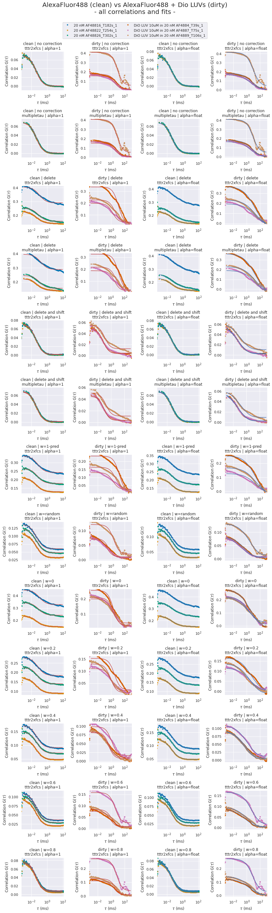

Lab book Fluotracify
1 Technical Notes
1.1 README
1.1.1 General:
- This file corresponds to my lab book for my doctoral thesis tackling artifact correction in Fluorescence Correlation Spectroscopy (FCS) measurements using Deep Neural Networks. It also contains notes taken during the process of setting up this workflow for reproducible research.
- This file contains explanations of how things are organized, of the workflow for doing experiments, changes made to the code, and the observed behavior in the "* Data" section.
- The branching model used is described in this paper. Therefore: if you
are interested in the "* Data" section, you have to
git clonethe data branch of the repository. The main branch is clean from any results, it contains only source code and the analysis. - This project is my take on Open-notebook science. The idea was postulated in
a blog post in 2006:
… there is a URL to a laboratory notebook that is freely available and indexed on common search engines. It does not necessarily have to look like a paper notebook but it is essential that all of the information available to the researchers to make their conclusions is equally available to the rest of the world —Jean-Claude Bradley
- Proposal on how to deal with truly private data (e.g. notes from a confidential meeting with a colleague), which might otherwise be noted in a normal Lab notebook: do not include them here. Only notes relevant to the current project should be taken
1.1.2 Code block languages used in this document
# This is a sh block for shell / bash scripting. In the context of this file, # these blocks are mainly used for operations on my local computer. # In the LabBook.html rendering of this document, these blocks will have a # light green colour (#F0FBE9)
# This block can open and access tmux sessions, used for shell scripting on # remote computing clusters. # In the LabBook.html rendering of this document, these blocks will have a # distinct light green colour (#E1EED8)
# This is a python block. In the context of this file, it is seldomly used # (only for examplary scripts.) # In the LabBook.html rendering of this document, these blocks will have a # light blue colour (#E6EDF4)
# This is a jupyter-python block. The code is sent to a jupyter kernel running # on a remote high performance computing cluster. Most of my jupyter code is # executed this way. # In the LabBook.html rendering of this document, these blocks will have a # light orange colour (#FAEAE1)
;; This is a emacs-lisp block, the language used to customize Emacs, which is ;; sometimes necessary, since the reproducible workflow of this LabBook is ;; tightly integrated with Emacs and org-mode. ;; In the LabBook.html rendering of this document, these blocks will have a ;; light violet colour (#F7ECFB)
This is a literal example block. It can be used very flexibly - in the context of this document the output of most code blocks is displayed this way. In the LabBook.html rendering of this document, these blocks will have a light yellow colour (#FBFBBF)
This is a literal example block enclosed in a details block. This is useful to make the page more readable by collapsing large amounts of output. In the Labbook.html rendering of this document, the details block will have a light grey colour (#f0f0f0) and a pink color when hovering above it.
1.1.3 Experiments workflow:
- Create a new branch from
main - Print out the git log from the latest commit and the metadata
- Call the analysis scripts, follow the principles outlined in Organization of code
- All machine learning runs are saved in
data/mlruns, all other data indata/#experiment-name - Add a
** exp-<date>-<name>" section to this file under Data - Commit/push the results of this separate branch
- Merge this new branch with the remote
databranch
1.1.4 Example for experimental setup procedure
1.1.5 tools used (notes)
1.1.5.1 Emacs magit
gitflow-avh(magit-flow) to follow the flow- possibly https://github.com/magit/magit-annex for large files. Follow this: https://git-annex.branchable.com/walkthrough/
- maybe check out git-toolbelt at some point https://github.com/nvie/git-toolbelt#readme with https://nvie.com/posts/git-power-tools/
1.1.5.2 jupyter
- emacs jupyter for running and connecting to kernel on server: https://github.com/dzop/emacs-jupyter
- if I actually still would use .ipynb files, these might come handy:
- jupytext: https://github.com/mwouts/jupytext
- nbstripout: https://github.com/kynan/nbstripout
1.1.5.3 mlflow
1.1.5.4 tensorflow
1.2 Template for data entry and setup notes:
1.2.1 exp-#date-#title
1.2.1.1 git:
git log -1
1.2.1.2 System Metadata:
import os import pprint ramlist = os.popen('free -th').readlines()[-1].split()[1:] print('No of CPUs in system:', os.cpu_count()) print('No of CPUs the current process can use:', len(os.sched_getaffinity(0))) print('load average:', os.getloadavg()) print('os.uname(): ', os.uname()) print('PID of process:', os.getpid()) print('RAM total: {}, RAM used: {}, RAM free: {}'.format( ramlist[0], ramlist[1], ramlist[2])) !echo the current directory: $PWD !echo My disk usage: !df -h if _long: %conda list pprint.pprint(dict(os.environ), sort_dicts=False)
1.2.1.3 Tmux setup and scripts
rm ~/.tmux-local-socket-remote-machine REMOTE_SOCKET=$(ssh ara 'tmux ls -F "#{socket_path}"' | head -1) echo $REMOTE_SOCKET ssh ara -tfN \ -L ~/.tmux-local-socket-remote-machine:$REMOTE_SOCKET
| rm: | cannot | remove | 'home/lex.tmux-local-socket-remote-machine': | No | such | file | or | directory |
| ye53nis@ara-login01.rz.uni-jena.de's | password: | |||||||
| /tmp/tmux-67339/default | ||||||||
| > | ye53nis@ara-login01.rz.uni-jena.de's | password: |
1.2.1.4 SSH tunneling
Different applications can be run on the remote compute node. If I want to access them at the local machine, and open them with the browser, I use this tunneling script.
ssh -t -t ara -L $port:localhost:$port ssh $node -L $port:Localhost:$port
Apps I use that way:
- Jupyter lab for running Python 3-Kernels
- TensorBoard
- Mlflow ui
1.2.1.5 jupyter scripts
Starting a jupyter instance on a server where the necessary libraries are installed is easy using this script:
conda activate tf export PORT=9999 export XDG_RUNTIME_DIR='' export XDG_RUNTIME_DIR="" jupyter lab --no-browser --port=$PORT
On the compute node of the HPC, the users' environment is managed through
module files using the system Lmod. The export XDG_RUNTIME_DIR statements
are needed because of a jupyter bug which did not let it start. Right now,
ob-tmux does not support a :var header like normal org-babel does. So
the $port variable has to be set here in the template.
Now this port has to be tunnelled on our local computer (See SSH tunneling). While the tmux session above keeps running, no matter if Emacs is running or not, this following ssh tunnel needs to be active locally to connect to the notebook. If you close Emacs, it would need to be reestablished
1.2.2 Setup notes
1.2.2.1 Setting up a tmux connection from using ob-tmux in org-babel
- prerequisite: tmux versions need to be the same locally and on the server.
Let's verify that now.
- the local tmux version:
tmux -V
tmux 3.0a
- the remote tmux version:
ssh ara tmux -V
ye53nis@ara-login01.rz.uni-jena.de's password: tmux 3.0a
- the local tmux version:
- as is described in the ob-tmux readme, the following code snippet creates
a socket on the remote machine and forwards this socket to the local
machine (note that
socket_pathwas introduced in tmux version 2.2)REMOTE_SOCKET=$(ssh ara 'tmux ls -F "#{socket_path}"' | head -1) echo $REMOTE_SOCKET ssh ara -tfN \ -L ~/.tmux-local-socket-remote-machine:$REMOTE_SOCKET
ye53nis@ara-login01.rz.uni-jena.de's password: /tmp/tmux-67339/default > ye53nis@ara-login01.rz.uni-jena.de's password: - now a new tmux session with name
ob-NAMEis created when using a code block which looks like this:#+BEGIN_SRC tmux :socket ~/.tmux-local-socket-remote-machine :session NAME - Commands can be sent now to the remote tmux session, BUT note that the output is not printed yet
- there is a workaround for getting output back to our LabBook.org: A script
which allows to print the output from the tmux session in an
#+begin_example-Block below the tmux block by pressingC-c C-oorC-c C-v C-owhen the pointer is inside the tmux block.
1.2.2.2 emacs-jupyter Setup
Emacs-jupyter aims to be an API for a lot of functionalities of the
jupyter project. The documentation can be found on GitHub.
- For the whole document: connect to a running jupyter instance
M-x jupyter-server-list-kernels- set server URL, e.g.
http://localhost:8889 - set websocket URL, e.g.
http://localhost:8889
- set server URL, e.g.
- two possibilities
- kernel already exists \(\to\) list of kernels and
kernel-IDis displayed - kernel does not exist \(\to\) prompt asks if you want to start one \(\to\)
yes \(\to\) type kernel you want to start, e.g.
Python 3
- kernel already exists \(\to\) list of kernels and
- In the subtree where you want to use
jupyter-pythonblocks withorg babel- set the
:header-args:jupyter-python :session /jpy:localhost#kernel:8889-ID - customize the output folder using the following org-mode variable:
(setq org-babel-jupyter-resource-directory "./data/exp-test/plots")
./data/exp-test/plots
- set the
- For each individual block, the following customizations might be useful
- jupyter kernels can return multiple kinds of rich output (images,
html, …) or scalar data (plain text, numbers, lists, …). To force
a plain output, use
:results scalar. To show the output in the minibuffer only, use:results silent - to change the priority of different rich outputs, use
:displayheader argument, e.g.:display text/plain text/htmlprioritizes plain text over html. All supported mimetypes in default order:- text/org
- image/svg+xml, image/jpeg, image/png
- text/html
- text/markdown
- text/latex
- text/plain
- We can set jupyter to output pandas DataFrames as org tables
automatically using the source block header argument
:pandoc t - useful keybindings
M-ito open the documentation for wherever your pointer is (like pressingShift-TABin Jupyter notebooks)C-c C-ito interrupt the kernel,C-c C-rto restart the kernel
- jupyter kernels can return multiple kinds of rich output (images,
html, …) or scalar data (plain text, numbers, lists, …). To force
a plain output, use
1.2.3 Notes on archiving
1.2.3.1 Exporting the LabBook.org to html in a twbs style
- I am partial to the twitter bootstrap theme of html, since I like it's simple design, but clear structure with a nice table of contents at the side → the following org mode extension supports a seemless export to twitter bootstrap html: https://github.com/marsmining/ox-twbs
- when installed, the export can be triggered via the command
(org-twbs-export-as-html)or via the keyboard shortcut for exportC-c C-efollowed bywfor Twitter bootstrap andhfor saving the .html - Things to configure:
- in general, there are multiple export options: https://orgmode.org/manual/Export-Settings.html
- E.g. I set 2
#+OPTIONSkeywords at the begin of the file:toc:4andH:4which make sure that in my export my sidebar table of contents will show numbered headings till a depth of 4. - I configured my code blocks so that they will not be evaluated when
exporting (I would recommend this especially if you only export for
archiving) and that both the code block and the output will be exported
with the keyword:
#+PROPERTY: header-args :eval never-export :exports both - To discriminate between code blocks for different languages I gave each
of them a distinct colour using
#+HTML_HEAD_EXTRA: <style...(see above) - I had to configure a style for
table, so that thedisplay: block; overflow-x: auto;gets the table to be restricted to the width of the text and if it is larger, activates scrollingwhite-space: nowrap;makes it that there is no wrap in a column, so it might be broader, but better readable if you have scrolling anyway
- Things to do before exporting / Troubleshooting while exporting:
- when using a dark theme for you emacs, the export of the code blocks
might show some ugly dark backgrounds from the theme. If this becomes
an issue, change to a light theme for the export with
M-x (load-theme)and choosesolarized-light - only in the
databranch you set the git tags after merging. If you want to show them here, execute the corresponding function in Git TAGs - make sure your file links work properly! I recommend referencing your files relatively (e.g. [ [ f ile:./data/exp-XXXXXX-test/test.png]] without spaces). Otherwise there will be errors in your Messages buffer
- There might be errors with your code blocks
- e.g. the export function expects you to assign a default variable to your functions
- if you call a function via the
#+CALLmechanism, it wants you to include two parentheses for the function, e.g.#+CALL: test()
- check indentation of code blocks inside lists
- add a
detailsblock around large output cells. This makes them expandable. I added some#+HTML_HEAD_EXTRA: <style...inspired by alhassy. That's how thedetailsblock looks like:#+begin_details #+end_details
- If you reference a parameter with an underscore in the name, use the
org markdown tricks to style them like code (
==or~~), otherwise the part after the underscore will be rendered like a subscript:under_scorevs underscore
- when using a dark theme for you emacs, the export of the code blocks
might show some ugly dark backgrounds from the theme. If this becomes
an issue, change to a light theme for the export with
- Things to do after exporting:
- In my workflow, the exported
LabBook.htmlwith the overview of all experiments is in thedatafolder. If you move the file, you will have to fix the file links for the new location, e.g. via "Find and replace"M-%:- if you move the org file → in the org file find
[[file:./data/and replace with[[file:./→ then export withC-c C-e w h - if you export first with
C-c C-e w hand move the html file todata→ in the html file find./dataand replace with.
- if you move the org file → in the org file find
- In my workflow, the exported
1.3 Organization of git
1.3.1 remote/origin/main branch:
- contains all the source code in folder src/ which is used for experiments.
- contains the LabBook.org template
- contains setup- and metadata files such as MLproject or conda.yaml
- the log contains only lasting alterations on the folders and files mentioned above, which are e.g. used for conducting experiments or which introduce new features. Day-to-day changes in code
1.3.2 remote/origin/exp### branches:
- if an experiment is done, the code and templates will be branched out from main in an #experiment-name branch, ### meaning some meaningful descriptor.
- all data generated during the experiment (e.g. .csv files, plots, images, etc), is stored in a folder with the name data/#experiment-name, except machine learning-specific data and metadata from `mlflow` runs, which are saved under data/mlruns (this allows easily comparing machine learning runs with different experimental settings)
- The LabBook.org file is essential
- If possible, all code is executed from inside this file (meaning analysis scripts or calling the code from the scr/ directory).
- All other steps taken during an experiment are noted down, as well as conclusions or my thought process while conducting the experiment
- Provenance data, such as metadata about the environment the code was executed in, the command line output of the code, and some plots
1.3.3 remote/origin/develop branch:
- this is the branch I use for day to day work on features and exploration. All of my current activity can be followed here.
1.3.4 remote/origin/data branch:
- contains a full cronicle of the whole research process
- all #experiment-name branches are merged here. Afterwards the original branch is deleted and on the data branch there is a Git tag which shows the merge commit to make accessing single experiments easy.
- the develop branch is merged here as well.
1.3.5 Git TAGs
1.3.5.1 Stable versions:
1.3.5.2 All tags from git:
git push origin --tags git tag -n1
exp-200402-test Merge branch 'exp-200402-test' into data exp-200520-unet Merge branch 'exp-310520-unet' into data exp-200531-unet Merge branch 'heads/exp-310520-unet' into data exp-201231-clustsim exp-201231-clustsim exp-210204-unet Add exp-210204-unet LabBook part 3 exp-310520-unet move exp-310520-unet to data branch manually
1.4 Organization of code
1.4.1 scripts:
1.4.2 src/
1.4.2.1 fluotracify/
- imports/
- simulations/
- training/
- applications/
- doc/
- use Sphinx
- follow this: https://daler.github.io/sphinxdoc-test/includeme.html
- evtl export org-mode Readme to rst via https://github.com/msnoigrs/ox-rst
- possibly heavily use http://www.sphinx-doc.org/en/master/usage/extensions/autodoc.html
- for examples sphinx-galleries could be useful https://sphinx-gallery.github.io/stable/getting_started.html
- use Sphinx
1.4.2.2 nanosimpy/
- cloned from dwaithe with refactoring for Python 3-compatibility
1.5 Changes in this repository (without "* Data" in this file)
1.5.1 Changes in LabBook.org (without "* Data")
1.5.1.1 2022-02-19
- Add
#+HTML_HEAD_EXTRA: <style...fortableto enable scrolling if the table overflows
1.5.1.2 2021-12-16
- Add
detailsblocks, corresponding#+HTML_HEAD_EXTRA: <style...and documentation in Notes on archiving
1.5.1.3 2021-08-05
- Rename
masterbranch tomainbranch
1.5.1.4 2021-04-04
- Add
#+OPTIONS: H:4and#+OPTIONS: toc:4to show up to 4 levels of depth in the html (twbs) export of this LabBook in the table of contents at the side - I added Notes on archiving
1.5.1.5 2020-11-04
- update "jupyter scripts" in Template for data entry and setup notes:
for new conda environment on server (now
conda activate tf-nightly)
1.5.1.6 2020-05-31
- extend general documentation in README
- Add code block examples
- extend documentation on experiment workflow
- move setup notes from README to "Template for data entry and setup notes"
- remove emacs-lisp code for custom tmux block functions (not relevant enough)
- change named "jpt-tmux" from starting a jupyter notebook to starting
jupyter lab. Load a conda environment instead of using Lmod's
module load
1.5.1.7 2020-05-07
- extend documentation on git model
- extend documentation on jupyter setup
1.5.1.8 2020-04-22
- added parts of README which describe the experimental process
- added templates for system metadata, tmux, jupyter setup
- added organization of code
1.5.1.9 2020-03-30
- set up lab book and form git repo accoring to setup by Luka Stanisic et al
1.5.2 Changes in src/fluotracify
2 Data
2.1 exp-220120-correlate-ptu
2.1.1 Setup: Jupyter 1 on HPC compute node 1
- Setup tmux (
#+CALL: setup-tmux[:session remote])sh-5.1$ ye53nis@ara-login01.rz.uni-jena.de's password: > ye53nis@ara-login01.rz.uni-jena.de's password: - Request compute node via tmux
cd / srun -p s_standard --time=7-10:00:00 --nodes=1 --ntasks-per-node=24 --mem=150000 --pty bash
(base) [ye53nis@node305 /]$
- Branch out git branch
exp-220120-correlate-ptufrommain(done via magit) and make sure ou are on the correct branchcd /beegfs/ye53nis/drmed-git git checkout exp-220120-correlate-ptu
(base) [ye53nis@node165 drmed-git]$ git checkout exp-220120-correlate-ptu Checking out files: 100% (147/147), done. M src/nanosimpy Branch exp-220120-correlate-ptu set up to track remote branch exp-220120-correlate-ptu from origin. Switched to a new branch 'exp-220120-correlate-ptu' (base) [ye53nis@node165 drmed-git]$
- Make directory for experiment
mkdir data/exp-220120-correlate-ptu/jupyter
- Customize the output folder using the following org-mode variable
(setq org-babel-jupyter-resource-directory "./data/exp-220120-correlate-ptu/jupyter")
./data/exp-220120-correlate-ptu/jupyter
- Load conda environment, and start jupyter (
#+CALL: jpt-tmux[:session jpmux])(tf) [ye53nis@node205 /]$ jupyter lab --no-browser --port=$PORT [I 2022-02-17 18:56:48.700 ServerApp] jupyterlab | extension was successfully linked. [I 2022-02-17 18:57:23.918 ServerApp] nbclassic | extension was successfully linked. [I 2022-02-17 18:57:27.274 LabApp] JupyterLab extension loaded from /home/ye53nis/.conda/envs/tf/lib/python3.9/site-packages/jupyterlab [I 2022-02-17 18:57:27.275 LabApp] JupyterLab application directory is /home/ye53nis/.conda/envs/tf/share/jupyter/lab [I 2022-02-17 18:57:27.405 ServerApp] jupyterlab | extension was successfully loaded. [I 2022-02-17 18:57:28.130 ServerApp] nbclassic | extension was successfully loaded. [I 2022-02-17 18:57:28.130 ServerApp] Serving notebooks from local directory: / [I 2022-02-17 18:57:28.131 ServerApp] Jupyter Server 1.4.1 is running at: [I 2022-02-17 18:57:28.131 ServerApp] http://localhost:8889/lab?token=6f26a99296b37cdb05f3969fb347c51d49b9552c75ee7eb4 [I 2022-02-17 18:57:28.131 ServerApp] or http://127.0.0.1:8889/lab?token=6f26a99296b37cdb05f3969fb347c51d49b9552c75ee7eb4 [I 2022-02-17 18:57:28.131 ServerApp] Use Control-C to stop this server and shut down all kernels (twice to skip confirmation). [C 2022-02-17 18:57:28.499 ServerApp] To access the server, open this file in a browser: file:///home/ye53nis/.local/share/jupyter/runtime/jpserver-308527-open.html Or copy and paste one of these URLs: http://localhost:8889/lab?token=6f26a99296b37cdb05f3969fb347c51d49b9552c75ee7eb4 or http://127.0.0.1:8889/lab?token=6f26a99296b37cdb05f3969fb347c51d49b9552c75ee7eb4 - Create ssh tunnel (
#+CALL: ssh-tunnel(port="8889", node="node165"))sh-5.1$ sh-5.1$ ye53nis@ara-login01.rz.uni-jena.de's password: Warning: Permanently added 'node305,192.168.194.50' (ECDSA) to the list of known hosts. ye53nis@node305's password: - I started a Python3 kernel using
jupyter-server-list-kernels. Then I added the kernel ID to the:PROPERTIES:drawer of this (and following) subtrees.python3 03038b73-b2b5-49ce-a1dc-21afb6247d0f a few seconds ago starting 0
- Test and save metadata (including the python packages before the update in
Experiment 2a):
No of CPUs in system: 72 No of CPUs the current process can use: 24 load average: (6.14, 6.09, 6.06) os.uname(): posix.uname_result(sysname='Linux', nodename='node154', release='3.10.0-957.1.3.el7.x86_64', version='#1 SMP Thu Nov 29 14:49:43 UTC 2018', machine='x86_64') PID of process: 59210 RAM total: 199G, RAM used: 27G, RAM free: 85G the current directory: / My disk usage: Filesystem Size Used Avail Use% Mounted on /dev/sda1 50G 3.8G 47G 8% / devtmpfs 94G 0 94G 0% /dev tmpfs 94G 3.1M 94G 1% /dev/shm tmpfs 94G 107M 94G 1% /run tmpfs 94G 0 94G 0% /sys/fs/cgroup nfs01-ib:/home 80T 67T 14T 84% /home nfs01-ib:/cluster 2.0T 468G 1.6T 23% /cluster nfs03-ib:/pool/work 100T 79T 22T 79% /nfsdata nfs02-ib:/data01 88T 72T 16T 82% /data01 /dev/sda3 6.0G 407M 5.6G 7% /var /dev/sda6 169G 11G 158G 7% /local /dev/sda5 2.0G 34M 2.0G 2% /tmp beegfs_nodev 524T 476T 49T 91% /beegfs tmpfs 19G 0 19G 0% /run/user/67339# packages in environment at /home/ye53nis/.conda/envs/tf: # # Name Version Build Channel _libgcc_mutex 0.1 main _openmp_mutex 4.5 1_gnu absl-py 0.13.0 pypi_0 pypi alembic 1.4.1 pypi_0 pypi anyio 2.2.0 py39h06a4308_1 argon2-cffi 20.1.0 py39h27cfd23_1 asteval 0.9.25 pypi_0 pypi astunparse 1.6.3 pypi_0 pypi async_generator 1.10 pyhd3eb1b0_0 attrs 21.2.0 pyhd3eb1b0_0 babel 2.9.1 pyhd3eb1b0_0 backcall 0.2.0 pyhd3eb1b0_0 bleach 3.3.1 pyhd3eb1b0_0 brotlipy 0.7.0 py39h27cfd23_1003 ca-certificates 2021.7.5 h06a4308_1 cachetools 4.2.2 pypi_0 pypi certifi 2021.5.30 py39h06a4308_0 cffi 1.14.6 py39h400218f_0 chardet 4.0.0 py39h06a4308_1003 click 8.0.1 pypi_0 pypi cloudpickle 1.6.0 pypi_0 pypi cryptography 3.4.7 py39hd23ed53_0 cycler 0.10.0 pypi_0 pypi databricks-cli 0.14.3 pypi_0 pypi decorator 5.0.9 pyhd3eb1b0_0 defusedxml 0.7.1 pyhd3eb1b0_0 docker 5.0.0 pypi_0 pypi entrypoints 0.3 py39h06a4308_0 fcsfiles 2021.6.6 pypi_0 pypi flask 2.0.1 pypi_0 pypi flatbuffers 1.12 pypi_0 pypi future 0.18.2 pypi_0 pypi gast 0.4.0 pypi_0 pypi gitdb 4.0.7 pypi_0 pypi gitpython 3.1.18 pypi_0 pypi google-auth 1.34.0 pypi_0 pypi google-auth-oauthlib 0.4.5 pypi_0 pypi google-pasta 0.2.0 pypi_0 pypi greenlet 1.1.0 pypi_0 pypi grpcio 1.34.1 pypi_0 pypi gunicorn 20.1.0 pypi_0 pypi h5py 3.1.0 pypi_0 pypi idna 2.10 pyhd3eb1b0_0 importlib-metadata 3.10.0 py39h06a4308_0 importlib_metadata 3.10.0 hd3eb1b0_0 ipykernel 5.3.4 py39hb070fc8_0 ipython 7.22.0 py39hb070fc8_0 ipython_genutils 0.2.0 pyhd3eb1b0_1 itsdangerous 2.0.1 pypi_0 pypi jedi 0.17.2 py39h06a4308_1 jinja2 3.0.1 pyhd3eb1b0_0 joblib 1.0.1 pypi_0 pypi json5 0.9.6 pyhd3eb1b0_0 jsonschema 3.2.0 py_2 jupyter-packaging 0.7.12 pyhd3eb1b0_0 jupyter_client 6.1.12 pyhd3eb1b0_0 jupyter_core 4.7.1 py39h06a4308_0 jupyter_server 1.4.1 py39h06a4308_0 jupyterlab 3.0.14 pyhd3eb1b0_1 jupyterlab_pygments 0.1.2 py_0 jupyterlab_server 2.6.1 pyhd3eb1b0_0 keras-nightly 2.5.0.dev2021032900 pypi_0 pypi keras-preprocessing 1.1.2 pypi_0 pypi kiwisolver 1.3.1 pypi_0 pypi ld_impl_linux-64 2.35.1 h7274673_9 libffi 3.3 he6710b0_2 libgcc-ng 9.3.0 h5101ec6_17 libgomp 9.3.0 h5101ec6_17 libsodium 1.0.18 h7b6447c_0 libstdcxx-ng 9.3.0 hd4cf53a_17 lmfit 1.0.2 pypi_0 pypi mako 1.1.4 pypi_0 pypi markdown 3.3.4 pypi_0 pypi markupsafe 2.0.1 py39h27cfd23_0 matplotlib 3.4.2 pypi_0 pypi mistune 0.8.4 py39h27cfd23_1000 mlflow 1.19.0 pypi_0 pypi multipletau 0.3.3 pypi_0 pypi nbclassic 0.2.6 pyhd3eb1b0_0 nbclient 0.5.3 pyhd3eb1b0_0 nbconvert 6.1.0 py39h06a4308_0 nbformat 5.1.3 pyhd3eb1b0_0 ncurses 6.2 he6710b0_1 nest-asyncio 1.5.1 pyhd3eb1b0_0 notebook 6.4.0 py39h06a4308_0 numpy 1.19.5 pypi_0 pypi oauthlib 3.1.1 pypi_0 pypi openssl 1.1.1k h27cfd23_0 opt-einsum 3.3.0 pypi_0 pypi packaging 21.0 pyhd3eb1b0_0 pandas 1.3.1 pypi_0 pypi pandocfilters 1.4.3 py39h06a4308_1 parso 0.7.0 py_0 pexpect 4.8.0 pyhd3eb1b0_3 pickleshare 0.7.5 pyhd3eb1b0_1003 pillow 8.3.1 pypi_0 pypi pip 21.1.3 py39h06a4308_0 prometheus-flask-exporter 0.18.2 pypi_0 pypi prometheus_client 0.11.0 pyhd3eb1b0_0 prompt-toolkit 3.0.17 pyh06a4308_0 protobuf 3.17.3 pypi_0 pypi ptyprocess 0.7.0 pyhd3eb1b0_2 pyasn1 0.4.8 pypi_0 pypi pyasn1-modules 0.2.8 pypi_0 pypi pycparser 2.20 py_2 pygments 2.9.0 pyhd3eb1b0_0 pyopenssl 20.0.1 pyhd3eb1b0_1 pyparsing 2.4.7 pyhd3eb1b0_0 pyrsistent 0.18.0 py39h7f8727e_0 pysocks 1.7.1 py39h06a4308_0 python 3.9.5 h12debd9_4 python-dateutil 2.8.2 pyhd3eb1b0_0 python-editor 1.0.4 pypi_0 pypi pytz 2021.1 pyhd3eb1b0_0 pyyaml 5.4.1 pypi_0 pypi pyzmq 20.0.0 py39h2531618_1 querystring-parser 1.2.4 pypi_0 pypi readline 8.1 h27cfd23_0 requests 2.25.1 pyhd3eb1b0_0 requests-oauthlib 1.3.0 pypi_0 pypi rsa 4.7.2 pypi_0 pypi scikit-learn 0.24.2 pypi_0 pypi scipy 1.7.0 pypi_0 pypi seaborn 0.11.1 pypi_0 pypi send2trash 1.5.0 pyhd3eb1b0_1 setuptools 52.0.0 py39h06a4308_0 six 1.15.0 pypi_0 pypi smmap 4.0.0 pypi_0 pypi sniffio 1.2.0 py39h06a4308_1 sqlalchemy 1.4.22 pypi_0 pypi sqlite 3.36.0 hc218d9a_0 sqlparse 0.4.1 pypi_0 pypi tabulate 0.8.9 pypi_0 pypi tensorboard 2.5.0 pypi_0 pypi tensorboard-data-server 0.6.1 pypi_0 pypi tensorboard-plugin-wit 1.8.0 pypi_0 pypi tensorflow 2.5.0 pypi_0 pypi tensorflow-estimator 2.5.0 pypi_0 pypi termcolor 1.1.0 pypi_0 pypi terminado 0.9.4 py39h06a4308_0 testpath 0.5.0 pyhd3eb1b0_0 threadpoolctl 2.2.0 pypi_0 pypi tifffile 2021.7.30 pypi_0 pypi tk 8.6.10 hbc83047_0 tornado 6.1 py39h27cfd23_0 traitlets 5.0.5 pyhd3eb1b0_0 typing-extensions 3.7.4.3 pypi_0 pypi tzdata 2021a h52ac0ba_0 uncertainties 3.1.6 pypi_0 pypi urllib3 1.26.6 pyhd3eb1b0_1 wcwidth 0.2.5 py_0 webencodings 0.5.1 py39h06a4308_1 websocket-client 1.1.0 pypi_0 pypi werkzeug 2.0.1 pypi_0 pypi wheel 0.36.2 pyhd3eb1b0_0 wrapt 1.12.1 pypi_0 pypi xz 5.2.5 h7b6447c_0 zeromq 4.3.4 h2531618_0 zipp 3.5.0 pyhd3eb1b0_0 zlib 1.2.11 h7b6447c_3 Note: you may need to restart the kernel to use updated packages. {'SLURM_CHECKPOINT_IMAGE_DIR': '/var/slurm/checkpoint', 'SLURM_NODELIST': 'node154', 'SLURM_JOB_NAME': 'bash', 'XDG_SESSION_ID': '44301', 'SLURMD_NODENAME': 'node154', 'SLURM_TOPOLOGY_ADDR': 'node154', 'SLURM_NTASKS_PER_NODE': '24', 'HOSTNAME': 'login01', 'SLURM_PRIO_PROCESS': '0', 'SLURM_SRUN_COMM_PORT': '41523', 'SHELL': '/bin/bash', 'TERM': 'xterm-color', 'SLURM_JOB_QOS': 'qstand', 'SLURM_PTY_WIN_ROW': '34', 'HISTSIZE': '1000', 'TMPDIR': '/tmp', 'SLURM_TOPOLOGY_ADDR_PATTERN': 'node', 'SSH_CLIENT': '10.231.181.128 49370 22', 'CONDA_SHLVL': '2', 'CONDA_PROMPT_MODIFIER': '(tf) ', 'QTDIR': '/usr/lib64/qt-3.3', 'QTINC': '/usr/lib64/qt-3.3/include', 'SSH_TTY': '/dev/pts/79', 'NO_PROXY': 'localhost,127.0.0.0/8,.uni-jena.de,141.35.0.0/16,10.0.0.0/8,192.168.0.0/16,172.0.0.0/8,fe80::/7,2001:638:1558::/24,vmaster,node001', 'QT_GRAPHICSSYSTEM_CHECKED': '1', 'SLURM_NNODES': '1', 'USER': 'ye53nis', 'http_proxy': 'http://internet4nzm.rz.uni-jena.de:3128', 'LS_COLORS': 'rs=0:di=01;34:ln=01;36:mh=00:pi=40;33:so=01;35:do=01;35:bd=40;33;01:cd=40;33;01:or=40;31;01:mi=01;05;37;41:su=37;41:sg=30;43:ca=30;41:tw=30;42:ow=34;42:st=37;44:ex=01;32:*.tar=01;31:*.tgz=01;31:*.arc=01;31:*.arj=01;31:*.taz=01;31:*.lha=01;31:*.lz4=01;31:*.lzh=01;31:*.lzma=01;31:*.tlz=01;31:*.txz=01;31:*.tzo=01;31:*.t7z=01;31:*.zip=01;31:*.z=01;31:*.Z=01;31:*.dz=01;31:*.gz=01;31:*.lrz=01;31:*.lz=01;31:*.lzo=01;31:*.xz=01;31:*.bz2=01;31:*.bz=01;31:*.tbz=01;31:*.tbz2=01;31:*.tz=01;31:*.deb=01;31:*.rpm=01;31:*.jar=01;31:*.war=01;31:*.ear=01;31:*.sar=01;31:*.rar=01;31:*.alz=01;31:*.ace=01;31:*.zoo=01;31:*.cpio=01;31:*.7z=01;31:*.rz=01;31:*.cab=01;31:*.jpg=01;35:*.jpeg=01;35:*.gif=01;35:*.bmp=01;35:*.pbm=01;35:*.pgm=01;35:*.ppm=01;35:*.tga=01;35:*.xbm=01;35:*.xpm=01;35:*.tif=01;35:*.tiff=01;35:*.png=01;35:*.svg=01;35:*.svgz=01;35:*.mng=01;35:*.pcx=01;35:*.mov=01;35:*.mpg=01;35:*.mpeg=01;35:*.m2v=01;35:*.mkv=01;35:*.webm=01;35:*.ogm=01;35:*.mp4=01;35:*.m4v=01;35:*.mp4v=01;35:*.vob=01;35:*.qt=01;35:*.nuv=01;35:*.wmv=01;35:*.asf=01;35:*.rm=01;35:*.rmvb=01;35:*.flc=01;35:*.avi=01;35:*.fli=01;35:*.flv=01;35:*.gl=01;35:*.dl=01;35:*.xcf=01;35:*.xwd=01;35:*.yuv=01;35:*.cgm=01;35:*.emf=01;35:*.axv=01;35:*.anx=01;35:*.ogv=01;35:*.ogx=01;35:*.aac=01;36:*.au=01;36:*.flac=01;36:*.mid=01;36:*.midi=01;36:*.mka=01;36:*.mp3=01;36:*.mpc=01;36:*.ogg=01;36:*.ra=01;36:*.wav=01;36:*.axa=01;36:*.oga=01;36:*.spx=01;36:*.xspf=01;36:', 'CONDA_EXE': '/cluster/miniconda3/bin/conda', 'SLURM_STEP_NUM_NODES': '1', 'SLURM_JOBID': '1608805', 'SRUN_DEBUG': '3', 'FTP_PROXY': 'http://internet4nzm.rz.uni-jena.de:3128', 'ftp_proxy': 'http://internet4nzm.rz.uni-jena.de:3128', 'SLURM_NTASKS': '24', 'SLURM_LAUNCH_NODE_IPADDR': '192.168.192.5', 'SLURM_STEP_ID': '0', 'TMUX': '/tmp/tmux-67339/default,20557,4', '_CE_CONDA': '', 'CONDA_PREFIX_1': '/cluster/miniconda3', 'SLURM_STEP_LAUNCHER_PORT': '41523', 'SLURM_TASKS_PER_NODE': '24', 'MAIL': '/var/spool/mail/ye53nis', 'PATH': '/home/ye53nis/.conda/envs/tf/bin:/home/lex/Programme/miniconda3/envs/tf-nightly-lab/bin:/home/lex/Programme/miniconda3/condabin:/home/lex/.local/bin:/bin:/usr/bin:/usr/local/bin:/usr/local/sbin:/usr/lib/jvm/default/bin:/usr/bin/site_perl:/usr/bin/vendor_perl:/usr/bin/core_perl:/var/lib/snapd/snap/bin:/usr/sbin:/home/ye53nis/.local/bin:/home/ye53nis/bin', 'SLURM_WORKING_CLUSTER': 'hpc:192.168.192.1:6817:8448', 'SLURM_JOB_ID': '1608805', 'CONDA_PREFIX': '/home/ye53nis/.conda/envs/tf', 'SLURM_JOB_USER': 'ye53nis', 'SLURM_STEPID': '0', 'PWD': '/', 'SLURM_SRUN_COMM_HOST': '192.168.192.5', 'LANG': 'en_US.UTF-8', 'SLURM_PTY_WIN_COL': '236', 'SLURM_UMASK': '0022', 'MODULEPATH': '/usr/share/Modules/modulefiles:/etc/modulefiles:/cluster/modulefiles', 'SLURM_JOB_UID': '67339', 'LOADEDMODULES': '', 'SLURM_NODEID': '0', 'TMUX_PANE': '%4', 'SLURM_SUBMIT_DIR': '/', 'SLURM_TASK_PID': '57304', 'SLURM_NPROCS': '24', 'SLURM_CPUS_ON_NODE': '24', 'SLURM_DISTRIBUTION': 'block', 'HTTPS_PROXY': 'http://internet4nzm.rz.uni-jena.de:3128', 'https_proxy': 'http://internet4nzm.rz.uni-jena.de:3128', 'SLURM_PROCID': '0', 'HISTCONTROL': 'ignoredups', '_CE_M': '', 'SLURM_JOB_NODELIST': 'node154', 'SLURM_PTY_PORT': '38987', 'HOME': '/home/ye53nis', 'SHLVL': '3', 'SLURM_LOCALID': '0', 'SLURM_JOB_GID': '13280', 'SLURM_JOB_CPUS_PER_NODE': '24', 'SLURM_CLUSTER_NAME': 'hpc', 'no_proxy': 'localhost,127.0.0.0/8,.uni-jena.de,141.35.0.0/16,10.0.0.0/8,192.168.0.0/16,172.0.0.0/8,fe80::/7,2001:638:1558::/24,vmaster,node001', 'SLURM_GTIDS': '0,1,2,3,4,5,6,7,8,9,10,11,12,13,14,15,16,17,18,19,20,21,22,23', 'SLURM_SUBMIT_HOST': 'login01', 'HTTP_PROXY': 'http://internet4nzm.rz.uni-jena.de:3128', 'SLURM_JOB_PARTITION': 's_standard', 'MATHEMATICA_HOME': '/cluster/apps/mathematica/11.3', 'CONDA_PYTHON_EXE': '/cluster/miniconda3/bin/python', 'LOGNAME': 'ye53nis', 'SLURM_STEP_NUM_TASKS': '24', 'QTLIB': '/usr/lib64/qt-3.3/lib', 'SLURM_JOB_ACCOUNT': 'iaob', 'SLURM_JOB_NUM_NODES': '1', 'MODULESHOME': '/usr/share/Modules', 'CONDA_DEFAULT_ENV': 'tf', 'LESSOPEN': '||/usr/bin/lesspipe.sh %s', 'SLURM_STEP_TASKS_PER_NODE': '24', 'PORT': '8889', 'SLURM_STEP_NODELIST': 'node154', 'DISPLAY': ':0', 'XDG_RUNTIME_DIR': '', 'XAUTHORITY': '/home/lex/.Xauthority', 'BASH_FUNC_module()': '() { eval `/usr/bin/modulecmd bash $*`\n}', '_': '/home/ye53nis/.conda/envs/tf/bin/jupyter', 'JPY_PARENT_PID': '58148', 'CLICOLOR': '1', 'PAGER': 'cat', 'GIT_PAGER': 'cat', 'MPLBACKEND': 'module://ipykernel.pylab.backend_inline'} - Test and save metadata after update in Experiment 2a
No of CPUs in system: 72 No of CPUs the current process can use: 24 load average: (8.76, 8.8, 8.92) os.uname(): posix.uname_result(sysname='Linux', nodename='node154', release='3.10.0-957.1.3.el7.x86_64', version='#1 SMP Thu Nov 29 14:49:43 UTC 2018', machine='x86_64') PID of process: 151057 RAM total: 199G, RAM used: 45G, RAM free: 66G the current directory: /beegfs/ye53nis/drmed-git My disk usage: Filesystem Size Used Avail Use% Mounted on /dev/sda1 50G 3.8G 47G 8% / devtmpfs 94G 0 94G 0% /dev tmpfs 94G 3.1M 94G 1% /dev/shm tmpfs 94G 107M 94G 1% /run tmpfs 94G 0 94G 0% /sys/fs/cgroup nfs01-ib:/home 80T 67T 14T 84% /home nfs01-ib:/cluster 2.0T 468G 1.6T 23% /cluster nfs03-ib:/pool/work 100T 79T 22T 79% /nfsdata nfs02-ib:/data01 88T 72T 16T 82% /data01 /dev/sda3 6.0G 406M 5.6G 7% /var /dev/sda6 169G 11G 158G 7% /local /dev/sda5 2.0G 34M 2.0G 2% /tmp beegfs_nodev 524T 476T 49T 91% /beegfs tmpfs 19G 0 19G 0% /run/user/67339# packages in environment at /home/ye53nis/.conda/envs/tf: # # Name Version Build Channel _libgcc_mutex 0.1 main _openmp_mutex 4.5 1_gnu absl-py 1.0.0 pypi_0 pypi alembic 1.7.6 pypi_0 pypi anyio 2.2.0 py39h06a4308_1 argon2-cffi 20.1.0 py39h27cfd23_1 asteval 0.9.26 pypi_0 pypi astunparse 1.6.3 pypi_0 pypi async_generator 1.10 pyhd3eb1b0_0 attrs 21.4.0 pyhd3eb1b0_0 babel 2.9.1 pyhd3eb1b0_0 backcall 0.2.0 pyhd3eb1b0_0 bleach 4.1.0 pyhd3eb1b0_0 brotlipy 0.7.0 py39h27cfd23_1003 ca-certificates 2021.10.26 h06a4308_2 cachetools 5.0.0 pypi_0 pypi certifi 2021.10.8 py39h06a4308_2 cffi 1.15.0 py39hd667e15_1 charset-normalizer 2.0.4 pyhd3eb1b0_0 click 8.0.3 pypi_0 pypi cloudpickle 2.0.0 pypi_0 pypi cryptography 36.0.0 py39h9ce1e76_0 cycler 0.11.0 pypi_0 pypi cython 0.29.27 pypi_0 pypi databricks-cli 0.16.4 pypi_0 pypi debugpy 1.5.1 py39h295c915_0 decorator 5.1.1 pyhd3eb1b0_0 defusedxml 0.7.1 pyhd3eb1b0_0 docker 5.0.3 pypi_0 pypi entrypoints 0.3 py39h06a4308_0 fcsfiles 2022.2.2 pypi_0 pypi flask 2.0.2 pypi_0 pypi flatbuffers 2.0 pypi_0 pypi fonttools 4.29.1 pypi_0 pypi future 0.18.2 pypi_0 pypi gast 0.5.3 pypi_0 pypi gitdb 4.0.9 pypi_0 pypi gitpython 3.1.26 pypi_0 pypi google-auth 2.6.0 pypi_0 pypi google-auth-oauthlib 0.4.6 pypi_0 pypi google-pasta 0.2.0 pypi_0 pypi greenlet 1.1.2 pypi_0 pypi grpcio 1.43.0 pypi_0 pypi gunicorn 20.1.0 pypi_0 pypi h5py 3.6.0 pypi_0 pypi idna 3.3 pyhd3eb1b0_0 importlib-metadata 4.8.2 py39h06a4308_0 importlib_metadata 4.8.2 hd3eb1b0_0 ipykernel 6.4.1 py39h06a4308_1 ipython 7.31.1 py39h06a4308_0 ipython_genutils 0.2.0 pyhd3eb1b0_1 itsdangerous 2.0.1 pypi_0 pypi jedi 0.18.1 py39h06a4308_1 jinja2 3.0.2 pyhd3eb1b0_0 joblib 1.1.0 pypi_0 pypi json5 0.9.6 pyhd3eb1b0_0 jsonschema 3.2.0 pyhd3eb1b0_2 jupyter_client 7.1.2 pyhd3eb1b0_0 jupyter_core 4.9.1 py39h06a4308_0 jupyter_server 1.4.1 py39h06a4308_0 jupyterlab 3.2.1 pyhd3eb1b0_1 jupyterlab_pygments 0.1.2 py_0 jupyterlab_server 2.10.2 pyhd3eb1b0_1 keras 2.8.0 pypi_0 pypi keras-preprocessing 1.1.2 pypi_0 pypi kiwisolver 1.3.2 pypi_0 pypi ld_impl_linux-64 2.35.1 h7274673_9 libclang 13.0.0 pypi_0 pypi libffi 3.3 he6710b0_2 libgcc-ng 9.3.0 h5101ec6_17 libgomp 9.3.0 h5101ec6_17 libsodium 1.0.18 h7b6447c_0 libstdcxx-ng 9.3.0 hd4cf53a_17 lmfit 1.0.3 pypi_0 pypi mako 1.1.6 pypi_0 pypi markdown 3.3.6 pypi_0 pypi markupsafe 2.0.1 py39h27cfd23_0 matplotlib 3.5.1 pypi_0 pypi matplotlib-inline 0.1.2 pyhd3eb1b0_2 mistune 0.8.4 py39h27cfd23_1000 mlflow 1.23.1 pypi_0 pypi multipletau 0.3.3 pypi_0 pypi nbclassic 0.2.6 pyhd3eb1b0_0 nbclient 0.5.3 pyhd3eb1b0_0 nbconvert 6.3.0 py39h06a4308_0 nbformat 5.1.3 pyhd3eb1b0_0 ncurses 6.3 h7f8727e_2 nest-asyncio 1.5.1 pyhd3eb1b0_0 notebook 6.4.6 py39h06a4308_0 numpy 1.22.2 pypi_0 pypi oauthlib 3.2.0 pypi_0 pypi openssl 1.1.1m h7f8727e_0 opt-einsum 3.3.0 pypi_0 pypi packaging 21.3 pyhd3eb1b0_0 pandas 1.4.0 pypi_0 pypi pandocfilters 1.5.0 pyhd3eb1b0_0 parso 0.8.3 pyhd3eb1b0_0 pexpect 4.8.0 pyhd3eb1b0_3 pickleshare 0.7.5 pyhd3eb1b0_1003 pillow 9.0.1 pypi_0 pypi pip 21.2.4 py39h06a4308_0 prometheus-flask-exporter 0.18.7 pypi_0 pypi prometheus_client 0.13.1 pyhd3eb1b0_0 prompt-toolkit 3.0.20 pyhd3eb1b0_0 protobuf 3.19.4 pypi_0 pypi ptyprocess 0.7.0 pyhd3eb1b0_2 pyasn1 0.4.8 pypi_0 pypi pyasn1-modules 0.2.8 pypi_0 pypi pycparser 2.21 pyhd3eb1b0_0 pygments 2.11.2 pyhd3eb1b0_0 pyopenssl 22.0.0 pyhd3eb1b0_0 pyparsing 3.0.4 pyhd3eb1b0_0 pyrsistent 0.18.0 py39heee7806_0 pysocks 1.7.1 py39h06a4308_0 python 3.9.7 h12debd9_1 python-dateutil 2.8.2 pyhd3eb1b0_0 pytz 2021.3 pyhd3eb1b0_0 pyyaml 6.0 pypi_0 pypi pyzmq 22.3.0 py39h295c915_2 querystring-parser 1.2.4 pypi_0 pypi readline 8.1.2 h7f8727e_1 requests 2.27.1 pyhd3eb1b0_0 requests-oauthlib 1.3.1 pypi_0 pypi rsa 4.8 pypi_0 pypi scikit-learn 1.0.2 pypi_0 pypi scipy 1.8.0 pypi_0 pypi seaborn 0.11.2 pypi_0 pypi send2trash 1.8.0 pyhd3eb1b0_1 setuptools 58.0.4 py39h06a4308_0 six 1.16.0 pyhd3eb1b0_0 smmap 5.0.0 pypi_0 pypi sniffio 1.2.0 py39h06a4308_1 sqlalchemy 1.4.31 pypi_0 pypi sqlite 3.37.2 hc218d9a_0 sqlparse 0.4.2 pypi_0 pypi tabulate 0.8.9 pypi_0 pypi tensorboard 2.8.0 pypi_0 pypi tensorboard-data-server 0.6.1 pypi_0 pypi tensorboard-plugin-wit 1.8.1 pypi_0 pypi tensorflow 2.8.0 pypi_0 pypi tensorflow-io-gcs-filesystem 0.24.0 pypi_0 pypi termcolor 1.1.0 pypi_0 pypi terminado 0.9.4 py39h06a4308_0 testpath 0.5.0 pyhd3eb1b0_0 tf-estimator-nightly 2.8.0.dev2021122109 pypi_0 pypi threadpoolctl 3.1.0 pypi_0 pypi tk 8.6.11 h1ccaba5_0 tornado 6.1 py39h27cfd23_0 traitlets 5.1.1 pyhd3eb1b0_0 typing-extensions 4.0.1 pypi_0 pypi tzdata 2021e hda174b7_0 uncertainties 3.1.6 pypi_0 pypi urllib3 1.26.8 pyhd3eb1b0_0 wcwidth 0.2.5 pyhd3eb1b0_0 webencodings 0.5.1 py39h06a4308_1 websocket-client 1.2.3 pypi_0 pypi werkzeug 2.0.3 pypi_0 pypi wheel 0.37.1 pyhd3eb1b0_0 wrapt 1.13.3 pypi_0 pypi xz 5.2.5 h7b6447c_0 zeromq 4.3.4 h2531618_0 zipp 3.7.0 pyhd3eb1b0_0 zlib 1.2.11 h7f8727e_4 Note: you may need to restart the kernel to use updated packages. {'SLURM_CHECKPOINT_IMAGE_DIR': '/var/slurm/checkpoint', 'SLURM_NODELIST': 'node154', 'SLURM_JOB_NAME': 'bash', 'XDG_SESSION_ID': '44301', 'SLURMD_NODENAME': 'node154', 'SLURM_TOPOLOGY_ADDR': 'node154', 'SLURM_NTASKS_PER_NODE': '24', 'HOSTNAME': 'login01', 'SLURM_PRIO_PROCESS': '0', 'SLURM_SRUN_COMM_PORT': '41523', 'SHELL': '/bin/bash', 'TERM': 'xterm-color', 'SLURM_JOB_QOS': 'qstand', 'SLURM_PTY_WIN_ROW': '34', 'HISTSIZE': '1000', 'TMPDIR': '/tmp', 'SLURM_TOPOLOGY_ADDR_PATTERN': 'node', 'SSH_CLIENT': '10.231.181.128 49370 22', 'CONDA_SHLVL': '2', 'CONDA_PROMPT_MODIFIER': '(tf) ', 'QTDIR': '/usr/lib64/qt-3.3', 'QTINC': '/usr/lib64/qt-3.3/include', 'SSH_TTY': '/dev/pts/79', 'NO_PROXY': 'localhost,127.0.0.0/8,.uni-jena.de,141.35.0.0/16,10.0.0.0/8,192.168.0.0/16,172.0.0.0/8,fe80::/7,2001:638:1558::/24,vmaster,node001', 'QT_GRAPHICSSYSTEM_CHECKED': '1', 'SLURM_NNODES': '1', 'USER': 'ye53nis', 'http_proxy': 'http://internet4nzm.rz.uni-jena.de:3128', 'LS_COLORS': 'rs=0:di=01;34:ln=01;36:mh=00:pi=40;33:so=01;35:do=01;35:bd=40;33;01:cd=40;33;01:or=40;31;01:mi=01;05;37;41:su=37;41:sg=30;43:ca=30;41:tw=30;42:ow=34;42:st=37;44:ex=01;32:*.tar=01;31:*.tgz=01;31:*.arc=01;31:*.arj=01;31:*.taz=01;31:*.lha=01;31:*.lz4=01;31:*.lzh=01;31:*.lzma=01;31:*.tlz=01;31:*.txz=01;31:*.tzo=01;31:*.t7z=01;31:*.zip=01;31:*.z=01;31:*.Z=01;31:*.dz=01;31:*.gz=01;31:*.lrz=01;31:*.lz=01;31:*.lzo=01;31:*.xz=01;31:*.bz2=01;31:*.bz=01;31:*.tbz=01;31:*.tbz2=01;31:*.tz=01;31:*.deb=01;31:*.rpm=01;31:*.jar=01;31:*.war=01;31:*.ear=01;31:*.sar=01;31:*.rar=01;31:*.alz=01;31:*.ace=01;31:*.zoo=01;31:*.cpio=01;31:*.7z=01;31:*.rz=01;31:*.cab=01;31:*.jpg=01;35:*.jpeg=01;35:*.gif=01;35:*.bmp=01;35:*.pbm=01;35:*.pgm=01;35:*.ppm=01;35:*.tga=01;35:*.xbm=01;35:*.xpm=01;35:*.tif=01;35:*.tiff=01;35:*.png=01;35:*.svg=01;35:*.svgz=01;35:*.mng=01;35:*.pcx=01;35:*.mov=01;35:*.mpg=01;35:*.mpeg=01;35:*.m2v=01;35:*.mkv=01;35:*.webm=01;35:*.ogm=01;35:*.mp4=01;35:*.m4v=01;35:*.mp4v=01;35:*.vob=01;35:*.qt=01;35:*.nuv=01;35:*.wmv=01;35:*.asf=01;35:*.rm=01;35:*.rmvb=01;35:*.flc=01;35:*.avi=01;35:*.fli=01;35:*.flv=01;35:*.gl=01;35:*.dl=01;35:*.xcf=01;35:*.xwd=01;35:*.yuv=01;35:*.cgm=01;35:*.emf=01;35:*.axv=01;35:*.anx=01;35:*.ogv=01;35:*.ogx=01;35:*.aac=01;36:*.au=01;36:*.flac=01;36:*.mid=01;36:*.midi=01;36:*.mka=01;36:*.mp3=01;36:*.mpc=01;36:*.ogg=01;36:*.ra=01;36:*.wav=01;36:*.axa=01;36:*.oga=01;36:*.spx=01;36:*.xspf=01;36:', 'CONDA_EXE': '/cluster/miniconda3/bin/conda', 'SLURM_STEP_NUM_NODES': '1', 'SLURM_JOBID': '1608805', 'SRUN_DEBUG': '3', 'FTP_PROXY': 'http://internet4nzm.rz.uni-jena.de:3128', 'ftp_proxy': 'http://internet4nzm.rz.uni-jena.de:3128', 'SLURM_NTASKS': '24', 'SLURM_LAUNCH_NODE_IPADDR': '192.168.192.5', 'SLURM_STEP_ID': '0', 'TMUX': '/tmp/tmux-67339/default,20557,4', '_CE_CONDA': '', 'CONDA_PREFIX_1': '/cluster/miniconda3', 'SLURM_STEP_LAUNCHER_PORT': '41523', 'SLURM_TASKS_PER_NODE': '24', 'MAIL': '/var/spool/mail/ye53nis', 'PATH': '/home/ye53nis/.conda/envs/tf/bin:/home/lex/Programme/miniconda3/envs/tf-nightly-lab/bin:/home/lex/Programme/miniconda3/condabin:/home/lex/.local/bin:/bin:/usr/bin:/usr/local/bin:/usr/local/sbin:/usr/lib/jvm/default/bin:/usr/bin/site_perl:/usr/bin/vendor_perl:/usr/bin/core_perl:/var/lib/snapd/snap/bin:/usr/sbin:/home/ye53nis/.local/bin:/home/ye53nis/bin', 'SLURM_WORKING_CLUSTER': 'hpc:192.168.192.1:6817:8448', 'SLURM_JOB_ID': '1608805', 'CONDA_PREFIX': '/home/ye53nis/.conda/envs/tf', 'SLURM_JOB_USER': 'ye53nis', 'SLURM_STEPID': '0', 'PWD': '/', 'SLURM_SRUN_COMM_HOST': '192.168.192.5', 'LANG': 'en_US.UTF-8', 'SLURM_PTY_WIN_COL': '236', 'SLURM_UMASK': '0022', 'MODULEPATH': '/usr/share/Modules/modulefiles:/etc/modulefiles:/cluster/modulefiles', 'SLURM_JOB_UID': '67339', 'LOADEDMODULES': '', 'SLURM_NODEID': '0', 'TMUX_PANE': '%4', 'SLURM_SUBMIT_DIR': '/', 'SLURM_TASK_PID': '57304', 'SLURM_NPROCS': '24', 'SLURM_CPUS_ON_NODE': '24', 'SLURM_DISTRIBUTION': 'block', 'HTTPS_PROXY': 'http://internet4nzm.rz.uni-jena.de:3128', 'https_proxy': 'http://internet4nzm.rz.uni-jena.de:3128', 'SLURM_PROCID': '0', 'HISTCONTROL': 'ignoredups', '_CE_M': '', 'SLURM_JOB_NODELIST': 'node154', 'SLURM_PTY_PORT': '38987', 'HOME': '/home/ye53nis', 'SHLVL': '3', 'SLURM_LOCALID': '0', 'SLURM_JOB_GID': '13280', 'SLURM_JOB_CPUS_PER_NODE': '24', 'SLURM_CLUSTER_NAME': 'hpc', 'no_proxy': 'localhost,127.0.0.0/8,.uni-jena.de,141.35.0.0/16,10.0.0.0/8,192.168.0.0/16,172.0.0.0/8,fe80::/7,2001:638:1558::/24,vmaster,node001', 'SLURM_GTIDS': '0,1,2,3,4,5,6,7,8,9,10,11,12,13,14,15,16,17,18,19,20,21,22,23', 'SLURM_SUBMIT_HOST': 'login01', 'HTTP_PROXY': 'http://internet4nzm.rz.uni-jena.de:3128', 'SLURM_JOB_PARTITION': 's_standard', 'MATHEMATICA_HOME': '/cluster/apps/mathematica/11.3', 'CONDA_PYTHON_EXE': '/cluster/miniconda3/bin/python', 'LOGNAME': 'ye53nis', 'SLURM_STEP_NUM_TASKS': '24', 'QTLIB': '/usr/lib64/qt-3.3/lib', 'SLURM_JOB_ACCOUNT': 'iaob', 'SLURM_JOB_NUM_NODES': '1', 'MODULESHOME': '/usr/share/Modules', 'CONDA_DEFAULT_ENV': 'tf', 'LESSOPEN': '||/usr/bin/lesspipe.sh %s', 'SLURM_STEP_TASKS_PER_NODE': '24', 'PORT': '8889', 'SLURM_STEP_NODELIST': 'node154', 'DISPLAY': ':0', 'XDG_RUNTIME_DIR': '', 'XAUTHORITY': '/home/lex/.Xauthority', 'BASH_FUNC_module()': '() { eval `/usr/bin/modulecmd bash $*`\n}', '_': '/home/ye53nis/.conda/envs/tf/bin/jupyter', 'JPY_PARENT_PID': '58148', 'PYDEVD_USE_FRAME_EVAL': 'NO', 'CLICOLOR': '1', 'PAGER': 'cat', 'GIT_PAGER': 'cat', 'MPLBACKEND': 'module://matplotlib_inline.backend_inline', 'TF2_BEHAVIOR': '1', 'KMP_DUPLICATE_LIB_OK': 'True', 'KMP_INIT_AT_FORK': 'FALSE'} - Test and save metadata for Analysis 4 (
190327_detectordropoutneeds a lot of RAM)No of CPUs in system: 72 No of CPUs the current process can use: 24 load average: (0.0, 0.01, 0.05) os.uname(): posix.uname_result(sysname='Linux', nodename='node305', release='3.10.0-957.1.3.el7.x86_64', version='#1 SMP Thu Nov 29 14:49:43 UTC 2018', machine='x86_64') PID of process: 215732 RAM total: 199G, RAM used: 4.9G, RAM free: 110G the current directory: / My disk usage: Filesystem Size Used Avail Use% Mounted on /dev/sda1 50G 3.8G 47G 8% / devtmpfs 94G 0 94G 0% /dev tmpfs 94G 5.6G 89G 6% /dev/shm tmpfs 94G 155M 94G 1% /run tmpfs 94G 0 94G 0% /sys/fs/cgroup nfs01-ib:/home 80T 68T 13T 85% /home nfs03-ib:/pool/work 100T 71T 29T 71% /nfsdata nfs01-ib:/cluster 2.0T 468G 1.6T 23% /cluster nfs02-ib:/data01 88T 72T 16T 82% /data01 /dev/sda6 169G 2.6G 166G 2% /local /dev/sda5 2.0G 34M 2.0G 2% /tmp /dev/sda3 6.0G 419M 5.6G 7% /var beegfs_nodev 524T 491T 34T 94% /beegfs tmpfs 19G 0 19G 0% /run/user/67339# packages in environment at /home/ye53nis/.conda/envs/tf: # # Name Version Build Channel _libgcc_mutex 0.1 main _openmp_mutex 4.5 1_gnu absl-py 1.0.0 pypi_0 pypi alembic 1.7.6 pypi_0 pypi anyio 2.2.0 py39h06a4308_1 argon2-cffi 20.1.0 py39h27cfd23_1 asteval 0.9.26 pypi_0 pypi astunparse 1.6.3 pypi_0 pypi async_generator 1.10 pyhd3eb1b0_0 attrs 21.4.0 pyhd3eb1b0_0 babel 2.9.1 pyhd3eb1b0_0 backcall 0.2.0 pyhd3eb1b0_0 bleach 4.1.0 pyhd3eb1b0_0 brotlipy 0.7.0 py39h27cfd23_1003 ca-certificates 2021.10.26 h06a4308_2 cachetools 5.0.0 pypi_0 pypi certifi 2021.10.8 py39h06a4308_2 cffi 1.15.0 py39hd667e15_1 charset-normalizer 2.0.4 pyhd3eb1b0_0 click 8.0.3 pypi_0 pypi cloudpickle 2.0.0 pypi_0 pypi cryptography 36.0.0 py39h9ce1e76_0 cycler 0.11.0 pypi_0 pypi cython 0.29.27 pypi_0 pypi databricks-cli 0.16.4 pypi_0 pypi debugpy 1.5.1 py39h295c915_0 decorator 5.1.1 pyhd3eb1b0_0 defusedxml 0.7.1 pyhd3eb1b0_0 docker 5.0.3 pypi_0 pypi entrypoints 0.3 py39h06a4308_0 fcsfiles 2022.2.2 pypi_0 pypi flask 2.0.2 pypi_0 pypi flatbuffers 2.0 pypi_0 pypi fonttools 4.29.1 pypi_0 pypi future 0.18.2 pypi_0 pypi gast 0.5.3 pypi_0 pypi gitdb 4.0.9 pypi_0 pypi gitpython 3.1.26 pypi_0 pypi google-auth 2.6.0 pypi_0 pypi google-auth-oauthlib 0.4.6 pypi_0 pypi google-pasta 0.2.0 pypi_0 pypi greenlet 1.1.2 pypi_0 pypi grpcio 1.43.0 pypi_0 pypi gunicorn 20.1.0 pypi_0 pypi h5py 3.6.0 pypi_0 pypi idna 3.3 pyhd3eb1b0_0 importlib-metadata 4.8.2 py39h06a4308_0 importlib_metadata 4.8.2 hd3eb1b0_0 ipykernel 6.4.1 py39h06a4308_1 ipython 7.31.1 py39h06a4308_0 ipython_genutils 0.2.0 pyhd3eb1b0_1 itsdangerous 2.0.1 pypi_0 pypi jedi 0.18.1 py39h06a4308_1 jinja2 3.0.2 pyhd3eb1b0_0 joblib 1.1.0 pypi_0 pypi json5 0.9.6 pyhd3eb1b0_0 jsonschema 3.2.0 pyhd3eb1b0_2 jupyter_client 7.1.2 pyhd3eb1b0_0 jupyter_core 4.9.1 py39h06a4308_0 jupyter_server 1.4.1 py39h06a4308_0 jupyterlab 3.2.1 pyhd3eb1b0_1 jupyterlab_pygments 0.1.2 py_0 jupyterlab_server 2.10.2 pyhd3eb1b0_1 keras 2.8.0 pypi_0 pypi keras-preprocessing 1.1.2 pypi_0 pypi kiwisolver 1.3.2 pypi_0 pypi ld_impl_linux-64 2.35.1 h7274673_9 libclang 13.0.0 pypi_0 pypi libffi 3.3 he6710b0_2 libgcc-ng 9.3.0 h5101ec6_17 libgomp 9.3.0 h5101ec6_17 libsodium 1.0.18 h7b6447c_0 libstdcxx-ng 9.3.0 hd4cf53a_17 lmfit 1.0.3 pypi_0 pypi mako 1.1.6 pypi_0 pypi markdown 3.3.6 pypi_0 pypi markupsafe 2.0.1 py39h27cfd23_0 matplotlib 3.5.1 pypi_0 pypi matplotlib-inline 0.1.2 pyhd3eb1b0_2 mistune 0.8.4 py39h27cfd23_1000 mlflow 1.23.1 pypi_0 pypi multipletau 0.3.3 pypi_0 pypi nbclassic 0.2.6 pyhd3eb1b0_0 nbclient 0.5.3 pyhd3eb1b0_0 nbconvert 6.3.0 py39h06a4308_0 nbformat 5.1.3 pyhd3eb1b0_0 ncurses 6.3 h7f8727e_2 nest-asyncio 1.5.1 pyhd3eb1b0_0 notebook 6.4.6 py39h06a4308_0 numpy 1.22.2 pypi_0 pypi oauthlib 3.2.0 pypi_0 pypi openssl 1.1.1m h7f8727e_0 opt-einsum 3.3.0 pypi_0 pypi packaging 21.3 pyhd3eb1b0_0 pandas 1.4.0 pypi_0 pypi pandocfilters 1.5.0 pyhd3eb1b0_0 parso 0.8.3 pyhd3eb1b0_0 pexpect 4.8.0 pyhd3eb1b0_3 pickleshare 0.7.5 pyhd3eb1b0_1003 pillow 9.0.1 pypi_0 pypi pip 21.2.4 py39h06a4308_0 prometheus-flask-exporter 0.18.7 pypi_0 pypi prometheus_client 0.13.1 pyhd3eb1b0_0 prompt-toolkit 3.0.20 pyhd3eb1b0_0 protobuf 3.19.4 pypi_0 pypi ptyprocess 0.7.0 pyhd3eb1b0_2 pyasn1 0.4.8 pypi_0 pypi pyasn1-modules 0.2.8 pypi_0 pypi pycparser 2.21 pyhd3eb1b0_0 pygments 2.11.2 pyhd3eb1b0_0 pyopenssl 22.0.0 pyhd3eb1b0_0 pyparsing 3.0.4 pyhd3eb1b0_0 pyrsistent 0.18.0 py39heee7806_0 pysocks 1.7.1 py39h06a4308_0 python 3.9.7 h12debd9_1 python-dateutil 2.8.2 pyhd3eb1b0_0 pytz 2021.3 pyhd3eb1b0_0 pyyaml 6.0 pypi_0 pypi pyzmq 22.3.0 py39h295c915_2 querystring-parser 1.2.4 pypi_0 pypi readline 8.1.2 h7f8727e_1 requests 2.27.1 pyhd3eb1b0_0 requests-oauthlib 1.3.1 pypi_0 pypi rsa 4.8 pypi_0 pypi scikit-learn 1.0.2 pypi_0 pypi scipy 1.8.0 pypi_0 pypi seaborn 0.11.2 pypi_0 pypi send2trash 1.8.0 pyhd3eb1b0_1 setuptools 58.0.4 py39h06a4308_0 six 1.16.0 pyhd3eb1b0_0 smmap 5.0.0 pypi_0 pypi sniffio 1.2.0 py39h06a4308_1 sqlalchemy 1.4.31 pypi_0 pypi sqlite 3.37.2 hc218d9a_0 sqlparse 0.4.2 pypi_0 pypi tabulate 0.8.9 pypi_0 pypi tensorboard 2.8.0 pypi_0 pypi tensorboard-data-server 0.6.1 pypi_0 pypi tensorboard-plugin-wit 1.8.1 pypi_0 pypi tensorflow 2.8.0 pypi_0 pypi tensorflow-io-gcs-filesystem 0.24.0 pypi_0 pypi termcolor 1.1.0 pypi_0 pypi terminado 0.9.4 py39h06a4308_0 testpath 0.5.0 pyhd3eb1b0_0 tf-estimator-nightly 2.8.0.dev2021122109 pypi_0 pypi threadpoolctl 3.1.0 pypi_0 pypi tk 8.6.11 h1ccaba5_0 tornado 6.1 py39h27cfd23_0 traitlets 5.1.1 pyhd3eb1b0_0 typing-extensions 4.0.1 pypi_0 pypi tzdata 2021e hda174b7_0 uncertainties 3.1.6 pypi_0 pypi urllib3 1.26.8 pyhd3eb1b0_0 wcwidth 0.2.5 pyhd3eb1b0_0 webencodings 0.5.1 py39h06a4308_1 websocket-client 1.2.3 pypi_0 pypi werkzeug 2.0.3 pypi_0 pypi wheel 0.37.1 pyhd3eb1b0_0 wrapt 1.13.3 pypi_0 pypi xz 5.2.5 h7b6447c_0 zeromq 4.3.4 h2531618_0 zipp 3.7.0 pyhd3eb1b0_0 zlib 1.2.11 h7f8727e_4 Note: you may need to restart the kernel to use updated packages. {'SLURM_CHECKPOINT_IMAGE_DIR': '/var/slurm/checkpoint', 'SLURM_NODELIST': 'node305', 'SLURM_JOB_NAME': 'bash', 'XDG_SESSION_ID': '44301', 'SLURMD_NODENAME': 'node305', 'SLURM_TOPOLOGY_ADDR': 'node305', 'SLURM_NTASKS_PER_NODE': '24', 'HOSTNAME': 'login01', 'SLURM_PRIO_PROCESS': '0', 'SLURM_SRUN_COMM_PORT': '44912', 'SHELL': '/bin/bash', 'TERM': 'xterm-color', 'SLURM_JOB_QOS': 'qstand', 'SLURM_PTY_WIN_ROW': '34', 'HISTSIZE': '1000', 'TMPDIR': '/tmp', 'SLURM_TOPOLOGY_ADDR_PATTERN': 'node', 'SSH_CLIENT': '10.231.181.128 49370 22', 'CONDA_SHLVL': '2', 'CONDA_PROMPT_MODIFIER': '(tf) ', 'QTDIR': '/usr/lib64/qt-3.3', 'QTINC': '/usr/lib64/qt-3.3/include', 'SSH_TTY': '/dev/pts/79', 'NO_PROXY': 'localhost,127.0.0.0/8,.uni-jena.de,141.35.0.0/16,10.0.0.0/8,192.168.0.0/16,172.0.0.0/8,fe80::/7,2001:638:1558::/24,vmaster,node001', 'QT_GRAPHICSSYSTEM_CHECKED': '1', 'SLURM_NNODES': '1', 'USER': 'ye53nis', 'http_proxy': 'http://internet4nzm.rz.uni-jena.de:3128', 'LS_COLORS': 'rs=0:di=01;34:ln=01;36:mh=00:pi=40;33:so=01;35:do=01;35:bd=40;33;01:cd=40;33;01:or=40;31;01:mi=01;05;37;41:su=37;41:sg=30;43:ca=30;41:tw=30;42:ow=34;42:st=37;44:ex=01;32:*.tar=01;31:*.tgz=01;31:*.arc=01;31:*.arj=01;31:*.taz=01;31:*.lha=01;31:*.lz4=01;31:*.lzh=01;31:*.lzma=01;31:*.tlz=01;31:*.txz=01;31:*.tzo=01;31:*.t7z=01;31:*.zip=01;31:*.z=01;31:*.Z=01;31:*.dz=01;31:*.gz=01;31:*.lrz=01;31:*.lz=01;31:*.lzo=01;31:*.xz=01;31:*.bz2=01;31:*.bz=01;31:*.tbz=01;31:*.tbz2=01;31:*.tz=01;31:*.deb=01;31:*.rpm=01;31:*.jar=01;31:*.war=01;31:*.ear=01;31:*.sar=01;31:*.rar=01;31:*.alz=01;31:*.ace=01;31:*.zoo=01;31:*.cpio=01;31:*.7z=01;31:*.rz=01;31:*.cab=01;31:*.jpg=01;35:*.jpeg=01;35:*.gif=01;35:*.bmp=01;35:*.pbm=01;35:*.pgm=01;35:*.ppm=01;35:*.tga=01;35:*.xbm=01;35:*.xpm=01;35:*.tif=01;35:*.tiff=01;35:*.png=01;35:*.svg=01;35:*.svgz=01;35:*.mng=01;35:*.pcx=01;35:*.mov=01;35:*.mpg=01;35:*.mpeg=01;35:*.m2v=01;35:*.mkv=01;35:*.webm=01;35:*.ogm=01;35:*.mp4=01;35:*.m4v=01;35:*.mp4v=01;35:*.vob=01;35:*.qt=01;35:*.nuv=01;35:*.wmv=01;35:*.asf=01;35:*.rm=01;35:*.rmvb=01;35:*.flc=01;35:*.avi=01;35:*.fli=01;35:*.flv=01;35:*.gl=01;35:*.dl=01;35:*.xcf=01;35:*.xwd=01;35:*.yuv=01;35:*.cgm=01;35:*.emf=01;35:*.axv=01;35:*.anx=01;35:*.ogv=01;35:*.ogx=01;35:*.aac=01;36:*.au=01;36:*.flac=01;36:*.mid=01;36:*.midi=01;36:*.mka=01;36:*.mp3=01;36:*.mpc=01;36:*.ogg=01;36:*.ra=01;36:*.wav=01;36:*.axa=01;36:*.oga=01;36:*.spx=01;36:*.xspf=01;36:', 'CONDA_EXE': '/cluster/miniconda3/bin/conda', 'SLURM_STEP_NUM_NODES': '1', 'SLURM_JOBID': '1612149', 'SRUN_DEBUG': '3', 'FTP_PROXY': 'http://internet4nzm.rz.uni-jena.de:3128', 'ftp_proxy': 'http://internet4nzm.rz.uni-jena.de:3128', 'SLURM_NTASKS': '24', 'SLURM_LAUNCH_NODE_IPADDR': '192.168.192.5', 'SLURM_STEP_ID': '0', 'TMUX': '/tmp/tmux-67339/default,20557,4', '_CE_CONDA': '', 'CONDA_PREFIX_1': '/cluster/miniconda3', 'SLURM_STEP_LAUNCHER_PORT': '44912', 'SLURM_TASKS_PER_NODE': '24', 'MAIL': '/var/spool/mail/ye53nis', 'PATH': '/home/ye53nis/.conda/envs/tf/bin:/home/lex/Programme/miniconda3/envs/tf-nightly-lab/bin:/home/lex/Programme/miniconda3/condabin:/home/lex/.local/bin:/bin:/usr/bin:/usr/local/bin:/usr/local/sbin:/usr/lib/jvm/default/bin:/usr/bin/site_perl:/usr/bin/vendor_perl:/usr/bin/core_perl:/var/lib/snapd/snap/bin:/usr/sbin:/home/ye53nis/.local/bin:/home/ye53nis/bin', 'SLURM_WORKING_CLUSTER': 'hpc:192.168.192.1:6817:8448', 'SLURM_JOB_ID': '1612149', 'CONDA_PREFIX': '/home/ye53nis/.conda/envs/tf', 'SLURM_JOB_USER': 'ye53nis', 'SLURM_STEPID': '0', 'PWD': '/', 'SLURM_SRUN_COMM_HOST': '192.168.192.5', 'LANG': 'en_US.UTF-8', 'SLURM_PTY_WIN_COL': '236', 'SLURM_UMASK': '0022', 'MODULEPATH': '/usr/share/Modules/modulefiles:/etc/modulefiles:/cluster/modulefiles', 'SLURM_JOB_UID': '67339', 'LOADEDMODULES': '', 'SLURM_NODEID': '0', 'TMUX_PANE': '%4', 'SLURM_SUBMIT_DIR': '/', 'SLURM_TASK_PID': '214733', 'SLURM_NPROCS': '24', 'SLURM_CPUS_ON_NODE': '24', 'SLURM_DISTRIBUTION': 'block', 'HTTPS_PROXY': 'http://internet4nzm.rz.uni-jena.de:3128', 'https_proxy': 'http://internet4nzm.rz.uni-jena.de:3128', 'SLURM_PROCID': '0', 'HISTCONTROL': 'ignoredups', '_CE_M': '', 'SLURM_JOB_NODELIST': 'node305', 'SLURM_PTY_PORT': '44825', 'HOME': '/home/ye53nis', 'SHLVL': '3', 'SLURM_LOCALID': '0', 'SLURM_JOB_GID': '13280', 'SLURM_JOB_CPUS_PER_NODE': '24', 'SLURM_CLUSTER_NAME': 'hpc', 'no_proxy': 'localhost,127.0.0.0/8,.uni-jena.de,141.35.0.0/16,10.0.0.0/8,192.168.0.0/16,172.0.0.0/8,fe80::/7,2001:638:1558::/24,vmaster,node001', 'SLURM_GTIDS': '0,1,2,3,4,5,6,7,8,9,10,11,12,13,14,15,16,17,18,19,20,21,22,23', 'SLURM_SUBMIT_HOST': 'login01', 'HTTP_PROXY': 'http://internet4nzm.rz.uni-jena.de:3128', 'SLURM_JOB_PARTITION': 's_standard', 'MATHEMATICA_HOME': '/cluster/apps/mathematica/11.3', 'CONDA_PYTHON_EXE': '/cluster/miniconda3/bin/python', 'LOGNAME': 'ye53nis', 'SLURM_STEP_NUM_TASKS': '24', 'QTLIB': '/usr/lib64/qt-3.3/lib', 'SLURM_JOB_ACCOUNT': 'iaob', 'SLURM_JOB_NUM_NODES': '1', 'MODULESHOME': '/usr/share/Modules', 'CONDA_DEFAULT_ENV': 'tf', 'LESSOPEN': '||/usr/bin/lesspipe.sh %s', 'SLURM_STEP_TASKS_PER_NODE': '24', 'PORT': '8889', 'SLURM_STEP_NODELIST': 'node305', 'DISPLAY': ':0', 'XDG_RUNTIME_DIR': '', 'XAUTHORITY': '/home/lex/.Xauthority', 'BASH_FUNC_module()': '() { eval `/usr/bin/modulecmd bash $*`\n}', '_': '/home/ye53nis/.conda/envs/tf/bin/jupyter', 'PYDEVD_USE_FRAME_EVAL': 'NO', 'JPY_PARENT_PID': '214856', 'CLICOLOR': '1', 'PAGER': 'cat', 'GIT_PAGER': 'cat', 'MPLBACKEND': 'module://matplotlib_inline.backend_inline'}
2.1.2 Setup: Jupyter 2 on HPC compute node 2
- Setup tmux (
#+CALL: setup-tmux[:session remote]) - done already above - Request compute node via tmux
cd / srun -p s_standard --time=7-10:00:00 --ntasks-per-node=24 --mem-per-cpu=2000 --pty bash
(base) [ye53nis@login01 /]$ srun -p s_standard --time=7-10:00:00 --ntasks-per-node=24 --mem-per-cpu=2 000 --pty bash (base) [ye53nis@node169 /]$
- Branch out git branch
exp-220120-correlate-ptufrommain(done via magit) and make sure ou are on the correct branchcd /beegfs/ye53nis/drmed-git git checkout exp-220120-correlate-ptu
(base) [ye53nis@node145 drmed-git]$ git checkout exp-220120-correlate-ptu M src/nanosimpy Already on 'exp-220120-correlate-ptu' (base) [ye53nis@node145 drmed-git]$
- Make directory for experiment - already done above
ls data/exp-220120-correlate-ptu
(base) [ye53nis@node145 drmed-git]$ ls data/exp-220120-correlate-ptu jupyter
- Set output folder using the following org-mode variable - already done above
- Load conda environment, and start jupyter
conda activate tf export PORT=9997 export XDG_RUNTIME_DIR='' export XDG_RUNTIME_DIR="" jupyter lab --no-browser --port=$PORT
(tf) [ye53nis@node169 /]$ jupyter lab --no-browser --port=$PORT [I 2022-02-08 15:21:03.957 ServerApp] jupyterlab | extension was successfully linked. [I 2022-02-08 15:21:04.593 ServerApp] nbclassic | extension was successfully linked. [I 2022-02-08 15:21:04.659 LabApp] JupyterLab extension loaded from /home/ye53nis/.conda/envs/tf/lib/ python3.9/site-packages/jupyterlab [I 2022-02-08 15:21:04.659 LabApp] JupyterLab application directory is /home/ye53nis/.conda/envs/tf/s hare/jupyter/lab [I 2022-02-08 15:21:04.670 ServerApp] jupyterlab | extension was successfully loaded. [I 2022-02-08 15:21:04.684 ServerApp] nbclassic | extension was successfully loaded. [I 2022-02-08 15:21:04.685 ServerApp] Serving notebooks from local directory: / [I 2022-02-08 15:21:04.685 ServerApp] Jupyter Server 1.4.1 is running at: [I 2022-02-08 15:21:04.685 ServerApp] http://localhost:9997/lab?token=9ac76fb054cea3bc3b076004eac0489 60ff38213a8a87ed2 [I 2022-02-08 15:21:04.685 ServerApp] or http://127.0.0.1:9997/lab?token=9ac76fb054cea3bc3b076004eac 048960ff38213a8a87ed2 [I 2022-02-08 15:21:04.685 ServerApp] Use Control-C to stop this server and shut down all kernels (tw ice to skip confirmation). [C 2022-02-08 15:21:04.697 ServerApp] To access the server, open this file in a browser: file:///home/ye53nis/.local/share/jupyter/runtime/jpserver-319063-open.html Or copy and paste one of these URLs: http://localhost:9997/lab?token=9ac76fb054cea3bc3b076004eac048960ff38213a8a87ed2 or http://127.0.0.1:9997/lab?token=9ac76fb054cea3bc3b076004eac048960ff38213a8a87ed2 - Create ssh tunnel (
#+CALL: ssh-tunnel[:session org-tunnel2](port="9997", node="node169"))sh-5.1$ sh-5.1$ ye53nis@ara-login01.rz.uni-jena.de's password: ye53nis@node169's password: Last login: Wed Feb 9 13:54:20 2022 from login01.ara - I started a Python3 kernel using
jupyter-server-list-kernels. Then I added the kernel ID to the:PROPERTIES:drawer of this (and following) subtrees.python3 03038b73-b2b5-49ce-a1dc-21afb6247d0f a few seconds ago starting 0
- Test: (
#+CALL: jp-metadata(_long='True)) before update in Experiment 2aNo of CPUs in system: 72 No of CPUs the current process can use: 24 load average: (35.8, 34.75, 28.33) os.uname(): posix.uname_result(sysname='Linux', nodename='node169', release='3.10.0-957.1.3.el7.x86_64', version='#1 SMP Thu Nov 29 14:49:43 UTC 2018', machine='x86_64') PID of process: 320784 RAM total: 199G, RAM used: 75G, RAM free: 75G the current directory: / My disk usage: Filesystem Size Used Avail Use% Mounted on /dev/sda1 50G 3.8G 47G 8% / devtmpfs 94G 0 94G 0% /dev tmpfs 94G 7.5M 94G 1% /dev/shm tmpfs 94G 403M 94G 1% /run tmpfs 94G 0 94G 0% /sys/fs/cgroup nfs03-ib:/pool/work 100T 79T 22T 79% /nfsdata nfs02-ib:/data01 88T 72T 16T 82% /data01 nfs01-ib:/home 80T 67T 14T 84% /home nfs01-ib:/cluster 2.0T 468G 1.6T 23% /cluster /dev/sda6 169G 750M 168G 1% /local /dev/sda3 6.0G 414M 5.6G 7% /var /dev/sda5 2.0G 34M 2.0G 2% /tmp beegfs_nodev 524T 476T 49T 91% /beegfs tmpfs 19G 0 19G 0% /run/user/67339# packages in environment at /home/ye53nis/.conda/envs/tf: # # Name Version Build Channel _libgcc_mutex 0.1 main _openmp_mutex 4.5 1_gnu absl-py 0.13.0 pypi_0 pypi alembic 1.4.1 pypi_0 pypi anyio 2.2.0 py39h06a4308_1 argon2-cffi 20.1.0 py39h27cfd23_1 asteval 0.9.25 pypi_0 pypi astunparse 1.6.3 pypi_0 pypi async_generator 1.10 pyhd3eb1b0_0 attrs 21.2.0 pyhd3eb1b0_0 babel 2.9.1 pyhd3eb1b0_0 backcall 0.2.0 pyhd3eb1b0_0 bleach 3.3.1 pyhd3eb1b0_0 brotlipy 0.7.0 py39h27cfd23_1003 ca-certificates 2021.7.5 h06a4308_1 cachetools 4.2.2 pypi_0 pypi certifi 2021.5.30 py39h06a4308_0 cffi 1.14.6 py39h400218f_0 chardet 4.0.0 py39h06a4308_1003 click 8.0.1 pypi_0 pypi cloudpickle 1.6.0 pypi_0 pypi cryptography 3.4.7 py39hd23ed53_0 cycler 0.10.0 pypi_0 pypi databricks-cli 0.14.3 pypi_0 pypi decorator 5.0.9 pyhd3eb1b0_0 defusedxml 0.7.1 pyhd3eb1b0_0 docker 5.0.0 pypi_0 pypi entrypoints 0.3 py39h06a4308_0 fcsfiles 2021.6.6 pypi_0 pypi flask 2.0.1 pypi_0 pypi flatbuffers 1.12 pypi_0 pypi future 0.18.2 pypi_0 pypi gast 0.4.0 pypi_0 pypi gitdb 4.0.7 pypi_0 pypi gitpython 3.1.18 pypi_0 pypi google-auth 1.34.0 pypi_0 pypi google-auth-oauthlib 0.4.5 pypi_0 pypi google-pasta 0.2.0 pypi_0 pypi greenlet 1.1.0 pypi_0 pypi grpcio 1.34.1 pypi_0 pypi gunicorn 20.1.0 pypi_0 pypi h5py 3.1.0 pypi_0 pypi idna 2.10 pyhd3eb1b0_0 importlib-metadata 3.10.0 py39h06a4308_0 importlib_metadata 3.10.0 hd3eb1b0_0 ipykernel 5.3.4 py39hb070fc8_0 ipython 7.22.0 py39hb070fc8_0 ipython_genutils 0.2.0 pyhd3eb1b0_1 itsdangerous 2.0.1 pypi_0 pypi jedi 0.17.2 py39h06a4308_1 jinja2 3.0.1 pyhd3eb1b0_0 joblib 1.0.1 pypi_0 pypi json5 0.9.6 pyhd3eb1b0_0 jsonschema 3.2.0 py_2 jupyter-packaging 0.7.12 pyhd3eb1b0_0 jupyter_client 6.1.12 pyhd3eb1b0_0 jupyter_core 4.7.1 py39h06a4308_0 jupyter_server 1.4.1 py39h06a4308_0 jupyterlab 3.0.14 pyhd3eb1b0_1 jupyterlab_pygments 0.1.2 py_0 jupyterlab_server 2.6.1 pyhd3eb1b0_0 keras-nightly 2.5.0.dev2021032900 pypi_0 pypi keras-preprocessing 1.1.2 pypi_0 pypi kiwisolver 1.3.1 pypi_0 pypi ld_impl_linux-64 2.35.1 h7274673_9 libffi 3.3 he6710b0_2 libgcc-ng 9.3.0 h5101ec6_17 libgomp 9.3.0 h5101ec6_17 libsodium 1.0.18 h7b6447c_0 libstdcxx-ng 9.3.0 hd4cf53a_17 lmfit 1.0.2 pypi_0 pypi mako 1.1.4 pypi_0 pypi markdown 3.3.4 pypi_0 pypi markupsafe 2.0.1 py39h27cfd23_0 matplotlib 3.4.2 pypi_0 pypi mistune 0.8.4 py39h27cfd23_1000 mlflow 1.19.0 pypi_0 pypi multipletau 0.3.3 pypi_0 pypi nbclassic 0.2.6 pyhd3eb1b0_0 nbclient 0.5.3 pyhd3eb1b0_0 nbconvert 6.1.0 py39h06a4308_0 nbformat 5.1.3 pyhd3eb1b0_0 ncurses 6.2 he6710b0_1 nest-asyncio 1.5.1 pyhd3eb1b0_0 notebook 6.4.0 py39h06a4308_0 numpy 1.19.5 pypi_0 pypi oauthlib 3.1.1 pypi_0 pypi openssl 1.1.1k h27cfd23_0 opt-einsum 3.3.0 pypi_0 pypi packaging 21.0 pyhd3eb1b0_0 pandas 1.3.1 pypi_0 pypi pandocfilters 1.4.3 py39h06a4308_1 parso 0.7.0 py_0 pexpect 4.8.0 pyhd3eb1b0_3 pickleshare 0.7.5 pyhd3eb1b0_1003 pillow 8.3.1 pypi_0 pypi pip 21.1.3 py39h06a4308_0 prometheus-flask-exporter 0.18.2 pypi_0 pypi prometheus_client 0.11.0 pyhd3eb1b0_0 prompt-toolkit 3.0.17 pyh06a4308_0 protobuf 3.17.3 pypi_0 pypi ptyprocess 0.7.0 pyhd3eb1b0_2 pyasn1 0.4.8 pypi_0 pypi pyasn1-modules 0.2.8 pypi_0 pypi pycparser 2.20 py_2 pygments 2.9.0 pyhd3eb1b0_0 pyopenssl 20.0.1 pyhd3eb1b0_1 pyparsing 2.4.7 pyhd3eb1b0_0 pyrsistent 0.18.0 py39h7f8727e_0 pysocks 1.7.1 py39h06a4308_0 python 3.9.5 h12debd9_4 python-dateutil 2.8.2 pyhd3eb1b0_0 python-editor 1.0.4 pypi_0 pypi pytz 2021.1 pyhd3eb1b0_0 pyyaml 5.4.1 pypi_0 pypi pyzmq 20.0.0 py39h2531618_1 querystring-parser 1.2.4 pypi_0 pypi readline 8.1 h27cfd23_0 requests 2.25.1 pyhd3eb1b0_0 requests-oauthlib 1.3.0 pypi_0 pypi rsa 4.7.2 pypi_0 pypi scikit-learn 0.24.2 pypi_0 pypi scipy 1.7.0 pypi_0 pypi seaborn 0.11.1 pypi_0 pypi send2trash 1.5.0 pyhd3eb1b0_1 setuptools 52.0.0 py39h06a4308_0 six 1.15.0 pypi_0 pypi smmap 4.0.0 pypi_0 pypi sniffio 1.2.0 py39h06a4308_1 sqlalchemy 1.4.22 pypi_0 pypi sqlite 3.36.0 hc218d9a_0 sqlparse 0.4.1 pypi_0 pypi tabulate 0.8.9 pypi_0 pypi tensorboard 2.5.0 pypi_0 pypi tensorboard-data-server 0.6.1 pypi_0 pypi tensorboard-plugin-wit 1.8.0 pypi_0 pypi tensorflow 2.5.0 pypi_0 pypi tensorflow-estimator 2.5.0 pypi_0 pypi termcolor 1.1.0 pypi_0 pypi terminado 0.9.4 py39h06a4308_0 testpath 0.5.0 pyhd3eb1b0_0 threadpoolctl 2.2.0 pypi_0 pypi tifffile 2021.7.30 pypi_0 pypi tk 8.6.10 hbc83047_0 tornado 6.1 py39h27cfd23_0 traitlets 5.0.5 pyhd3eb1b0_0 typing-extensions 3.7.4.3 pypi_0 pypi tzdata 2021a h52ac0ba_0 uncertainties 3.1.6 pypi_0 pypi urllib3 1.26.6 pyhd3eb1b0_1 wcwidth 0.2.5 py_0 webencodings 0.5.1 py39h06a4308_1 websocket-client 1.1.0 pypi_0 pypi werkzeug 2.0.1 pypi_0 pypi wheel 0.36.2 pyhd3eb1b0_0 wrapt 1.12.1 pypi_0 pypi xz 5.2.5 h7b6447c_0 zeromq 4.3.4 h2531618_0 zipp 3.5.0 pyhd3eb1b0_0 zlib 1.2.11 h7b6447c_3 Note: you may need to restart the kernel to use updated packages. {'SLURM_CHECKPOINT_IMAGE_DIR': '/var/slurm/checkpoint', 'SLURM_NODELIST': 'node169', 'SLURM_JOB_NAME': 'bash', 'XDG_SESSION_ID': '44301', 'SLURMD_NODENAME': 'node169', 'SLURM_TOPOLOGY_ADDR': 'node169', 'SLURM_NTASKS_PER_NODE': '24', 'HOSTNAME': 'login01', 'SLURM_PRIO_PROCESS': '0', 'SLURM_SRUN_COMM_PORT': '41490', 'SHELL': '/bin/bash', 'TERM': 'xterm-color', 'SLURM_JOB_QOS': 'qstand', 'SLURM_PTY_WIN_ROW': '27', 'HISTSIZE': '1000', 'TMPDIR': '/tmp', 'SLURM_TOPOLOGY_ADDR_PATTERN': 'node', 'SSH_CLIENT': '10.231.181.128 49370 22', 'CONDA_SHLVL': '2', 'CONDA_PROMPT_MODIFIER': '(tf) ', 'QTDIR': '/usr/lib64/qt-3.3', 'QTINC': '/usr/lib64/qt-3.3/include', 'SSH_TTY': '/dev/pts/79', 'NO_PROXY': 'localhost,127.0.0.0/8,.uni-jena.de,141.35.0.0/16,10.0.0.0/8,192.168.0.0/16,172.0.0.0/8,fe80::/7,2001:638:1558::/24,vmaster,node001', 'QT_GRAPHICSSYSTEM_CHECKED': '1', 'SLURM_NNODES': '1', 'USER': 'ye53nis', 'http_proxy': 'http://internet4nzm.rz.uni-jena.de:3128', 'LS_COLORS': 'rs=0:di=01;34:ln=01;36:mh=00:pi=40;33:so=01;35:do=01;35:bd=40;33;01:cd=40;33;01:or=40;31;01:mi=01;05;37;41:su=37;41:sg=30;43:ca=30;41:tw=30;42:ow=34;42:st=37;44:ex=01;32:*.tar=01;31:*.tgz=01;31:*.arc=01;31:*.arj=01;31:*.taz=01;31:*.lha=01;31:*.lz4=01;31:*.lzh=01;31:*.lzma=01;31:*.tlz=01;31:*.txz=01;31:*.tzo=01;31:*.t7z=01;31:*.zip=01;31:*.z=01;31:*.Z=01;31:*.dz=01;31:*.gz=01;31:*.lrz=01;31:*.lz=01;31:*.lzo=01;31:*.xz=01;31:*.bz2=01;31:*.bz=01;31:*.tbz=01;31:*.tbz2=01;31:*.tz=01;31:*.deb=01;31:*.rpm=01;31:*.jar=01;31:*.war=01;31:*.ear=01;31:*.sar=01;31:*.rar=01;31:*.alz=01;31:*.ace=01;31:*.zoo=01;31:*.cpio=01;31:*.7z=01;31:*.rz=01;31:*.cab=01;31:*.jpg=01;35:*.jpeg=01;35:*.gif=01;35:*.bmp=01;35:*.pbm=01;35:*.pgm=01;35:*.ppm=01;35:*.tga=01;35:*.xbm=01;35:*.xpm=01;35:*.tif=01;35:*.tiff=01;35:*.png=01;35:*.svg=01;35:*.svgz=01;35:*.mng=01;35:*.pcx=01;35:*.mov=01;35:*.mpg=01;35:*.mpeg=01;35:*.m2v=01;35:*.mkv=01;35:*.webm=01;35:*.ogm=01;35:*.mp4=01;35:*.m4v=01;35:*.mp4v=01;35:*.vob=01;35:*.qt=01;35:*.nuv=01;35:*.wmv=01;35:*.asf=01;35:*.rm=01;35:*.rmvb=01;35:*.flc=01;35:*.avi=01;35:*.fli=01;35:*.flv=01;35:*.gl=01;35:*.dl=01;35:*.xcf=01;35:*.xwd=01;35:*.yuv=01;35:*.cgm=01;35:*.emf=01;35:*.axv=01;35:*.anx=01;35:*.ogv=01;35:*.ogx=01;35:*.aac=01;36:*.au=01;36:*.flac=01;36:*.mid=01;36:*.midi=01;36:*.mka=01;36:*.mp3=01;36:*.mpc=01;36:*.ogg=01;36:*.ra=01;36:*.wav=01;36:*.axa=01;36:*.oga=01;36:*.spx=01;36:*.xspf=01;36:', 'CONDA_EXE': '/cluster/miniconda3/bin/conda', 'SLURM_STEP_NUM_NODES': '1', 'SLURM_JOBID': '1608816', 'SRUN_DEBUG': '3', 'FTP_PROXY': 'http://internet4nzm.rz.uni-jena.de:3128', 'ftp_proxy': 'http://internet4nzm.rz.uni-jena.de:3128', 'SLURM_NTASKS': '24', 'SLURM_LAUNCH_NODE_IPADDR': '192.168.192.5', 'SLURM_STEP_ID': '0', 'TMUX': '/tmp/tmux-67339/default,20557,9', '_CE_CONDA': '', 'CONDA_PREFIX_1': '/cluster/miniconda3', 'SLURM_STEP_LAUNCHER_PORT': '41490', 'SLURM_TASKS_PER_NODE': '24', 'MAIL': '/var/spool/mail/ye53nis', 'PATH': '/home/ye53nis/.conda/envs/tf/bin:/home/lex/Programme/miniconda3/envs/tf/bin:/home/lex/Programme/miniconda3/condabin:/home/lex/.local/bin:/bin:/usr/bin:/usr/local/bin:/usr/local/sbin:/usr/lib/jvm/default/bin:/usr/bin/site_perl:/usr/bin/vendor_perl:/usr/bin/core_perl:/var/lib/snapd/snap/bin:/usr/sbin:/home/ye53nis/.local/bin:/home/ye53nis/bin', 'SLURM_WORKING_CLUSTER': 'hpc:192.168.192.1:6817:8448', 'SLURM_JOB_ID': '1608816', 'CONDA_PREFIX': '/home/ye53nis/.conda/envs/tf', 'SLURM_JOB_USER': 'ye53nis', 'SLURM_STEPID': '0', 'PWD': '/', 'SLURM_SRUN_COMM_HOST': '192.168.192.5', 'LANG': 'en_US.UTF-8', 'SLURM_PTY_WIN_COL': '101', 'SLURM_UMASK': '0022', 'MODULEPATH': '/usr/share/Modules/modulefiles:/etc/modulefiles:/cluster/modulefiles', 'SLURM_JOB_UID': '67339', 'LOADEDMODULES': '', 'SLURM_NODEID': '0', 'TMUX_PANE': '%9', 'SLURM_SUBMIT_DIR': '/', 'SLURM_TASK_PID': '318230', 'SLURM_NPROCS': '24', 'SLURM_CPUS_ON_NODE': '24', 'SLURM_DISTRIBUTION': 'block', 'HTTPS_PROXY': 'http://internet4nzm.rz.uni-jena.de:3128', 'https_proxy': 'http://internet4nzm.rz.uni-jena.de:3128', 'SLURM_PROCID': '0', 'HISTCONTROL': 'ignoredups', '_CE_M': '', 'SLURM_JOB_NODELIST': 'node169', 'SLURM_PTY_PORT': '38396', 'HOME': '/home/ye53nis', 'SHLVL': '3', 'SLURM_LOCALID': '0', 'SLURM_JOB_GID': '13280', 'SLURM_JOB_CPUS_PER_NODE': '24', 'SLURM_CLUSTER_NAME': 'hpc', 'no_proxy': 'localhost,127.0.0.0/8,.uni-jena.de,141.35.0.0/16,10.0.0.0/8,192.168.0.0/16,172.0.0.0/8,fe80::/7,2001:638:1558::/24,vmaster,node001', 'SLURM_GTIDS': '0,1,2,3,4,5,6,7,8,9,10,11,12,13,14,15,16,17,18,19,20,21,22,23', 'SLURM_SUBMIT_HOST': 'login01', 'HTTP_PROXY': 'http://internet4nzm.rz.uni-jena.de:3128', 'SLURM_JOB_PARTITION': 's_standard', 'MATHEMATICA_HOME': '/cluster/apps/mathematica/12.3', 'CONDA_PYTHON_EXE': '/cluster/miniconda3/bin/python', 'LOGNAME': 'ye53nis', 'SLURM_STEP_NUM_TASKS': '24', 'QTLIB': '/usr/lib64/qt-3.3/lib', 'SLURM_JOB_ACCOUNT': 'iaob', 'SLURM_JOB_NUM_NODES': '1', 'MODULESHOME': '/usr/share/Modules', 'CONDA_DEFAULT_ENV': 'tf', 'LESSOPEN': '||/usr/bin/lesspipe.sh %s', 'SLURM_STEP_TASKS_PER_NODE': '24', 'PORT': '9997', 'SLURM_STEP_NODELIST': 'node169', 'DISPLAY': ':0', 'XDG_RUNTIME_DIR': '', 'XAUTHORITY': '/home/lex/.Xauthority', 'BASH_FUNC_module()': '() { eval `/usr/bin/modulecmd bash $*`\n}', '_': '/home/ye53nis/.conda/envs/tf/bin/jupyter', 'JPY_PARENT_PID': '319063', 'CLICOLOR': '1', 'PAGER': 'cat', 'GIT_PAGER': 'cat', 'MPLBACKEND': 'module://ipykernel.pylab.backend_inline'} - Test and save metadata after update in Experiment 2a
No of CPUs in system: 72 No of CPUs the current process can use: 24 load average: (35.7, 25.74, 18.03) os.uname(): posix.uname_result(sysname='Linux', nodename='node169', release='3.10.0-957.1.3.el7.x86_64', version='#1 SMP Thu Nov 29 14:49:43 UTC 2018', machine='x86_64') PID of process: 320784 RAM total: 199G, RAM used: 75G, RAM free: 74G the current directory: / My disk usage: Filesystem Size Used Avail Use% Mounted on /dev/sda1 50G 3.8G 47G 8% / devtmpfs 94G 0 94G 0% /dev tmpfs 94G 7.5M 94G 1% /dev/shm tmpfs 94G 403M 94G 1% /run tmpfs 94G 0 94G 0% /sys/fs/cgroup nfs03-ib:/pool/work 100T 79T 22T 79% /nfsdata nfs02-ib:/data01 88T 72T 16T 82% /data01 nfs01-ib:/home 80T 67T 14T 84% /home nfs01-ib:/cluster 2.0T 468G 1.6T 23% /cluster /dev/sda6 169G 750M 168G 1% /local /dev/sda3 6.0G 414M 5.6G 7% /var /dev/sda5 2.0G 34M 2.0G 2% /tmp beegfs_nodev 524T 476T 49T 91% /beegfs tmpfs 19G 0 19G 0% /run/user/67339# packages in environment at /home/ye53nis/.conda/envs/tf: # # Name Version Build Channel _libgcc_mutex 0.1 main _openmp_mutex 4.5 1_gnu absl-py 1.0.0 pypi_0 pypi alembic 1.7.6 pypi_0 pypi anyio 2.2.0 py39h06a4308_1 argon2-cffi 20.1.0 py39h27cfd23_1 asteval 0.9.26 pypi_0 pypi astunparse 1.6.3 pypi_0 pypi async_generator 1.10 pyhd3eb1b0_0 attrs 21.4.0 pyhd3eb1b0_0 babel 2.9.1 pyhd3eb1b0_0 backcall 0.2.0 pyhd3eb1b0_0 bleach 4.1.0 pyhd3eb1b0_0 brotlipy 0.7.0 py39h27cfd23_1003 ca-certificates 2021.10.26 h06a4308_2 cachetools 5.0.0 pypi_0 pypi certifi 2021.10.8 py39h06a4308_2 cffi 1.15.0 py39hd667e15_1 charset-normalizer 2.0.4 pyhd3eb1b0_0 click 8.0.3 pypi_0 pypi cloudpickle 2.0.0 pypi_0 pypi cryptography 36.0.0 py39h9ce1e76_0 cycler 0.11.0 pypi_0 pypi cython 0.29.27 pypi_0 pypi databricks-cli 0.16.4 pypi_0 pypi debugpy 1.5.1 py39h295c915_0 decorator 5.1.1 pyhd3eb1b0_0 defusedxml 0.7.1 pyhd3eb1b0_0 docker 5.0.3 pypi_0 pypi entrypoints 0.3 py39h06a4308_0 fcsfiles 2022.2.2 pypi_0 pypi flask 2.0.2 pypi_0 pypi flatbuffers 2.0 pypi_0 pypi fonttools 4.29.1 pypi_0 pypi future 0.18.2 pypi_0 pypi gast 0.5.3 pypi_0 pypi gitdb 4.0.9 pypi_0 pypi gitpython 3.1.26 pypi_0 pypi google-auth 2.6.0 pypi_0 pypi google-auth-oauthlib 0.4.6 pypi_0 pypi google-pasta 0.2.0 pypi_0 pypi greenlet 1.1.2 pypi_0 pypi grpcio 1.43.0 pypi_0 pypi gunicorn 20.1.0 pypi_0 pypi h5py 3.6.0 pypi_0 pypi idna 3.3 pyhd3eb1b0_0 importlib-metadata 4.8.2 py39h06a4308_0 importlib_metadata 4.8.2 hd3eb1b0_0 ipykernel 6.4.1 py39h06a4308_1 ipython 7.31.1 py39h06a4308_0 ipython_genutils 0.2.0 pyhd3eb1b0_1 itsdangerous 2.0.1 pypi_0 pypi jedi 0.18.1 py39h06a4308_1 jinja2 3.0.2 pyhd3eb1b0_0 joblib 1.1.0 pypi_0 pypi json5 0.9.6 pyhd3eb1b0_0 jsonschema 3.2.0 pyhd3eb1b0_2 jupyter_client 7.1.2 pyhd3eb1b0_0 jupyter_core 4.9.1 py39h06a4308_0 jupyter_server 1.4.1 py39h06a4308_0 jupyterlab 3.2.1 pyhd3eb1b0_1 jupyterlab_pygments 0.1.2 py_0 jupyterlab_server 2.10.2 pyhd3eb1b0_1 keras 2.8.0 pypi_0 pypi keras-preprocessing 1.1.2 pypi_0 pypi kiwisolver 1.3.2 pypi_0 pypi ld_impl_linux-64 2.35.1 h7274673_9 libclang 13.0.0 pypi_0 pypi libffi 3.3 he6710b0_2 libgcc-ng 9.3.0 h5101ec6_17 libgomp 9.3.0 h5101ec6_17 libsodium 1.0.18 h7b6447c_0 libstdcxx-ng 9.3.0 hd4cf53a_17 lmfit 1.0.3 pypi_0 pypi mako 1.1.6 pypi_0 pypi markdown 3.3.6 pypi_0 pypi markupsafe 2.0.1 py39h27cfd23_0 matplotlib 3.5.1 pypi_0 pypi matplotlib-inline 0.1.2 pyhd3eb1b0_2 mistune 0.8.4 py39h27cfd23_1000 mlflow 1.23.1 pypi_0 pypi multipletau 0.3.3 pypi_0 pypi nbclassic 0.2.6 pyhd3eb1b0_0 nbclient 0.5.3 pyhd3eb1b0_0 nbconvert 6.3.0 py39h06a4308_0 nbformat 5.1.3 pyhd3eb1b0_0 ncurses 6.3 h7f8727e_2 nest-asyncio 1.5.1 pyhd3eb1b0_0 notebook 6.4.6 py39h06a4308_0 numpy 1.22.2 pypi_0 pypi oauthlib 3.2.0 pypi_0 pypi openssl 1.1.1m h7f8727e_0 opt-einsum 3.3.0 pypi_0 pypi packaging 21.3 pyhd3eb1b0_0 pandas 1.4.0 pypi_0 pypi pandocfilters 1.5.0 pyhd3eb1b0_0 parso 0.8.3 pyhd3eb1b0_0 pexpect 4.8.0 pyhd3eb1b0_3 pickleshare 0.7.5 pyhd3eb1b0_1003 pillow 9.0.1 pypi_0 pypi pip 21.2.4 py39h06a4308_0 prometheus-flask-exporter 0.18.7 pypi_0 pypi prometheus_client 0.13.1 pyhd3eb1b0_0 prompt-toolkit 3.0.20 pyhd3eb1b0_0 protobuf 3.19.4 pypi_0 pypi ptyprocess 0.7.0 pyhd3eb1b0_2 pyasn1 0.4.8 pypi_0 pypi pyasn1-modules 0.2.8 pypi_0 pypi pycparser 2.21 pyhd3eb1b0_0 pygments 2.11.2 pyhd3eb1b0_0 pyopenssl 22.0.0 pyhd3eb1b0_0 pyparsing 3.0.4 pyhd3eb1b0_0 pyrsistent 0.18.0 py39heee7806_0 pysocks 1.7.1 py39h06a4308_0 python 3.9.7 h12debd9_1 python-dateutil 2.8.2 pyhd3eb1b0_0 pytz 2021.3 pyhd3eb1b0_0 pyyaml 6.0 pypi_0 pypi pyzmq 22.3.0 py39h295c915_2 querystring-parser 1.2.4 pypi_0 pypi readline 8.1.2 h7f8727e_1 requests 2.27.1 pyhd3eb1b0_0 requests-oauthlib 1.3.1 pypi_0 pypi rsa 4.8 pypi_0 pypi scikit-learn 1.0.2 pypi_0 pypi scipy 1.8.0 pypi_0 pypi seaborn 0.11.2 pypi_0 pypi send2trash 1.8.0 pyhd3eb1b0_1 setuptools 58.0.4 py39h06a4308_0 six 1.16.0 pyhd3eb1b0_0 smmap 5.0.0 pypi_0 pypi sniffio 1.2.0 py39h06a4308_1 sqlalchemy 1.4.31 pypi_0 pypi sqlite 3.37.2 hc218d9a_0 sqlparse 0.4.2 pypi_0 pypi tabulate 0.8.9 pypi_0 pypi tensorboard 2.8.0 pypi_0 pypi tensorboard-data-server 0.6.1 pypi_0 pypi tensorboard-plugin-wit 1.8.1 pypi_0 pypi tensorflow 2.8.0 pypi_0 pypi tensorflow-io-gcs-filesystem 0.24.0 pypi_0 pypi termcolor 1.1.0 pypi_0 pypi terminado 0.9.4 py39h06a4308_0 testpath 0.5.0 pyhd3eb1b0_0 tf-estimator-nightly 2.8.0.dev2021122109 pypi_0 pypi threadpoolctl 3.1.0 pypi_0 pypi tk 8.6.11 h1ccaba5_0 tornado 6.1 py39h27cfd23_0 traitlets 5.1.1 pyhd3eb1b0_0 typing-extensions 4.0.1 pypi_0 pypi tzdata 2021e hda174b7_0 uncertainties 3.1.6 pypi_0 pypi urllib3 1.26.8 pyhd3eb1b0_0 wcwidth 0.2.5 pyhd3eb1b0_0 webencodings 0.5.1 py39h06a4308_1 websocket-client 1.2.3 pypi_0 pypi werkzeug 2.0.3 pypi_0 pypi wheel 0.37.1 pyhd3eb1b0_0 wrapt 1.13.3 pypi_0 pypi xz 5.2.5 h7b6447c_0 zeromq 4.3.4 h2531618_0 zipp 3.7.0 pyhd3eb1b0_0 zlib 1.2.11 h7f8727e_4 Note: you may need to restart the kernel to use updated packages. {'SLURM_CHECKPOINT_IMAGE_DIR': '/var/slurm/checkpoint', 'SLURM_NODELIST': 'node169', 'SLURM_JOB_NAME': 'bash', 'XDG_SESSION_ID': '44301', 'SLURMD_NODENAME': 'node169', 'SLURM_TOPOLOGY_ADDR': 'node169', 'SLURM_NTASKS_PER_NODE': '24', 'HOSTNAME': 'login01', 'SLURM_PRIO_PROCESS': '0', 'SLURM_SRUN_COMM_PORT': '41490', 'SHELL': '/bin/bash', 'TERM': 'xterm-color', 'SLURM_JOB_QOS': 'qstand', 'SLURM_PTY_WIN_ROW': '27', 'HISTSIZE': '1000', 'TMPDIR': '/tmp', 'SLURM_TOPOLOGY_ADDR_PATTERN': 'node', 'SSH_CLIENT': '10.231.181.128 49370 22', 'CONDA_SHLVL': '2', 'CONDA_PROMPT_MODIFIER': '(tf) ', 'QTDIR': '/usr/lib64/qt-3.3', 'QTINC': '/usr/lib64/qt-3.3/include', 'SSH_TTY': '/dev/pts/79', 'NO_PROXY': 'localhost,127.0.0.0/8,.uni-jena.de,141.35.0.0/16,10.0.0.0/8,192.168.0.0/16,172.0.0.0/8,fe80::/7,2001:638:1558::/24,vmaster,node001', 'QT_GRAPHICSSYSTEM_CHECKED': '1', 'SLURM_NNODES': '1', 'USER': 'ye53nis', 'http_proxy': 'http://internet4nzm.rz.uni-jena.de:3128', 'LS_COLORS': 'rs=0:di=01;34:ln=01;36:mh=00:pi=40;33:so=01;35:do=01;35:bd=40;33;01:cd=40;33;01:or=40;31;01:mi=01;05;37;41:su=37;41:sg=30;43:ca=30;41:tw=30;42:ow=34;42:st=37;44:ex=01;32:*.tar=01;31:*.tgz=01;31:*.arc=01;31:*.arj=01;31:*.taz=01;31:*.lha=01;31:*.lz4=01;31:*.lzh=01;31:*.lzma=01;31:*.tlz=01;31:*.txz=01;31:*.tzo=01;31:*.t7z=01;31:*.zip=01;31:*.z=01;31:*.Z=01;31:*.dz=01;31:*.gz=01;31:*.lrz=01;31:*.lz=01;31:*.lzo=01;31:*.xz=01;31:*.bz2=01;31:*.bz=01;31:*.tbz=01;31:*.tbz2=01;31:*.tz=01;31:*.deb=01;31:*.rpm=01;31:*.jar=01;31:*.war=01;31:*.ear=01;31:*.sar=01;31:*.rar=01;31:*.alz=01;31:*.ace=01;31:*.zoo=01;31:*.cpio=01;31:*.7z=01;31:*.rz=01;31:*.cab=01;31:*.jpg=01;35:*.jpeg=01;35:*.gif=01;35:*.bmp=01;35:*.pbm=01;35:*.pgm=01;35:*.ppm=01;35:*.tga=01;35:*.xbm=01;35:*.xpm=01;35:*.tif=01;35:*.tiff=01;35:*.png=01;35:*.svg=01;35:*.svgz=01;35:*.mng=01;35:*.pcx=01;35:*.mov=01;35:*.mpg=01;35:*.mpeg=01;35:*.m2v=01;35:*.mkv=01;35:*.webm=01;35:*.ogm=01;35:*.mp4=01;35:*.m4v=01;35:*.mp4v=01;35:*.vob=01;35:*.qt=01;35:*.nuv=01;35:*.wmv=01;35:*.asf=01;35:*.rm=01;35:*.rmvb=01;35:*.flc=01;35:*.avi=01;35:*.fli=01;35:*.flv=01;35:*.gl=01;35:*.dl=01;35:*.xcf=01;35:*.xwd=01;35:*.yuv=01;35:*.cgm=01;35:*.emf=01;35:*.axv=01;35:*.anx=01;35:*.ogv=01;35:*.ogx=01;35:*.aac=01;36:*.au=01;36:*.flac=01;36:*.mid=01;36:*.midi=01;36:*.mka=01;36:*.mp3=01;36:*.mpc=01;36:*.ogg=01;36:*.ra=01;36:*.wav=01;36:*.axa=01;36:*.oga=01;36:*.spx=01;36:*.xspf=01;36:', 'CONDA_EXE': '/cluster/miniconda3/bin/conda', 'SLURM_STEP_NUM_NODES': '1', 'SLURM_JOBID': '1608816', 'SRUN_DEBUG': '3', 'FTP_PROXY': 'http://internet4nzm.rz.uni-jena.de:3128', 'ftp_proxy': 'http://internet4nzm.rz.uni-jena.de:3128', 'SLURM_NTASKS': '24', 'SLURM_LAUNCH_NODE_IPADDR': '192.168.192.5', 'SLURM_STEP_ID': '0', 'TMUX': '/tmp/tmux-67339/default,20557,9', '_CE_CONDA': '', 'CONDA_PREFIX_1': '/cluster/miniconda3', 'SLURM_STEP_LAUNCHER_PORT': '41490', 'SLURM_TASKS_PER_NODE': '24', 'MAIL': '/var/spool/mail/ye53nis', 'PATH': '/home/ye53nis/.conda/envs/tf/bin:/home/lex/Programme/miniconda3/envs/tf/bin:/home/lex/Programme/miniconda3/condabin:/home/lex/.local/bin:/bin:/usr/bin:/usr/local/bin:/usr/local/sbin:/usr/lib/jvm/default/bin:/usr/bin/site_perl:/usr/bin/vendor_perl:/usr/bin/core_perl:/var/lib/snapd/snap/bin:/usr/sbin:/home/ye53nis/.local/bin:/home/ye53nis/bin', 'SLURM_WORKING_CLUSTER': 'hpc:192.168.192.1:6817:8448', 'SLURM_JOB_ID': '1608816', 'CONDA_PREFIX': '/home/ye53nis/.conda/envs/tf', 'SLURM_JOB_USER': 'ye53nis', 'SLURM_STEPID': '0', 'PWD': '/', 'SLURM_SRUN_COMM_HOST': '192.168.192.5', 'LANG': 'en_US.UTF-8', 'SLURM_PTY_WIN_COL': '101', 'SLURM_UMASK': '0022', 'MODULEPATH': '/usr/share/Modules/modulefiles:/etc/modulefiles:/cluster/modulefiles', 'SLURM_JOB_UID': '67339', 'LOADEDMODULES': '', 'SLURM_NODEID': '0', 'TMUX_PANE': '%9', 'SLURM_SUBMIT_DIR': '/', 'SLURM_TASK_PID': '318230', 'SLURM_NPROCS': '24', 'SLURM_CPUS_ON_NODE': '24', 'SLURM_DISTRIBUTION': 'block', 'HTTPS_PROXY': 'http://internet4nzm.rz.uni-jena.de:3128', 'https_proxy': 'http://internet4nzm.rz.uni-jena.de:3128', 'SLURM_PROCID': '0', 'HISTCONTROL': 'ignoredups', '_CE_M': '', 'SLURM_JOB_NODELIST': 'node169', 'SLURM_PTY_PORT': '38396', 'HOME': '/home/ye53nis', 'SHLVL': '3', 'SLURM_LOCALID': '0', 'SLURM_JOB_GID': '13280', 'SLURM_JOB_CPUS_PER_NODE': '24', 'SLURM_CLUSTER_NAME': 'hpc', 'no_proxy': 'localhost,127.0.0.0/8,.uni-jena.de,141.35.0.0/16,10.0.0.0/8,192.168.0.0/16,172.0.0.0/8,fe80::/7,2001:638:1558::/24,vmaster,node001', 'SLURM_GTIDS': '0,1,2,3,4,5,6,7,8,9,10,11,12,13,14,15,16,17,18,19,20,21,22,23', 'SLURM_SUBMIT_HOST': 'login01', 'HTTP_PROXY': 'http://internet4nzm.rz.uni-jena.de:3128', 'SLURM_JOB_PARTITION': 's_standard', 'MATHEMATICA_HOME': '/cluster/apps/mathematica/12.3', 'CONDA_PYTHON_EXE': '/cluster/miniconda3/bin/python', 'LOGNAME': 'ye53nis', 'SLURM_STEP_NUM_TASKS': '24', 'QTLIB': '/usr/lib64/qt-3.3/lib', 'SLURM_JOB_ACCOUNT': 'iaob', 'SLURM_JOB_NUM_NODES': '1', 'MODULESHOME': '/usr/share/Modules', 'CONDA_DEFAULT_ENV': 'tf', 'LESSOPEN': '||/usr/bin/lesspipe.sh %s', 'SLURM_STEP_TASKS_PER_NODE': '24', 'PORT': '9997', 'SLURM_STEP_NODELIST': 'node169', 'DISPLAY': ':0', 'XDG_RUNTIME_DIR': '', 'XAUTHORITY': '/home/lex/.Xauthority', 'BASH_FUNC_module()': '() { eval `/usr/bin/modulecmd bash $*`\n}', '_': '/home/ye53nis/.conda/envs/tf/bin/jupyter', 'JPY_PARENT_PID': '319063', 'CLICOLOR': '1', 'PAGER': 'cat', 'GIT_PAGER': 'cat', 'MPLBACKEND': 'module://ipykernel.pylab.backend_inline'}
2.1.3 Setup: Jupyter 3 on local computer
- on our local machine we don't need tmux. A simple sh command is enough. So
let's start the conda environment in the sh session
localand start jupterlab there.conda activate tf jupyter lab --no-browser --port=8888
sh-5.1$ [I 2022-01-25 13:54:15.779 ServerApp] jupyterlab | extension was successfully linked. [I 2022-01-25 13:54:16.426 ServerApp] nbclassic | extension was successfully linked. [I 2022-01-25 13:54:16.509 LabApp] JupyterLab extension loaded from /home/lex/Programme/miniconda3/envs/tf/lib/python3.9/site-packages/jupyterlab [I 2022-01-25 13:54:16.509 LabApp] JupyterLab application directory is /home/lex/Programme/miniconda3/envs/tf/share/jupyter/lab [I 2022-01-25 13:54:16.517 ServerApp] jupyterlab | extension was successfully loaded. [I 2022-01-25 13:54:16.529 ServerApp] nbclassic | extension was successfully loaded. [I 2022-01-25 13:54:16.530 ServerApp] Serving notebooks from local directory: /home/lex/Programme/drmed-git [I 2022-01-25 13:54:16.530 ServerApp] Jupyter Server 1.4.1 is running at: [I 2022-01-25 13:54:16.530 ServerApp] http://localhost:8888/lab?token=a45ac98a52ac86cdccd87547a734345bdc338322def30d98 [I 2022-01-25 13:54:16.530 ServerApp] or http://127.0.0.1:8888/lab?token=a45ac98a52ac86cdccd87547a734345bdc338322def30d98 [I 2022-01-25 13:54:16.530 ServerApp] Use Control-C to stop this server and shut down all kernels (twice to skip confirmation). [C 2022-01-25 13:54:16.540 ServerApp] To access the server, open this file in a browser: file:///home/lex/.local/share/jupyter/runtime/jpserver-62432-open.html Or copy and paste one of these URLs: http://localhost:8888/lab?token=a45ac98a52ac86cdccd87547a734345bdc338322def30d98 or http://127.0.0.1:8888/lab?token=a45ac98a52ac86cdccd87547a734345bdc338322def30d98 - I started a Python3 kernel using
jupyter-server-list-kernels. Then I added the kernel ID to the:PROPERTIES:drawer of this (and following) subtrees.python3 03038b73-b2b5-49ce-a1dc-21afb6247d0f a few seconds ago starting 0
- Test: (
#+CALL: jp-metadata(_long='True))No of CPUs in system: 4 No of CPUs the current process can use: 4 load average: (3.83, 4.72, 5.29) os.uname(): posix.uname_result(sysname='Linux', nodename='Topialex', release='5.13.19-2-MANJARO', version='#1 SMP PREEMPT Sun Sep 19 21:31:53 UTC 2021', machine='x86_64') PID of process: 321569 RAM total: 16Gi, RAM used: 3,2Gi, RAM free: 9,1Gi the current directory: /home/lex/Programme/drmed-git My disk usage: Filesystem Size Used Avail Use% Mounted on dev 3,9G 0 3,9G 0% /dev run 3,9G 1,5M 3,9G 1% /run /dev/sda2 167G 130G 29G 82% / tmpfs 3,9G 96M 3,8G 3% /dev/shm tmpfs 3,9G 18M 3,9G 1% /tmp /dev/sda1 300M 264K 300M 1% /boot/efi tmpfs 784M 100K 784M 1% /run/user/1000# packages in environment at /home/lex/Programme/miniconda3/envs/tf: # # Name Version Build Channel _libgcc_mutex 0.1 main _openmp_mutex 4.5 1_gnu absl-py 1.0.0 pypi_0 pypi alembic 1.4.1 pypi_0 pypi anyio 2.2.0 py39h06a4308_1 argon2-cffi 20.1.0 py39h27cfd23_1 asteval 0.9.25 pypi_0 pypi astroid 2.9.2 pypi_0 pypi astunparse 1.6.3 pypi_0 pypi async_generator 1.10 pyhd3eb1b0_0 attrs 21.2.0 pyhd3eb1b0_0 babel 2.9.1 pyhd3eb1b0_0 backcall 0.2.0 pyhd3eb1b0_0 bleach 4.0.0 pyhd3eb1b0_0 brotlipy 0.7.0 py39h27cfd23_1003 ca-certificates 2021.10.26 h06a4308_2 cachetools 4.2.4 pypi_0 pypi certifi 2021.10.8 py39h06a4308_0 cffi 1.14.6 py39h400218f_0 charset-normalizer 2.0.4 pyhd3eb1b0_0 click 8.0.3 pypi_0 pypi cloudpickle 2.0.0 pypi_0 pypi cryptography 36.0.0 py39h9ce1e76_0 cycler 0.11.0 pypi_0 pypi cython 0.29.26 pypi_0 pypi databricks-cli 0.16.2 pypi_0 pypi debugpy 1.5.1 py39h295c915_0 decorator 5.1.0 pyhd3eb1b0_0 defusedxml 0.7.1 pyhd3eb1b0_0 docker 5.0.3 pypi_0 pypi entrypoints 0.3 py39h06a4308_0 fcsfiles 2021.6.6 pypi_0 pypi flake8 4.0.1 pypi_0 pypi flask 2.0.2 pypi_0 pypi flatbuffers 2.0 pypi_0 pypi focuspoint 0.1 pypi_0 pypi fonttools 4.28.5 pypi_0 pypi future 0.18.2 pypi_0 pypi gast 0.4.0 pypi_0 pypi gitdb 4.0.9 pypi_0 pypi gitpython 3.1.24 pypi_0 pypi google-auth 2.3.3 pypi_0 pypi google-auth-oauthlib 0.4.6 pypi_0 pypi google-pasta 0.2.0 pypi_0 pypi greenlet 1.1.2 pypi_0 pypi grpcio 1.43.0 pypi_0 pypi gunicorn 20.1.0 pypi_0 pypi h5py 3.6.0 pypi_0 pypi idna 3.3 pyhd3eb1b0_0 importlib-metadata 4.8.2 py39h06a4308_0 importlib_metadata 4.8.2 hd3eb1b0_0 ipykernel 6.4.1 py39h06a4308_1 ipython 7.29.0 py39hb070fc8_0 ipython_genutils 0.2.0 pyhd3eb1b0_1 isort 5.10.1 pypi_0 pypi itsdangerous 2.0.1 pypi_0 pypi jedi 0.18.0 py39h06a4308_1 jinja2 3.0.2 pyhd3eb1b0_0 joblib 1.1.0 pypi_0 pypi json5 0.9.6 pyhd3eb1b0_0 jsonschema 3.2.0 pyhd3eb1b0_2 jupyter_client 7.1.0 pyhd3eb1b0_0 jupyter_core 4.9.1 py39h06a4308_0 jupyter_server 1.4.1 py39h06a4308_0 jupyterlab 3.2.1 pyhd3eb1b0_1 jupyterlab_pygments 0.1.2 py_0 jupyterlab_server 2.8.2 pyhd3eb1b0_0 keras 2.7.0 pypi_0 pypi keras-preprocessing 1.1.2 pypi_0 pypi kiwisolver 1.3.2 pypi_0 pypi lazy-object-proxy 1.7.1 pypi_0 pypi ld_impl_linux-64 2.35.1 h7274673_9 libclang 12.0.0 pypi_0 pypi libffi 3.3 he6710b0_2 libgcc-ng 9.3.0 h5101ec6_17 libgomp 9.3.0 h5101ec6_17 libsodium 1.0.18 h7b6447c_0 libstdcxx-ng 9.3.0 hd4cf53a_17 lmfit 1.0.3 pypi_0 pypi mako 1.1.6 pypi_0 pypi markdown 3.3.6 pypi_0 pypi markupsafe 2.0.1 py39h27cfd23_0 matplotlib 3.5.1 pypi_0 pypi matplotlib-inline 0.1.2 pyhd3eb1b0_2 mccabe 0.6.1 pypi_0 pypi mistune 0.8.4 py39h27cfd23_1000 mlflow 1.22.0 pypi_0 pypi multipletau 0.3.3 pypi_0 pypi mypy 0.930 pypi_0 pypi mypy-extensions 0.4.3 pypi_0 pypi nbclassic 0.2.6 pyhd3eb1b0_0 nbclient 0.5.3 pyhd3eb1b0_0 nbconvert 6.1.0 py39h06a4308_0 nbformat 5.1.3 pyhd3eb1b0_0 ncurses 6.3 h7f8727e_2 nest-asyncio 1.5.1 pyhd3eb1b0_0 nodeenv 1.6.0 pypi_0 pypi notebook 6.4.6 py39h06a4308_0 numpy 1.21.5 pypi_0 pypi oauthlib 3.1.1 pypi_0 pypi openssl 1.1.1l h7f8727e_0 opt-einsum 3.3.0 pypi_0 pypi packaging 21.3 pyhd3eb1b0_0 pandas 1.3.5 pypi_0 pypi pandocfilters 1.4.3 py39h06a4308_1 parso 0.8.2 pyhd3eb1b0_0 pexpect 4.8.0 pyhd3eb1b0_3 pickleshare 0.7.5 pyhd3eb1b0_1003 pillow 8.4.0 pypi_0 pypi pip 21.2.4 py39h06a4308_0 platformdirs 2.4.1 pypi_0 pypi prometheus-flask-exporter 0.18.7 pypi_0 pypi prometheus_client 0.12.0 pyhd3eb1b0_0 prompt-toolkit 3.0.20 pyhd3eb1b0_0 protobuf 3.19.1 pypi_0 pypi ptyprocess 0.7.0 pyhd3eb1b0_2 pyasn1 0.4.8 pypi_0 pypi pyasn1-modules 0.2.8 pypi_0 pypi pycodestyle 2.8.0 pypi_0 pypi pycparser 2.21 pyhd3eb1b0_0 pyflakes 2.4.0 pypi_0 pypi pygments 2.10.0 pyhd3eb1b0_0 pylint 2.12.2 pypi_0 pypi pyopenssl 21.0.0 pyhd3eb1b0_1 pyparsing 3.0.4 pyhd3eb1b0_0 pyright 0.0.13 pypi_0 pypi pyrsistent 0.18.0 py39heee7806_0 pysocks 1.7.1 py39h06a4308_0 python 3.9.7 h12debd9_1 python-dateutil 2.8.2 pyhd3eb1b0_0 python-editor 1.0.4 pypi_0 pypi pytz 2021.3 pyhd3eb1b0_0 pyyaml 6.0 pypi_0 pypi pyzmq 22.3.0 py39h295c915_2 querystring-parser 1.2.4 pypi_0 pypi readline 8.1 h27cfd23_0 requests 2.26.0 pyhd3eb1b0_0 requests-oauthlib 1.3.0 pypi_0 pypi rsa 4.8 pypi_0 pypi scikit-learn 1.0.2 pypi_0 pypi scipy 1.7.3 pypi_0 pypi seaborn 0.11.2 pypi_0 pypi send2trash 1.8.0 pyhd3eb1b0_1 setuptools 58.0.4 py39h06a4308_0 six 1.16.0 pyhd3eb1b0_0 smmap 5.0.0 pypi_0 pypi sniffio 1.2.0 py39h06a4308_1 sqlalchemy 1.4.29 pypi_0 pypi sqlite 3.37.0 hc218d9a_0 sqlparse 0.4.2 pypi_0 pypi tabulate 0.8.9 pypi_0 pypi tensorboard 2.7.0 pypi_0 pypi tensorboard-data-server 0.6.1 pypi_0 pypi tensorboard-plugin-wit 1.8.0 pypi_0 pypi tensorflow 2.7.0 pypi_0 pypi tensorflow-estimator 2.7.0 pypi_0 pypi tensorflow-io-gcs-filesystem 0.23.1 pypi_0 pypi termcolor 1.1.0 pypi_0 pypi terminado 0.9.4 py39h06a4308_0 testpath 0.5.0 pyhd3eb1b0_0 threadpoolctl 3.0.0 pypi_0 pypi tk 8.6.11 h1ccaba5_0 toml 0.10.2 pypi_0 pypi tomli 2.0.0 pypi_0 pypi tornado 6.1 py39h27cfd23_0 traitlets 5.1.1 pyhd3eb1b0_0 typing-extensions 4.0.1 pypi_0 pypi tzdata 2021e hda174b7_0 uncertainties 3.1.6 pypi_0 pypi urllib3 1.26.7 pyhd3eb1b0_0 wcwidth 0.2.5 pyhd3eb1b0_0 webencodings 0.5.1 py39h06a4308_1 websocket-client 1.2.3 pypi_0 pypi werkzeug 2.0.2 pypi_0 pypi wheel 0.37.0 pyhd3eb1b0_1 wrapt 1.13.3 pypi_0 pypi xz 5.2.5 h7b6447c_0 zeromq 4.3.4 h2531618_0 zipp 3.6.0 pyhd3eb1b0_0 zlib 1.2.11 h7f8727e_4 Note: you may need to restart the kernel to use updated packages. {'SHELL': '/bin/bash', 'SESSION_MANAGER': 'local/Topialex:@/tmp/.ICE-unix/938,unix/Topialex:/tmp/.ICE-unix/938', 'XDG_CONFIG_DIRS': '/home/lex/.config/kdedefaults:/etc/xdg', 'XDG_SESSION_PATH': '/org/freedesktop/DisplayManager/Session1', 'CONDA_EXE': '/home/lex/Programme/miniconda3/bin/conda', '_CE_M': '', 'LANGUAGE': 'en_GB', 'TERMCAP': '', 'LC_ADDRESS': 'de_DE.UTF-8', 'LC_NAME': 'de_DE.UTF-8', 'INSIDE_EMACS': '27.2,comint', 'DESKTOP_SESSION': 'plasma', 'LC_MONETARY': 'de_DE.UTF-8', 'GTK_RC_FILES': '/etc/gtk/gtkrc:/home/lex/.gtkrc:/home/lex/.config/gtkrc', 'XCURSOR_SIZE': '24', 'GTK_MODULES': 'canberra-gtk-module', 'XDG_SEAT': 'seat0', 'PWD': '/home/lex/Programme/drmed-git', 'LOGNAME': 'lex', 'XDG_SESSION_DESKTOP': 'KDE', 'XDG_SESSION_TYPE': 'x11', 'CONDA_PREFIX': '/home/lex/Programme/miniconda3/envs/tf', 'DSSI_PATH': '/home/lex/.dssi:/usr/lib/dssi:/usr/local/lib/dssi', 'SYSTEMD_EXEC_PID': '819', 'XAUTHORITY': '/home/lex/.Xauthority', 'MOTD_SHOWN': 'pam', 'GTK2_RC_FILES': '/etc/gtk-2.0/gtkrc:/home/lex/.gtkrc-2.0:/home/lex/.config/gtkrc-2.0', 'HOME': '/home/lex', 'LANG': 'de_DE.UTF-8', 'LC_PAPER': 'de_DE.UTF-8', 'VST_PATH': '/home/lex/.vst:/usr/lib/vst:/usr/local/lib/vst', 'XDG_CURRENT_DESKTOP': 'KDE', 'COLUMNS': '80', 'CONDA_PROMPT_MODIFIER': '', 'XDG_SEAT_PATH': '/org/freedesktop/DisplayManager/Seat0', 'KDE_SESSION_UID': '1000', 'XDG_SESSION_CLASS': 'user', 'LC_IDENTIFICATION': 'de_DE.UTF-8', 'TERM': 'xterm-color', '_CE_CONDA': '', 'USER': 'lex', 'CONDA_SHLVL': '1', 'KDE_SESSION_VERSION': '5', 'PAM_KWALLET5_LOGIN': '/run/user/1000/kwallet5.socket', 'DISPLAY': ':0', 'SHLVL': '2', 'LC_TELEPHONE': 'de_DE.UTF-8', 'LC_MEASUREMENT': 'de_DE.UTF-8', 'XDG_VTNR': '1', 'XDG_SESSION_ID': '2', 'QT_LINUX_ACCESSIBILITY_ALWAYS_ON': '1', 'CONDA_PYTHON_EXE': '/home/lex/Programme/miniconda3/bin/python', 'MOZ_PLUGIN_PATH': '/usr/lib/mozilla/plugins', 'XDG_RUNTIME_DIR': '/run/user/1000', 'CONDA_DEFAULT_ENV': 'tf', 'LC_TIME': 'de_DE.UTF-8', 'QT_AUTO_SCREEN_SCALE_FACTOR': '0', 'XCURSOR_THEME': 'breeze_cursors', 'XDG_DATA_DIRS': '/home/lex/.local/share/flatpak/exports/share:/var/lib/flatpak/exports/share:/usr/local/share:/usr/share:/var/lib/snapd/desktop', 'KDE_FULL_SESSION': 'true', 'BROWSER': 'vivaldi-stable', 'PATH': '/home/lex/Programme/miniconda3/envs/tf/bin:/home/lex/Programme/miniconda3/condabin:/home/lex/.local/bin:/bin:/usr/bin:/usr/local/bin:/usr/local/sbin:/usr/lib/jvm/default/bin:/usr/bin/site_perl:/usr/bin/vendor_perl:/usr/bin/core_perl:/var/lib/snapd/snap/bin', 'DBUS_SESSION_BUS_ADDRESS': 'unix:path=/run/user/1000/bus', 'LV2_PATH': '/home/lex/.lv2:/usr/lib/lv2:/usr/local/lib/lv2', 'KDE_APPLICATIONS_AS_SCOPE': '1', 'MAIL': '/var/spool/mail/lex', 'LC_NUMERIC': 'de_DE.UTF-8', 'LADSPA_PATH': '/home/lex/.ladspa:/usr/lib/ladspa:/usr/local/lib/ladspa', 'CADENCE_AUTO_STARTED': 'true', '_': '/home/lex/Programme/miniconda3/envs/tf/bin/jupyter', 'PYDEVD_USE_FRAME_EVAL': 'NO', 'JPY_PARENT_PID': '320867', 'CLICOLOR': '1', 'PAGER': 'cat', 'GIT_PAGER': 'cat', 'MPLBACKEND': 'module://matplotlib_inline.backend_inline'}
2.1.4 Experiment 1a: Correlate all_clean_ptu on Jupyter 1
- Make sure we are in the correct directory, also do a git log -3 to
document latest git commits
%cd /beegfs/ye53nis/drmed-git !git log -3
/beegfs/ye53nis/drmed-git commit e2037847eadb43f0eaaeeb48cda3cc48141e24f2 Author: Apoplex <oligolex@vivaldi.net> Date: Wed Jan 19 20:10:28 2022 +0100 Fix tt_key again commit 7c750e0c8ed328033d1e55b7331f5d8d8dedb4b5 Author: Apoplex <oligolex@vivaldi.net> Date: Wed Jan 19 20:07:41 2022 +0100 Fix tt_key commit 6a23a927a62b1c05e3e6e438c9af4d6dc7791b48 Author: Apoplex <oligolex@vivaldi.net> Date: Wed Jan 19 20:01:15 2022 +0100 Fix tttr2xfcs keyError when using standard name - Create directory where we want to save our correlations in
%mkdir /beegfs/ye53nis/saves/2022-01-20_correlate-all-clean-ptu/
- Load all needed modules
import mlflow import logging import os import sys import matplotlib.pyplot as plt import numpy as np import tensorflow as tf from pathlib import Path from pprint import pprint FLUOTRACIFY_PATH = '/beegfs/ye53nis/drmed-git/src/' sys.path.append(FLUOTRACIFY_PATH) from fluotracify.applications import corr_fit_object as cfo from fluotracify.training import build_model as bm logging.basicConfig(filename='data/exp-220120-correlate-ptu/2022-01-20_correlate-all-clean-ptu.log', filemode='w', format='%(asctime)s - %(message)s', force=True, level=logging.DEBUG)
- Define variables and prepare model
class ParameterClass(): """Stores parameters for correlation """ def __init__(self): # Where the data is stored. self.data = [] self.objectRef = [] self.subObjectRef = [] self.colors = ['blue', 'green', 'red', 'cyan', 'magenta', 'yellow', 'black'] self.numOfLoaded = 0 # very fast from Ncasc ~ 14 onwards self.NcascStart = 0 self.NcascEnd = 30 # 25 self.Nsub = 6 # 6 self.photonLifetimeBin = 10 # used for photon decay self.photonCountBin = 1 # used for time series path = "../data/Pablo_structured_experiment/all_clean_ptu" logged_model = 'file:///beegfs/ye53nis/drmed-git/data/mlruns/8/00f2635d9fa2463c9a066722163405be/artifacts/model' weight = 0 output_path = '/beegfs/ye53nis/saves/2022-01-20_correlate-all-clean-ptu/' par_obj = ParameterClass() loaded_model = mlflow.keras.load_model(logged_model, compile=False) loaded_model.compile(loss=bm.binary_ce_dice_loss(), optimizer=tf.keras.optimizers.Adam(), metrics = bm.unet_metrics([0.1, 0.3, 0.5, 0.7, 0.9])) bm.prepare_model(loaded_model)
WARNING:tensorflow:Unable to restore custom metric. Please ensure that the layer implements `get_config` and `from_config` when saving. In addition, please use the `custom_objects` arg when calling `load_model()`.
- Run experiment: Correlate
all_clean_ptuon Jupyter 1path = Path(path) files = [path / f for f in os.listdir(path) if f.endswith('.ptu')] if len(files) == 0: raise FileNotFoundError('The path provided does not include any' ' .ptu files.') for myfile in files: ptufile = cfo.PicoObject(myfile, par_obj) ptufile.predictTimeSeries(model=loaded_model, scaler='minmax') ptufile.correctTCSPC(method='weights', weight=weight) shift_name = f'shift_{ptufile.name}' ptufile.getTimeSeries(timeseries_name=shift_name) ptufile.getPhotonCountingStats(name=shift_name) ptufile.predictTimeSeries(model=loaded_model, scaler='minmax', name=shift_name) ptufile.correctTCSPC(method='delete_and_shift', timeseries_name=shift_name) for key in list(ptufile.trueTimeArr.keys()): if "_FORWEIGHTS" in key: ptufile.get_autocorrelation(method='tttr2xfcs_with_weights', name=key) else: ptufile.get_autocorrelation(method='tttr2xfcs', name=key) for m in ['multipletau', 'tttr2xfcs', 'tttr2xfcs_with_weights']: if m in list(ptufile.autoNorm.keys()): for key in list(ptufile.autoNorm[m].keys()): ptufile.save_autocorrelation(name=key, method=m, output_path=output_path)
c4358abc-9c3b-458a-b64c-9d5e34fa28b0
- According to log, the first run ended with an Error
[I 2022-01-22 21:32:42.402 ServerApp] AsyncIOLoopKernelRestarter: restarting kernel (1/5), keep random ports
Only 229 traces were analyzed.
- Analyze using a different weight
%cd /beegfs/ye53nis/drmed-git !git log -3
/beegfs/ye53nis/drmed-git commit 9e735ecd10d0e5e5eae591f8cc40201ae6144b6a Author: Alex Seltmann <seltmann@posteo.de> Date: Mon Jan 24 20:34:54 2022 +0100 add correlations 2 commit c0b4bc8494409a6b83a623977f07d91a373dc085 Author: Alex Seltmann <seltmann@posteo.de> Date: Fri Jan 21 15:33:06 2022 +0100 add correlations 100/400 clean commit e2037847eadb43f0eaaeeb48cda3cc48141e24f2 Author: Apoplex <oligolex@vivaldi.net> Date: Wed Jan 19 20:10:28 2022 +0100 Fix tt_key again - Change some parameters and execute as
2022-01-25_correlate-all-clean-ptu:logging.basicConfig(filename='data/exp-220120-correlate-ptu/2022-01-25_correlate-all-clean-ptu.log', filemode='w', format='%(asctime)s - %(message)s', force=True, level=logging.DEBUG) weight_list = [0.2, 0.4, 0.6, 0.8] output_path = '/beegfs/ye53nis/saves/2022-01-25_correlate-all-clean-ptu/' path = Path(path) files = [path / f for f in os.listdir(path) if f.endswith('.ptu')] if len(files) == 0: raise FileNotFoundError('The path provided does not include any' ' .ptu files.') for myfile in files: ptufile = cfo.PicoObject(myfile, par_obj) for w in weight_list: weight_name = f'weight{w}_{ptufile.name}' ptufile.getTimeSeries(timeseries_name=weight_name) ptufile.getPhotonCountingStats(name=weight_name) ptufile.predictTimeSeries(model=loaded_model, scaler='minmax', name=weight_name) ptufile.correctTCSPC(method='weights', weight=w, timeseries_name=weight_name) for key in list(ptufile.trueTimeArr.keys()): if "_FORWEIGHTS" in key: ptufile.get_autocorrelation(method='tttr2xfcs_with_weights', name=key) for m in ['multipletau', 'tttr2xfcs', 'tttr2xfcs_with_weights']: if m in list(ptufile.autoNorm.keys()): for key in list(ptufile.autoNorm[m].keys()): ptufile.save_autocorrelation(name=key, method=m, output_path=output_path)
8e913e9c-fdcf-4a67-988c-dad76773f19c
2.1.5 Experiment 1b: Correlate all_dirty_ptu on Jupyter 2
- Make sure we are in the correct directory, also do a git log -3 to
document latest git commits
%cd /beegfs/ye53nis/drmed-git !git log -3
/beegfs/ye53nis/drmed-git commit e2037847eadb43f0eaaeeb48cda3cc48141e24f2 Author: Apoplex <oligolex@vivaldi.net> Date: Wed Jan 19 20:10:28 2022 +0100 Fix tt_key again commit 7c750e0c8ed328033d1e55b7331f5d8d8dedb4b5 Author: Apoplex <oligolex@vivaldi.net> Date: Wed Jan 19 20:07:41 2022 +0100 Fix tt_key commit 6a23a927a62b1c05e3e6e438c9af4d6dc7791b48 Author: Apoplex <oligolex@vivaldi.net> Date: Wed Jan 19 20:01:15 2022 +0100 Fix tttr2xfcs keyError when using standard name - Create directory where we want to save our correlations in
%mkdir /beegfs/ye53nis/saves/2022-01-20_correlate-all-dirty-ptu/
- Load all needed modules
import mlflow import logging import os import sys import matplotlib.pyplot as plt import numpy as np import tensorflow as tf from pathlib import Path from pprint import pprint FLUOTRACIFY_PATH = '/beegfs/ye53nis/drmed-git/src/' sys.path.append(FLUOTRACIFY_PATH) from fluotracify.applications import corr_fit_object as cfo from fluotracify.training import build_model as bm logging.basicConfig(filename='data/exp-220120-correlate-ptu/2022-01-20_correlate-all-dirty-ptu.log', filemode='w', format='%(asctime)s - %(message)s', force=True, level=logging.DEBUG)
- Define variables and prepare model
class ParameterClass(): """Stores parameters for correlation """ def __init__(self): # Where the data is stored. self.data = [] self.objectRef = [] self.subObjectRef = [] self.colors = ['blue', 'green', 'red', 'cyan', 'magenta', 'yellow', 'black'] self.numOfLoaded = 0 # very fast from Ncasc ~ 14 onwards self.NcascStart = 0 self.NcascEnd = 30 # 25 self.Nsub = 6 # 6 self.photonLifetimeBin = 10 # used for photon decay self.photonCountBin = 1 # used for time series path = "../data/Pablo_structured_experiment/all_dirty_ptu" logged_model = 'file:///beegfs/ye53nis/drmed-git/data/mlruns/8/00f2635d9fa2463c9a066722163405be/artifacts/model' weight = 0 output_path = '/beegfs/ye53nis/saves/2022-01-20_correlate-all-dirty-ptu/' par_obj = ParameterClass() loaded_model = mlflow.keras.load_model(logged_model, compile=False) loaded_model.compile(loss=bm.binary_ce_dice_loss(), optimizer=tf.keras.optimizers.Adam(), metrics = bm.unet_metrics([0.1, 0.3, 0.5, 0.7, 0.9])) bm.prepare_model(loaded_model)
WARNING:tensorflow:Unable to restore custom metric. Please ensure that the layer implements `get_config` and `from_config` when saving. In addition, please use the `custom_objects` arg when calling `load_model()`.
- Run experiment: Correlate
all_dirty_ptuon Jupyter 2path = Path(path) files = [path / f for f in os.listdir(path) if f.endswith('.ptu')] if len(files) == 0: raise FileNotFoundError('The path provided does not include any' ' .ptu files.') for myfile in files: ptufile = cfo.PicoObject(myfile, par_obj) ptufile.predictTimeSeries(model=loaded_model, scaler='minmax') ptufile.correctTCSPC(method='weights', weight=weight) shift_name = f'shift_{ptufile.name}' ptufile.getTimeSeries(timeseries_name=shift_name) ptufile.getPhotonCountingStats(name=shift_name) ptufile.predictTimeSeries(model=loaded_model, scaler='minmax', name=shift_name) ptufile.correctTCSPC(method='delete_and_shift', timeseries_name=shift_name) for key in list(ptufile.trueTimeArr.keys()): if "_FORWEIGHTS" in key: ptufile.get_autocorrelation(method='tttr2xfcs_with_weights', name=key) else: ptufile.get_autocorrelation(method='tttr2xfcs', name=key) for m in ['multipletau', 'tttr2xfcs', 'tttr2xfcs_with_weights']: if m in list(ptufile.autoNorm.keys()): for key in list(ptufile.autoNorm[m].keys()): ptufile.save_autocorrelation(name=key, method=m, output_path=output_path)
WARNING:tensorflow:6 out of the last 9 calls to <function Model.make_predict_function.<locals>.predict_function at 0x2b217faeb9d0> triggered tf.function retracing. Tracing is expensive and the excessive number of tracings could be due to (1) creating @tf.function repeatedly in a loop, (2) passing tensors with different shapes, (3) passing Python objects instead of tensors. For (1), please define your @tf.function outside of the loop. For (2), @tf.function has experimental_relax_shapes=True option that relaxes argument shapes that can avoid unnecessary retracing. For (3), please refer to https://www.tensorflow.org/guide/function#controlling_retracing and https://www.tensorflow.org/api_docs/python/tf/function for more details.
- According to log, the first run ended with an Error
[I 2022-01-23 00:26:40.512 ServerApp] AsyncIOLoopKernelRestarter: restarting kernel (1/5), keep random ports
Only 229 traces were analyzed.
- Analyze using a different weight
%cd /beegfs/ye53nis/drmed-git !git log -3
/beegfs/ye53nis/drmed-git commit 9e735ecd10d0e5e5eae591f8cc40201ae6144b6a Author: Alex Seltmann <seltmann@posteo.de> Date: Mon Jan 24 20:34:54 2022 +0100 add correlations 2 commit c0b4bc8494409a6b83a623977f07d91a373dc085 Author: Alex Seltmann <seltmann@posteo.de> Date: Fri Jan 21 15:33:06 2022 +0100 add correlations 100/400 clean commit e2037847eadb43f0eaaeeb48cda3cc48141e24f2 Author: Apoplex <oligolex@vivaldi.net> Date: Wed Jan 19 20:10:28 2022 +0100 Fix tt_key again - Change some parameters and execute as
2022-01-25_correlate-all-dirty-ptulogging.basicConfig(filename='data/exp-220120-correlate-ptu/2022-01-25_correlate-all-dirty-ptu.log', filemode='w', format='%(asctime)s - %(message)s', force=True, level=logging.DEBUG) weight_list = [0.2, 0.4, 0.6, 0.8] output_path = '/beegfs/ye53nis/saves/2022-01-25_correlate-all-dirty-ptu/' path = Path(path) files = [path / f for f in os.listdir(path) if f.endswith('.ptu')] if len(files) == 0: raise FileNotFoundError('The path provided does not include any' ' .ptu files.') for myfile in files: ptufile = cfo.PicoObject(myfile, par_obj) for w in weight_list: weight_name = f'weight{w}_{ptufile.name}' ptufile.getTimeSeries(timeseries_name=weight_name) ptufile.getPhotonCountingStats(name=weight_name) ptufile.predictTimeSeries(model=loaded_model, scaler='minmax', name=weight_name) ptufile.correctTCSPC(method='weights', weight=w, timeseries_name=weight_name) for key in list(ptufile.trueTimeArr.keys()): if "_FORWEIGHTS" in key: ptufile.get_autocorrelation(method='tttr2xfcs_with_weights', name=key) for m in ['multipletau', 'tttr2xfcs', 'tttr2xfcs_with_weights']: if m in list(ptufile.autoNorm.keys()): for key in list(ptufile.autoNorm[m].keys()): ptufile.save_autocorrelation(name=key, method=m, output_path=output_path)
fa1b6a82-0827-4730-a145-2ab9f4c967ef
2.1.6 Analysis 1 of no-correction vs weight=0 vs shift
- log files can be found here:
tail /beegfs/ye53nis/drmed-git/data/exp-220120-correlate-ptu/2022-01-20_correlate-all-clean-ptu.log tail /beegfs/ye53nis/drmed-git/data/exp-220120-correlate-ptu/2022-01-20_correlate-all-dirty-ptu.log
(tf) [ye53nis@login01 applications]$ tail /beegfs/ye53nis/drmed-git/data/exp-220120-correlate-ptu/2022-01-20_correla te-all-clean-ptu.log 2022-01-22 21:32:10,206 - Finished predictTimeSeries() with name=shift_20 nM AF488110_T1310s_1 2022-01-22 21:32:10,249 - correctTCSPC: some samples: subChan 3486766, truetime 3486766,photonMask 3486766, channelM ask 3486993 2022-01-22 21:32:10,261 - correctTCSPC: deleted 633925 photons of 3486993 photons. 2022-01-22 21:32:10,280 - correctTCSPC: shifted non-deleted photon arrival times by photonCountBin=1 2022-01-22 21:32:10,281 - Finished correctTCSPC() with name 20 nM AF488110_T1310s_1, timeseries_name shift_20 nM AF4 88110_T1310s_1 2022-01-22 21:32:10,281 - get_autocorrelation: Starting tttr2xfcs correlation.with name 20 nM AF488110_T1310s_1 2022-01-22 21:32:10,281 - Given key 20 nM AF488110_T1310s_1 of trueTimeArr does not include a hint on which channel was used. Assume all channels shall be used and continue 2022-01-22 21:32:16,525 - crossAndAuto: sum(indeces)=3486993 2022-01-22 21:32:16,611 - crossAndAuto: finished preparation 2022-01-22 21:32:38,406 - tttr2xfcs: finished Ncasc 0 (tf) [ye53nis@login01 applications]$ tail /beegfs/ye53nis/drmed-git/data/exp-220120-correlate-ptu/2022-01-20_correla te-all-dirty-ptu.log 2022-01-25 00:52:57,129 - Unable to restore custom metric. Please ensure that the layer implements `get_config` and `from_config` when saving. In addition, please use the `custom_objects` arg when calling `load_model()`. 2022-01-25 00:53:05,683 - prepare_model: test shape (1, 16384, 1), e.g. [1.4064237e-01 1.3650321e-08 7.4799689e-10 1 .7243300e-10 1.3498201e-10] 2022-01-25 00:53:05,736 - prepare_model: test shape (1, 8192, 1). prediction failed as expected. Retry... 2022-01-25 00:53:06,390 - prepare_model: test shape (1, 4096, 1), e.g. [1.4064237e-01 1.3650321e-08 7.4799689e-10 1. 7243300e-10 1.3498201e-10] 2022-01-25 00:53:06,455 - prepare_model: test shape (1, 8192, 1), e.g. [1.4064237e-01 1.3650321e-08 7.4799689e-10 1. 7243300e-10 1.3498201e-10] 2022-01-25 00:53:06,455 - prepare_model: UNET ready for different trace lengths (tf) [ye53nis@login01 applications]$
- I committed the correlations to the git repository, since the file size is rather small (~5kB / correlation, makes ~15kB per file)
- I sorted the correlations according to the 3 things I did with the .ptu
data and the correlation method
- No correction: I just read in the .ptu data and correlated the photon
arrival times using the
tttr2xfcsalgorithm - Corrected with weights: I read in the .ptu data, constructed a
timetrace from it, fed the time trace to my trained unet which predicts
bright burst artifacts, then mapped the time trace prediction on the
photon arrival times and gave all photons inside a bin labelled as
artifactual a weight of 0 in the
tttr2xfcsalgorithm - Corrected by photon deletion with shift: I read in the .ptu data,
constructed a timetrace from it, fed the timetrace to my trained unet
which predicts bright burst artifacts, then mapped the time trace
prediction on the photon arrival times and deleted all photons inside a
bin labelled as artifactual and the arrival times of all photons which
come after a deleted bin by the bin size, then I correlated the
resulting new photon arrival times using the
tttr2xfcsalgorithm
- No correction: I just read in the .ptu data and correlated the photon
arrival times using the
- Then I fitted the traces in each of the 3 folders using Dominic Waithe's https://dwaithe.github.io/FCSfitJS/
- now let's look at the results:
%cd /home/lex/Programme/drmed-git
/home/lex/Programme/drmed-git
import numpy as np import matplotlib.pyplot as plt import pandas as pd import seaborn as sns from pathlib import Path from pprint import pprint # use seaborn style as default even if I just use matplotlib sns.set()
folder_clean = Path('data/exp-220120-correlate-ptu/2022-01-20_correlate-all-clean-ptu') folder_dirty = Path('data/exp-220120-correlate-ptu/2022-01-20_correlate-all-dirty-ptu') clean_v1_param_path = folder_clean / '2022-01-20_clean_no-correction_param_229of400.csv' clean_v2_param_path = folder_clean / '2022-01-20_clean_corrected-with-weights_param_229of400.csv' clean_v3_param_path = folder_clean / '2022-01-20_clean_corrected-by-photon-deletion-with-shift_param_229of400.csv' clean_v1_plot_path = folder_clean / '2022-01-20_clean_no-correction_plot_229of400.csv' clean_v2_plot_path = folder_clean / '2022-01-20_clean_corrected-with-weights_plot_229of400.csv' clean_v3_plot_path = folder_clean / '2022-01-20_clean_corrected-by-photon-deletion-with-shift_plot_229of400.csv' dirty_v1_param_path = folder_dirty / '2022-01-20_dirty_no-correction_param_173of400.csv' dirty_v2_param_path = folder_dirty / '2022-01-20_dirty_corrected-with-weights_param_173of400.csv' dirty_v3_param_path = folder_dirty / '2022-01-20_dirty_corrected-by-photon-deletion-with-shift_param_173of400.csv' dirty_v1_plot_path = folder_dirty / '2022-01-20_dirty_no-correction_plot_173of400.csv' dirty_v2_plot_path = folder_dirty / '2022-01-20_dirty_corrected-with-weights_plot_173of400.csv' dirty_v3_plot_path = folder_dirty / '2022-01-20_dirty_corrected-by-photon-deletion-with-shift_plot_173of400.csv'
clean_v1_param = pd.read_csv(clean_v1_param_path, sep=',') clean_v2_param = pd.read_csv(clean_v2_param_path, sep=',') clean_v3_param = pd.read_csv(clean_v3_param_path, sep=',') clean_v1_taudiff = clean_v1_param['txy1'] clean_v2_taudiff = clean_v2_param['txy1'] clean_v3_taudiff = clean_v3_param['txy1'] dirty_v1_param = pd.read_csv(dirty_v1_param_path, sep=',') dirty_v2_param = pd.read_csv(dirty_v2_param_path, sep=',') dirty_v3_param = pd.read_csv(dirty_v3_param_path, sep=',') dirty_v1_taudiff = dirty_v1_param['txy1'] dirty_v2_taudiff = dirty_v2_param['txy1'] dirty_v3_taudiff = dirty_v3_param['txy1'] display(clean_v1_param.head(2).T) display(clean_v2_param.head(2).T) display(clean_v3_param.head(2).T) display(dirty_v1_param.head(2).T) display(dirty_v2_param.head(2).T) display(dirty_v3_param.head(2).T)
0 1 nameofplot 2022-01-20tttr2xfcsCH2BIN120 nM AF48816T1… 2022-01-20tttr2xfcsCH2BIN120 nM AF48822T2… masterfile Not known Not known parentname 20 nM AF48816T182s1 20 nM AF48822T254s1 parentuqid NaN NaN time of fit 24 January 2022 22:35:35 24 January 2022 22:35:35 Diffeq Equation 1A Equation 1A Diffspecies 1 1 Tripleteq Triplet Eq 2A Triplet Eq 2A Tripletspecies 1 1 Dimen 3D 3D xmin 0.001018 0.001018 xmax 117.440506 117.440506 offset -0.000577 -0.000577 stdev(offset) NaN NaN GN0 0.074965 0.074965 stdev(GN0) NaN NaN N (FCS) 13.339549 13.339549 cpm (kHz) 25.896822 25.862088 A1 1 1 stdev(A1) NaN NaN txy1 0.033317 0.033317 stdev(txy1) NaN NaN alpha1 0.8512 0.8512 stdev(alpha1) NaN NaN N (mom) 72.053415 73.936945 bri (kHz) 4.794626 4.666217 0 1 nameofplot 2022-01-20tttr2xfcswithweightsCH2BIN120 … 2022-01-20tttr2xfcswithweightsCH2BIN120 … masterfile Not known Not known parentname 20 nM AF48816T182s1 20 nM AF48822T254s1 parentuqid NaN NaN time of fit 24 January 2022 22:34:07 24 January 2022 22:34:07 Diffeq Equation 1A Equation 1A Diffspecies 1 1 Tripleteq Triplet Eq 2A Triplet Eq 2A Tripletspecies 1 1 Dimen 3D 3D xmin 0.001018 0.001018 xmax 100.66329 100.66329 offset 0.314375 0.148697 stdev(offset) NaN NaN GN0 0.161316 0.096106 stdev(GN0) NaN NaN N (FCS) 6.198997 10.405181 cpm (kHz) 55.727064 33.155463 A1 1 1 stdev(A1) NaN NaN txy1 0.066262 0.038902 stdev(txy1) NaN NaN alpha1 0.5 0.737984 stdev(alpha1) NaN NaN N (mom) 72.053415 73.936945 bri (kHz) 4.794626 4.666217 0 1 nameofplot 2022-01-20tttr2xfcsCH2BIN1shift20 nM AF48… 2022-01-20tttr2xfcsCH2BIN1shift20 nM AF48… masterfile Not known Not known parentname shift20 nM AF48816T182s1 shift20 nM AF48822T254s1 parentuqid NaN NaN time of fit 24 January 2022 22:32:21 24 January 2022 22:32:21 Diffeq Equation 1A Equation 1A Diffspecies 1 1 Tripleteq Triplet Eq 2A Triplet Eq 2A Tripletspecies 1 1 Dimen 3D 3D xmin 0.001018 0.001018 xmax 117.440506 117.440506 offset 0.276905 0.139014 stdev(offset) NaN NaN GN0 0.156775 0.095677 stdev(GN0) NaN NaN N (FCS) 6.378581 10.451884 cpm (kHz) 54.158119 33.007311 A1 1 1 stdev(A1) NaN NaN txy1 0.067249 0.038801 stdev(txy1) NaN NaN alpha1 0.5 0.733455 stdev(alpha1) NaN NaN N (mom) 72.053415 73.936945 bri (kHz) 4.794626 4.666217 0 1 nameofplot 2022-01-20tttr2xfcsCH2BIN1DiO LUV 10uM in … 2022-01-20tttr2xfcsCH2BIN1DiO LUV 10uM in … masterfile Not known Not known parentname DiO LUV 10uM in 20 nM AF48823T268s1 DiO LUV 10uM in 20 nM AF48823T287s1 parentuqid NaN NaN time of fit 24 January 2022 22:58:57 24 January 2022 22:59:16 Diffeq Equation 1A Equation 1A Diffspecies 1 1 Tripleteq Triplet Eq 2A Triplet Eq 2A Tripletspecies 1 1 Dimen 3D 3D xmin 0.00089 0.00089 xmax 2147.483642 2147.483642 offset -0.002524 -0.014455 stdev(offset) NaN NaN GN0 0.206576 0.396267 stdev(GN0) NaN NaN N (FCS) 4.840844 2.523549 cpm (kHz) 107.60087 221.540583 A1 1 1 stdev(A1) NaN NaN txy1 6.459892 4.992202 stdev(txy1) NaN NaN alpha1 0.697556 0.973971 stdev(alpha1) NaN NaN N (mom) 5.62743 2.845675 bri (kHz) 92.565361 196.472342 0 1 nameofplot 2022-01-20tttr2xfcswithweightsCH2BIN1DiO… 2022-01-20tttr2xfcswithweightsCH2BIN1DiO… masterfile Not known Not known parentname DiO LUV 10uM in 20 nM AF48823T268s1 DiO LUV 10uM in 20 nM AF48823T287s1 parentuqid NaN NaN time of fit 24 January 2022 22:51:01 24 January 2022 22:51:01 Diffeq Equation 1A Equation 1A Diffspecies 1 1 Tripleteq Triplet Eq 2A Triplet Eq 2A Tripletspecies 1 1 Dimen 3D 3D xmin 0.00089 0.00089 xmax 2415.919098 2415.919098 offset -0.084572 -0.044295 stdev(offset) NaN NaN GN0 0.338889 0.247596 stdev(GN0) NaN NaN N (FCS) 2.950821 4.038831 cpm (kHz) 176.520064 138.423335 A1 1 1 stdev(A1) NaN NaN txy1 20.767381 20.776597 stdev(txy1) NaN NaN alpha1 0.5 0.5 stdev(alpha1) NaN NaN N (mom) 5.62743 2.845675 bri (kHz) 92.565361 196.472342 0 1 nameofplot 2022-01-20tttr2xfcsCH2BIN1shiftDiO LUV 10… 2022-01-20tttr2xfcsCH2BIN1shiftDiO LUV 10… masterfile Not known Not known parentname shiftDiO LUV 10uM in 20 nM AF48823T268s1 shiftDiO LUV 10uM in 20 nM AF48823T287s1 parentuqid NaN NaN time of fit 24 January 2022 23:05:52 24 January 2022 23:06:00 Diffeq Equation 1A Equation 1A Diffspecies 1 1 Tripleteq Triplet Eq 2A Triplet Eq 2A Tripletspecies 1 1 Dimen 3D 3D xmin 0.00089 0.00089 xmax 2415.919098 2415.919098 offset -0.023485 0.011508 stdev(offset) NaN NaN GN0 0.304118 0.211213 stdev(GN0) NaN NaN N (FCS) 3.288199 4.734564 cpm (kHz) 158.408619 118.082341 A1 1 1 stdev(A1) NaN NaN txy1 2.884429 1.956253 stdev(txy1) NaN NaN alpha1 0.5 0.600835 stdev(alpha1) NaN NaN N (mom) 5.62743 2.845675 bri (kHz) 92.565361 196.472342 clean_v1_plot = pd.read_csv(clean_v1_plot_path, sep=',', na_values=' ').drop( 'Unnamed: 459', axis=1) clean_v2_plot = pd.read_csv(clean_v2_plot_path, sep=',', na_values=' ').drop( 'Unnamed: 459', axis=1) clean_v3_plot = pd.read_csv(clean_v3_plot_path, sep=',', na_values=' ').drop( 'Unnamed: 459', axis=1) clean_v1_tau = clean_v1_plot['Time (ms)'] clean_v2_tau = clean_v2_plot['Time (ms)'] clean_v3_tau = clean_v3_plot['Time (ms)'] clean_v1_corr = clean_v1_plot.iloc[:, 1::2] clean_v2_corr = clean_v2_plot.iloc[:, 1::2] clean_v3_corr = clean_v3_plot.iloc[:, 1::2] clean_v1_fit = clean_v1_plot.iloc[:, 2::2] clean_v2_fit = clean_v2_plot.iloc[:, 2::2] clean_v3_fit = clean_v3_plot.iloc[:, 2::2] dirty_v1_plot = pd.read_csv(dirty_v1_plot_path, sep=',', na_values=' ').drop( 'Unnamed: 347', axis=1) dirty_v2_plot = pd.read_csv(dirty_v2_plot_path, sep=',', na_values=' ').drop( 'Unnamed: 347', axis=1) dirty_v3_plot = pd.read_csv(dirty_v3_plot_path, sep=',', na_values=' ').drop( 'Unnamed: 347', axis=1) dirty_v1_tau = dirty_v1_plot['Time (ms)'] dirty_v2_tau = dirty_v2_plot['Time (ms)'] dirty_v3_tau = dirty_v3_plot['Time (ms)'] dirty_v1_corr = dirty_v1_plot.iloc[:, 1::2] dirty_v2_corr = dirty_v2_plot.iloc[:, 1::2] dirty_v3_corr = dirty_v3_plot.iloc[:, 1::2] dirty_v1_fit = dirty_v1_plot.iloc[:, 2::2] dirty_v2_fit = dirty_v2_plot.iloc[:, 2::2] dirty_v3_fit = dirty_v3_plot.iloc[:, 2::2]
taudiff = pd.DataFrame(data=[clean_v1_taudiff, clean_v2_taudiff, clean_v3_taudiff, dirty_v1_taudiff, dirty_v2_taudiff, dirty_v3_taudiff], index=['clean-no c.', 'clean-weights', 'clean-shift', 'dirty-no c.', 'dirty-weights', 'dirty-shift']).T fig = plt.figure(figsize=(16,9)) fig = sns.boxplot(data=taudiff, showfliers=False) ylims = fig.get_ylim() fig.set(ylim=ylims) fig = sns.stripplot(data=taudiff, jitter=True, color='.3') plt.show()

- So from the first run we see:
- we confirm the distortion of transit times in the dirty data
- we see that the correction methods
weight=0anddelete_and_shiftas they are implemented now don't work
2.1.7 Analysis 2 of weight=0.2…0.8
- log files can be found here:
tail /beegfs/ye53nis/drmed-git/data/exp-220120-correlate-ptu/2022-01-25_correlate-all-clean-ptu.log tail /beegfs/ye53nis/drmed-git/data/exp-220120-correlate-ptu/2022-01-25_correlate-all-dirty-ptu.log
(tf) [ye53nis@login01 applications]$ tail /beegfs/ye53nis/drmed-git/data/exp-220120-correlate-ptu/2022-01-25_correla te-all-clean-ptu.log 2022-01-26 15:58:00,327 - Finished predictTimeSeries() with name=weight0.6_20 nM AF48866_T782s_1 2022-01-26 15:58:00,367 - correctTCSPC: some samples: subChan 3437400, truetime 3437400,photonMask 3437400, channelM ask 3437580 2022-01-26 15:58:00,409 - Finished correctTCSPC() with name 20 nM AF48866_T782s_1, timeseries_name weight0.6_20 nM A F48866_T782s_1 2022-01-26 15:58:00,513 - Finished time2bin. last_time=9995.0, num_bins=9995.0 2022-01-26 15:58:00,514 - Finished getTimeSeries() with truetime_name 20 nM AF48866_T782s_1, timeseries_name weight0 .8_20 nM AF48866_T782s_1 2022-01-26 15:58:00,516 - Finished getPhotonCountingStats() with name: weight0.8_20 nM AF48866_T782s_1 2022-01-26 15:58:00,568 - Finished predictTimeSeries() with name=weight0.8_20 nM AF48866_T782s_1 2022-01-26 15:58:00,607 - correctTCSPC: some samples: subChan 3437400, truetime 3437400,photonMask 3437400, channelM ask 3437580 2022-01-26 15:58:00,668 - Finished correctTCSPC() with name 20 nM AF48866_T782s_1, timeseries_name weight0.8_20 nM A F48866_T782s_1 2022-01-26 15:58:00,668 - get_autocorrelation: Starting tttr2xfcs correlation.with name CH2_weight0.2_20 nM AF48866_ T782s_1_FORWEIGHTS (tf) [ye53nis@login01 applications]$ tail /beegfs/ye53nis/drmed-git/data/exp-220120-correlate-ptu/2022-01-25_correla te-all-dirty-ptu.log 2022-01-26 15:43:14,278 - Finished predictTimeSeries() with name=weight0.6_DiO LUV 10uM in 20 nM AF48876_T910s_1 2022-01-26 15:43:14,406 - correctTCSPC: some samples: subChan 4672383, truetime 4672383,photonMask 4672383, channelM ask 4672675 2022-01-26 15:43:14,520 - Finished correctTCSPC() with name DiO LUV 10uM in 20 nM AF48876_T910s_1, timeseries_name w eight0.6_DiO LUV 10uM in 20 nM AF48876_T910s_1 2022-01-26 15:43:14,696 - Finished time2bin. last_time=9996.0, num_bins=9996.0 2022-01-26 15:43:14,705 - Finished getTimeSeries() with truetime_name DiO LUV 10uM in 20 nM AF48876_T910s_1, timeser ies_name weight0.8_DiO LUV 10uM in 20 nM AF48876_T910s_1 2022-01-26 15:43:14,707 - Finished getPhotonCountingStats() with name: weight0.8_DiO LUV 10uM in 20 nM AF48876_T910s _1 2022-01-26 15:43:14,762 - Finished predictTimeSeries() with name=weight0.8_DiO LUV 10uM in 20 nM AF48876_T910s_1 2022-01-26 15:43:14,889 - correctTCSPC: some samples: subChan 4672383, truetime 4672383,photonMask 4672383, channelM ask 4672675 2022-01-26 15:43:14,960 - Finished correctTCSPC() with name DiO LUV 10uM in 20 nM AF48876_T910s_1, timeseries_name w eight0.8_DiO LUV 10uM in 20 nM AF48876_T910s_1 2022-01-26 15:43:14,963 - get_autocorrelation: Starting tttr2xfcs correlation.with name CH2_weight0.2_DiO LUV 10uM i n 20 nM AF48876_T910s_1_FORWEIGHTS (tf) [ye53nis@login01 applications]$
- So the first analysis of "no correction" vs "weight=0" vs "delete and
shift" did show that the two correction methods did not work properly.
Another approach is photon weighting, so let's look at the following
correlations:
- no correction: I just read in the .ptu data and correlated the photon
arrival times using the
tttr2xfcsalgorithm → taken from first experiment - weight=0: I read in the .ptu data, constructed a timetrace from it,
fed the time trace to my trained unet which predicts bright burst
artifacts, then mapped the time trace prediction on the photon arrival
times and gave all photons inside a bin labelled as artifactual a
weight of 0.2 in the
tttr2xfcsalgorithm - weight=0.2: changed weight to 0.2, else see above
- weight=0.4: changed weight to 0.4, else see above
- weight=0.6: changed weight to 0.6, else see above
- weight=0.8: changed weight to 0.8, else see above
- no correction: I just read in the .ptu data and correlated the photon
arrival times using the
- Then I fitted the traces in each of the 3 folders using Dominic Waithe's https://dwaithe.github.io/FCSfitJS/
- now let's look at the results:
%cd /home/lex/Programme/drmed-git
/home/lex/Programme/drmed-git
import numpy as np import matplotlib.pyplot as plt import pandas as pd import seaborn as sns from pathlib import Path from pprint import pprint # use seaborn style as default even if I just use matplotlib sns.set()
folder_clean = Path('data/exp-220120-correlate-ptu/2022-01-20_correlate-all-clean-ptu') folder_clean_weights = Path('data/exp-220120-correlate-ptu/2022-01-25_correlate-all-clean-ptu') folder_dirty = Path('data/exp-220120-correlate-ptu/2022-01-20_correlate-all-dirty-ptu') folder_dirty_weights = Path('data/exp-220120-correlate-ptu/2022-01-25_correlate-all-dirty-ptu') clean_v1_param_path = folder_clean / '2022-01-20_clean_no-correction_param_229of400.csv' clean_00_param_path = folder_clean / '2022-01-20_clean_corrected-with-weights_param_229of400.csv' clean_02_param_path = folder_clean_weights / '2022-01-25_clean_corrected-with-weights-0.2_param_34of400.csv' clean_04_param_path = folder_clean_weights / '2022-01-25_clean_corrected-with-weights-0.4_param_34of400.csv' clean_06_param_path = folder_clean_weights / '2022-01-25_clean_corrected-with-weights-0.6_param_34of400.csv' clean_08_param_path = folder_clean_weights / '2022-01-25_clean_corrected-with-weights-0.8_param_34of400.csv' clean_v1_plot_path = folder_clean / '2022-01-20_clean_no-correction_plot_229of400.csv' clean_00_plot_path = folder_clean / '2022-01-20_clean_corrected-with-weights_plot_229of400.csv' clean_02_plot_path = folder_clean_weights / '2022-01-25_clean_corrected-with-weights-0.2_plot_34of400.csv' clean_04_plot_path = folder_clean_weights / '2022-01-25_clean_corrected-with-weights-0.4_plot_34of400.csv' clean_06_plot_path = folder_clean_weights / '2022-01-25_clean_corrected-with-weights-0.6_plot_34of400.csv' clean_08_plot_path = folder_clean_weights / '2022-01-25_clean_corrected-with-weights-0.8_plot_34of400.csv' dirty_v1_param_path = folder_dirty / '2022-01-20_dirty_no-correction_param_173of400.csv' dirty_00_param_path = folder_dirty / '2022-01-20_dirty_corrected-with-weights_param_173of400.csv' dirty_02_param_path = folder_dirty_weights / '2022-01-25_dirty_corrected-with-weights-0.2_param_23of400.csv' dirty_04_param_path = folder_dirty_weights / '2022-01-25_dirty_corrected-with-weights-0.4_param_23of400.csv' dirty_06_param_path = folder_dirty_weights / '2022-01-25_dirty_corrected-with-weights-0.6_param_23of400.csv' dirty_08_param_path = folder_dirty_weights / '2022-01-25_dirty_corrected-with-weights-0.8_param_23of400.csv' dirty_v1_plot_path = folder_dirty / '2022-01-20_dirty_no-correction_plot_173of400.csv' dirty_00_plot_path = folder_dirty / '2022-01-20_dirty_corrected-with-weights_plot_173of400.csv' dirty_02_plot_path = folder_dirty_weights / '2022-01-25_dirty_corrected-with-weights-0.2_plot_23of400.csv' dirty_04_plot_path = folder_dirty_weights / '2022-01-25_dirty_corrected-with-weights-0.4_plot_23of400.csv' dirty_06_plot_path = folder_dirty_weights / '2022-01-25_dirty_corrected-with-weights-0.6_plot_23of400.csv' dirty_08_plot_path = folder_dirty_weights / '2022-01-25_dirty_corrected-with-weights-0.8_plot_23of400.csv'
clean_v1_param = pd.read_csv(clean_v1_param_path, sep=',') clean_00_param = pd.read_csv(clean_02_param_path, sep=',') clean_02_param = pd.read_csv(clean_02_param_path, sep=',') clean_04_param = pd.read_csv(clean_04_param_path, sep=',') clean_06_param = pd.read_csv(clean_06_param_path, sep=',') clean_08_param = pd.read_csv(clean_08_param_path, sep=',') clean_v1_taudiff = clean_v1_param['txy1'] clean_00_taudiff = clean_02_param['txy1'] clean_02_taudiff = clean_02_param['txy1'] clean_04_taudiff = clean_04_param['txy1'] clean_06_taudiff = clean_06_param['txy1'] clean_08_taudiff = clean_08_param['txy1'] dirty_v1_param = pd.read_csv(dirty_v1_param_path, sep=',') dirty_00_param = pd.read_csv(dirty_02_param_path, sep=',') dirty_02_param = pd.read_csv(dirty_02_param_path, sep=',') dirty_04_param = pd.read_csv(dirty_04_param_path, sep=',') dirty_06_param = pd.read_csv(dirty_06_param_path, sep=',') dirty_08_param = pd.read_csv(dirty_08_param_path, sep=',') dirty_v1_taudiff = dirty_v1_param['txy1'] dirty_00_taudiff = dirty_02_param['txy1'] dirty_02_taudiff = dirty_02_param['txy1'] dirty_04_taudiff = dirty_04_param['txy1'] dirty_06_taudiff = dirty_06_param['txy1'] dirty_08_taudiff = dirty_08_param['txy1'] display(pd.concat([clean_v1_param.head(1).T, clean_00_param.head(1).T, clean_02_param.head(1).T, clean_04_param.head(1).T, clean_06_param.head(1).T, clean_08_param.head(1).T], axis=1)) display(pd.concat([dirty_v1_param.head(1).T, dirty_00_param.head(1).T, dirty_02_param.head(1).T, dirty_04_param.head(1).T, dirty_06_param.head(1).T, dirty_08_param.head(1).T], axis=1))
0 0 0 0 0 0 nameofplot 2022-01-20tttr2xfcsCH2BIN120 nM AF48816T1… 2022-01-25tttr2xfcswithweightsCH2BIN1wei… 2022-01-25tttr2xfcswithweightsCH2BIN1wei… 2022-01-25tttr2xfcswithweightsCH2BIN1wei… 2022-01-25tttr2xfcswithweightsCH2BIN1wei… 2022-01-25tttr2xfcswithweightsCH2BIN1wei… masterfile Not known Not known Not known Not known Not known Not known parentname 20 nM AF48816T182s1 weight0.220 nM AF48816T182s1 weight0.220 nM AF48816T182s1 weight0.420 nM AF48816T182s1 weight0.620 nM AF48816T182s1 weight0.820 nM AF48816T182s1 parentuqid NaN NaN NaN NaN NaN NaN time of fit 24 January 2022 22:35:35 25 January 2022 14:14:37 25 January 2022 14:14:37 25 January 2022 14:17:36 25 January 2022 14:18:57 25 January 2022 14:20:30 Diffeq Equation 1A Equation 1A Equation 1A Equation 1A Equation 1A Equation 1A Diffspecies 1 1 1 1 1 1 Tripleteq Triplet Eq 2A Triplet Eq 2A Triplet Eq 2A Triplet Eq 2A Triplet Eq 2A Triplet Eq 2A Tripletspecies 1 1 1 1 1 1 Dimen 3D 3D 3D 3D 3D 3D xmin 0.001018 0.001018 0.001018 0.001018 0.001146 0.001146 xmax 117.440506 1073.741818 1073.741818 469.762042 369.098746 603.97977 offset -0.000577 0.171278 0.171278 0.087402 0.035123 0.007769 stdev(offset) NaN NaN NaN NaN NaN NaN GN0 0.074965 0.132934 0.132934 0.095521 0.078695 0.073745 stdev(GN0) NaN NaN NaN NaN NaN NaN N (FCS) 13.339549 7.522504 7.522504 10.468952 12.70734 13.560257 cpm (kHz) 25.896822 45.922465 45.922465 32.997757 27.185228 25.475323 A1 1 1 1 1 1 1 stdev(A1) NaN NaN NaN NaN NaN NaN txy1 0.033317 0.042671 0.042671 0.03675 0.034622 0.033477 stdev(txy1) NaN NaN NaN NaN NaN NaN alpha1 0.8512 0.5 0.5 0.691478 0.843979 0.887953 stdev(alpha1) NaN NaN NaN NaN NaN NaN N (mom) 72.053415 72.053415 72.053415 72.053415 72.053415 72.053415 bri (kHz) 4.794626 4.794626 4.794626 4.794626 4.794626 4.794626 0 0 0 0 0 0 nameofplot 2022-01-20tttr2xfcsCH2BIN1DiO LUV 10uM in … 2022-01-25tttr2xfcswithweightsCH2BIN1wei… 2022-01-25tttr2xfcswithweightsCH2BIN1wei… 2022-01-25tttr2xfcswithweightsCH2BIN1wei… 2022-01-25tttr2xfcswithweightsCH2BIN1wei… 2022-01-25tttr2xfcswithweightsCH2BIN1wei… masterfile Not known Not known Not known Not known Not known Not known parentname DiO LUV 10uM in 20 nM AF48823T268s1 weight0.2DiO LUV 10uM in 20 nM AF48823T268s1 weight0.2DiO LUV 10uM in 20 nM AF48823T268s1 weight0.4DiO LUV 10uM in 20 nM AF48823T268s1 weight0.6DiO LUV 10uM in 20 nM AF48823T268s1 weight0.8DiO LUV 10uM in 20 nM AF48823T268s1 parentuqid NaN NaN NaN NaN NaN NaN time of fit 24 January 2022 22:58:57 25 January 2022 13:58:13 25 January 2022 13:58:13 25 January 2022 14:03:08 25 January 2022 14:04:21 25 January 2022 14:07:40 Diffeq Equation 1A Equation 1A Equation 1A Equation 1A Equation 1A Equation 1A Diffspecies 1 1 1 1 1 1 Tripleteq Triplet Eq 2A Triplet Eq 2A Triplet Eq 2A Triplet Eq 2A Triplet Eq 2A Triplet Eq 2A Tripletspecies 1 1 1 1 1 1 Dimen 3D 3D 3D 3D 3D 3D xmin 0.00089 0.00089 0.00089 0.001018 0.001018 0.001018 xmax 2147.483642 1073.741818 1073.741818 1610.61273 1610.61273 1879.048186 offset -0.002524 -0.004259 -0.004259 0.001018 0.000758 -0.002585 stdev(offset) NaN NaN NaN NaN NaN NaN GN0 0.206576 0.149601 0.149601 0.092027 0.095303 0.138446 stdev(GN0) NaN NaN NaN NaN NaN NaN N (FCS) 4.840844 6.684437 6.684437 10.866429 10.492811 7.223025 cpm (kHz) 107.60087 77.924146 77.924146 47.934705 49.641517 72.113704 A1 1 1 1 1 1 1 stdev(A1) NaN NaN NaN NaN NaN NaN txy1 6.459892 0.811509 0.811509 0.309739 0.802572 3.675292 stdev(txy1) NaN NaN NaN NaN NaN NaN alpha1 0.697556 0.5 0.5 0.5277 0.5 0.567203 stdev(alpha1) NaN NaN NaN NaN NaN NaN N (mom) 5.62743 5.62743 5.62743 5.62743 5.62743 5.62743 bri (kHz) 92.565361 92.565361 92.565361 92.565361 92.565361 92.565361 clean_v1_plot = pd.read_csv(clean_v1_plot_path, sep=',', na_values=' ').drop( 'Unnamed: 459', axis=1) clean_00_plot = pd.read_csv(clean_00_plot_path, sep=',', na_values=' ').drop( 'Unnamed: 459', axis=1) clean_02_plot = pd.read_csv(clean_02_plot_path, sep=',', na_values=' ').drop( 'Unnamed: 69', axis=1) clean_04_plot = pd.read_csv(clean_04_plot_path, sep=',', na_values=' ').drop( 'Unnamed: 69', axis=1) clean_06_plot = pd.read_csv(clean_06_plot_path, sep=',', na_values=' ').drop( 'Unnamed: 69', axis=1) clean_08_plot = pd.read_csv(clean_08_plot_path, sep=',', na_values=' ').drop( 'Unnamed: 69', axis=1) clean_v1_tau = clean_v1_plot['Time (ms)'] clean_00_tau = clean_00_plot['Time (ms)'] clean_02_tau = clean_02_plot['Time (ms)'] clean_04_tau = clean_04_plot['Time (ms)'] clean_06_tau = clean_06_plot['Time (ms)'] clean_08_tau = clean_08_plot['Time (ms)'] clean_v1_corr = clean_v1_plot.iloc[:, 1::2] clean_00_corr = clean_00_plot.iloc[:, 1::2] clean_02_corr = clean_02_plot.iloc[:, 1::2] clean_04_corr = clean_04_plot.iloc[:, 1::2] clean_06_corr = clean_06_plot.iloc[:, 1::2] clean_08_corr = clean_08_plot.iloc[:, 1::2] clean_v1_fit = clean_v1_plot.iloc[:, 2::2] clean_00_fit = clean_00_plot.iloc[:, 2::2] clean_02_fit = clean_02_plot.iloc[:, 2::2] clean_04_fit = clean_04_plot.iloc[:, 2::2] clean_06_fit = clean_06_plot.iloc[:, 2::2] clean_08_fit = clean_08_plot.iloc[:, 2::2] dirty_v1_plot = pd.read_csv(dirty_v1_plot_path, sep=',', na_values=' ').drop( 'Unnamed: 347', axis=1) dirty_00_plot = pd.read_csv(dirty_00_plot_path, sep=',', na_values=' ').drop( 'Unnamed: 347', axis=1) dirty_02_plot = pd.read_csv(dirty_02_plot_path, sep=',', na_values=' ').drop( 'Unnamed: 47', axis=1) dirty_04_plot = pd.read_csv(dirty_04_plot_path, sep=',', na_values=' ').drop( 'Unnamed: 47', axis=1) dirty_06_plot = pd.read_csv(dirty_06_plot_path, sep=',', na_values=' ').drop( 'Unnamed: 47', axis=1) dirty_08_plot = pd.read_csv(dirty_08_plot_path, sep=',', na_values=' ').drop( 'Unnamed: 47', axis=1) dirty_v1_tau = dirty_v1_plot['Time (ms)'] dirty_00_tau = dirty_00_plot['Time (ms)'] dirty_02_tau = dirty_02_plot['Time (ms)'] dirty_04_tau = dirty_04_plot['Time (ms)'] dirty_06_tau = dirty_06_plot['Time (ms)'] dirty_08_tau = dirty_08_plot['Time (ms)'] dirty_v1_corr = dirty_v1_plot.iloc[:, 1::2] dirty_00_corr = dirty_00_plot.iloc[:, 1::2] dirty_02_corr = dirty_02_plot.iloc[:, 1::2] dirty_04_corr = dirty_04_plot.iloc[:, 1::2] dirty_06_corr = dirty_06_plot.iloc[:, 1::2] dirty_08_corr = dirty_08_plot.iloc[:, 1::2] dirty_v1_fit = dirty_v1_plot.iloc[:, 2::2] dirty_00_fit = dirty_00_plot.iloc[:, 2::2] dirty_02_fit = dirty_02_plot.iloc[:, 2::2] dirty_04_fit = dirty_04_plot.iloc[:, 2::2] dirty_06_fit = dirty_06_plot.iloc[:, 2::2] dirty_08_fit = dirty_08_plot.iloc[:, 2::2]
taudiff = pd.DataFrame(data=[clean_v1_taudiff, clean_00_taudiff, clean_02_taudiff, clean_04_taudiff, clean_06_taudiff, clean_08_taudiff, dirty_v1_taudiff, dirty_00_taudiff, dirty_02_taudiff, dirty_04_taudiff, dirty_06_taudiff, dirty_08_taudiff], index=['clean|no c.', 'clean|weight=0', 'clean|weight=0.2', 'clean|weight=0.4', 'clean|weight=0.6', 'clean|weight=0.8', 'dirty|no c.', 'dirty|weight=0', 'dirty|weight=0.2', 'dirty|weight=0.4', 'dirty|weight=0.6', 'dirty|weight=0.8']).T fig, ax = plt.subplots(figsize=(12,5)) #ax.set_yscale('log') fig = sns.boxplot(data=taudiff, showfliers=False) ylims = fig.get_ylim() fig.set(ylim=ylims) fig = sns.stripplot(data=taudiff, jitter=True, color='.3') plt.xticks(rotation=45) plt.tight_layout() plt.show()
- Now on the first glance with a linear y-scale the correction by weights
seemed to work with
w=0.4, but we have to look at the log plot and see that this correction is not yet sufficient:taudiff = pd.DataFrame(data=[clean_v1_taudiff, clean_00_taudiff, clean_02_taudiff, clean_04_taudiff, clean_06_taudiff, clean_08_taudiff, dirty_04_taudiff, dirty_v1_taudiff], index=['clean|no c.', 'clean|weight=0', 'clean|weight=0.2', 'clean|weight=0.4', 'clean|weight=0.6', 'clean|weight=0.8', 'dirty|weight=0.4', 'dirty|no c.']).T fig, ax = plt.subplots(figsize=(9,6)) ax.set_yscale('log') fig = sns.boxplot(data=taudiff, showfliers=False) ylims = fig.get_ylim() fig.set(ylim=ylims) fig = sns.stripplot(data=taudiff, jitter=True, color='.3') plt.xticks(rotation=45) plt.tight_layout() plt.show()
- While we are at it let's look at some subsamples of the data:
- Here are only the clean plots:
- Here are the clean controls and the dirty data with the best correction so
far (
w=0.4) and the dirty data without correction - What are learnings so far?
- I need to optimize the correlation speed, e.g. by implementing the Cython version of the tttr2xfcs correlation
- we have to investigate why the correction by weights doesn't work
- Dominic actually had a look at the data and also looked at 2 component
fitting:
Fast fraction Slow fraction Weights txy1 (ms) A1 txy2 (ms) A2 0.0 0.2611 0.6973 25.4920 0.8459 0.2000 0.2222 0.8455 19.3756 0.5863 0.4000 0.0446 0.6774 3.5694 0.8409 0.6000 0.0492 0.5210 5.7868 0.9703 0.8000 0.0504 0.3787 9.1164 0.9561 DIRTY 0.0717 0.2569 12.0547 0.9740 CLEAN 0.0368 0.9924 283.0306 0.0368 - he used a 2 component model, varied A1 and A2, but kept alpha1-2 fixed at 1.0.
- the data suggest that reducing the weight, it gets better till 0.4,
whereafter some funny things happen with the data.
- we should analyze with random weights to see if there is an artefact with setting the weight specifically to 0 or 0.2.
- also it is surprising to see that 2 component fitting works so well.
- it is interesting to see that A1 gets larger for txy1 for smaller weights, showing this component is becoming enriched which is good (until 0.0 which is strange) and conversely for A2
- FROM HINDSIGHT: Dominic used a 2D fit here - but we have a 3D situation here and this table is so far not reproducible in 3D with equation 1B
2.1.8 Experiment 2a: Update packages and Correlate all_clean_ptu on Jupyter 1
- Make sure we are in the correct directory, also do a git log -3 to
document latest git commits
%cd /beegfs/ye53nis/drmed-git !git log -3
/beegfs/ye53nis/drmed-git commit dffd95906e760976dfdfd635b50cf056c8813ca3 Author: Apoplex <oligolex@vivaldi.net> Date: Wed Feb 9 23:24:34 2022 +0100 Fix memory leak by deleting variables 2 commit 298240ae97e683133071500ff83e0dbd2434883e Author: Apoplex <oligolex@vivaldi.net> Date: Wed Feb 9 23:20:32 2022 +0100 Fix memory leak by deleting variables commit b2987fdc6615e71118ce28f47bc5174109c72ff1 Author: Apoplex <oligolex@vivaldi.net> Date: Tue Feb 8 17:24:12 2022 +0100 Fix get_autocorrelation tttr2xfcs_with_weights - Create directory where we want to save our correlations in
%mkdir /beegfs/ye53nis/saves/2022-02-08_correlate-all-clean-ptu/
- Install dividAndConquer as a Cython implementation to make tttr2xfcs a lot
faster. First, update all packages, because of a deprecated NumPy API
cd /beegfs/ye53nis/drmed-git/ # executed interactively: # conda env remove -n tf # conda activate tf # pip install numpy mlflow lmfit scikit-learn tensorflow matplotlib pandas # seaborn f csfiles multipletau cython # pip install cython --no-binary cython
(base) [ye53nis@login01 drmed-git]$ conda env remove -n tf Remove all packages in environment /home/ye53nis/.conda/envs/tf: (base) [ye53nis@login01 drmed-git]$ conda create -n tf jupyterlab pip Collecting package metadata (current_repodata.json): done Solving environment: done ==> WARNING: A newer version of conda exists. <== current version: 4.10.0 latest version: 4.11.0 Please update conda by running $ conda update -n base -c defaults conda ## Package Plan ## environment location: /home/ye53nis/.conda/envs/tf added / updated specs: - jupyterlab - pip The following packages will be downloaded: package | build ---------------------------|----------------- attrs-21.4.0 | pyhd3eb1b0_0 51 KB bleach-4.1.0 | pyhd3eb1b0_0 123 KB ca-certificates-2021.10.26 | h06a4308_2 115 KB certifi-2021.10.8 | py39h06a4308_2 151 KB cffi-1.15.0 | py39hd667e15_1 225 KB charset-normalizer-2.0.4 | pyhd3eb1b0_0 35 KB cryptography-36.0.0 | py39h9ce1e76_0 1.3 MB debugpy-1.5.1 | py39h295c915_0 1.7 MB decorator-5.1.1 | pyhd3eb1b0_0 12 KB idna-3.3 | pyhd3eb1b0_0 49 KB importlib-metadata-4.8.2 | py39h06a4308_0 39 KB importlib_metadata-4.8.2 | hd3eb1b0_0 12 KB ipykernel-6.4.1 | py39h06a4308_1 194 KB ipython-7.31.1 | py39h06a4308_0 1006 KB jedi-0.18.1 | py39h06a4308_1 982 KB jinja2-3.0.2 | pyhd3eb1b0_0 110 KB jsonschema-3.2.0 | pyhd3eb1b0_2 47 KB jupyter_client-7.1.2 | pyhd3eb1b0_0 93 KB jupyter_core-4.9.1 | py39h06a4308_0 75 KB jupyterlab-3.2.1 | pyhd3eb1b0_1 3.6 MB jupyterlab_server-2.10.2 | pyhd3eb1b0_1 48 KB matplotlib-inline-0.1.2 | pyhd3eb1b0_2 12 KB nbconvert-6.3.0 | py39h06a4308_0 488 KB ncurses-6.3 | h7f8727e_2 782 KB notebook-6.4.6 | py39h06a4308_0 4.2 MB openssl-1.1.1m | h7f8727e_0 2.5 MB packaging-21.3 | pyhd3eb1b0_0 36 KB pandocfilters-1.5.0 | pyhd3eb1b0_0 11 KB parso-0.8.3 | pyhd3eb1b0_0 70 KB pip-21.2.4 | py39h06a4308_0 1.8 MB prometheus_client-0.13.1 | pyhd3eb1b0_0 47 KB prompt-toolkit-3.0.20 | pyhd3eb1b0_0 259 KB pycparser-2.21 | pyhd3eb1b0_0 94 KB pygments-2.11.2 | pyhd3eb1b0_0 759 KB pyopenssl-22.0.0 | pyhd3eb1b0_0 50 KB pyparsing-3.0.4 | pyhd3eb1b0_0 81 KB pyrsistent-0.18.0 | py39heee7806_0 94 KB python-3.9.7 | h12debd9_1 18.6 MB pytz-2021.3 | pyhd3eb1b0_0 171 KB pyzmq-22.3.0 | py39h295c915_2 470 KB readline-8.1.2 | h7f8727e_1 354 KB requests-2.27.1 | pyhd3eb1b0_0 54 KB send2trash-1.8.0 | pyhd3eb1b0_1 19 KB setuptools-58.0.4 | py39h06a4308_0 790 KB sqlite-3.37.2 | hc218d9a_0 1008 KB tk-8.6.11 | h1ccaba5_0 3.0 MB traitlets-5.1.1 | pyhd3eb1b0_0 84 KB tzdata-2021e | hda174b7_0 112 KB urllib3-1.26.8 | pyhd3eb1b0_0 106 KB wcwidth-0.2.5 | pyhd3eb1b0_0 26 KB wheel-0.37.1 | pyhd3eb1b0_0 33 KB zipp-3.7.0 | pyhd3eb1b0_0 12 KB zlib-1.2.11 | h7f8727e_4 108 KB ------------------------------------------------------------ Total: 46.0 MB The following NEW packages will be INSTALLED: _libgcc_mutex pkgs/main/linux-64::_libgcc_mutex-0.1-main _openmp_mutex pkgs/main/linux-64::_openmp_mutex-4.5-1_gnu anyio pkgs/main/linux-64::anyio-2.2.0-py39h06a4308_1 argon2-cffi pkgs/main/linux-64::argon2-cffi-20.1.0-py39h27cfd23_1 async_generator pkgs/main/noarch::async_generator-1.10-pyhd3eb1b0_0 attrs pkgs/main/noarch::attrs-21.4.0-pyhd3eb1b0_0 babel pkgs/main/noarch::babel-2.9.1-pyhd3eb1b0_0 backcall pkgs/main/noarch::backcall-0.2.0-pyhd3eb1b0_0 bleach pkgs/main/noarch::bleach-4.1.0-pyhd3eb1b0_0 brotlipy pkgs/main/linux-64::brotlipy-0.7.0-py39h27cfd23_1003 ca-certificates pkgs/main/linux-64::ca-certificates-2021.10.26-h06a4308_2 certifi pkgs/main/linux-64::certifi-2021.10.8-py39h06a4308_2 cffi pkgs/main/linux-64::cffi-1.15.0-py39hd667e15_1 charset-normalizer pkgs/main/noarch::charset-normalizer-2.0.4-pyhd3eb1b0_0 cryptography pkgs/main/linux-64::cryptography-36.0.0-py39h9ce1e76_0 debugpy pkgs/main/linux-64::debugpy-1.5.1-py39h295c915_0 decorator pkgs/main/noarch::decorator-5.1.1-pyhd3eb1b0_0 defusedxml pkgs/main/noarch::defusedxml-0.7.1-pyhd3eb1b0_0 entrypoints pkgs/main/linux-64::entrypoints-0.3-py39h06a4308_0 idna pkgs/main/noarch::idna-3.3-pyhd3eb1b0_0 importlib-metadata pkgs/main/linux-64::importlib-metadata-4.8.2-py39h06a4308_0 importlib_metadata pkgs/main/noarch::importlib_metadata-4.8.2-hd3eb1b0_0 ipykernel pkgs/main/linux-64::ipykernel-6.4.1-py39h06a4308_1 ipython pkgs/main/linux-64::ipython-7.31.1-py39h06a4308_0 ipython_genutils pkgs/main/noarch::ipython_genutils-0.2.0-pyhd3eb1b0_1 jedi pkgs/main/linux-64::jedi-0.18.1-py39h06a4308_1 jinja2 pkgs/main/noarch::jinja2-3.0.2-pyhd3eb1b0_0 json5 pkgs/main/noarch::json5-0.9.6-pyhd3eb1b0_0 jsonschema pkgs/main/noarch::jsonschema-3.2.0-pyhd3eb1b0_2 jupyter_client pkgs/main/noarch::jupyter_client-7.1.2-pyhd3eb1b0_0 jupyter_core pkgs/main/linux-64::jupyter_core-4.9.1-py39h06a4308_0 jupyter_server pkgs/main/linux-64::jupyter_server-1.4.1-py39h06a4308_0 jupyterlab pkgs/main/noarch::jupyterlab-3.2.1-pyhd3eb1b0_1 jupyterlab_pygmen~ pkgs/main/noarch::jupyterlab_pygments-0.1.2-py_0 jupyterlab_server pkgs/main/noarch::jupyterlab_server-2.10.2-pyhd3eb1b0_1 ld_impl_linux-64 pkgs/main/linux-64::ld_impl_linux-64-2.35.1-h7274673_9 libffi pkgs/main/linux-64::libffi-3.3-he6710b0_2 libgcc-ng pkgs/main/linux-64::libgcc-ng-9.3.0-h5101ec6_17 libgomp pkgs/main/linux-64::libgomp-9.3.0-h5101ec6_17 libsodium pkgs/main/linux-64::libsodium-1.0.18-h7b6447c_0 libstdcxx-ng pkgs/main/linux-64::libstdcxx-ng-9.3.0-hd4cf53a_17 markupsafe pkgs/main/linux-64::markupsafe-2.0.1-py39h27cfd23_0 matplotlib-inline pkgs/main/noarch::matplotlib-inline-0.1.2-pyhd3eb1b0_2 mistune pkgs/main/linux-64::mistune-0.8.4-py39h27cfd23_1000 nbclassic pkgs/main/noarch::nbclassic-0.2.6-pyhd3eb1b0_0 nbclient pkgs/main/noarch::nbclient-0.5.3-pyhd3eb1b0_0 nbconvert pkgs/main/linux-64::nbconvert-6.3.0-py39h06a4308_0 nbformat pkgs/main/noarch::nbformat-5.1.3-pyhd3eb1b0_0 ncurses pkgs/main/linux-64::ncurses-6.3-h7f8727e_2 nest-asyncio pkgs/main/noarch::nest-asyncio-1.5.1-pyhd3eb1b0_0 notebook pkgs/main/linux-64::notebook-6.4.6-py39h06a4308_0 openssl pkgs/main/linux-64::openssl-1.1.1m-h7f8727e_0 packaging pkgs/main/noarch::packaging-21.3-pyhd3eb1b0_0 pandocfilters pkgs/main/noarch::pandocfilters-1.5.0-pyhd3eb1b0_0 parso pkgs/main/noarch::parso-0.8.3-pyhd3eb1b0_0 pexpect pkgs/main/noarch::pexpect-4.8.0-pyhd3eb1b0_3 pickleshare pkgs/main/noarch::pickleshare-0.7.5-pyhd3eb1b0_1003 pip pkgs/main/linux-64::pip-21.2.4-py39h06a4308_0 prometheus_client pkgs/main/noarch::prometheus_client-0.13.1-pyhd3eb1b0_0 prompt-toolkit pkgs/main/noarch::prompt-toolkit-3.0.20-pyhd3eb1b0_0 ptyprocess pkgs/main/noarch::ptyprocess-0.7.0-pyhd3eb1b0_2 pycparser pkgs/main/noarch::pycparser-2.21-pyhd3eb1b0_0 pygments pkgs/main/noarch::pygments-2.11.2-pyhd3eb1b0_0 pyopenssl pkgs/main/noarch::pyopenssl-22.0.0-pyhd3eb1b0_0 pyparsing pkgs/main/noarch::pyparsing-3.0.4-pyhd3eb1b0_0 pyrsistent pkgs/main/linux-64::pyrsistent-0.18.0-py39heee7806_0 pysocks pkgs/main/linux-64::pysocks-1.7.1-py39h06a4308_0 python pkgs/main/linux-64::python-3.9.7-h12debd9_1 python-dateutil pkgs/main/noarch::python-dateutil-2.8.2-pyhd3eb1b0_0 pytz pkgs/main/noarch::pytz-2021.3-pyhd3eb1b0_0 pyzmq pkgs/main/linux-64::pyzmq-22.3.0-py39h295c915_2 readline pkgs/main/linux-64::readline-8.1.2-h7f8727e_1 requests pkgs/main/noarch::requests-2.27.1-pyhd3eb1b0_0 send2trash pkgs/main/noarch::send2trash-1.8.0-pyhd3eb1b0_1 setuptools pkgs/main/linux-64::setuptools-58.0.4-py39h06a4308_0 six pkgs/main/noarch::six-1.16.0-pyhd3eb1b0_0 sniffio pkgs/main/linux-64::sniffio-1.2.0-py39h06a4308_1 sqlite pkgs/main/linux-64::sqlite-3.37.2-hc218d9a_0 terminado pkgs/main/linux-64::terminado-0.9.4-py39h06a4308_0 testpath pkgs/main/noarch::testpath-0.5.0-pyhd3eb1b0_0 tk pkgs/main/linux-64::tk-8.6.11-h1ccaba5_0 tornado pkgs/main/linux-64::tornado-6.1-py39h27cfd23_0 traitlets pkgs/main/noarch::traitlets-5.1.1-pyhd3eb1b0_0 tzdata pkgs/main/noarch::tzdata-2021e-hda174b7_0 urllib3 pkgs/main/noarch::urllib3-1.26.8-pyhd3eb1b0_0 wcwidth pkgs/main/noarch::wcwidth-0.2.5-pyhd3eb1b0_0 webencodings pkgs/main/linux-64::webencodings-0.5.1-py39h06a4308_1 wheel pkgs/main/noarch::wheel-0.37.1-pyhd3eb1b0_0 xz pkgs/main/linux-64::xz-5.2.5-h7b6447c_0 zeromq pkgs/main/linux-64::zeromq-4.3.4-h2531618_0 zipp pkgs/main/noarch::zipp-3.7.0-pyhd3eb1b0_0 zlib pkgs/main/linux-64::zlib-1.2.11-h7f8727e_4 Proceed ([y]/n)? y Downloading and Extracting Packages send2trash-1.8.0 | 19 KB | ######################################################################### | 100% tk-8.6.11 | 3.0 MB | ######################################################################### | 100% pytz-2021.3 | 171 KB | ######################################################################### | 100% prompt-toolkit-3.0.2 | 259 KB | ######################################################################### | 100% python-3.9.7 | 18.6 MB | ####################################################7 | 72% python-3.9.7 | 18.6 MB | ######################################################################### | 100% importlib-metadata-4 | 39 KB | ######################################################################### | 100% ipykernel-6.4.1 | 194 KB | ######################################################################### | 100% wcwidth-0.2.5 | 26 KB | ######################################################################### | 100% prometheus_client-0. | 47 KB | ######################################################################### | 100% jupyterlab-3.2.1 | 3.6 MB | ######################################################################### | 100% decorator-5.1.1 | 12 KB | ######################################################################### | 100% packaging-21.3 | 36 KB | ######################################################################### | 100% ca-certificates-2021 | 115 KB | ######################################################################### | 100% zlib-1.2.11 | 108 KB | ######################################################################### | 100% readline-8.1.2 | 354 KB | ######################################################################### | 100% wheel-0.37.1 | 33 KB | ######################################################################### | 100% openssl-1.1.1m | 2.5 MB | ######################################################################### | 100% ipython-7.31.1 | 1006 KB | ######################################################################### | 100% idna-3.3 | 49 KB | ######################################################################### | 100% tzdata-2021e | 112 KB | ######################################################################### | 100% urllib3-1.26.8 | 106 KB | ######################################################################### | 100% attrs-21.4.0 | 51 KB | ######################################################################### | 100% jupyter_client-7.1.2 | 93 KB | ######################################################################### | 100% jupyterlab_server-2. | 48 KB | ######################################################################### | 100% zipp-3.7.0 | 12 KB | ######################################################################### | 100% importlib_metadata-4 | 12 KB | ######################################################################### | 100% cffi-1.15.0 | 225 KB | ######################################################################### | 100% traitlets-5.1.1 | 84 KB | ######################################################################### | 100% pyzmq-22.3.0 | 470 KB | ######################################################################### | 100% parso-0.8.3 | 70 KB | ######################################################################### | 100% ncurses-6.3 | 782 KB | ######################################################################### | 100% notebook-6.4.6 | 4.2 MB | ######################################################################### | 100% jinja2-3.0.2 | 110 KB | ######################################################################### | 100% jsonschema-3.2.0 | 47 KB | ######################################################################### | 100% pandocfilters-1.5.0 | 11 KB | ######################################################################### | 100% sqlite-3.37.2 | 1008 KB | ######################################################################### | 100% charset-normalizer-2 | 35 KB | ######################################################################### | 100% pyparsing-3.0.4 | 81 KB | ######################################################################### | 100% pycparser-2.21 | 94 KB | ######################################################################### | 100% pyopenssl-22.0.0 | 50 KB | ######################################################################### | 100% jedi-0.18.1 | 982 KB | ######################################################################### | 100% pyrsistent-0.18.0 | 94 KB | ######################################################################### | 100% matplotlib-inline-0. | 12 KB | ######################################################################### | 100% pip-21.2.4 | 1.8 MB | ######################################################################### | 100% _libgcc_mutex-0.1 | 3 KB | ######################################################################### | 100% debugpy-1.5.1 | 1.7 MB | ######################################################################### | 100% setuptools-58.0.4 | 790 KB | ######################################################################### | 100% certifi-2021.10.8 | 151 KB | ######################################################################### | 100% requests-2.27.1 | 54 KB | ######################################################################### | 100% bleach-4.1.0 | 123 KB | ######################################################################### | 100% nbconvert-6.3.0 | 488 KB | ######################################################################### | 100% jupyter_core-4.9.1 | 75 KB | ######################################################################### | 100% pygments-2.11.2 | 759 KB | ######################################################################### | 100% cryptography-36.0.0 | 1.3 MB | ######################################################################### | 100% Preparing transaction: done Verifying transaction: done Executing transaction: done # # To activate this environment, use # # $ conda activate tf # # To deactivate an active environment, use # # $ conda deactivate (base) [ye53nis@login01 drmed-git]$ conda activate tf (tf) [ye53nis@login01 drmed-git]$ pip install numpy mlflow lmfit scikit-learn tensorflow matplotlib pandas seaborn f csfiles multipletau Collecting numpy Downloading numpy-1.22.2-cp39-cp39-manylinux_2_17_x86_64.manylinux2014_x86_64.whl (16.8 MB) |████████████████████████████████| 16.8 MB 6.6 MB/s Collecting mlflow Downloading mlflow-1.23.1-py3-none-any.whl (15.6 MB) |████████████████████████████████| 15.6 MB 36.5 MB/s Collecting lmfit Downloading lmfit-1.0.3.tar.gz (292 kB) |████████████████████████████████| 292 kB 15.8 MB/s Collecting scikit-learn Downloading scikit_learn-1.0.2-cp39-cp39-manylinux_2_17_x86_64.manylinux2014_x86_64.whl (26.4 MB) |████████████████████████████████| 26.4 MB 35.6 MB/s Collecting tensorflow Downloading tensorflow-2.8.0-cp39-cp39-manylinux2010_x86_64.whl (497.6 MB) |████████████████████████████████| 497.6 MB 15 kB/s Collecting matplotlib Downloading matplotlib-3.5.1-cp39-cp39-manylinux_2_5_x86_64.manylinux1_x86_64.whl (11.2 MB) |████████████████████████████████| 11.2 MB 34.3 MB/s Collecting pandas Downloading pandas-1.4.0-cp39-cp39-manylinux_2_17_x86_64.manylinux2014_x86_64.whl (11.7 MB) |████████████████████████████████| 11.7 MB 35.3 MB/s Collecting seaborn Downloading seaborn-0.11.2-py3-none-any.whl (292 kB) |████████████████████████████████| 292 kB 36.2 MB/s Collecting fcsfiles Downloading fcsfiles-2022.2.2-py3-none-any.whl (9.6 kB) Collecting multipletau Using cached multipletau-0.3.3-py2.py3-none-any.whl (12 kB) Collecting sqlparse>=0.3.1 Downloading sqlparse-0.4.2-py3-none-any.whl (42 kB) |████████████████████████████████| 42 kB 1.3 MB/s Collecting querystring-parser Using cached querystring_parser-1.2.4-py2.py3-none-any.whl (7.9 kB) Collecting alembic Downloading alembic-1.7.6-py3-none-any.whl (210 kB) |████████████████████████████████| 210 kB 41.2 MB/s Collecting databricks-cli>=0.8.7 Downloading databricks-cli-0.16.4.tar.gz (58 kB) |████████████████████████████████| 58 kB 7.0 MB/s Requirement already satisfied: importlib-metadata!=4.7.0,>=3.7.0 in /home/ye53nis/.conda/envs/tf/lib/python3.9/site- packages (from mlflow) (4.8.2) Requirement already satisfied: pytz in /home/ye53nis/.conda/envs/tf/lib/python3.9/site-packages (from mlflow) (2021. 3) Collecting sqlalchemy Downloading SQLAlchemy-1.4.31-cp39-cp39-manylinux_2_5_x86_64.manylinux1_x86_64.manylinux_2_17_x86_64.manylinux2014 _x86_64.whl (1.6 MB) |████████████████████████████████| 1.6 MB 33.9 MB/s Requirement already satisfied: entrypoints in /home/ye53nis/.conda/envs/tf/lib/python3.9/site-packages (from mlflow) (0.3) Requirement already satisfied: requests>=2.17.3 in /home/ye53nis/.conda/envs/tf/lib/python3.9/site-packages (from ml flow) (2.27.1) Collecting Flask Downloading Flask-2.0.2-py3-none-any.whl (95 kB) |████████████████████████████████| 95 kB 4.8 MB/s Collecting gitpython>=2.1.0 Downloading GitPython-3.1.26-py3-none-any.whl (180 kB) |████████████████████████████████| 180 kB 43.3 MB/s Collecting click>=7.0 Downloading click-8.0.3-py3-none-any.whl (97 kB) |████████████████████████████████| 97 kB 7.1 MB/s Collecting protobuf>=3.7.0 Downloading protobuf-3.19.4-cp39-cp39-manylinux_2_17_x86_64.manylinux2014_x86_64.whl (1.1 MB) |████████████████████████████████| 1.1 MB 35.5 MB/s Collecting docker>=4.0.0 Downloading docker-5.0.3-py2.py3-none-any.whl (146 kB) |████████████████████████████████| 146 kB 43.2 MB/s Collecting pyyaml>=5.1 Downloading PyYAML-6.0-cp39-cp39-manylinux_2_5_x86_64.manylinux1_x86_64.manylinux_2_12_x86_64.manylinux2010_x86_64 .whl (661 kB) |████████████████████████████████| 661 kB 36.9 MB/s Collecting scipy Downloading scipy-1.8.0-cp39-cp39-manylinux_2_17_x86_64.manylinux2014_x86_64.whl (42.1 MB) |████████████████████████████████| 42.1 MB 33.3 MB/s Collecting cloudpickle Downloading cloudpickle-2.0.0-py3-none-any.whl (25 kB) Requirement already satisfied: packaging in /home/ye53nis/.conda/envs/tf/lib/python3.9/site-packages (from mlflow) ( 21.3) Collecting gunicorn Using cached gunicorn-20.1.0-py3-none-any.whl (79 kB) Collecting prometheus-flask-exporter Downloading prometheus_flask_exporter-0.18.7-py3-none-any.whl (17 kB) Collecting asteval>=0.9.22 Downloading asteval-0.9.26.tar.gz (40 kB) |████████████████████████████████| 40 kB 4.2 MB/s Collecting uncertainties>=3.0.1 Using cached uncertainties-3.1.6-py2.py3-none-any.whl (98 kB) Collecting joblib>=0.11 Downloading joblib-1.1.0-py2.py3-none-any.whl (306 kB) |████████████████████████████████| 306 kB 37.4 MB/s Collecting threadpoolctl>=2.0.0 Downloading threadpoolctl-3.1.0-py3-none-any.whl (14 kB) Requirement already satisfied: setuptools in /home/ye53nis/.conda/envs/tf/lib/python3.9/site-packages (from tensorfl ow) (58.0.4) Collecting keras-preprocessing>=1.1.1 Using cached Keras_Preprocessing-1.1.2-py2.py3-none-any.whl (42 kB) Collecting google-pasta>=0.1.1 Using cached google_pasta-0.2.0-py3-none-any.whl (57 kB) Collecting termcolor>=1.1.0 Using cached termcolor-1.1.0-py3-none-any.whl Collecting tensorflow-io-gcs-filesystem>=0.23.1 Downloading tensorflow_io_gcs_filesystem-0.24.0-cp39-cp39-manylinux_2_12_x86_64.manylinux2010_x86_64.whl (2.1 MB) |████████████████████████████████| 2.1 MB 35.6 MB/s Collecting gast>=0.2.1 Downloading gast-0.5.3-py3-none-any.whl (19 kB) Collecting wrapt>=1.11.0 Downloading wrapt-1.13.3-cp39-cp39-manylinux_2_5_x86_64.manylinux1_x86_64.manylinux_2_12_x86_64.manylinux2010_x86_ 64.whl (81 kB) |████████████████████████████████| 81 kB 11.3 MB/s Collecting h5py>=2.9.0 Downloading h5py-3.6.0-cp39-cp39-manylinux_2_12_x86_64.manylinux2010_x86_64.whl (4.5 MB) |████████████████████████████████| 4.5 MB 41.8 MB/s Requirement already satisfied: six>=1.12.0 in /home/ye53nis/.conda/envs/tf/lib/python3.9/site-packages (from tensorf low) (1.16.0) Collecting opt-einsum>=2.3.2 Using cached opt_einsum-3.3.0-py3-none-any.whl (65 kB) Collecting tf-estimator-nightly==2.8.0.dev2021122109 Downloading tf_estimator_nightly-2.8.0.dev2021122109-py2.py3-none-any.whl (462 kB) |████████████████████████████████| 462 kB 37.0 MB/s Collecting typing-extensions>=3.6.6 Downloading typing_extensions-4.0.1-py3-none-any.whl (22 kB) Collecting tensorboard<2.9,>=2.8 Downloading tensorboard-2.8.0-py3-none-any.whl (5.8 MB) |████████████████████████████████| 5.8 MB 35.0 MB/s Collecting grpcio<2.0,>=1.24.3 Downloading grpcio-1.43.0-cp39-cp39-manylinux_2_17_x86_64.manylinux2014_x86_64.whl (4.1 MB) |████████████████████████████████| 4.1 MB 34.1 MB/s Collecting astunparse>=1.6.0 Using cached astunparse-1.6.3-py2.py3-none-any.whl (12 kB) Collecting flatbuffers>=1.12 Downloading flatbuffers-2.0-py2.py3-none-any.whl (26 kB) Collecting libclang>=9.0.1 Downloading libclang-13.0.0-py2.py3-none-manylinux1_x86_64.whl (14.5 MB) |████████████████████████████████| 14.5 MB 31.0 MB/s Collecting absl-py>=0.4.0 Downloading absl_py-1.0.0-py3-none-any.whl (126 kB) |████████████████████████████████| 126 kB 38.1 MB/s Collecting keras<2.9,>=2.8.0rc0 Downloading keras-2.8.0-py2.py3-none-any.whl (1.4 MB) |████████████████████████████████| 1.4 MB 37.0 MB/s Collecting pillow>=6.2.0 Downloading Pillow-9.0.1-cp39-cp39-manylinux_2_17_x86_64.manylinux2014_x86_64.whl (4.3 MB) |████████████████████████████████| 4.3 MB 38.4 MB/s Requirement already satisfied: python-dateutil>=2.7 in /home/ye53nis/.conda/envs/tf/lib/python3.9/site-packages (fro m matplotlib) (2.8.2) Collecting fonttools>=4.22.0 Downloading fonttools-4.29.1-py3-none-any.whl (895 kB) |████████████████████████████████| 895 kB 45.3 MB/s Requirement already satisfied: pyparsing>=2.2.1 in /home/ye53nis/.conda/envs/tf/lib/python3.9/site-packages (from ma tplotlib) (3.0.4) Collecting kiwisolver>=1.0.1 Downloading kiwisolver-1.3.2-cp39-cp39-manylinux_2_12_x86_64.manylinux2010_x86_64.whl (1.6 MB) |████████████████████████████████| 1.6 MB 33.7 MB/s Collecting cycler>=0.10 Downloading cycler-0.11.0-py3-none-any.whl (6.4 kB) Requirement already satisfied: wheel<1.0,>=0.23.0 in /home/ye53nis/.conda/envs/tf/lib/python3.9/site-packages (from astunparse>=1.6.0->tensorflow) (0.37.1) Collecting tabulate>=0.7.7 Using cached tabulate-0.8.9-py3-none-any.whl (25 kB) Collecting websocket-client>=0.32.0 Downloading websocket_client-1.2.3-py3-none-any.whl (53 kB) |████████████████████████████████| 53 kB 1.5 MB/s Collecting gitdb<5,>=4.0.1 Downloading gitdb-4.0.9-py3-none-any.whl (63 kB) |████████████████████████████████| 63 kB 1.4 MB/s Collecting smmap<6,>=3.0.1 Downloading smmap-5.0.0-py3-none-any.whl (24 kB) Requirement already satisfied: zipp>=0.5 in /home/ye53nis/.conda/envs/tf/lib/python3.9/site-packages (from importlib -metadata!=4.7.0,>=3.7.0->mlflow) (3.7.0) Requirement already satisfied: idna<4,>=2.5 in /home/ye53nis/.conda/envs/tf/lib/python3.9/site-packages (from reques ts>=2.17.3->mlflow) (3.3) Requirement already satisfied: urllib3<1.27,>=1.21.1 in /home/ye53nis/.conda/envs/tf/lib/python3.9/site-packages (fr om requests>=2.17.3->mlflow) (1.26.8) Requirement already satisfied: certifi>=2017.4.17 in /home/ye53nis/.conda/envs/tf/lib/python3.9/site-packages (from requests>=2.17.3->mlflow) (2021.10.8) Requirement already satisfied: charset-normalizer~=2.0.0 in /home/ye53nis/.conda/envs/tf/lib/python3.9/site-packages (from requests>=2.17.3->mlflow) (2.0.4) Collecting tensorboard-data-server<0.7.0,>=0.6.0 Using cached tensorboard_data_server-0.6.1-py3-none-manylinux2010_x86_64.whl (4.9 MB) Collecting werkzeug>=0.11.15 Downloading Werkzeug-2.0.3-py3-none-any.whl (289 kB) |████████████████████████████████| 289 kB 42.0 MB/s Collecting google-auth<3,>=1.6.3 Downloading google_auth-2.6.0-py2.py3-none-any.whl (156 kB) |████████████████████████████████| 156 kB 46.0 MB/s Collecting tensorboard-plugin-wit>=1.6.0 Downloading tensorboard_plugin_wit-1.8.1-py3-none-any.whl (781 kB) |████████████████████████████████| 781 kB 34.7 MB/s Collecting markdown>=2.6.8 Downloading Markdown-3.3.6-py3-none-any.whl (97 kB) |████████████████████████████████| 97 kB 6.1 MB/s Collecting google-auth-oauthlib<0.5,>=0.4.1 Downloading google_auth_oauthlib-0.4.6-py2.py3-none-any.whl (18 kB) Collecting cachetools<6.0,>=2.0.0 Downloading cachetools-5.0.0-py3-none-any.whl (9.1 kB) Collecting rsa<5,>=3.1.4 Downloading rsa-4.8-py3-none-any.whl (39 kB) Collecting pyasn1-modules>=0.2.1 Using cached pyasn1_modules-0.2.8-py2.py3-none-any.whl (155 kB) Collecting requests-oauthlib>=0.7.0 Downloading requests_oauthlib-1.3.1-py2.py3-none-any.whl (23 kB) Collecting pyasn1<0.5.0,>=0.4.6 Using cached pyasn1-0.4.8-py2.py3-none-any.whl (77 kB) Collecting oauthlib>=3.0.0 Downloading oauthlib-3.2.0-py3-none-any.whl (151 kB) |████████████████████████████████| 151 kB 41.0 MB/s Collecting future Using cached future-0.18.2-py3-none-any.whl Collecting Mako Downloading Mako-1.1.6-py2.py3-none-any.whl (75 kB) |████████████████████████████████| 75 kB 3.8 MB/s Collecting greenlet!=0.4.17 Downloading greenlet-1.1.2-cp39-cp39-manylinux_2_17_x86_64.manylinux2014_x86_64.whl (153 kB) |████████████████████████████████| 153 kB 44.8 MB/s Requirement already satisfied: Jinja2>=3.0 in /home/ye53nis/.conda/envs/tf/lib/python3.9/site-packages (from Flask-> mlflow) (3.0.2) Collecting itsdangerous>=2.0 Using cached itsdangerous-2.0.1-py3-none-any.whl (18 kB) Requirement already satisfied: MarkupSafe>=2.0 in /home/ye53nis/.conda/envs/tf/lib/python3.9/site-packages (from Jin ja2>=3.0->Flask->mlflow) (2.0.1) Requirement already satisfied: prometheus-client in /home/ye53nis/.conda/envs/tf/lib/python3.9/site-packages (from p rometheus-flask-exporter->mlflow) (0.13.1) Building wheels for collected packages: lmfit, asteval, databricks-cli Building wheel for lmfit (setup.py) ... done Created wheel for lmfit: filename=lmfit-1.0.3-py3-none-any.whl size=84402 sha256=eeec89959143b4c2a2cb11c2a3e94314e fe83e19494f90b784e75ec988670aad Stored in directory: /home/ye53nis/.cache/pip/wheels/76/f4/32/c336957bfd694c7746f4df19b74e08d918ada688fe1349cca2 Building wheel for asteval (setup.py) ... done Created wheel for asteval: filename=asteval-0.9.26-py3-none-any.whl size=17648 sha256=cf0f0e455c27d314babbe54d3e60 886323c9dc39f51f6e6f9024972a201ff9d1 Stored in directory: /home/ye53nis/.cache/pip/wheels/2f/e1/8d/9c9d29d91b8e6e79c0de5d06a09b5e69b0e4e390fa9765a449 Building wheel for databricks-cli (setup.py) ... done Created wheel for databricks-cli: filename=databricks_cli-0.16.4-py3-none-any.whl size=106877 sha256=71c0798975bca 4589dde21e027bf35118ae80567838d55515827123c6b3bb93a Stored in directory: /home/ye53nis/.cache/pip/wheels/e2/12/4a/3df4a44571c7f53c075a50e850162af541ea24b2a689d517ac Successfully built lmfit asteval databricks-cli Installing collected packages: pyasn1, rsa, pyasn1-modules, oauthlib, cachetools, werkzeug, smmap, requests-oauthlib , itsdangerous, greenlet, google-auth, click, websocket-client, tensorboard-plugin-wit, tensorboard-data-server, tab ulate, sqlalchemy, protobuf, pillow, numpy, markdown, Mako, kiwisolver, grpcio, google-auth-oauthlib, gitdb, future, fonttools, Flask, cycler, absl-py, wrapt, uncertainties, typing-extensions, threadpoolctl, tf-estimator-nightly, te rmcolor, tensorflow-io-gcs-filesystem, tensorboard, sqlparse, scipy, querystring-parser, pyyaml, prometheus-flask-ex porter, pandas, opt-einsum, matplotlib, libclang, keras-preprocessing, keras, joblib, h5py, gunicorn, google-pasta, gitpython, gast, flatbuffers, docker, databricks-cli, cloudpickle, astunparse, asteval, alembic, tensorflow, seaborn , scikit-learn, multipletau, mlflow, lmfit, fcsfiles Successfully installed Flask-2.0.2 Mako-1.1.6 absl-py-1.0.0 alembic-1.7.6 asteval-0.9.26 astunparse-1.6.3 cachetools -5.0.0 click-8.0.3 cloudpickle-2.0.0 cycler-0.11.0 databricks-cli-0.16.4 docker-5.0.3 fcsfiles-2022.2.2 flatbuffers- 2.0 fonttools-4.29.1 future-0.18.2 gast-0.5.3 gitdb-4.0.9 gitpython-3.1.26 google-auth-2.6.0 google-auth-oauthlib-0. 4.6 google-pasta-0.2.0 greenlet-1.1.2 grpcio-1.43.0 gunicorn-20.1.0 h5py-3.6.0 itsdangerous-2.0.1 joblib-1.1.0 keras -2.8.0 keras-preprocessing-1.1.2 kiwisolver-1.3.2 libclang-13.0.0 lmfit-1.0.3 markdown-3.3.6 matplotlib-3.5.1 mlflow -1.23.1 multipletau-0.3.3 numpy-1.22.2 oauthlib-3.2.0 opt-einsum-3.3.0 pandas-1.4.0 pillow-9.0.1 prometheus-flask-ex porter-0.18.7 protobuf-3.19.4 pyasn1-0.4.8 pyasn1-modules-0.2.8 pyyaml-6.0 querystring-parser-1.2.4 requests-oauthli b-1.3.1 rsa-4.8 scikit-learn-1.0.2 scipy-1.8.0 seaborn-0.11.2 smmap-5.0.0 sqlalchemy-1.4.31 sqlparse-0.4.2 tabulate- 0.8.9 tensorboard-2.8.0 tensorboard-data-server-0.6.1 tensorboard-plugin-wit-1.8.1 tensorflow-2.8.0 tensorflow-io-gc s-filesystem-0.24.0 termcolor-1.1.0 tf-estimator-nightly-2.8.0.dev2021122109 threadpoolctl-3.1.0 typing-extensions-4 .0.1 uncertainties-3.1.6 websocket-client-1.2.3 werkzeug-2.0.3 wrapt-1.13.3 (tf) [ye53nis@login01 applications]$ pip install cython --no-binary cython Collecting cython Downloading Cython-0.29.27.tar.gz (2.1 MB) |████████████████████████████████| 2.1 MB 6.7 MB/s Skipping wheel build for cython, due to binaries being disabled for it. Installing collected packages: cython Running setup.py install for cython ... done Successfully installed cython-0.29.27 - Now Install dividAndConquer as a Cython implementation
cd /beegfs/ye53nis/drmed-git/src/fluotracify/applications cat _correlate_cython_setup.py python _correlate_cython_setup.py build_ext --inplace
(tf) [ye53nis@login01 applications]$ cd /beegfs/ye53nis/drmed-git/src/fluotracify/applications (tf) [ye53nis@login01 applications]$ cat _correlate_cython_setup.py import setuptools from Cython.Build import cythonize import numpy as np setuptools.setup( ext_modules=cythonize("correlate_cython.pyx", compiler_directives={'language_level': '3'}), include_dirs=[np.get_include()] ) (tf) [ye53nis@login01 applications]$ python _correlate_cython_setup.py build_ext --inplace running build_ext copying build/lib.linux-x86_64-3.9/correlate_cython.cpython-39-x86_64-linux-gnu.so -> (tf) [ye53nis@login01 applications]$ - Load all needed modules
import logging import os import sys import tracemalloc from pathlib import Path from pprint import pprint from tensorflow.keras.optimizers import Adam from mlflow.keras import load_model FLUOTRACIFY_PATH = '/beegfs/ye53nis/drmed-git/src/' sys.path.append(FLUOTRACIFY_PATH) from fluotracify.applications import corr_fit_object as cfo from fluotracify.training import build_model as bm logging.basicConfig(filename='data/exp-220120-correlate-ptu/2022-02-08_correlate-all-clean-ptu.log', filemode='w', format='%(asctime)s - %(message)s', force=True, level=logging.DEBUG)
2022-02-10 01:15:43.026025: W tensorflow/stream_executor/platform/default/dso_loader.cc:64] Could not load dynamic library 'libcudart.so.11.0'; dlerror: libcudart.so.11.0: cannot open shared object file: No such file or directory 2022-02-10 01:15:43.026059: I tensorflow/stream_executor/cuda/cudart_stub.cc:29] Ignore above cudart dlerror if you do not have a GPU set up on your machine.
- Define variables and prepare model. Since the first run I changed the
folder names assigned to
path, because I noticed that I mixed up the experiments I wanted to analyse: the "class ParameterClass(): """Stores parameters for correlation """ def __init__(self): # Where the data is stored. self.data = [] self.objectRef = [] self.subObjectRef = [] self.colors = ['blue', 'green', 'red', 'cyan', 'magenta', 'yellow', 'black'] self.numOfLoaded = 0 # very fast from Ncasc ~ 14 onwards self.NcascStart = 0 self.NcascEnd = 30 # 25 self.Nsub = 6 # 6 self.photonLifetimeBin = 10 # used for photon decay self.photonCountBin = 1 # used for time series path = Path("../data/1911DD_atto+LUVs/all_clean_ptu") logged_model = 'file:///beegfs/ye53nis/drmed-git/data/mlruns/8/00f2635d9fa2463c9a066722163405be/artifacts/model' mt_bin = 0.001 output_path = '/beegfs/ye53nis/saves/2022-02-08_correlate-all-clean-ptu/' par_obj = ParameterClass() loaded_model = load_model(logged_model, compile=False) loaded_model.compile(loss=bm.binary_ce_dice_loss(), optimizer=Adam(), metrics = bm.unet_metrics([0.1, 0.3, 0.5, 0.7, 0.9])) bm.prepare_model(loaded_model, [2**14, 2**13, 2**12, 2**15, 2**13])
2022-02-10 01:15:50.033533: W tensorflow/stream_executor/platform/default/dso_loader.cc:64] Could not load dynamic library 'libcuda.so.1'; dlerror: libcuda.so.1: cannot open shared object file: No such file or directory 2022-02-10 01:15:50.033566: W tensorflow/stream_executor/cuda/cuda_driver.cc:269] failed call to cuInit: UNKNOWN ERROR (303) 2022-02-10 01:15:50.033596: I tensorflow/stream_executor/cuda/cuda_diagnostics.cc:156] kernel driver does not appear to be running on this host (node154): /proc/driver/nvidia/version does not exist 2022-02-10 01:15:50.033828: I tensorflow/core/platform/cpu_feature_guard.cc:151] This TensorFlow binary is optimized with oneAPI Deep Neural Network Library (oneDNN) to use the following CPU instructions in performance-critical operations: AVX2 AVX512F FMA To enable them in other operations, rebuild TensorFlow with the appropriate compiler flags. WARNING:tensorflow:Unable to restore custom metric. Please ensure that the layer implements `get_config` and `from_config` when saving. In addition, please use the `custom_objects` arg when calling `load_model()`.
- Run experiment: Correlate
all_clean_ptuof the AlexaFluor488 experiment on Jupyter 1. We want the following correlations:- clean trace → correlation via tttr2xfcs, and multipletau (bin=0.001)
correction=delete→ correlation via tttr2xfcs, and multipletau (bin=0.001)correction=delete_and_shift→ correlation via tttr2xfcs, and multipletau (bin=0.001)correction=weights-random→ correlation via tttr2xfcscorrection=weights-1-pred→ correlation via tttr2xfcsmt_bin = 0.001 def run_correlations(myfile): ptufile = cfo.PicoObject(myfile, par_obj) ptufile.getTimeSeries(photonCountBin=mt_bin, timeseries_name=f'us_{ptufile.name}_NOCORR') ptufile.getPhotonCountingStats(name=f'us_{ptufile.name}_NOCORR') for method in ['delete', 'delete_and_shift']: mt_name = f'us_{ptufile.name}_{method}' ptufile.getTimeSeries(timeseries_name=mt_name) ptufile.getPhotonCountingStats(name=mt_name) ptufile.predictTimeSeries(model=loaded_model, scaler='minmax', name=mt_name) ptufile.correctTCSPC(method=method, bin_after_correction=mt_bin, timeseries_name=mt_name) for weight in ['random', '1-pred']: weight_name = f'{ptufile.name}_weights_{weight}' ptufile.getTimeSeries(photonCountBin=1.0, timeseries_name=weight_name) ptufile.getPhotonCountingStats(name=weight_name) ptufile.predictTimeSeries(model=loaded_model, scaler='minmax', name=weight_name) ptufile.correctTCSPC(method='weights', weight=weight, timeseries_name=weight_name) for key in list(ptufile.trueTimeArr.keys()): if "_FORWEIGHTS" in key: ptufile.get_autocorrelation(method='tttr2xfcs_with_weights', name=key) else: ptufile.get_autocorrelation(method='tttr2xfcs', name=key) for key in list(ptufile.timeSeries.keys()): for k, i in ptufile.timeSeries[key].items(): if key.endswith(('_DELBIN', '_DELSHIFTBIN', '_NOCORR')): ptufile.get_autocorrelation(method='multipletau', name=(key, k)) for m in ['multipletau', 'tttr2xfcs', 'tttr2xfcs_with_weights']: if m in list(ptufile.autoNorm.keys()): for key in list(ptufile.autoNorm[m].keys()): ptufile.save_autocorrelation(name=key, method=m, output_path=output_path) del ptufile def sizeof_fmt(num, suffix='B'): ''' by Fred Cirera, https://stackoverflow.com/a/1094933/1870254, modified''' for unit in ['','Ki','Mi','Gi','Ti','Pi','Ei','Zi']: if abs(num) < 1024.0: return "%3.1f %s%s" % (num, unit, suffix) num /= 1024.0 return "%.1f %s%s" % (num, 'Yi', suffix) files = [path / f for f in os.listdir(path) if f.endswith('.ptu')] if len(files) == 0: raise FileNotFoundError('The path provided does not include any' ' .ptu files.') tracemalloc.start() tracemalloc_dict = {} tracemalloc_dict['baseline'] = tracemalloc.take_snapshot() for i, myfile in enumerate(files): if i < 2: print(i) run_correlations(myfile) tracemalloc_dict[f'{i}'] = tracemalloc.take_snapshot()
0 /home/ye53nis/.conda/envs/tf/lib/python3.9/site-packages/multipletau/core.py:175: DtypeWarning: Input dtype is not float; casting to np.float_! warnings.warn("Input dtype is not float; casting to np.float_!", 1 /home/ye53nis/.conda/envs/tf/lib/python3.9/site-packages/multipletau/core.py:175: DtypeWarning: Input dtype is not float; casting to np.float_! warnings.warn("Input dtype is not float; casting to np.float_!",
- According to log, the first run ended with an Error
[I 2022-01-22 21:32:42.402 ServerApp] AsyncIOLoopKernelRestarter: restarting kernel (1/5), keep random ports
Only 229 traces were analyzed.
tracemalloc_dict.keys()
dict_keys(['baseline', '0', '1'])
top_stats_base = tracemalloc_dict['baseline'].statistics("lineno") top_stats_0 = tracemalloc_dict['0'].statistics("lineno") top_stats_1 = tracemalloc_dict['1'].statistics("lineno") top_stats_comp = tracemalloc_dict['1'].compare_to(tracemalloc_dict['0'], "lineno") print("---------------------------------------------------------")
---------------------------------------------------------
[print(stat) for stat in top_stats_base[:10]] print("---------------------------------------------------------") [print(stat) for stat in top_stats_0[:10]] print("---------------------------------------------------------") [print(stat) for stat in top_stats_comp[:10]]
/home/ye53nis/.conda/envs/tf/lib/python3.9/codeop.py:143: size=225 B, count=2, average=112 B /home/ye53nis/.conda/envs/tf/lib/python3.9/site-packages/IPython/core/interactiveshell.py:3377: size=120 B, count=1, average=120 B /home/ye53nis/.conda/envs/tf/lib/python3.9/site-packages/IPython/core/interactiveshell.py:3371: size=96 B, count=3, average=32 B /home/ye53nis/.conda/envs/tf/lib/python3.9/site-packages/IPython/core/interactiveshell.py:3441: size=64 B, count=1, average=64 B /home/ye53nis/.conda/envs/tf/lib/python3.9/site-packages/IPython/core/compilerop.py:178: size=28 B, count=1, average=28 B --------------------------------------------------------- /beegfs/ye53nis/drmed-git/src/fluotracify/applications/corr_fit_object.py:424: size=431 MiB, count=34, average=12.7 MiB /beegfs/ye53nis/drmed-git/src/fluotracify/applications/corr_fit_object.py:732: size=107 MiB, count=4, average=26.6 MiB /home/ye53nis/.conda/envs/tf/lib/python3.9/site-packages/numpy/lib/function_base.py:5131: size=87.5 MiB, count=10, average=8962 KiB /beegfs/ye53nis/drmed-git/src/fluotracify/applications/corr_fit_object.py:662: size=53.3 MiB, count=8, average=6817 KiB /beegfs/ye53nis/drmed-git/src/fluotracify/applications/corr_fit_object.py:134: size=26.6 MiB, count=2, average=13.3 MiB /beegfs/ye53nis/drmed-git/src/fluotracify/applications/corr_fit_object.py:132: size=26.6 MiB, count=2, average=13.3 MiB /home/ye53nis/.conda/envs/tf/lib/python3.9/site-packages/tensorflow/python/framework/ops.py:500: size=353 KiB, count=2037, average=177 B /beegfs/ye53nis/drmed-git/src/fluotracify/applications/corr_fit_object.py:550: size=257 KiB, count=9, average=28.6 KiB /beegfs/ye53nis/drmed-git/src/fluotracify/applications/corr_fit_object.py:556: size=257 KiB, count=12, average=21.4 KiB /home/ye53nis/.conda/envs/tf/lib/python3.9/site-packages/tensorflow/python/framework/ops.py:2110: size=235 KiB, count=2072, average=116 B --------------------------------------------------------- /beegfs/ye53nis/drmed-git/src/fluotracify/applications/corr_fit_object.py:424: size=855 MiB (+424 MiB), count=68 (+34), average=12.6 MiB /beegfs/ye53nis/drmed-git/src/fluotracify/applications/corr_fit_object.py:732: size=213 MiB (+107 MiB), count=8 (+4), average=26.7 MiB /home/ye53nis/.conda/envs/tf/lib/python3.9/site-packages/numpy/lib/function_base.py:5131: size=171 MiB (+83.1 MiB), count=20 (+10), average=8737 KiB /beegfs/ye53nis/drmed-git/src/fluotracify/applications/corr_fit_object.py:662: size=107 MiB (+53.4 MiB), count=16 (+8), average=6828 KiB /beegfs/ye53nis/drmed-git/src/fluotracify/applications/corr_fit_object.py:134: size=53.3 MiB (+26.7 MiB), count=4 (+2), average=13.3 MiB /beegfs/ye53nis/drmed-git/src/fluotracify/applications/corr_fit_object.py:132: size=53.3 MiB (+26.7 MiB), count=4 (+2), average=13.3 MiB /beegfs/ye53nis/drmed-git/src/fluotracify/applications/corr_fit_object.py:556: size=513 KiB (+257 KiB), count=24 (+12), average=21.4 KiB /beegfs/ye53nis/drmed-git/src/fluotracify/applications/corr_fit_object.py:550: size=514 KiB (+256 KiB), count=17 (+8), average=30.2 KiB /home/ye53nis/.conda/envs/tf/lib/python3.9/tracemalloc.py:558: size=83.3 KiB (+83.2 KiB), count=1533 (+1532), average=56 B /beegfs/ye53nis/drmed-git/src/fluotracify/imports/ptu_utils.py:324: size=105 KiB (+28.2 KiB), count=1923 (+516), average=56 B
import linecache def display_top(snapshot, key_type='lineno', limit=10): snapshot = snapshot.filter_traces(( tracemalloc.Filter(False, "<frozen importlib._bootstrap>"), tracemalloc.Filter(False, "<unknown>"), )) top_stats = snapshot.statistics(key_type) print("Top %s lines" % limit) for index, stat in enumerate(top_stats[:limit], 1): frame = stat.traceback[0] print("#%s: %s:%s: %.1f KiB" % (index, frame.filename, frame.lineno, stat.size / 1024)) line = linecache.getline(frame.filename, frame.lineno).strip() if line: print(' %s' % line) other = top_stats[limit:] if other: size = sum(stat.size for stat in other) print("%s other: %.1f KiB" % (len(other), size / 1024)) total = sum(stat.size for stat in top_stats) print("Total allocated size: %.1f KiB" % (total / 1024)) display_top(tracemalloc_dict['1'])
Top 10 lines #1: /beegfs/ye53nis/drmed-git/src/fluotracify/applications/corr_fit_object.py:732: 218468.5 KiB photon_weights = np.zeros((subChanCorrected.shape[0], 2)) #2: /home/ye53nis/.conda/envs/tf/lib/python3.9/site-packages/numpy/lib/function_base.py:5131: 174748.2 KiB new = arr[tuple(slobj)] #3: /beegfs/ye53nis/drmed-git/src/fluotracify/applications/corr_fit_object.py:662: 109240.8 KiB trueTimeCorrected = trueTimeCorrected[channelMask] #4: /beegfs/ye53nis/drmed-git/src/fluotracify/applications/corr_fit_object.py:134: 54620.3 KiB trueTimeArr = np.array([i for i in trueTimeArrFull #5: /beegfs/ye53nis/drmed-git/src/fluotracify/applications/corr_fit_object.py:132: 54620.3 KiB subChanArr = np.array([i for i in subChanArrFull #6: /beegfs/ye53nis/drmed-git/src/fluotracify/applications/corr_fit_object.py:424: 2441.8 KiB return np.array(photons_in_bin), np.array(bins_scale) #7: /beegfs/ye53nis/drmed-git/src/fluotracify/applications/corr_fit_object.py:550: 513.7 KiB predictions = model.predict(trace, verbose=0).flatten() #8: /beegfs/ye53nis/drmed-git/src/fluotracify/applications/corr_fit_object.py:556: 513.3 KiB self.timeSeries[name][f'{key}_PREPRO'] = trace.flatten().astype( #9: /home/ye53nis/.conda/envs/tf/lib/python3.9/site-packages/tensorflow/python/framework/ops.py:500: 352.8 KiB self._consumers = [] #10: /home/ye53nis/.conda/envs/tf/lib/python3.9/site-packages/tensorflow/python/framework/ops.py:2110: 234.7 KiB self._graph = g 606 other: 1929.5 KiB Total allocated size: 617683.8 KiBmt_bin = 0.001 def run_correlations(myfile): ptufile = cfo.PicoObject(myfile, par_obj) ptufile.getTimeSeries(photonCountBin=mt_bin, timeseries_name=f'us_{ptufile.name}_NOCORR') ptufile.getPhotonCountingStats(name=f'us_{ptufile.name}_NOCORR') for method in ['delete', 'delete_and_shift']: mt_name = f'us_{ptufile.name}_{method}' ptufile.getTimeSeries(timeseries_name=mt_name) ptufile.getPhotonCountingStats(name=mt_name) ptufile.predictTimeSeries(model=loaded_model, scaler='minmax', name=mt_name) ptufile.correctTCSPC(method=method, bin_after_correction=mt_bin, timeseries_name=mt_name) for weight in ['random', '1-pred']: weight_name = f'{ptufile.name}_weights_{weight}' ptufile.getTimeSeries(photonCountBin=1.0, timeseries_name=weight_name) ptufile.getPhotonCountingStats(name=weight_name) ptufile.predictTimeSeries(model=loaded_model, scaler='minmax', name=weight_name) ptufile.correctTCSPC(method='weights', weight=weight, timeseries_name=weight_name) for key in list(ptufile.trueTimeArr.keys()): if "_FORWEIGHTS" in key: ptufile.get_autocorrelation(method='tttr2xfcs_with_weights', name=key) else: ptufile.get_autocorrelation(method='tttr2xfcs', name=key) for key in list(ptufile.timeSeries.keys()): for k, i in ptufile.timeSeries[key].items(): if key.endswith(('_DELBIN', '_DELSHIFTBIN', '_NOCORR')): ptufile.get_autocorrelation(method='multipletau', name=(key, k)) for m in ['multipletau', 'tttr2xfcs', 'tttr2xfcs_with_weights']: if m in list(ptufile.autoNorm.keys()): for key in list(ptufile.autoNorm[m].keys()): ptufile.save_autocorrelation(name=key, method=m, output_path=output_path) del ptufile files = [path / f for f in os.listdir(path) if f.endswith('.ptu')] if len(files) == 0: raise FileNotFoundError('The path provided does not include any' ' .ptu files.') for i, myfile in enumerate(files): run_correlations(myfile)
/home/ye53nis/.conda/envs/tf/lib/python3.9/site-packages/multipletau/core.py:175: DtypeWarning: Input dtype is not float; casting to np.float_! warnings.warn("Input dtype is not float; casting to np.float_!",
2.1.9 Experiment 2b: Correlate all_dirty_ptu on Jupyter 2
- Make sure we are in the correct directory, also do a git log -3 to
document latest git commits
%cd /beegfs/ye53nis/drmed-git !git log -3
/beegfs/ye53nis/drmed-git commit dffd95906e760976dfdfd635b50cf056c8813ca3 Author: Apoplex <oligolex@vivaldi.net> Date: Wed Feb 9 23:24:34 2022 +0100 Fix memory leak by deleting variables 2 commit 298240ae97e683133071500ff83e0dbd2434883e Author: Apoplex <oligolex@vivaldi.net> Date: Wed Feb 9 23:20:32 2022 +0100 Fix memory leak by deleting variables commit b2987fdc6615e71118ce28f47bc5174109c72ff1 Author: Apoplex <oligolex@vivaldi.net> Date: Tue Feb 8 17:24:12 2022 +0100 Fix get_autocorrelation tttr2xfcs_with_weights - Create directory where we want to save our correlations in
%mkdir /beegfs/ye53nis/saves/2022-02-08_correlate-all-dirty-ptu/
- Installing dividAndConquer as a Cython implementation was already done in
Experiment 2a - Load all needed modules
import logging import os import sys from pathlib import Path from pprint import pprint from tensorflow.keras.optimizers import Adam from mlflow.keras import load_model FLUOTRACIFY_PATH = '/beegfs/ye53nis/drmed-git/src/' sys.path.append(FLUOTRACIFY_PATH) from fluotracify.applications import corr_fit_object as cfo from fluotracify.training import build_model as bm logging.basicConfig(filename='data/exp-220120-correlate-ptu/2022-02-08_correlate-all-dirty-ptu.log', filemode='w', format='%(asctime)s - %(message)s', force=True, level=logging.DEBUG)
2022-02-10 01:16:31.273603: W tensorflow/stream_executor/platform/default/dso_loader.cc:64] Could not load dynamic library 'libcudart.so.11.0'; dlerror: libcudart.so.11.0: cannot open shared object file: No such file or directory 2022-02-10 01:16:31.273668: I tensorflow/stream_executor/cuda/cudart_stub.cc:29] Ignore above cudart dlerror if you do not have a GPU set up on your machine.
- Define variables and prepare model
class ParameterClass(): """Stores parameters for correlation """ def __init__(self): # Where the data is stored. self.data = [] self.objectRef = [] self.subObjectRef = [] self.colors = ['blue', 'green', 'red', 'cyan', 'magenta', 'yellow', 'black'] self.numOfLoaded = 0 # very fast from Ncasc ~ 14 onwards self.NcascStart = 0 self.NcascEnd = 30 # 25 self.Nsub = 6 # 6 self.photonLifetimeBin = 10 # used for photon decay self.photonCountBin = 1 # used for time series path = Path("../data/1911DD_atto+LUVs/all_dirty_ptu") logged_model = 'file:///beegfs/ye53nis/drmed-git/data/mlruns/8/00f2635d9fa2463c9a066722163405be/artifacts/model' mt_bin = 0.001 output_path = '/beegfs/ye53nis/saves/2022-02-08_correlate-all-dirty-ptu/' par_obj = ParameterClass() loaded_model = load_model(logged_model, compile=False) loaded_model.compile(loss=bm.binary_ce_dice_loss(), optimizer=Adam(), metrics = bm.unet_metrics([0.1, 0.3, 0.5, 0.7, 0.9])) bm.prepare_model(loaded_model, [2**14, 2**13, 2**12, 2**15, 2**13])
2022-02-10 01:16:39.134361: W tensorflow/stream_executor/platform/default/dso_loader.cc:64] Could not load dynamic library 'libcuda.so.1'; dlerror: libcuda.so.1: cannot open shared object file: No such file or directory 2022-02-10 01:16:39.134392: W tensorflow/stream_executor/cuda/cuda_driver.cc:269] failed call to cuInit: UNKNOWN ERROR (303) 2022-02-10 01:16:39.134429: I tensorflow/stream_executor/cuda/cuda_diagnostics.cc:156] kernel driver does not appear to be running on this host (node169): /proc/driver/nvidia/version does not exist 2022-02-10 01:16:39.134678: I tensorflow/core/platform/cpu_feature_guard.cc:151] This TensorFlow binary is optimized with oneAPI Deep Neural Network Library (oneDNN) to use the following CPU instructions in performance-critical operations: AVX2 AVX512F FMA To enable them in other operations, rebuild TensorFlow with the appropriate compiler flags. WARNING:tensorflow:Unable to restore custom metric. Please ensure that the layer implements `get_config` and `from_config` when saving. In addition, please use the `custom_objects` arg when calling `load_model()`.
- Run experiment: Correlate
all_dirty_ptuof the AlexaFluor488 + DiO LUVs experiment on Jupyter 2. We want the following correlations:- dirty trace → correlation via tttr2xfcs, and multipletau (bin=0.001)
correction=delete→ correlation via tttr2xfcs, and multipletau (bin=0.001)correction=delete_and_shift→ correlation via tttr2xfcs, and multipletau (bin=0.001)correction=weights-random→ correlation via tttr2xfcscorrection=weights-1-pred→ correlation via tttr2xfcsfiles = [path / f for f in os.listdir(path) if f.endswith('.ptu')] mt_bin = 0.001 if len(files) == 0: raise FileNotFoundError('The path provided does not include any' ' .ptu files.') for myfile in files: ptufile = cfo.PicoObject(myfile, par_obj) ptufile.getTimeSeries(photonCountBin=mt_bin, timeseries_name=f'us_{ptufile.name}_NOCORR') ptufile.getPhotonCountingStats(name=f'us_{ptufile.name}_NOCORR') for method in ['delete', 'delete_and_shift']: mt_name = f'us_{ptufile.name}_{method}' ptufile.getTimeSeries(timeseries_name=mt_name) ptufile.getPhotonCountingStats(name=mt_name) ptufile.predictTimeSeries(model=loaded_model, scaler='minmax', name=mt_name) ptufile.correctTCSPC(method=method, bin_after_correction=mt_bin, timeseries_name=mt_name) for weight in ['random', '1-pred']: weight_name = f'{ptufile.name}_weights_{weight}' ptufile.getTimeSeries(photonCountBin=1.0, timeseries_name=weight_name) ptufile.getPhotonCountingStats(name=weight_name) ptufile.predictTimeSeries(model=loaded_model, scaler='minmax', name=weight_name) ptufile.correctTCSPC(method='weights', weight=weight, timeseries_name=weight_name) for key in list(ptufile.trueTimeArr.keys()): if "_FORWEIGHTS" in key: ptufile.get_autocorrelation(method='tttr2xfcs_with_weights', name=key) else: ptufile.get_autocorrelation(method='tttr2xfcs', name=key) for key in list(ptufile.timeSeries.keys()): for k, i in ptufile.timeSeries[key].items(): if key.endswith(('_DELBIN', '_DELSHIFTBIN', '_NOCORR')): ptufile.get_autocorrelation(method='multipletau', name=(key, k)) for m in ['multipletau', 'tttr2xfcs', 'tttr2xfcs_with_weights']: if m in list(ptufile.autoNorm.keys()): for key in list(ptufile.autoNorm[m].keys()): ptufile.save_autocorrelation(name=key, method=m, output_path=output_path) del ptufile
5d0b929a-2855-446b-8b76-55075cd537e3
- According to log, this run ended with an Error again
[I 2022-01-23 00:26:40.512 ServerApp] AsyncIOLoopKernelRestarter: restarting kernel (1/5), keep random ports
Only 229 traces were analyzed.
2.1.10 Analysis 3 of multipletau vs tttr2xfcs, fixed delete_and_shift, weight-random and weight-1-pred
- log files can be found here:
tail /beegfs/ye53nis/drmed-git/data/exp-220120-correlate-ptu/2022-02-08_correlate-all-clean-ptu.log tail /beegfs/ye53nis/drmed-git/data/exp-220120-correlate-ptu/2022-02-08_correlate-all-dirty-ptu.log
- This time multiple changes were done in the code. There was an error in
correctTCSPC(method='delete_and_shift')which I corrected. I also implemented multipletau fitting with smaller bins than the correction, enabling that we actually get information about these very fast dynamics of the molecules here. Thirdly, to investigate why correction with weights behaved strangely for weights <0.4, I implemented random weighting. Fourthly, to have a correction method which is not dependent on setting a weight manually, I implemented weighting automatically with:weight = 1 - predictionwhere prediction is the output of the UNET segmentation, a float between 0 and 1.- no correction: I just read in the .ptu data and correlated the photon
arrival times
- 1a using the
tttr2xfcsalgorithm - 1b using the
multipletaualgorithm
- 1a using the
- Corrected by photon deletion: I read in the .ptu data, constructed a
timetrace from it, fed the time trace to my trained unet which predicts
bright burst artifacts, then mapped the time trace prediction on the
photon arrival times and deleted all photons inside a bin labelled as
artifactual
- 2a then correlated using the
tttr2xfcsalgorithm - 2b or using the
multipletaualgorithm
- 2a then correlated using the
- Corrected by photon deletion with shift: I read in the .ptu data,
constructed a timetrace from it, fed the timetrace to my trained unet
which predicts bright burst artifacts, then mapped the time trace
prediction on the photon arrival times and deleted all photons inside a
bin labelled as artifactual and shifted the arrival times of all photons
which come after a deleted bin by the bin size, then I correlated the
resulting new photon arrival times using
- 3a the
tttr2xfcsalgorithm - 3b the
multipletausalgorithm
- 3a the
- weight='1-pred': I read in the .ptu data, constructed a timetrace from
it, fed the time trace to my trained unet which predicts bright burst
artifacts, then mapped the time trace prediction on the photon arrival
times and gave all photons inside a bin labelled as artifactual a
weight of 1 - prediction in the
tttr2xfcsalgorithm - weight='random': I read in the .ptu data, constructed a timetrace from
it, fed the time trace to my trained unet which predicts bright burst
artifacts, then mapped the time trace prediction on the photon arrival
times and gave all photons inside a bin labelled as artifactual a
random weight between 0 and 1 in the
tttr2xfcsalgorithm - weight=0 (from 1st exp): I read in the .ptu data, constructed a
timetrace from it, fed the time trace to my trained unet which predicts
bright burst artifacts, then mapped the time trace prediction on the
photon arrival times and gave all photons inside a bin labelled as
artifactual a weight of 0.2 in the
tttr2xfcsalgorithm - weight=0.2 (from 2nd exp): changed weight to 0.2, else see above
- weight=0.4 (from 2nd exp): changed weight to 0.4, else see above
- weight=0.6 (from 2nd exp): changed weight to 0.6, else see above
- weight=0.8 (from 2nd exp): changed weight to 0.8, else see above
- no correction: I just read in the .ptu data and correlated the photon
arrival times
- Then I fitted the traces in each of the 3 folders using Dominic Waithe's
https://dwaithe.github.io/FCSfitJS/
- each correlation was fitted twice with the following options:
- x: alpha = 1 (fixed) → if we assume no anomalous diffusion
- y: alpha = 0.5…2 (floating) → values between 0.5…1 fitted the dirty data better
- the
xminandxmaxwere:- 0.001…100 for clean data (because of shoulder between 100 and 1000 in multipletaudelete)
- 0.001…1000 for dirty data
- other parameters:
- 3D, equation 1B → that means we don't consider txy and tz separately, but
have a aspect ratio
ARas a conversion between them - no of diffusing species: 1
- triplet states: 1
- offset: floating
- GN0: floating
- A: fixed to 1 (is the relative number of diffusing particles - has to floating with more than 1 species)
- txy1: floating
- AR: 5 (values between 4.5 and 6 are okay)
- 3D, equation 1B → that means we don't consider txy and tz separately, but
have a aspect ratio
- each correlation was fitted twice with the following options:
- now let's look at the results:
%cd /home/lex/Programme/drmed-git
/home/lex/Programme/drmed-git
import numpy as np import matplotlib.pyplot as plt import pandas as pd import seaborn as sns from pathlib import Path from pprint import pprint # use seaborn style as default even if I just use matplotlib sns.set() sns.set_palette('colorblind')
- load in all the data (see
Detailsblock)folder_clean = Path('data/exp-220120-correlate-ptu/2022-02-08_correlate-all-clean-ptu') folder_clean_w0 = Path('data/exp-220120-correlate-ptu/2022-01-20_correlate-all-clean-ptu') folder_clean_weights = Path('data/exp-220120-correlate-ptu/2022-01-25_correlate-all-clean-ptu') folder_dirty = Path('data/exp-220120-correlate-ptu/2022-02-08_correlate-all-dirty-ptu') folder_dirty_w0 = Path('data/exp-220120-correlate-ptu/2022-01-20_correlate-all-dirty-ptu') folder_dirty_weights = Path('data/exp-220120-correlate-ptu/2022-01-25_correlate-all-dirty-ptu') # clean params, alphafix clean_1ax_param_path = folder_clean / 'clean_tttr2xfcs_no-correction_1comp-alphafix_to100_54of400_param.csv' clean_1bx_param_path = folder_clean / 'clean_multipletau_no-correction_1comp-alphafix_to100_54of400_param.csv' clean_2ax_param_path = folder_clean / 'clean_tttr2xfcs_delete_1comp-alphafix_to100_54of400_param.csv' clean_2bx_param_path = folder_clean / 'clean_multipletau_delete_1comp-alphafix_to100_54of400_param.csv' clean_3ax_param_path = folder_clean / 'clean_tttr2xfcs_delete-and-shift_1comp-alphafix_to100_54of400_param.csv' clean_3bx_param_path = folder_clean / 'clean_multipletau_delete-and-shift_1comp-alphafix_to100_54of400_param.csv' clean_4x_param_path = folder_clean / 'clean_tttr2xfcs_weight-1-pred_1comp-alphafix_to100_54of400_param.csv' clean_5x_param_path = folder_clean / 'clean_tttr2xfcs_weight-random_1comp-alphafix_to100_54of400_param.csv' # clean params, alphafloat clean_1ay_param_path = folder_clean / 'clean_tttr2xfcs_no-correction_1comp-alphafloat_to100_54of400_param.csv' clean_1by_param_path = folder_clean / 'clean_multipletau_no-correction_1comp-alphafloat_to100_54of400_param.csv' clean_2ay_param_path = folder_clean / 'clean_tttr2xfcs_delete_1comp-alphafloat_to100_54of400_param.csv' clean_2by_param_path = folder_clean / 'clean_multipletau_delete_1comp-alphafloat_to100_54of400_param.csv' clean_3ay_param_path = folder_clean / 'clean_tttr2xfcs_delete-and-shift_1comp-alphafloat_to100_54of400_param.csv' clean_3by_param_path = folder_clean / 'clean_multipletau_delete-and-shift_1comp-alphafloat_to100_54of400_param.csv' clean_4y_param_path = folder_clean / 'clean_tttr2xfcs_weight-1-pred_1comp-alphafloat_to100_54of400_param.csv' clean_5y_param_path = folder_clean / 'clean_tttr2xfcs_weight-random_1comp-alphafloat_to100_54of400_param.csv' # clean params, from other experiments, alphafix clean_6x_param_path = folder_clean_w0 / 'clean_tttr2xfcs_weight-0_1comp-alphafix_to100_229of400_param.csv' clean_7x_param_path = folder_clean_weights / 'clean_tttr2xfcs_weight-0.2_1comp-alphafix_to100_119of400_param.csv' clean_8x_param_path = folder_clean_weights / 'clean_tttr2xfcs_weight-0.4_1comp-alphafix_to100_119of400_param.csv' clean_9x_param_path = folder_clean_weights / 'clean_tttr2xfcs_weight-0.6_1comp-alphafix_to100_119of400_param.csv' clean_10x_param_path = folder_clean_weights / 'clean_tttr2xfcs_weight-0.8_1comp-alphafix_to100_119of400_param.csv' # clean params, from other experiments, alphafloat clean_6y_param_path = folder_clean_w0 / 'clean_tttr2xfcs_weight-0_1comp-alphafloat_to100_229of400_param.csv' clean_7y_param_path = folder_clean_weights / 'clean_tttr2xfcs_weight-0.2_1comp-alphafloat_to100_119of400_param.csv' clean_8y_param_path = folder_clean_weights / 'clean_tttr2xfcs_weight-0.4_1comp-alphafloat_to100_119of400_param.csv' clean_9y_param_path = folder_clean_weights / 'clean_tttr2xfcs_weight-0.6_1comp-alphafloat_to100_119of400_param.csv' clean_10y_param_path = folder_clean_weights / 'clean_tttr2xfcs_weight-0.8_1comp-alphafloat_to100_119of400_param.csv' # clean plots, alphafix clean_1ax_plot_path = folder_clean / 'clean_tttr2xfcs_no-correction_1comp-alphafix_to100_54of400_plot.csv' clean_1bx_plot_path = folder_clean / 'clean_multipletau_no-correction_1comp-alphafix_to100_54of400_plot.csv' clean_2ax_plot_path = folder_clean / 'clean_tttr2xfcs_delete_1comp-alphafix_to100_54of400_plot.csv' clean_2bx_plot_path = folder_clean / 'clean_multipletau_delete_1comp-alphafix_to100_54of400_plot.csv' clean_3ax_plot_path = folder_clean / 'clean_tttr2xfcs_delete-and-shift_1comp-alphafix_to100_54of400_plot.csv' clean_3bx_plot_path = folder_clean / 'clean_multipletau_delete-and-shift_1comp-alphafix_to100_54of400_plot.csv' clean_4x_plot_path = folder_clean / 'clean_tttr2xfcs_weight-1-pred_1comp-alphafix_to100_54of400_plot.csv' clean_5x_plot_path = folder_clean / 'clean_tttr2xfcs_weight-random_1comp-alphafix_to100_54of400_plot.csv' # clean plots, alphafloat clean_1ay_plot_path = folder_clean / 'clean_tttr2xfcs_no-correction_1comp-alphafloat_to100_54of400_plot.csv' clean_1by_plot_path = folder_clean / 'clean_multipletau_no-correction_1comp-alphafloat_to100_54of400_plot.csv' clean_2ay_plot_path = folder_clean / 'clean_tttr2xfcs_delete_1comp-alphafloat_to100_54of400_plot.csv' clean_2by_plot_path = folder_clean / 'clean_multipletau_delete_1comp-alphafloat_to100_54of400_plot.csv' clean_3ay_plot_path = folder_clean / 'clean_tttr2xfcs_delete-and-shift_1comp-alphafloat_to100_54of400_plot.csv' clean_3by_plot_path = folder_clean / 'clean_multipletau_delete-and-shift_1comp-alphafloat_to100_54of400_plot.csv' clean_4y_plot_path = folder_clean / 'clean_tttr2xfcs_weight-1-pred_1comp-alphafloat_to100_54of400_plot.csv' clean_5y_plot_path = folder_clean / 'clean_tttr2xfcs_weight-random_1comp-alphafloat_to100_54of400_plot.csv' # clean plots, from other experiments, alphafix clean_6x_plot_path = folder_clean_w0 / 'clean_tttr2xfcs_weight-0_1comp-alphafix_to100_229of400_plot.csv' clean_7x_plot_path = folder_clean_weights / 'clean_tttr2xfcs_weight-0.2_1comp-alphafix_to100_119of400_plot.csv' clean_8x_plot_path = folder_clean_weights / 'clean_tttr2xfcs_weight-0.4_1comp-alphafix_to100_119of400_plot.csv' clean_9x_plot_path = folder_clean_weights / 'clean_tttr2xfcs_weight-0.6_1comp-alphafix_to100_119of400_plot.csv' clean_10x_plot_path = folder_clean_weights / 'clean_tttr2xfcs_weight-0.8_1comp-alphafix_to100_119of400_plot.csv' # clean plots, from other experiments, alphafix clean_6y_plot_path = folder_clean_w0 / 'clean_tttr2xfcs_weight-0_1comp-alphafloat_to100_229of400_plot.csv' clean_7y_plot_path = folder_clean_weights / 'clean_tttr2xfcs_weight-0.2_1comp-alphafloat_to100_119of400_plot.csv' clean_8y_plot_path = folder_clean_weights / 'clean_tttr2xfcs_weight-0.4_1comp-alphafloat_to100_119of400_plot.csv' clean_9y_plot_path = folder_clean_weights / 'clean_tttr2xfcs_weight-0.6_1comp-alphafloat_to100_119of400_plot.csv' clean_10y_plot_path = folder_clean_weights / 'clean_tttr2xfcs_weight-0.8_1comp-alphafloat_to100_119of400_plot.csv' # dirty params, alphafix dirty_1ax_param_path = folder_dirty / 'dirty_tttr2xfcs_no-correction_1comp-alphafix_to1000_53of400_param.csv' dirty_1bx_param_path = folder_dirty / 'dirty_multipletau_no-correction_1comp-alphafix_to1000_53of400_param.csv' dirty_2ax_param_path = folder_dirty / 'dirty_tttr2xfcs_delete_1comp-alphafix_to1000_53of400_param.csv' dirty_2bx_param_path = folder_dirty / 'dirty_multipletau_delete_1comp-alphafix_to1000_53of400_param.csv' dirty_3ax_param_path = folder_dirty / 'dirty_tttr2xfcs_delete-and-shift_1comp-alphafix_to1000_53of400_param.csv' dirty_3bx_param_path = folder_dirty / 'dirty_multipletau_delete-and-shift_1comp-alphafix_to1000_53of400_param.csv' dirty_4x_param_path = folder_dirty / 'dirty_tttr2xfcs_weight-1-pred_1comp-alphafix_to1000_53of400_param.csv' dirty_5x_param_path = folder_dirty / 'dirty_tttr2xfcs_weight-random_1comp-alphafix_to1000_53of400_param.csv' # dirty params, alphafloat dirty_1ay_param_path = folder_dirty / 'dirty_tttr2xfcs_no-correction_1comp-alphafloat_to1000_53of400_param.csv' dirty_1by_param_path = folder_dirty / 'dirty_multipletau_no-correction_1comp-alphafloat_to1000_53of400_param.csv' dirty_2ay_param_path = folder_dirty / 'dirty_tttr2xfcs_delete_1comp-alphafloat_to1000_53of400_param.csv' dirty_2by_param_path = folder_dirty / 'dirty_multipletau_delete_1comp-alphafloat_to1000_53of400_param.csv' dirty_3ay_param_path = folder_dirty / 'dirty_tttr2xfcs_delete-and-shift_1comp-alphafloat_to1000_53of400_param.csv' dirty_3by_param_path = folder_dirty / 'dirty_multipletau_delete-and-shift_1comp-alphafloat_to1000_53of400_param.csv' dirty_4y_param_path = folder_dirty / 'dirty_tttr2xfcs_weight-1-pred_1comp-alphafloat_to1000_53of400_param.csv' dirty_5y_param_path = folder_dirty / 'dirty_tttr2xfcs_weight-random_1comp-alphafloat_to1000_53of400_param.csv' # dirty params, from other experiments, alphafix dirty_6x_param_path = folder_dirty_w0 / 'dirty_tttr2xfcs_weight-0_1comp-alphafix_to1000_173of400_param.csv' dirty_7x_param_path = folder_dirty_weights / 'dirty_tttr2xfcs_weight-0.2_1comp-alphafix_to1000_79of400_param.csv' dirty_8x_param_path = folder_dirty_weights / 'dirty_tttr2xfcs_weight-0.4_1comp-alphafix_to1000_79of400_param.csv' dirty_9x_param_path = folder_dirty_weights / 'dirty_tttr2xfcs_weight-0.6_1comp-alphafix_to1000_79of400_param.csv' dirty_10x_param_path = folder_dirty_weights / 'dirty_tttr2xfcs_weight-0.8_1comp-alphafix_to1000_79of400_param.csv' # dirty params, from other experiments, alphafloat dirty_6y_param_path = folder_dirty_w0 / 'dirty_tttr2xfcs_weight-0_1comp-alphafloat_to1000_173of400_param.csv' dirty_7y_param_path = folder_dirty_weights / 'dirty_tttr2xfcs_weight-0.2_1comp-alphafloat_to1000_79of400_param.csv' dirty_8y_param_path = folder_dirty_weights / 'dirty_tttr2xfcs_weight-0.4_1comp-alphafloat_to1000_79of400_param.csv' dirty_9y_param_path = folder_dirty_weights / 'dirty_tttr2xfcs_weight-0.6_1comp-alphafloat_to1000_79of400_param.csv' dirty_10y_param_path = folder_dirty_weights / 'dirty_tttr2xfcs_weight-0.8_1comp-alphafloat_to1000_79of400_param.csv' # dirty plots, alphafix dirty_1ax_plot_path = folder_dirty / 'dirty_tttr2xfcs_no-correction_1comp-alphafix_to1000_53of400_plot.csv' dirty_1bx_plot_path = folder_dirty / 'dirty_multipletau_no-correction_1comp-alphafix_to1000_53of400_plot.csv' dirty_2ax_plot_path = folder_dirty / 'dirty_tttr2xfcs_delete_1comp-alphafix_to1000_53of400_plot.csv' dirty_2bx_plot_path = folder_dirty / 'dirty_multipletau_delete_1comp-alphafix_to1000_53of400_plot.csv' dirty_3ax_plot_path = folder_dirty / 'dirty_tttr2xfcs_delete-and-shift_1comp-alphafix_to1000_53of400_plot.csv' dirty_3bx_plot_path = folder_dirty / 'dirty_multipletau_delete-and-shift_1comp-alphafix_to1000_53of400_plot.csv' dirty_4x_plot_path = folder_dirty / 'dirty_tttr2xfcs_weight-1-pred_1comp-alphafix_to1000_53of400_plot.csv' dirty_5x_plot_path = folder_dirty / 'dirty_tttr2xfcs_weight-random_1comp-alphafix_to1000_53of400_plot.csv' # dirty plots, alphafloat dirty_1ay_plot_path = folder_dirty / 'dirty_tttr2xfcs_no-correction_1comp-alphafloat_to1000_53of400_plot.csv' dirty_1by_plot_path = folder_dirty / 'dirty_multipletau_no-correction_1comp-alphafloat_to1000_53of400_plot.csv' dirty_2ay_plot_path = folder_dirty / 'dirty_tttr2xfcs_delete_1comp-alphafloat_to1000_53of400_plot.csv' dirty_2by_plot_path = folder_dirty / 'dirty_multipletau_delete_1comp-alphafloat_to1000_53of400_plot.csv' dirty_3ay_plot_path = folder_dirty / 'dirty_tttr2xfcs_delete-and-shift_1comp-alphafloat_to1000_53of400_plot.csv' dirty_3by_plot_path = folder_dirty / 'dirty_multipletau_delete-and-shift_1comp-alphafloat_to1000_53of400_plot.csv' dirty_4y_plot_path = folder_dirty / 'dirty_tttr2xfcs_weight-1-pred_1comp-alphafloat_to1000_53of400_plot.csv' dirty_5y_plot_path = folder_dirty / 'dirty_tttr2xfcs_weight-random_1comp-alphafloat_to1000_53of400_plot.csv' # dirty plot, from other experiments, alphafix dirty_6x_plot_path = folder_dirty_w0 / 'dirty_tttr2xfcs_weight-0_1comp-alphafix_to1000_173of400_plot.csv' dirty_7x_plot_path = folder_dirty_weights / 'dirty_tttr2xfcs_weight-0.2_1comp-alphafix_to1000_79of400_plot.csv' dirty_8x_plot_path = folder_dirty_weights / 'dirty_tttr2xfcs_weight-0.4_1comp-alphafix_to1000_79of400_plot.csv' dirty_9x_plot_path = folder_dirty_weights / 'dirty_tttr2xfcs_weight-0.6_1comp-alphafix_to1000_79of400_plot.csv' dirty_10x_plot_path = folder_dirty_weights / 'dirty_tttr2xfcs_weight-0.8_1comp-alphafix_to1000_79of400_plot.csv' # dirty plot, from other experiments, alphafloat dirty_6y_plot_path = folder_dirty_w0 / 'dirty_tttr2xfcs_weight-0_1comp-alphafloat_to1000_173of400_plot.csv' dirty_7y_plot_path = folder_dirty_weights / 'dirty_tttr2xfcs_weight-0.2_1comp-alphafloat_to1000_79of400_plot.csv' dirty_8y_plot_path = folder_dirty_weights / 'dirty_tttr2xfcs_weight-0.4_1comp-alphafloat_to1000_79of400_plot.csv' dirty_9y_plot_path = folder_dirty_weights / 'dirty_tttr2xfcs_weight-0.6_1comp-alphafloat_to1000_79of400_plot.csv' dirty_10y_plot_path = folder_dirty_weights / 'dirty_tttr2xfcs_weight-0.8_1comp-alphafloat_to1000_79of400_plot.csv'
# clean params, alphafix clean_1ax_param = pd.read_csv(clean_1ax_param_path, sep=',').assign( fit_with=54*['alpha=1',], correlator=54*['tttr2xfcs',], artifact=54*['clean',], correction=54*['no correction',]) clean_1bx_param = pd.read_csv(clean_1bx_param_path, sep=',').assign( fit_with=54*['alpha=1',], correlator=54*['multipletau',], artifact=54*['clean',], correction=54*['no correction',]) clean_2ax_param = pd.read_csv(clean_2ax_param_path, sep=',').assign( fit_with=54*['alpha=1',], correlator=54*['tttr2xfcs',], artifact=54*['clean',], correction=54*['delete',]) clean_2bx_param = pd.read_csv(clean_2bx_param_path, sep=',').assign( fit_with=54*['alpha=1',], correlator=54*['multipletau',], artifact=54*['clean',], correction=54*['delete',]) clean_3ax_param = pd.read_csv(clean_3ax_param_path, sep=',').assign( fit_with=54*['alpha=1',], correlator=54*['tttr2xfcs',], artifact=54*['clean',], correction=54*['delete and shift',]) clean_3bx_param = pd.read_csv(clean_3bx_param_path, sep=',').assign( fit_with=54*['alpha=1',], correlator=54*['multipletau',], artifact=54*['clean',], correction=54*['delete and shift',]) clean_4x_param = pd.read_csv(clean_4x_param_path, sep=',').assign( fit_with=54*['alpha=1',], correlator=54*['tttr2xfcs',], artifact=54*['clean',], correction=54*['weight=1-pred',]) clean_5x_param = pd.read_csv(clean_5x_param_path, sep=',').assign( fit_with=54*['alpha=1',], correlator=54*['tttr2xfcs',], artifact=54*['clean',], correction=54*['weight=random',]) # clean params, alphafloat clean_1ay_param = pd.read_csv(clean_1ay_param_path, sep=',').assign( fit_with=54*['alpha=float',], correlator=54*['tttr2xfcs',], artifact=54*['clean',], correction=54*['no correction',]) clean_1by_param = pd.read_csv(clean_1by_param_path, sep=',').assign( fit_with=54*['alpha=float',], correlator=54*['multipletau',], artifact=54*['clean',], correction=54*['no correction',]) clean_2ay_param = pd.read_csv(clean_2ay_param_path, sep=',').assign( fit_with=54*['alpha=float',], correlator=54*['tttr2xfcs',], artifact=54*['clean',], correction=54*['delete',]) clean_2by_param = pd.read_csv(clean_2by_param_path, sep=',').assign( fit_with=54*['alpha=float',], correlator=54*['multipletau',], artifact=54*['clean',], correction=54*['delete',]) clean_3ay_param = pd.read_csv(clean_3ay_param_path, sep=',').assign( fit_with=54*['alpha=float',], correlator=54*['tttr2xfcs',], artifact=54*['clean',], correction=54*['delete and shift',]) clean_3by_param = pd.read_csv(clean_3by_param_path, sep=',').assign( fit_with=54*['alpha=float',], correlator=54*['multipletau',], artifact=54*['clean',], correction=54*['delete and shift',]) clean_4y_param = pd.read_csv(clean_4y_param_path, sep=',').assign( fit_with=54*['alpha=float',], correlator=54*['tttr2xfcs',], artifact=54*['clean',], correction=54*['weight=1-pred',]) clean_5y_param = pd.read_csv(clean_5y_param_path, sep=',').assign( fit_with=54*['alpha=float',], correlator=54*['tttr2xfcs',], artifact=54*['clean',], correction=54*['weight=random',]) # clean params, from other experiments, alphafix clean_6x_param = pd.read_csv(clean_6x_param_path, sep=',').assign( fit_with=229*['alpha=1',], correlator=229*['tttr2xfcs',], artifact=229*['clean',], correction=229*['weight=0',]) clean_7x_param = pd.read_csv(clean_7x_param_path, sep=',').assign( fit_with=119*['alpha=1',], correlator=119*['tttr2xfcs',], artifact=119*['clean',], correction=119*['weight=0.2',]) clean_8x_param = pd.read_csv(clean_8x_param_path, sep=',').assign( fit_with=119*['alpha=1',], correlator=119*['tttr2xfcs',], artifact=119*['clean',], correction=119*['weight=0.4',]) clean_9x_param = pd.read_csv(clean_9x_param_path, sep=',').assign( fit_with=119*['alpha=1',], correlator=119*['tttr2xfcs',], artifact=119*['clean',], correction=119*['weight=0.6',]) clean_10x_param = pd.read_csv(clean_10x_param_path, sep=',').assign( fit_with=119*['alpha=1',], correlator=119*['tttr2xfcs',], artifact=119*['clean',], correction=119*['weight=0.8',]) # clean params, from other experiments, alphafloat clean_6y_param = pd.read_csv(clean_6y_param_path, sep=',').assign( fit_with=229*['alpha=float',], correlator=229*['tttr2xfcs',], artifact=229*['clean',], correction=229*['weight=0',]) clean_7y_param = pd.read_csv(clean_7y_param_path, sep=',').assign( fit_with=119*['alpha=float',], correlator=119*['tttr2xfcs',], artifact=119*['clean',], correction=119*['weight=0.2',]) clean_8y_param = pd.read_csv(clean_8y_param_path, sep=',').assign( fit_with=119*['alpha=float',], correlator=119*['tttr2xfcs',], artifact=119*['clean',], correction=119*['weight=0.4',]) clean_9y_param = pd.read_csv(clean_9y_param_path, sep=',').assign( fit_with=119*['alpha=float',], correlator=119*['tttr2xfcs',], artifact=119*['clean',], correction=119*['weight=0.6',]) clean_10y_param = pd.read_csv(clean_10y_param_path, sep=',').assign( fit_with=119*['alpha=float',], correlator=119*['tttr2xfcs',], artifact=119*['clean',], correction=119*['weight=0.8',]) # dirty params, alphafix dirty_1ax_param = pd.read_csv(dirty_1ax_param_path, sep=',').assign( fit_with=53*['alpha=1',], correlator=53*['tttr2xfcs',], artifact=53*['dirty',], correction=53*['no correction',]) dirty_1bx_param = pd.read_csv(dirty_1bx_param_path, sep=',').assign( fit_with=53*['alpha=1',], correlator=53*['multipletau',], artifact=53*['dirty',], correction=53*['no correction',]) dirty_2ax_param = pd.read_csv(dirty_2ax_param_path, sep=',').assign( fit_with=53*['alpha=1',], correlator=53*['tttr2xfcs',], artifact=53*['dirty',], correction=53*['delete',]) dirty_2bx_param = pd.read_csv(dirty_2bx_param_path, sep=',').assign( fit_with=53*['alpha=1',], correlator=53*['multipletau',], artifact=53*['dirty',], correction=53*['delete',]) dirty_3ax_param = pd.read_csv(dirty_3ax_param_path, sep=',').assign( fit_with=53*['alpha=1',], correlator=53*['tttr2xfcs',], artifact=53*['dirty',], correction=53*['delete and shift',]) dirty_3bx_param = pd.read_csv(dirty_3bx_param_path, sep=',').assign( fit_with=53*['alpha=1',], correlator=53*['multipletau',], artifact=53*['dirty',], correction=53*['delete and shift',]) dirty_4x_param = pd.read_csv(dirty_4x_param_path, sep=',').assign( fit_with=53*['alpha=1',], correlator=53*['tttr2xfcs',], artifact=53*['dirty',], correction=53*['weight=1-pred',]) dirty_5x_param = pd.read_csv(dirty_5x_param_path, sep=',').assign( fit_with=53*['alpha=1',], correlator=53*['tttr2xfcs',], artifact=53*['dirty',], correction=53*['weight=random',]) # dirty params, alphafloat dirty_1ay_param = pd.read_csv(dirty_1ay_param_path, sep=',').assign( fit_with=53*['alpha=float',], correlator=53*['tttr2xfcs',], artifact=53*['dirty',], correction=53*['no correction',]) dirty_1by_param = pd.read_csv(dirty_1by_param_path, sep=',').assign( fit_with=53*['alpha=float',], correlator=53*['multipletau',], artifact=53*['dirty',], correction=53*['no correction',]) dirty_2ay_param = pd.read_csv(dirty_2ay_param_path, sep=',').assign( fit_with=53*['alpha=float',], correlator=53*['tttr2xfcs',], artifact=53*['dirty',], correction=53*['delete',]) dirty_2by_param = pd.read_csv(dirty_2by_param_path, sep=',').assign( fit_with=53*['alpha=float',], correlator=53*['multipletau',], artifact=53*['dirty',], correction=53*['delete',]) dirty_3ay_param = pd.read_csv(dirty_3ay_param_path, sep=',').assign( fit_with=53*['alpha=float',], correlator=53*['tttr2xfcs',], artifact=53*['dirty',], correction=53*['delete and shift',]) dirty_3by_param = pd.read_csv(dirty_3by_param_path, sep=',').assign( fit_with=53*['alpha=float',], correlator=53*['multipletau',], artifact=53*['dirty',], correction=53*['delete and shift',]) dirty_4y_param = pd.read_csv(dirty_4y_param_path, sep=',').assign( fit_with=53*['alpha=float',], correlator=53*['tttr2xfcs',], artifact=53*['dirty',], correction=53*['weight=1-pred',]) dirty_5y_param = pd.read_csv(dirty_5y_param_path, sep=',').assign( fit_with=53*['alpha=float',], correlator=53*['tttr2xfcs',], artifact=53*['dirty',], correction=53*['weight=random',]) # dirty params, from other experiments, alphafix dirty_6x_param = pd.read_csv(dirty_6x_param_path, sep=',').assign( fit_with=173*['alpha=1',], correlator=173*['tttr2xfcs',], artifact=173*['dirty',], correction=173*['weight=0',]) dirty_7x_param = pd.read_csv(dirty_7x_param_path, sep=',').assign( fit_with=79*['alpha=1',], correlator=79*['tttr2xfcs',], artifact=79*['dirty',], correction=79*['weight=0.2',]) dirty_8x_param = pd.read_csv(dirty_8x_param_path, sep=',').assign( fit_with=79*['alpha=1',], correlator=79*['tttr2xfcs',], artifact=79*['dirty',], correction=79*['weight=0.4',]) dirty_9x_param = pd.read_csv(dirty_9x_param_path, sep=',').assign( fit_with=79*['alpha=1',], correlator=79*['tttr2xfcs',], artifact=79*['dirty',], correction=79*['weight=0.6',]) dirty_10x_param = pd.read_csv(dirty_10x_param_path, sep=',').assign( fit_with=79*['alpha=1',], correlator=79*['tttr2xfcs',], artifact=79*['dirty',], correction=79*['weight=0.8',]) # dirty params, from other experiments, alphafloat dirty_6y_param = pd.read_csv(dirty_6y_param_path, sep=',').assign( fit_with=173*['alpha=float',], correlator=173*['tttr2xfcs',], artifact=173*['dirty',], correction=173*['weight=0',]) dirty_7y_param = pd.read_csv(dirty_7y_param_path, sep=',').assign( fit_with=79*['alpha=float',], correlator=79*['tttr2xfcs',], artifact=79*['dirty',], correction=79*['weight=0.2',]) dirty_8y_param = pd.read_csv(dirty_8y_param_path, sep=',').assign( fit_with=79*['alpha=float',], correlator=79*['tttr2xfcs',], artifact=79*['dirty',], correction=79*['weight=0.4',]) dirty_9y_param = pd.read_csv(dirty_9y_param_path, sep=',').assign( fit_with=79*['alpha=float',], correlator=79*['tttr2xfcs',], artifact=79*['dirty',], correction=79*['weight=0.6',]) dirty_10y_param = pd.read_csv(dirty_10y_param_path, sep=',').assign( fit_with=79*['alpha=float',], correlator=79*['tttr2xfcs',], artifact=79*['dirty',], correction=79*['weight=0.8',]) all_param = pd.concat([clean_1ax_param, clean_1bx_param, clean_2ax_param, clean_2bx_param, clean_3ax_param, clean_3bx_param, clean_4x_param, clean_5x_param, clean_6x_param, clean_7x_param, clean_8x_param, clean_9x_param, clean_10x_param, clean_1ay_param, clean_1by_param, clean_2ay_param, clean_2by_param, clean_3ay_param, clean_3by_param, clean_4y_param, clean_5y_param, clean_6y_param, clean_7y_param, clean_8y_param, clean_9y_param, clean_10y_param, dirty_1ax_param, dirty_1bx_param, dirty_2ax_param, dirty_2bx_param, dirty_3ax_param, dirty_3bx_param, dirty_4x_param, dirty_5x_param, dirty_6x_param, dirty_7x_param, dirty_8x_param, dirty_9x_param, dirty_10x_param, dirty_1ay_param, dirty_1by_param, dirty_2ay_param, dirty_2by_param, dirty_3ay_param, dirty_3by_param, dirty_4y_param, dirty_5y_param, dirty_6y_param, dirty_7y_param, dirty_8y_param, dirty_9y_param, dirty_10y_param], ignore_index=True) all_param["correlator-fit_with"] = all_param[["correlator", "fit_with"]].agg(' - '.join, axis=1) all_param
nameofplot masterfile parentname parentuqid time of fit Diffeq Diffspecies Tripleteq Tripletspecies Dimen … stdev(AR1) alpha1 stdev(alpha1) N (mom) bri (kHz) fitwith correlator artifact correction correlator-fitwith 0 2022-02-10tttr2xfcsCH2BIN1dot020 nM AF4881… Not known tttr2xfcs NaN 11 February 2022 14:02:13 Equation 1B 1 Triplet Eq 2A 1 NaN … NaN 1.000000 NaN 72.053415 4.794626 alpha=1 tttr2xfcs clean no correction tttr2xfcs - alpha=1 1 2022-02-10tttr2xfcsCH2BIN1dot020 nM AF4882… Not known tttr2xfcs NaN 11 February 2022 14:02:13 Equation 1B 1 Triplet Eq 2A 1 NaN … NaN 1.000000 NaN 73.936945 4.666217 alpha=1 tttr2xfcs clean no correction tttr2xfcs - alpha=1 2 2022-02-10tttr2xfcsCH2BIN1dot020 nM AF4882… Not known tttr2xfcs NaN 11 February 2022 14:02:13 Equation 1B 1 Triplet Eq 2A 1 NaN … NaN 1.000000 NaN 70.721472 4.901863 alpha=1 tttr2xfcs clean no correction tttr2xfcs - alpha=1 3 2022-02-10tttr2xfcsCH2BIN1dot020 nM AF4882… Not known tttr2xfcs NaN 11 February 2022 14:02:13 Equation 1B 1 Triplet Eq 2A 1 NaN … NaN 1.000000 NaN 72.151740 4.797506 alpha=1 tttr2xfcs clean no correction tttr2xfcs - alpha=1 4 2022-02-10tttr2xfcsCH2BIN1dot020 nM AF4883… Not known tttr2xfcs NaN 11 February 2022 14:02:13 Equation 1B 1 Triplet Eq 2A 1 NaN … NaN 1.000000 NaN 72.730578 4.762291 alpha=1 tttr2xfcs clean no correction tttr2xfcs - alpha=1 … … … … … … … … … … … … … … … … … … … … … … 4095 2022-01-26tttr2xfcswithweightsCH2BIN1wei… Not known weight0.8DiO LUV 10uM in 20 nM AF488247T2974s1 NaN 13 February 2022 18:58:28 Equation 1B 1 Triplet Eq 2A 1 NaN … NaN 0.500000 NaN 8.066484 61.800612 alpha=float tttr2xfcs dirty weight=0.8 tttr2xfcs - alpha=float 4096 2022-01-26tttr2xfcswithweightsCH2BIN1wei… Not known weight0.8DiO LUV 10uM in 20 nM AF488248T2986s1 NaN 13 February 2022 18:58:28 Equation 1B 1 Triplet Eq 2A 1 NaN … NaN 0.594970 NaN 4.674732 113.075760 alpha=float tttr2xfcs dirty weight=0.8 tttr2xfcs - alpha=float 4097 2022-01-26tttr2xfcswithweightsCH2BIN1wei… Not known weight0.8DiO LUV 10uM in 20 nM AF488291T3505s1 NaN 13 February 2022 18:58:28 Equation 1B 1 Triplet Eq 2A 1 NaN … NaN 0.791023 NaN 3.326365 172.746385 alpha=float tttr2xfcs dirty weight=0.8 tttr2xfcs - alpha=float 4098 2022-01-26tttr2xfcswithweightsCH2BIN1wei… Not known weight0.8DiO LUV 10uM in 20 nM AF488293T3529s1 NaN 13 February 2022 18:58:28 Equation 1B 1 Triplet Eq 2A 1 NaN … NaN 0.500000 NaN 9.386688 53.060101 alpha=float tttr2xfcs dirty weight=0.8 tttr2xfcs - alpha=float 4099 2022-01-26tttr2xfcswithweightsCH2BIN1wei… Not known weight0.8DiO LUV 10uM in 20 nM AF488294T3541s1 NaN 13 February 2022 18:58:28 Equation 1B 1 Triplet Eq 2A 1 NaN … NaN 0.500000 NaN 6.441874 83.167622 alpha=float tttr2xfcs dirty weight=0.8 tttr2xfcs - alpha=float 4100 rows × 33 columns
- let's plot all transit times for each correction method and parameters
g = sns.FacetGrid(data=all_param, row='artifact', sharey=True, sharex=True, height=5, aspect=2, legend_out=True) g.map_dataframe(sns.boxplot, y='txy1', x='correction', hue="correlator-fit_with", palette='colorblind', showfliers=False) g.add_legend(title='Correlator and\nfit parameter') g.map_dataframe(sns.stripplot, y='txy1', x='correction', hue="correlator-fit_with", dodge=True, palette=sns.color_palette(['0.3']), size=4, jitter=0.2) g.tight_layout() g.fig.suptitle('AlexaFluor488 (top) vs AlexaFluor488 + Dio LUVs (bottom)', y=1.03, size=20) for axes in g.axes.flat: _ = axes.set_xticklabels(axes.get_xticklabels(), rotation=45) plt.setp(g.axes, yscale='log', xlabel='correction method', ylabel=r'transit time $\tau_{D}$ (log)') plt.show()
- we'll use the more concise
seaborn.catplotfor plotting:g = sns.catplot(data=all_param, y='txy1', x='correction', hue='correlator-fit_with', row='artifact', sharey=True, height=5, aspect=2, legend_out=True, kind='boxen', showfliers=False) g.map_dataframe(sns.stripplot, y='txy1', x='correction', hue="correlator-fit_with", dodge=True, palette=sns.color_palette(['0.3']), size=4, jitter=0.2) g.tight_layout() g.fig.suptitle('AlexaFluor488 (top) vs AlexaFluor488 + Dio LUVs (bottom)', y=1.03, size=20) for axes in g.axes.flat: _ = axes.set_xticklabels(axes.get_xticklabels(), rotation=45) plt.setp(g.axes, yscale='log', xlabel='correction method', ylabel=r'transit time $\tau_{D}$ (log)') plt.setp(g.legend, title='Correlator and\nfit parameter') plt.show()

- for sake of simplicity, add a plot of only no correction vs delete and shift:
data = all_param.loc[all_param['correction'].isin(['no correction', 'delete and shift'])] display(data) g = sns.catplot(data=data, y='txy1', x='correction', hue='correlator-fit_with', col='artifact', sharey=True, height=5, aspect=1, legend_out=True, kind='boxen', showfliers=False) g.map_dataframe(sns.stripplot, y='txy1', x='correction', hue="correlator-fit_with", dodge=True, palette=sns.color_palette(['0.3']), size=4, jitter=0.2) g.tight_layout() g.fig.suptitle('AlexaFluor488 (left) vs AlexaFluor488 + Dio LUVs (right)', y=1.03, size=20) for axes in g.axes.flat: _ = axes.set_xticklabels(axes.get_xticklabels(), rotation=45) plt.setp(g.axes, yscale='log', xlabel='correction method', ylabel=r'transit time $\tau_{D}$ (log)') plt.setp(g.legend, title='Correlator and\nfit parameter') plt.show()
nameofplot masterfile parentname parentuqid time of fit Diffeq Diffspecies Tripleteq Tripletspecies Dimen … stdev(AR1) alpha1 stdev(alpha1) N (mom) bri (kHz) fitwith correlator artifact correction correlator-fitwith 0 2022-02-10tttr2xfcsCH2BIN1dot020 nM AF4881… Not known tttr2xfcs NaN 11 February 2022 14:02:13 Equation 1B 1 Triplet Eq 2A 1 NaN … NaN 1.000000 NaN 72.053415 4.794626 alpha=1 tttr2xfcs clean no correction tttr2xfcs - alpha=1 1 2022-02-10tttr2xfcsCH2BIN1dot020 nM AF4882… Not known tttr2xfcs NaN 11 February 2022 14:02:13 Equation 1B 1 Triplet Eq 2A 1 NaN … NaN 1.000000 NaN 73.936945 4.666217 alpha=1 tttr2xfcs clean no correction tttr2xfcs - alpha=1 2 2022-02-10tttr2xfcsCH2BIN1dot020 nM AF4882… Not known tttr2xfcs NaN 11 February 2022 14:02:13 Equation 1B 1 Triplet Eq 2A 1 NaN … NaN 1.000000 NaN 70.721472 4.901863 alpha=1 tttr2xfcs clean no correction tttr2xfcs - alpha=1 3 2022-02-10tttr2xfcsCH2BIN1dot020 nM AF4882… Not known tttr2xfcs NaN 11 February 2022 14:02:13 Equation 1B 1 Triplet Eq 2A 1 NaN … NaN 1.000000 NaN 72.151740 4.797506 alpha=1 tttr2xfcs clean no correction tttr2xfcs - alpha=1 4 2022-02-10tttr2xfcsCH2BIN1dot020 nM AF4883… Not known tttr2xfcs NaN 11 February 2022 14:02:13 Equation 1B 1 Triplet Eq 2A 1 NaN … NaN 1.000000 NaN 72.730578 4.762291 alpha=1 tttr2xfcs clean no correction tttr2xfcs - alpha=1 … … … … … … … … … … … … … … … … … … … … … … 3500 2022-02-10multipletauCH2BIN0dot001usDiO L… Not known multipletau NaN 12 February 2022 21:01:19 Equation 1B 1 Triplet Eq 2A 1 NaN … NaN 0.500000 NaN -9.807292 -45.831485 alpha=float multipletau dirty delete and shift multipletau - alpha=float 3501 2022-02-10multipletauCH2BIN0dot001usDiO L… Not known multipletau NaN 12 February 2022 21:01:19 Equation 1B 1 Triplet Eq 2A 1 NaN … NaN 0.500000 NaN -9.508777 -50.024738 alpha=float multipletau dirty delete and shift multipletau - alpha=float 3502 2022-02-10multipletauCH2BIN0dot001usDiO L… Not known multipletau NaN 12 February 2022 21:01:19 Equation 1B 1 Triplet Eq 2A 1 NaN … NaN 0.647205 NaN -9.413903 -47.210210 alpha=float multipletau dirty delete and shift multipletau - alpha=float 3503 2022-02-10multipletauCH2BIN0dot001usDiO L… Not known multipletau NaN 12 February 2022 21:01:19 Equation 1B 1 Triplet Eq 2A 1 NaN … NaN 0.500000 NaN -9.666384 -50.652535 alpha=float multipletau dirty delete and shift multipletau - alpha=float 3504 2022-02-10multipletauCH2BIN0dot001usDiO L… Not known multipletau NaN 12 February 2022 21:01:19 Equation 1B 1 Triplet Eq 2A 1 NaN … NaN 0.500000 NaN -9.805858 -48.478584 alpha=float multipletau dirty delete and shift multipletau - alpha=float 856 rows × 33 columns
- let's save the DataFrame used for plotting so that re-using it is simpler:
all_param.to_csv('data/exp-220120-correlate-ptu/2022-02-13_all-params.csv')
- We saw above that the correction methods lead to quite different results
regarding the transit time outcomes. The computation of the transit times
depends on:
- the artifact prediction on the time trace (and subsequent correction of photons)
- the correlation of the photon arrival times (or the binned timetrace)
- the fitting of the correlation
- let's have a deeper look in the correlations and fits, first load all the
correlation and fit plots which were done in
https://dwaithe.github.io/FCSfitJS/
# clean plots, alphafix clean_1ax_plot = pd.read_csv(clean_1ax_plot_path, sep=',', na_values=' ').drop('Unnamed: 109', axis=1) clean_1bx_plot = pd.read_csv(clean_1bx_plot_path, sep=',', na_values=' ').drop('Unnamed: 109', axis=1) clean_2ax_plot = pd.read_csv(clean_2ax_plot_path, sep=',', na_values=' ').drop('Unnamed: 109', axis=1) clean_2bx_plot = pd.read_csv(clean_2bx_plot_path, sep=',', na_values=' ').drop('Unnamed: 109', axis=1) clean_3ax_plot = pd.read_csv(clean_3ax_plot_path, sep=',', na_values=' ').drop('Unnamed: 109', axis=1) clean_3bx_plot = pd.read_csv(clean_3bx_plot_path, sep=',', na_values=' ').drop('Unnamed: 109', axis=1) clean_4x_plot = pd.read_csv(clean_4x_plot_path, sep=',', na_values=' ').drop('Unnamed: 109', axis=1) clean_5x_plot = pd.read_csv(clean_5x_plot_path, sep=',', na_values=' ').drop('Unnamed: 109', axis=1) # clean plots, alphafloat clean_1ay_plot = pd.read_csv(clean_1ay_plot_path, sep=',', na_values=' ').drop('Unnamed: 109', axis=1) clean_1by_plot = pd.read_csv(clean_1by_plot_path, sep=',', na_values=' ').drop('Unnamed: 109', axis=1) clean_2ay_plot = pd.read_csv(clean_2ay_plot_path, sep=',', na_values=' ').drop('Unnamed: 109', axis=1) clean_2by_plot = pd.read_csv(clean_2by_plot_path, sep=',', na_values=' ').drop('Unnamed: 109', axis=1) clean_3ay_plot = pd.read_csv(clean_3ay_plot_path, sep=',', na_values=' ').drop('Unnamed: 109', axis=1) clean_3by_plot = pd.read_csv(clean_3by_plot_path, sep=',', na_values=' ').drop('Unnamed: 109', axis=1) clean_4y_plot = pd.read_csv(clean_4y_plot_path, sep=',', na_values=' ').drop('Unnamed: 109', axis=1) clean_5y_plot = pd.read_csv(clean_5y_plot_path, sep=',', na_values=' ').drop('Unnamed: 109', axis=1) # clean plots, from other experiments, alphafix clean_6x_plot = pd.read_csv(clean_6x_plot_path, sep=',', na_values=' ').drop('Unnamed: 459', axis=1) clean_7x_plot = pd.read_csv(clean_7x_plot_path, sep=',', na_values=' ').drop('Unnamed: 239', axis=1) clean_8x_plot = pd.read_csv(clean_8x_plot_path, sep=',', na_values=' ').drop('Unnamed: 239', axis=1) clean_9x_plot = pd.read_csv(clean_9x_plot_path, sep=',', na_values=' ').drop('Unnamed: 239', axis=1) clean_10x_plot = pd.read_csv(clean_10x_plot_path, sep=',', na_values=' ').drop('Unnamed: 239', axis=1) # clean plots, from other experiments, alphafloat clean_6y_plot = pd.read_csv(clean_6y_plot_path, sep=',', na_values=' ').drop('Unnamed: 459', axis=1) clean_7y_plot = pd.read_csv(clean_7y_plot_path, sep=',', na_values=' ').drop('Unnamed: 239', axis=1) clean_8y_plot = pd.read_csv(clean_8y_plot_path, sep=',', na_values=' ').drop('Unnamed: 239', axis=1) clean_9y_plot = pd.read_csv(clean_9y_plot_path, sep=',', na_values=' ').drop('Unnamed: 239', axis=1) clean_10y_plot = pd.read_csv(clean_10y_plot_path, sep=',', na_values=' ').drop('Unnamed: 239', axis=1) # clean transit times, alphafix clean_1ax_tau = clean_1ax_plot['Time (ms)'] clean_1bx_tau = clean_1bx_plot['Time (ms)'] clean_2ax_tau = clean_2ax_plot['Time (ms)'] clean_2bx_tau = clean_2bx_plot['Time (ms)'] clean_3ax_tau = clean_3ax_plot['Time (ms)'] clean_3bx_tau = clean_3bx_plot['Time (ms)'] clean_4x_tau = clean_4x_plot['Time (ms)'] clean_5x_tau = clean_5x_plot['Time (ms)'] # clean transit times, alphafloat clean_1ay_tau = clean_1ay_plot['Time (ms)'] clean_1by_tau = clean_1by_plot['Time (ms)'] clean_2ay_tau = clean_2ay_plot['Time (ms)'] clean_2by_tau = clean_2by_plot['Time (ms)'] clean_3ay_tau = clean_3ay_plot['Time (ms)'] clean_3by_tau = clean_3by_plot['Time (ms)'] clean_4y_tau = clean_4y_plot['Time (ms)'] clean_5y_tau = clean_5y_plot['Time (ms)'] # clean transit times, from other experiments, alphafix clean_6x_tau = clean_6x_plot['Time (ms)'] clean_7x_tau = clean_7x_plot['Time (ms)'] clean_8x_tau = clean_8x_plot['Time (ms)'] clean_9x_tau = clean_9x_plot['Time (ms)'] clean_10x_tau = clean_10x_plot['Time (ms)'] # clean transit times, from other experiments, alphafloat clean_6y_tau = clean_6y_plot['Time (ms)'] clean_7y_tau = clean_7y_plot['Time (ms)'] clean_8y_tau = clean_8y_plot['Time (ms)'] clean_9y_tau = clean_9y_plot['Time (ms)'] clean_10y_tau = clean_10y_plot['Time (ms)'] # clean correlations, alphafix clean_1ax_corr = clean_1ax_plot.iloc[:, 1:7:2] clean_1bx_corr = clean_1bx_plot.iloc[:, 1:7:2] clean_2ax_corr = clean_2ax_plot.iloc[:, 1:7:2] clean_2bx_corr = clean_2bx_plot.iloc[:, 1:7:2] clean_3ax_corr = clean_3ax_plot.iloc[:, 1:7:2] clean_3bx_corr = clean_3bx_plot.iloc[:, 1:7:2] clean_4x_corr = clean_4x_plot.iloc[:, 1:7:2] clean_5x_corr = clean_5x_plot.iloc[:, 1:7:2] # clean correlations, alphafloat clean_1ay_corr = clean_1ay_plot.iloc[:, 1:7:2] clean_1by_corr = clean_1by_plot.iloc[:, 1:7:2] clean_2ay_corr = clean_2ay_plot.iloc[:, 1:7:2] clean_2by_corr = clean_2by_plot.iloc[:, 1:7:2] clean_3ay_corr = clean_3ay_plot.iloc[:, 1:7:2] clean_3by_corr = clean_3by_plot.iloc[:, 1:7:2] clean_4y_corr = clean_4y_plot.iloc[:, 1:7:2] clean_5y_corr = clean_5y_plot.iloc[:, 1:7:2] # clean correlations, from other experiments, alphafix clean_6x_corr = clean_6x_plot.iloc[:, 1:7:2] clean_7x_corr = clean_7x_plot.iloc[:, 1:7:2] clean_8x_corr = clean_8x_plot.iloc[:, 1:7:2] clean_9x_corr = clean_9x_plot.iloc[:, 1:7:2] clean_10x_corr = clean_10x_plot.iloc[:, 1:7:2] # clean correlations, from other experiments, alphafloat clean_6y_corr = clean_6y_plot.iloc[:, 1:7:2] clean_7y_corr = clean_7y_plot.iloc[:, 1:7:2] clean_8y_corr = clean_8y_plot.iloc[:, 1:7:2] clean_9y_corr = clean_9y_plot.iloc[:, 1:7:2] clean_10y_corr = clean_10y_plot.iloc[:, 1:7:2] # clean fits, alphafix clean_1ax_fit = clean_1ax_plot.iloc[:, 2:7:2] clean_1bx_fit = clean_1bx_plot.iloc[:, 2:7:2] clean_2ax_fit = clean_2ax_plot.iloc[:, 2:7:2] clean_2bx_fit = clean_2bx_plot.iloc[:, 2:7:2] clean_3ax_fit = clean_3ax_plot.iloc[:, 2:7:2] clean_3bx_fit = clean_3bx_plot.iloc[:, 2:7:2] clean_4x_fit = clean_4x_plot.iloc[:, 2:7:2] clean_5x_fit = clean_5x_plot.iloc[:, 2:7:2] # clean fits, alphafloat clean_1ay_fit = clean_1ay_plot.iloc[:, 2:7:2] clean_1by_fit = clean_1by_plot.iloc[:, 2:7:2] clean_2ay_fit = clean_2ay_plot.iloc[:, 2:7:2] clean_2by_fit = clean_2by_plot.iloc[:, 2:7:2] clean_3ay_fit = clean_3ay_plot.iloc[:, 2:7:2] clean_3by_fit = clean_3by_plot.iloc[:, 2:7:2] clean_4y_fit = clean_4y_plot.iloc[:, 2:7:2] clean_5y_fit = clean_5y_plot.iloc[:, 2:7:2] # clean fits, from other experiments, alphafix clean_6x_fit = clean_6x_plot.iloc[:, 2:7:2] clean_7x_fit = clean_7x_plot.iloc[:, 2:7:2] clean_8x_fit = clean_8x_plot.iloc[:, 2:7:2] clean_9x_fit = clean_9x_plot.iloc[:, 2:7:2] clean_10x_fit = clean_10x_plot.iloc[:, 2:7:2] # clean fits, from other experiments, alphafloat clean_6y_fit = clean_6y_plot.iloc[:, 2:7:2] clean_7y_fit = clean_7y_plot.iloc[:, 2:7:2] clean_8y_fit = clean_8y_plot.iloc[:, 2:7:2] clean_9y_fit = clean_9y_plot.iloc[:, 2:7:2] clean_10y_fit = clean_10y_plot.iloc[:, 2:7:2] # dirty plots, alphafix dirty_1ax_plot = pd.read_csv(dirty_1ax_plot_path, sep=',', na_values=' ').drop('Unnamed: 107', axis=1) dirty_1bx_plot = pd.read_csv(dirty_1bx_plot_path, sep=',', na_values=' ').drop('Unnamed: 107', axis=1) dirty_2ax_plot = pd.read_csv(dirty_2ax_plot_path, sep=',', na_values=' ').drop('Unnamed: 107', axis=1) dirty_2bx_plot = pd.read_csv(dirty_2bx_plot_path, sep=',', na_values=' ').drop('Unnamed: 107', axis=1) dirty_3ax_plot = pd.read_csv(dirty_3ax_plot_path, sep=',', na_values=' ').drop('Unnamed: 107', axis=1) dirty_3bx_plot = pd.read_csv(dirty_3bx_plot_path, sep=',', na_values=' ').drop('Unnamed: 107', axis=1) dirty_4x_plot = pd.read_csv(dirty_4x_plot_path, sep=',', na_values=' ').drop('Unnamed: 107', axis=1) dirty_5x_plot = pd.read_csv(dirty_5x_plot_path, sep=',', na_values=' ').drop('Unnamed: 107', axis=1) # dirty plots, alphafloat dirty_1ay_plot = pd.read_csv(dirty_1ay_plot_path, sep=',', na_values=' ').drop('Unnamed: 107', axis=1) dirty_1by_plot = pd.read_csv(dirty_1by_plot_path, sep=',', na_values=' ').drop('Unnamed: 107', axis=1) dirty_2ay_plot = pd.read_csv(dirty_2ay_plot_path, sep=',', na_values=' ').drop('Unnamed: 107', axis=1) dirty_2by_plot = pd.read_csv(dirty_2by_plot_path, sep=',', na_values=' ').drop('Unnamed: 107', axis=1) dirty_3ay_plot = pd.read_csv(dirty_3ay_plot_path, sep=',', na_values=' ').drop('Unnamed: 107', axis=1) dirty_3by_plot = pd.read_csv(dirty_3by_plot_path, sep=',', na_values=' ').drop('Unnamed: 107', axis=1) dirty_4y_plot = pd.read_csv(dirty_4y_plot_path, sep=',', na_values=' ').drop('Unnamed: 107', axis=1) dirty_5y_plot = pd.read_csv(dirty_5y_plot_path, sep=',', na_values=' ').drop('Unnamed: 107', axis=1) # dirty plots, from other experiments, alphafix dirty_6x_plot = pd.read_csv(dirty_6x_plot_path, sep=',', na_values=' ').drop('Unnamed: 347', axis=1) dirty_7x_plot = pd.read_csv(dirty_7x_plot_path, sep=',', na_values=' ').drop('Unnamed: 159', axis=1) dirty_8x_plot = pd.read_csv(dirty_8x_plot_path, sep=',', na_values=' ').drop('Unnamed: 159', axis=1) dirty_9x_plot = pd.read_csv(dirty_9x_plot_path, sep=',', na_values=' ').drop('Unnamed: 159', axis=1) dirty_10x_plot = pd.read_csv(dirty_10x_plot_path, sep=',', na_values=' ').drop('Unnamed: 159', axis=1) # dirty plots, from other experiments, alphafloat dirty_6y_plot = pd.read_csv(dirty_6y_plot_path, sep=',', na_values=' ').drop('Unnamed: 347', axis=1) dirty_7y_plot = pd.read_csv(dirty_7y_plot_path, sep=',', na_values=' ').drop('Unnamed: 159', axis=1) dirty_8y_plot = pd.read_csv(dirty_8y_plot_path, sep=',', na_values=' ').drop('Unnamed: 159', axis=1) dirty_9y_plot = pd.read_csv(dirty_9y_plot_path, sep=',', na_values=' ').drop('Unnamed: 159', axis=1) dirty_10y_plot = pd.read_csv(dirty_10y_plot_path, sep=',', na_values=' ').drop('Unnamed: 159', axis=1) # dirty transit times, alphafix dirty_1ax_tau = dirty_1ax_plot['Time (ms)'] dirty_1bx_tau = dirty_1bx_plot['Time (ms)'] dirty_2ax_tau = dirty_2ax_plot['Time (ms)'] dirty_2bx_tau = dirty_2bx_plot['Time (ms)'] dirty_3ax_tau = dirty_3ax_plot['Time (ms)'] dirty_3bx_tau = dirty_3bx_plot['Time (ms)'] dirty_4x_tau = dirty_4x_plot['Time (ms)'] dirty_5x_tau = dirty_5x_plot['Time (ms)'] # dirty transit times, alphafloat dirty_1ay_tau = dirty_1ay_plot['Time (ms)'] dirty_1by_tau = dirty_1by_plot['Time (ms)'] dirty_2ay_tau = dirty_2ay_plot['Time (ms)'] dirty_2by_tau = dirty_2by_plot['Time (ms)'] dirty_3ay_tau = dirty_3ay_plot['Time (ms)'] dirty_3by_tau = dirty_3by_plot['Time (ms)'] dirty_4y_tau = dirty_4y_plot['Time (ms)'] dirty_5y_tau = dirty_5y_plot['Time (ms)'] # dirty transit times, from other experiments, alphafix dirty_6x_tau = dirty_6x_plot['Time (ms)'] dirty_7x_tau = dirty_7x_plot['Time (ms)'] dirty_8x_tau = dirty_8x_plot['Time (ms)'] dirty_9x_tau = dirty_9x_plot['Time (ms)'] dirty_10x_tau = dirty_10x_plot['Time (ms)'] # dirty transit times, from other experiments, alphafloat dirty_6y_tau = dirty_6y_plot['Time (ms)'] dirty_7y_tau = dirty_7y_plot['Time (ms)'] dirty_8y_tau = dirty_8y_plot['Time (ms)'] dirty_9y_tau = dirty_9y_plot['Time (ms)'] dirty_10y_tau = dirty_10y_plot['Time (ms)'] # dirty correlations, alphafix dirty_1ax_corr = dirty_1ax_plot.iloc[:, 1:7:2] dirty_1bx_corr = dirty_1bx_plot.iloc[:, 1:7:2] dirty_2ax_corr = dirty_2ax_plot.iloc[:, 1:7:2] dirty_2bx_corr = dirty_2bx_plot.iloc[:, 1:7:2] dirty_3ax_corr = dirty_3ax_plot.iloc[:, 1:7:2] dirty_3bx_corr = dirty_3bx_plot.iloc[:, 1:7:2] dirty_4x_corr = dirty_4x_plot.iloc[:, 1:7:2] dirty_5x_corr = dirty_5x_plot.iloc[:, 1:7:2] # dirty correlations, alphafloat dirty_1ay_corr = dirty_1ay_plot.iloc[:, 1:7:2] dirty_1by_corr = dirty_1by_plot.iloc[:, 1:7:2] dirty_2ay_corr = dirty_2ay_plot.iloc[:, 1:7:2] dirty_2by_corr = dirty_2by_plot.iloc[:, 1:7:2] dirty_3ay_corr = dirty_3ay_plot.iloc[:, 1:7:2] dirty_3by_corr = dirty_3by_plot.iloc[:, 1:7:2] dirty_4y_corr = dirty_4y_plot.iloc[:, 1:7:2] dirty_5y_corr = dirty_5y_plot.iloc[:, 1:7:2] # dirty correlations, from other experiments, alphafix dirty_6x_corr = dirty_6x_plot.iloc[:, 1:7:2] dirty_7x_corr = dirty_7x_plot.iloc[:, 1:7:2] dirty_8x_corr = dirty_8x_plot.iloc[:, 1:7:2] dirty_9x_corr = dirty_9x_plot.iloc[:, 1:7:2] dirty_10x_corr = dirty_10x_plot.iloc[:, 1:7:2] # dirty correlations, from other experiments, alphafloat dirty_6y_corr = dirty_6y_plot.iloc[:, 1:7:2] dirty_7y_corr = dirty_7y_plot.iloc[:, 1:7:2] dirty_8y_corr = dirty_8y_plot.iloc[:, 1:7:2] dirty_9y_corr = dirty_9y_plot.iloc[:, 1:7:2] dirty_10y_corr = dirty_10y_plot.iloc[:, 1:7:2] # dirty fits, alphafix dirty_1ax_fit = dirty_1ax_plot.iloc[:, 2:7:2] dirty_1bx_fit = dirty_1bx_plot.iloc[:, 2:7:2] dirty_2ax_fit = dirty_2ax_plot.iloc[:, 2:7:2] dirty_2bx_fit = dirty_2bx_plot.iloc[:, 2:7:2] dirty_3ax_fit = dirty_3ax_plot.iloc[:, 2:7:2] dirty_3bx_fit = dirty_3bx_plot.iloc[:, 2:7:2] dirty_4x_fit = dirty_4x_plot.iloc[:, 2:7:2] dirty_5x_fit = dirty_5x_plot.iloc[:, 2:7:2] # dirty fits, alphafloat dirty_1ay_fit = dirty_1ay_plot.iloc[:, 2:7:2] dirty_1by_fit = dirty_1by_plot.iloc[:, 2:7:2] dirty_2ay_fit = dirty_2ay_plot.iloc[:, 2:7:2] dirty_2by_fit = dirty_2by_plot.iloc[:, 2:7:2] dirty_3ay_fit = dirty_3ay_plot.iloc[:, 2:7:2] dirty_3by_fit = dirty_3by_plot.iloc[:, 2:7:2] dirty_4y_fit = dirty_4y_plot.iloc[:, 2:7:2] dirty_5y_fit = dirty_5y_plot.iloc[:, 2:7:2] # dirty fits, from other experiments, alphafix dirty_6x_fit = dirty_6x_plot.iloc[:, 2:7:2] dirty_7x_fit = dirty_7x_plot.iloc[:, 2:7:2] dirty_8x_fit = dirty_8x_plot.iloc[:, 2:7:2] dirty_9x_fit = dirty_9x_plot.iloc[:, 2:7:2] dirty_10x_fit = dirty_10x_plot.iloc[:, 2:7:2] # dirty fits, from other experiments, alphafloat dirty_6y_fit = dirty_6y_plot.iloc[:, 2:7:2] dirty_7y_fit = dirty_7y_plot.iloc[:, 2:7:2] dirty_8y_fit = dirty_8y_plot.iloc[:, 2:7:2] dirty_9y_fit = dirty_9y_plot.iloc[:, 2:7:2] dirty_10y_fit = dirty_10y_plot.iloc[:, 2:7:2] all_plot_clean = [{'tttr2xfcs' : {'alpha=1' : {'tau': clean_1ax_tau, 'corr': clean_1ax_corr, 'fit': clean_1ax_fit}, 'alpha=float' : {'tau': clean_1ay_tau, 'corr': clean_1ay_corr, 'fit': clean_1ay_fit}}, 'multipletau': {'alpha=1' : {'tau': clean_1bx_tau, 'corr': clean_1bx_corr, 'fit': clean_1bx_fit}, 'alpha=float': {'tau': clean_1by_tau, 'corr': clean_1by_corr, 'fit': clean_1by_fit}}}, {'tttr2xfcs' : {'alpha=1' : {'tau': clean_2ax_tau, 'corr': clean_2ax_corr, 'fit': clean_2ax_fit}, 'alpha=float' : {'tau': clean_2ay_tau, 'corr': clean_2ay_corr, 'fit': clean_2ay_fit}}, 'multipletau': {'alpha=1' : {'tau': clean_2bx_tau, 'corr': clean_2bx_corr, 'fit': clean_2bx_fit}, 'alpha=float': {'tau': clean_2by_tau, 'corr': clean_2by_corr, 'fit': clean_2by_fit}}}, {'tttr2xfcs' : {'alpha=1' : {'tau': clean_3ax_tau, 'corr': clean_3ax_corr, 'fit': clean_3ax_fit}, 'alpha=float' : {'tau': clean_3ay_tau, 'corr': clean_3ay_corr, 'fit': clean_3ay_fit}}, 'multipletau': {'alpha=1' : {'tau': clean_3bx_tau, 'corr': clean_3bx_corr, 'fit': clean_3bx_fit}, 'alpha=float': {'tau': clean_3by_tau, 'corr': clean_3by_corr, 'fit': clean_3by_fit}}}, {'tttr2xfcs' : {'alpha=1' : {'tau': clean_4x_tau, 'corr': clean_4x_corr, 'fit': clean_4x_fit}, 'alpha=float' : {'tau': clean_4y_tau, 'corr': clean_4y_corr, 'fit': clean_4y_fit}}}, {'tttr2xfcs' : {'alpha=1' : {'tau': clean_5x_tau, 'corr': clean_5x_corr, 'fit': clean_5x_fit}, 'alpha=float' : {'tau': clean_5y_tau, 'corr': clean_5y_corr, 'fit': clean_5y_fit}}}, {'tttr2xfcs' : {'alpha=1' : {'tau': clean_6x_tau, 'corr': clean_6x_corr, 'fit': clean_6x_fit}, 'alpha=float' : {'tau': clean_6y_tau, 'corr': clean_6y_corr, 'fit': clean_6y_fit}}}, {'tttr2xfcs' : {'alpha=1' : {'tau': clean_7x_tau, 'corr': clean_7x_corr, 'fit': clean_7x_fit}, 'alpha=float' : {'tau': clean_7y_tau, 'corr': clean_7y_corr, 'fit': clean_7y_fit}}}, {'tttr2xfcs' : {'alpha=1' : {'tau': clean_8x_tau, 'corr': clean_8x_corr, 'fit': clean_8x_fit}, 'alpha=float' : {'tau': clean_8y_tau, 'corr': clean_8y_corr, 'fit': clean_8y_fit}}}, {'tttr2xfcs' : {'alpha=1' : {'tau': clean_9x_tau, 'corr': clean_9x_corr, 'fit': clean_9x_fit}, 'alpha=float' : {'tau': clean_9y_tau, 'corr': clean_9y_corr, 'fit': clean_9y_fit}}}, {'tttr2xfcs' : {'alpha=1' : {'tau': clean_10x_tau, 'corr': clean_10x_corr, 'fit': clean_10x_fit}, 'alpha=float' : {'tau': clean_10y_tau, 'corr': clean_10y_corr, 'fit': clean_10y_fit}}}] all_plot_dirty = [{'tttr2xfcs' : {'alpha=1' : {'tau': dirty_1ax_tau, 'corr': dirty_1ax_corr, 'fit': dirty_1ax_fit}, 'alpha=float' : {'tau': dirty_1ay_tau, 'corr': dirty_1ay_corr, 'fit': dirty_1ay_fit}}, 'multipletau': {'alpha=1' : {'tau': dirty_1bx_tau, 'corr': dirty_1bx_corr, 'fit': dirty_1bx_fit}, 'alpha=float': {'tau': dirty_1by_tau, 'corr': dirty_1by_corr, 'fit': dirty_1by_fit}}}, {'tttr2xfcs' : {'alpha=1' : {'tau': dirty_2ax_tau, 'corr': dirty_2ax_corr, 'fit': dirty_2ax_fit}, 'alpha=float' : {'tau': dirty_2ay_tau, 'corr': dirty_2ay_corr, 'fit': dirty_2ay_fit}}, 'multipletau': {'alpha=1' : {'tau': dirty_2bx_tau, 'corr': dirty_2bx_corr, 'fit': dirty_2bx_fit}, 'alpha=float': {'tau': dirty_2by_tau, 'corr': dirty_2by_corr, 'fit': dirty_2by_fit}}}, {'tttr2xfcs' : {'alpha=1' : {'tau': dirty_3ax_tau, 'corr': dirty_3ax_corr, 'fit': dirty_3ax_fit}, 'alpha=float' : {'tau': dirty_3ay_tau, 'corr': dirty_3ay_corr, 'fit': dirty_3ay_fit}}, 'multipletau': {'alpha=1' : {'tau': dirty_3bx_tau, 'corr': dirty_3bx_corr, 'fit': dirty_3bx_fit}, 'alpha=float': {'tau': dirty_3by_tau, 'corr': dirty_3by_corr, 'fit': dirty_3by_fit}}}, {'tttr2xfcs' : {'alpha=1' : {'tau': dirty_4x_tau, 'corr': dirty_4x_corr, 'fit': dirty_4x_fit}, 'alpha=float' : {'tau': dirty_4y_tau, 'corr': dirty_4y_corr, 'fit': dirty_4y_fit}}}, {'tttr2xfcs' : {'alpha=1' : {'tau': dirty_5x_tau, 'corr': dirty_5x_corr, 'fit': dirty_5x_fit}, 'alpha=float' : {'tau': dirty_5y_tau, 'corr': dirty_5y_corr, 'fit': dirty_5y_fit}}}, {'tttr2xfcs' : {'alpha=1' : {'tau': dirty_6x_tau, 'corr': dirty_6x_corr, 'fit': dirty_6x_fit}, 'alpha=float' : {'tau': dirty_6y_tau, 'corr': dirty_6y_corr, 'fit': dirty_6y_fit}}}, {'tttr2xfcs' : {'alpha=1' : {'tau': dirty_7x_tau, 'corr': dirty_7x_corr, 'fit': dirty_7x_fit}, 'alpha=float' : {'tau': dirty_7y_tau, 'corr': dirty_7y_corr, 'fit': dirty_7y_fit}}}, {'tttr2xfcs' : {'alpha=1' : {'tau': dirty_8x_tau, 'corr': dirty_8x_corr, 'fit': dirty_8x_fit}, 'alpha=float' : {'tau': dirty_8y_tau, 'corr': dirty_8y_corr, 'fit': dirty_8y_fit}}}, {'tttr2xfcs' : {'alpha=1' : {'tau': dirty_9x_tau, 'corr': dirty_9x_corr, 'fit': dirty_9x_fit}, 'alpha=float' : {'tau': dirty_9y_tau, 'corr': dirty_9y_corr, 'fit': dirty_9y_fit}}}, {'tttr2xfcs' : {'alpha=1' : {'tau': dirty_10x_tau, 'corr': dirty_10x_corr, 'fit': dirty_10x_fit}, 'alpha=float' : {'tau': dirty_10y_tau, 'corr': dirty_10y_corr, 'fit': dirty_10y_fit}}}] index = ['no correction', 'delete', 'delete and shift', 'w=1-pred', 'w=random', 'w=0', 'w=0.2', 'w=0.4', 'w=0.6', 'w=0.8']
- now, let's plot correlations and fits for all correction methods:
fig = plt.figure(figsize=(12, 40)) rows = len(index) + 3 counter = 1 palette_clean = [sns.color_palette()[0], sns.color_palette()[1], sns.color_palette()[2]] palette_dirty = [sns.color_palette()[3], sns.color_palette()[4], sns.color_palette()[5]] for i, correction_clean, correction_dirty in zip(index, all_plot_clean, all_plot_dirty): for (method_clean, fitplot_clean), (method_dirty, fitplot_dirty) in zip(correction_clean.items(), correction_dirty.items()): for (fit_clean, plots_clean), (fit_dirty, plots_dirty) in zip(fitplot_clean.items(), fitplot_dirty.items()): # clean if fit_clean == 'alpha=1': fit_color = 'r' else: fit_color= 'b' ax = plt.subplot(rows, 4, counter) ax.set_prop_cycle(color=palette_clean) lines1 = plt.semilogx(plots_clean['tau'], plots_clean['corr'], '.') plt.semilogx(plots_clean['tau'], plots_clean['fit'], f'{fit_color}-') xmin = plots_clean['fit'].dropna().index[0] xmax = plots_clean['fit'].dropna().index[-1] xlims = [plots_clean['tau'][xmin] - 0.5*plots_clean['tau'][xmin], plots_clean['tau'][xmax]+0.5*plots_clean['tau'][xmax]] ylims = [np.min(np.min(plots_clean['fit']))-0.01, np.max(np.max(plots_clean['fit']))+0.01] plt.setp(ax, xlim=xlims, ylim=ylims, title=f'clean | {i}\n{method_clean} | {fit_clean}', xlabel=r'$\tau$ (ms)', ylabel=r'Correlation G($\tau$)') counter += 1 # dirty ax = plt.subplot(rows, 4, counter) ax.set_prop_cycle(color=palette_dirty) lines2 = plt.semilogx(plots_dirty['tau'], plots_dirty['corr'], '.') plt.semilogx(plots_dirty['tau'], plots_dirty['fit'], f'{fit_color}-') xmin = plots_dirty['fit'].dropna().index[0] xmax = plots_dirty['fit'].dropna().index[-1] xlims = [plots_dirty['tau'][xmin] - 0.5*plots_dirty['tau'][xmin], plots_dirty['tau'][xmax]+0.5*plots_dirty['tau'][xmax]] ylims = [np.min(np.min(plots_dirty['fit']))-0.01, np.max(np.max(plots_dirty['fit']))+0.01] plt.setp(ax, xlim=xlims, ylim=ylims, title=f'dirty | {i}\n{method_dirty} | {fit_dirty}', xlabel=r'$\tau$ (ms)', ylabel=r'Correlation G($\tau$)') if counter < 3: handles = lines1 + lines2 fig.legend(handles, ['20 nM AF48816_T182s_1', '20 nM AF48822_T254s_1', '20 nM AF48826_T302s_1', 'DiO LUV 10uM in 20 nM AF4884_T39s_1', 'DiO LUV 10uM in 20 nM AF4887_T75s_1', 'DiO LUV 10uM in 20 nM AF4889_T106s_1'], loc=9, ncol=2, bbox_to_anchor=(0.5, 0.98)) counter += 1 fig.suptitle('AlexaFluor488 (clean) vs AlexaFluor488 + Dio LUVs (dirty)\n- all correlations and fits -', size=20, y=1) plt.tight_layout(rect=(0, 0, 1, 0.98))

2.1.11 Analysis 4: show examples of all experimental traces
- to interprete the correlations correctly, let's plot the underlying
experimental data.
%cd ~/Programme/drmed-collections/data-from-Eggeling-group/brightbursts
/home/lex/Programme/drmed-collections/data-from-Eggeling-group/brightbursts
%cd /beegfs/ye53nis/drmed-git
/beegfs/ye53nis/drmed-git
- load modules
import logging import os import sys import matplotlib.pyplot as plt import numpy as np import pandas as pd import seaborn as sns from pathlib import Path from pprint import pprint from tensorflow.keras.optimizers import Adam from mlflow.keras import load_model FLUOTRACIFY_PATH = '/beegfs/ye53nis/drmed-git/src/' sys.path.append(FLUOTRACIFY_PATH) from fluotracify.applications import corr_fit_object as cfo from fluotracify.training import build_model as bm logging.basicConfig(filename="/beegfs/ye53nis/drmed-git/data/exp-220120-correlate-ptu/2022-02-15_experiment-overview/exps.log", filemode='w', format='%(asctime)s - %(message)s', force=True, level=logging.DEBUG) # sns.set_theme(style="whitegrid") sns.set()
2022-02-17 19:45:03.282584: W tensorflow/stream_executor/platform/default/dso_loader.cc:64] Could not load dynamic library 'libcudart.so.11.0'; dlerror: libcudart.so.11.0: cannot open shared object file: No such file or directory 2022-02-17 19:45:03.282645: I tensorflow/stream_executor/cuda/cudart_stub.cc:29] Ignore above cudart dlerror if you do not have a GPU set up on your machine.
- first, we prepare our correction functions as we did before
class ParameterClass(): """Stores parameters for correlation """ def __init__(self): # Where the data is stored. self.data = [] self.objectRef = [] self.subObjectRef = [] self.colors = ['blue', 'green', 'red', 'cyan', 'magenta', 'yellow', 'black'] self.numOfLoaded = 0 # very fast from Ncasc ~ 14 onwards self.NcascStart = 0 self.NcascEnd = 30 # 25 self.Nsub = 6 # 6 self.photonLifetimeBin = 10 # used for photon decay self.photonCountBin = 1 # used for time series data_path = Path("/beegfs/ye53nis/data") output_path = "/beegfs/ye53nis/drmed-git/data/exp-220120-correlate-ptu/2022-02-15_experiment-overview" logged_model = 'file:///beegfs/ye53nis/drmed-git/data/mlruns/8/00f2635d9fa2463c9a066722163405be/artifacts/model' par_obj = ParameterClass() loaded_model = load_model(logged_model, compile=False) loaded_model.compile(loss=bm.binary_ce_dice_loss(), optimizer=Adam(), metrics = bm.unet_metrics([0.1, 0.3, 0.5, 0.7, 0.9])) bm.prepare_model(loaded_model, [2**14, 2**13, 2**12, 2**15, 2**13])
2022-02-17 19:45:12.370211: W tensorflow/stream_executor/platform/default/dso_loader.cc:64] Could not load dynamic library 'libcuda.so.1'; dlerror: libcuda.so.1: cannot open shared object file: No such file or directory 2022-02-17 19:45:12.370284: W tensorflow/stream_executor/cuda/cuda_driver.cc:269] failed call to cuInit: UNKNOWN ERROR (303) 2022-02-17 19:45:12.370324: I tensorflow/stream_executor/cuda/cuda_diagnostics.cc:156] kernel driver does not appear to be running on this host (node305): /proc/driver/nvidia/version does not exist 2022-02-17 19:45:12.370974: I tensorflow/core/platform/cpu_feature_guard.cc:151] This TensorFlow binary is optimized with oneAPI Deep Neural Network Library (oneDNN) to use the following CPU instructions in performance-critical operations: AVX2 AVX512F FMA To enable them in other operations, rebuild TensorFlow with the appropriate compiler flags. WARNING:tensorflow:Unable to restore custom metric. Please ensure that the layer implements `get_config` and `from_config` when saving. In addition, please use the `custom_objects` arg when calling `load_model()`.
- look at first bright cluster artifacts folder:
1911DD_alexafluor+LUVs- clean = 20nM Alexa Fluor 488, a green-fluorescent dye, pH-insensitive, relatively bright and photostable. We expect a diffusion constant of 350-450 um2/s = 25-32us transit times
- dirty = 20nM Alexa Fluor 488 + 10uM DiO LUV → 10uM of lipids, labelled
with the dye DiO (also green) in the membrane. we expect there to be the
fast fraction with 25-32us transit times as above and a slow fraction
with a diffusion constant of 5 um2/s = 2250us transit time
- LUV preparation method: extrusion (LUVET), detergent dialysis (DOV), reverse evaporation (REV) or ethanol injection? → extrusion through 100nm filter
- large unilamellar vesicles prepared from large multilamellar vesicles (LMVs). Here they are 100nm in diameter or larger. Are stable on storage.
- where is the dye?? In the membrane or inside the vesicle or both?? → in the membrane. We don't expect to see the diffusion of DiO in the membrane, but rather the diffusion of the LUV itself, because the one in the membrane can not go in and out of the excitation volume
- which fitting methods should we choose? → we should do 3D fitting with equation 1B, fix the AR1 (propert of microscope setup which converts between txy and tz) between 4.5 and 6, and alpha at 1 (no anomalous diffusion). We can also try 2 component fitting!
- let's plot traces, predictions, and correlations:
path_clean = data_path / '1911DD_alexafluor488+LUVs/clean_subsample/' path_dirty = data_path / '1911DD_alexafluor488+LUVs/dirty_subsample/' files_clean = [path_clean / f for f in os.listdir(path_clean) if f.endswith('.ptu')] files_dirty = [path_dirty / f for f in os.listdir(path_dirty) if f.endswith('.ptu')] traces = pd.DataFrame() predtraces = pd.DataFrame() preds = pd.DataFrame() corrs = pd.DataFrame() mt_bin = 1e-3 for myfile in (files_dirty): ptufile = cfo.PicoObject(myfile, par_obj) ptufile.predictTimeSeries(model=loaded_model, scaler='minmax') mt_name = f'us_{ptufile.name}' ptufile.getTimeSeries(timeseries_name=mt_name, photonCountBin=mt_bin) ptufile.getPhotonCountingStats(name=mt_name) ptufile.predictTimeSeries(model=loaded_model, scaler='minmax', name=mt_name) for key in list(ptufile.trueTimeArr.keys()): ptufile.get_autocorrelation(method='tttr2xfcs', name=key) for key in list(ptufile.timeSeries.keys()): for k, i in ptufile.timeSeries[key].items(): if "PREPRO" in k: if "1.0" in k: predtraces = pd.concat([predtraces, pd.DataFrame(i, columns=[f'{key}_{k}'])], axis=1) elif "1.0" in k: traces = pd.concat([traces, pd.DataFrame(i, columns=[f'{key}_{k}'])], axis=1) preds = pd.concat([preds, pd.DataFrame(data=ptufile.predictions[key][k], columns=[f'{key}_{k}'])], axis=1) elif "0.001" in k: ptufile.get_autocorrelation(method='multipletau', name=(key, k)) for m in ['multipletau', 'tttr2xfcs', 'tttr2xfcs_with_weights']: if m in list(ptufile.autoNorm.keys()): for key, item in list(ptufile.autoNorm[m].items()): ptufile.save_autocorrelation(name=key, method=m, output_path=output_path) predtraces.to_csv(Path(output_path) / 'alexadirty_predtraces.csv') traces.to_csv(Path(output_path) / 'alexadirty_traces.csv') preds.to_csv(Path(output_path) / 'alexadirty_preds.csv')
/home/lex/Programme/miniconda3/envs/tf/lib/python3.9/site-packages/multipletau/core.py:175: DtypeWarning: Input dtype is not float; casting to np.float_! warnings.warn("Input dtype is not float; casting to np.float_!", /home/lex/Programme/miniconda3/envs/tf/lib/python3.9/site-packages/multipletau/core.py:175: DtypeWarning: Input dtype is not float; casting to np.float_! warnings.warn("Input dtype is not float; casting to np.float_!", /home/lex/Programme/miniconda3/envs/tf/lib/python3.9/site-packages/multipletau/core.py:175: DtypeWarning: Input dtype is not float; casting to np.float_! warnings.warn("Input dtype is not float; casting to np.float_!", - now I fitted the example traces using https://dwaithe.github.io/FCSfitJS/.
Because of disk space issues, the .ptu files above are not available in
this git repository. Rather, I saved out the traces, prediction traces and
predictions and loaded them in, together with the correlations and fits:
fit_dirty_mt = pd.read_csv(Path(output_path) / '1911DD_alexafluor488+LUVs/dirty/alexadirty_multipletau_plot.csv', index_col=0, usecols=[0, 2, 4, 6], na_values=' ') fit_dirty_tt = pd.read_csv(Path(output_path) / '1911DD_alexafluor488+LUVs/dirty/alexadirty_tttr2xfcs_plot.csv' , index_col=0, usecols=[0, 2, 4, 6], na_values=' ') fit_clean_mt = pd.read_csv(Path(output_path) / '1911DD_alexafluor488+LUVs/clean/alexaclean_multipletau_plot.csv' , index_col=0, usecols=[0, 2, 4, 6], na_values=' ') fit_clean_tt = pd.read_csv(Path(output_path) / '1911DD_alexafluor488+LUVs/clean/alexaclean_tttr2xfcs_plot.csv' , index_col=0, usecols=[0, 2, 4, 6], na_values=' ') corr_dirty_mt = pd.read_csv(Path(output_path) / '1911DD_alexafluor488+LUVs/dirty/alexadirty_multipletau_plot.csv', index_col=0, usecols=[0, 1, 3, 5], na_values=' ') corr_dirty_tt = pd.read_csv(Path(output_path) / '1911DD_alexafluor488+LUVs/dirty/alexadirty_tttr2xfcs_plot.csv' , index_col=0, usecols=[0, 1, 3, 5], na_values=' ') corr_clean_mt = pd.read_csv(Path(output_path) / '1911DD_alexafluor488+LUVs/clean/alexaclean_multipletau_plot.csv' , index_col=0, usecols=[0, 1, 3, 5], na_values=' ') corr_clean_tt = pd.read_csv(Path(output_path) / '1911DD_alexafluor488+LUVs/clean/alexaclean_tttr2xfcs_plot.csv' , index_col=0, usecols=[0, 1, 3, 5], na_values=' ') preds_dirty = pd.read_csv(Path(output_path) / '1911DD_alexafluor488+LUVs/dirty/alexadirty_preds.csv', index_col=0) predtraces_dirty = pd.read_csv(Path(output_path) / '1911DD_alexafluor488+LUVs/dirty/alexadirty_predtraces.csv', index_col=0) traces_dirty = pd.read_csv(Path(output_path) / '1911DD_alexafluor488+LUVs/dirty/alexadirty_traces.csv', index_col=0) preds_clean = pd.read_csv(Path(output_path) / '1911DD_alexafluor488+LUVs/clean/alexaclean_preds.csv', index_col=0) predtraces_clean = pd.read_csv(Path(output_path) / '1911DD_alexafluor488+LUVs/clean/alexaclean_predtraces.csv', index_col=0) traces_clean = pd.read_csv(Path(output_path) / '1911DD_alexafluor488+LUVs/clean/alexaclean_traces.csv', index_col=0) fit_clean_mt.columns
Index(['2022-02-02_multipletau_CH2_BIN0dot001_us_20 nM AF4887_T74s_1_correlation-CH2_2 fitted model: ', '2022-02-02_multipletau_CH2_BIN0dot001_us_20 nM AF48896_T1142s_1_correlation-CH2_2 fitted model: ', '2022-02-02_multipletau_CH2_BIN0dot001_us_20 nM AF48897_T1160s_1_correlation-CH2_2 fitted model: '], dtype='object')plotdata = zip(traces_dirty.items(), traces_clean.items(), predtraces_dirty.items(), predtraces_clean.items(), preds_dirty.items(), preds_clean.items(), corr_dirty_mt.items(), corr_clean_mt.items(), corr_dirty_tt.items(), corr_clean_tt.items(), fit_dirty_mt.items(), fit_clean_mt.items(), fit_dirty_tt.items(), fit_clean_tt.items()) fig = plt.figure(figsize=(16, 20)) gs = fig.add_gridspec(12, 4) for i, ((td_n, td_v), (tc_n, tc_v), (_, ptd_v), (_, ptc_v), (_, pd_v), (_, pc_v), (_, cdm_v), (_, ccm_v), (_, cdt_v), (_, cct_v), (_, fdm_v), (_, fcm_v), (_, fdt_v), (_, fct_v)) in enumerate(plotdata): print(i) ax0 = fig.add_subplot(gs[i*4, 0:2]) sns.lineplot(ax=ax0, data=(tc_n, tc_v)) ax1 = fig.add_subplot(gs[i*4, 2:4]) sns.lineplot(ax=ax1, data=(td_n, td_v)) ax0.set(xlabel='time steps in ms', ylabel='photons') ax1.set(xlabel='time steps in ms', ylabel='photons') ax2 = fig.add_subplot(gs[i*4+1, 0:2], sharex=ax0) sns.lineplot(ax=ax2, data=ptc_v, color=sns.color_palette()[0], legend=False) sns.lineplot(ax=ax2, data=pc_v, color=sns.color_palette()[1], alpha=0.8, legend=False) ax3 = fig.add_subplot(gs[i*4+1, 2:4], sharex=ax1) sns.lineplot(ax=ax3, data=ptd_v, legend=False) sns.lineplot(ax=ax3, data=pd_v, color=sns.color_palette()[1], alpha=0.8, legend=False) ax2.set(xlabel='time steps in ms', ylabel='probability of artifact') ax3.set(xlabel='time steps in ms', ylabel='probability of artifact') ax4 = fig.add_subplot(gs[i*4+2:i*4+4, 0], title='multipletau w/ us bin') sns.lineplot(ax=ax4, data=ccm_v, marker='.', legend=False) sns.lineplot(ax=ax4, data=fcm_v, color=sns.color_palette()[1], alpha=0.8, legend=False) ax5 = fig.add_subplot(gs[i*4+2:i*4+4, 1], title='tttr2xfcs on arrival times') sns.lineplot(ax=ax5, data=cct_v, marker='.', legend=False) sns.lineplot(ax=ax5, data=fct_v, color=sns.color_palette()[1], alpha=0.8, legend=False) ax4.set(xscale='log', xlabel='tau in ms', ylabel='Correlation G(tau)') ax5.set(xscale='log', xlabel='tau in ms', ylabel='Correlation G(tau)') ax6 = fig.add_subplot(gs[i*4+2:i*4+4, 2], title='multipletau w/ us bin', sharey=ax4) sns.lineplot(ax=ax6, data=cdm_v, marker='.', legend=False) sns.lineplot(ax=ax6, data=fdm_v, color=sns.color_palette()[1], alpha=0.8, legend=False) ax7 = fig.add_subplot(gs[i*4+2:i*4+4, 3], title='tttr2xfcs on arrival times', sharey=ax5) sns.lineplot(ax=ax7, data=cdt_v, marker='.', legend=False) sns.lineplot(ax=ax7, data=fdt_v, color=sns.color_palette()[1], alpha=0.8, legend=False) ax6.set(xscale='log', xlabel='tau in ms', ylabel='Correlation G(tau)') ax7.set(xscale='log', xlabel='tau in ms', ylabel='Correlation G(tau)') fig.suptitle('AlexaFluor488 (left) vs AF488 + DiO-LUVs (right)', size=20) gs.tight_layout(fig, rect=[0, 0, 1, 0.99])
- the results:
- look at second bright cluster artifacts folder:
191111_Pex5_1- clean = Homo sapiens PEX5, labelled with eGFP
- dirty = Trypanosoma brucei PEX5, labelled with eGFP
- both measurements have 2 channels! → Pablo said that is because he didn't know the microscope well → I can just use the channel with the higher count rates.
- let's plot traces, predictions, and correlations (see
Detailsblocks):path_clean = data_path / '191111_Pex5_1/clean_3of10' path_dirty = data_path / '191111_Pex5_1/Tb-PEX5-eGFP_5uW_0.5ugml3_3of177' files_clean = [path_clean / f for f in os.listdir(path_clean) if f.endswith('.ptu')] files_dirty = [path_dirty / f for f in os.listdir(path_dirty) if f.endswith('.ptu')] traces = pd.DataFrame() predtraces = pd.DataFrame() preds = pd.DataFrame() corrs = pd.DataFrame() mt_bin = 1e-3 for myfile in (files_dirty): ptufile = cfo.PicoObject(myfile, par_obj) # ptufile.predictTimeSeries(model=loaded_model, # scaler='minmax') mt_name = f'us_{ptufile.name}' ptufile.getTimeSeries(timeseries_name=mt_name, photonCountBin=mt_bin) ptufile.getPhotonCountingStats(name=mt_name) # ptufile.predictTimeSeries(model=loaded_model, # scaler='minmax', # name=mt_name) for key in list(ptufile.trueTimeArr.keys()): ptufile.get_autocorrelation(method='tttr2xfcs', name=key) for key in list(ptufile.timeSeries.keys()): for k, i in ptufile.timeSeries[key].items(): if "PREPRO" in k: if "1.0" in k: # predtraces = pd.concat([predtraces, pd.DataFrame(i, columns=[f'{key}_{k}'])], # axis=1) pass elif "1.0" in k: traces = pd.concat([traces, pd.DataFrame(i, columns=[f'{key}_{k}'])], axis=1) # preds = pd.concat([preds, pd.DataFrame(data=ptufile.predictions[key][k], # columns=[f'{key}_{k}'])], axis=1) elif "0.001" in k: ptufile.get_autocorrelation(method='multipletau', name=(key, k)) for m in ['multipletau', 'tttr2xfcs', 'tttr2xfcs_with_weights']: if m in list(ptufile.autoNorm.keys()): for key, item in list(ptufile.autoNorm[m].items()): ptufile.save_autocorrelation(name=key, method=m, output_path=output_path) # predtraces.to_csv(Path(output_path) / 'pex2dirty_predtraces.csv') traces.to_csv(Path(output_path) / 'pex1dirty_traces.csv') # preds.to_csv(Path(output_path) / 'pex2dirty_preds.csv')
/home/lex/Programme/miniconda3/envs/tf/lib/python3.9/site-packages/multipletau/core.py:175: DtypeWarning: Input dtype is not float; casting to np.float_! warnings.warn("Input dtype is not float; casting to np.float_!",fit_dirty_mt = pd.read_csv(Path(output_path) / '191111_Pex5_1/dirty/pex1dirty_CH2_multipletau_plot.csv', index_col=0, usecols=[0, 2, 4, 6], na_values=' ') fit_dirty_tt = pd.read_csv(Path(output_path) / '191111_Pex5_1/dirty/pex1dirty_CH2_tttr2xfcs_plot.csv' , index_col=0, usecols=[0, 2, 4, 6], na_values=' ') fit_clean_mt = pd.read_csv(Path(output_path) / '191111_Pex5_1/clean/pex1clean_CH2_multipletau_plot.csv' , index_col=0, usecols=[0, 2, 4, 6], na_values=' ') fit_clean_tt = pd.read_csv(Path(output_path) / '191111_Pex5_1/clean/pex1clean_CH2_tttr2xfcs_plot.csv' , index_col=0, usecols=[0, 2, 4, 6], na_values=' ') corr_dirty_mt = pd.read_csv(Path(output_path) / '191111_Pex5_1/dirty/pex1dirty_CH2_multipletau_plot.csv', index_col=0, usecols=[0, 1, 3, 5], na_values=' ') corr_dirty_tt = pd.read_csv(Path(output_path) / '191111_Pex5_1/dirty/pex1dirty_CH2_tttr2xfcs_plot.csv' , index_col=0, usecols=[0, 1, 3, 5], na_values=' ') corr_clean_mt = pd.read_csv(Path(output_path) / '191111_Pex5_1/clean/pex1clean_CH2_multipletau_plot.csv' , index_col=0, usecols=[0, 1, 3, 5], na_values=' ') corr_clean_tt = pd.read_csv(Path(output_path) / '191111_Pex5_1/clean/pex1clean_CH2_tttr2xfcs_plot.csv' , index_col=0, usecols=[0, 1, 3, 5], na_values=' ') # preds_dirty = pd.read_csv(Path(output_path) / '191111_Pex5_1/dirty/pex1dirty_preds.csv', index_col=0) # predtraces_dirty = pd.read_csv(Path(output_path) / '191111_Pex5_1/dirty/pex1dirty_predtraces.csv', index_col=0) traces_dirty = pd.read_csv(Path(output_path) / '191111_Pex5_1/dirty/pex1dirty_traces.csv', index_col=0, usecols=[0, 2, 4, 6]) # preds_clean = pd.read_csv(Path(output_path) / '191111_Pex5_1/clean/pex1clean_preds.csv', index_col=0) # predtraces_clean = pd.read_csv(Path(output_path) / '191111_Pex5_1/clean/pex1clean_predtraces.csv', index_col=0) traces_clean = pd.read_csv(Path(output_path) / '191111_Pex5_1/clean/pex1clean_traces.csv', index_col=0, usecols=[0, 2, 4, 6]) print(fit_clean_mt.columns) print(traces_clean.columns)
Index(['2022-02-03_multipletau_CH2_BIN0dot001_us_2Hs-PEX5-eGFP5_T91s_1_correlation-CH2_2 fitted model: ', '2022-02-03_multipletau_CH2_BIN0dot001_us_Hs-PEX5-eGFP1_T0s_1_correlation-CH2_2 fitted model: ', '2022-02-03_multipletau_CH2_BIN0dot001_us_Hs-PEX5-eGFP2_T26s_1_correlation-CH2_2 fitted model: '], dtype='object') Index(['Hs-PEX5-eGFP1_T0s_1_CH2_BIN1.0', '2Hs-PEX5-eGFP5_T91s_1_CH2_BIN1.0', 'Hs-PEX5-eGFP2_T26s_1_CH2_BIN1.0'], dtype='object')plotdata = zip(traces_dirty.items(), traces_clean.items(), corr_dirty_mt.items(), corr_clean_mt.items(), corr_dirty_tt.items(), corr_clean_tt.items(), fit_dirty_mt.items(), fit_clean_mt.items(), fit_dirty_tt.items(), fit_clean_tt.items()) fig = plt.figure(figsize=(16, 20)) gs = fig.add_gridspec(12, 4) for i, ((td_n, td_v), (td_n, tc_v), (_, cdm_v), (_, ccm_v), (_, cdt_v), (_, cct_v), (_, fdm_v), (_, fcm_v), (_, fdt_v), (_, fct_v)) in enumerate(plotdata): print(i) ax0 = fig.add_subplot(gs[i*4, 0:2]) sns.lineplot(ax=ax0, data=(td_n, tc_v), legend='auto') ax1 = fig.add_subplot(gs[i*4, 2:4]) sns.lineplot(ax=ax1, data=(td_n, td_v), legend='auto') ax0.set(xlabel='time steps in ms', ylabel='photons') ax1.set(xlabel='time steps in ms', ylabel='photons') # ax2 = fig.add_subplot(gs[i*4+1, 0:2], sharex=ax0) # sns.lineplot(ax=ax2, data=ptc_v, color=sns.color_palette()[0], legend=False) # sns.lineplot(ax=ax2, data=pc_v, color=sns.color_palette()[1], alpha=0.8, legend=False) # ax3 = fig.add_subplot(gs[i*4+1, 2:4], sharex=ax1) # sns.lineplot(ax=ax3, data=ptd_v, legend=False) # sns.lineplot(ax=ax3, data=pd_v, color=sns.color_palette()[1], alpha=0.8, legend=False) # ax2.set(xlabel='time steps in ms', ylabel='probability of artifact') # ax3.set(xlabel='time steps in ms', ylabel='probability of artifact') ax4 = fig.add_subplot(gs[i*4+2:i*4+4, 0], title='multipletau w/ us bin') sns.lineplot(ax=ax4, data=ccm_v, marker='.', legend=False) sns.lineplot(ax=ax4, data=fcm_v, color=sns.color_palette()[1], alpha=0.8, legend=False) ax5 = fig.add_subplot(gs[i*4+2:i*4+4, 1], title='tttr2xfcs on arrival times') sns.lineplot(ax=ax5, data=cct_v, marker='.', legend=False) sns.lineplot(ax=ax5, data=fct_v, color=sns.color_palette()[1], alpha=0.8, legend=False) ax4.set(xscale='log', xlabel='tau in ms', ylabel='Correlation G(tau)') ax5.set(xscale='log', xlabel='tau in ms', ylabel='Correlation G(tau)') ax6 = fig.add_subplot(gs[i*4+2:i*4+4, 2], title='multipletau w/ us bin', sharey=ax4) sns.lineplot(ax=ax6, data=cdm_v, marker='.', legend=False) sns.lineplot(ax=ax6, data=fdm_v, color=sns.color_palette()[1], alpha=0.8, legend=False) ax7 = fig.add_subplot(gs[i*4+2:i*4+4, 3], title='tttr2xfcs on arrival times', sharey=ax5) sns.lineplot(ax=ax7, data=cdt_v, marker='.', legend=False) sns.lineplot(ax=ax7, data=fdt_v, color=sns.color_palette()[1], alpha=0.8, legend=False) ax6.set(xscale='log', xlabel='tau in ms', ylabel='Correlation G(tau)') ax7.set(xscale='log', xlabel='tau in ms', ylabel='Correlation G(tau)') fig.suptitle('HsPEX5-eGFP (left) vs TbPEX5-eGFP (right) - 11.11.2019', size=20) gs.tight_layout(fig, rect=[0, 0, 1, 0.99])
- the results:

- cave 1: 2 channels - check for the right Channel when plotting (CH2)
- cave 2: in the plot, the traces and the correlations don't fit right now
inside their respecitve group (different order of names in e.g.
traces_cleanvsfit_clean_mt) → at the moment I don't invest the time to fix this, because the fits are quite similar looking, but for publication I have to do this.
- look at third bright cluster artifacts folder:
191113_Pex5_2_structured- clean = Homo sapiens PEX5, labelled with eGFP
- dirty = Trypanosoma brucei PEX5, labelled with eGFP
- let's plot traces, predictions, and correlations (see
Detailsblock):path_clean = data_path / '191113_Pex5_2_structured/HsPEX5EGFP_1-100001_3of250' path_dirty = data_path / '191113_Pex5_2_structured/TbPEX5EGFP_1-10002_3of250' files_clean = [path_clean / f for f in os.listdir(path_clean) if f.endswith('.ptu')] files_dirty = [path_dirty / f for f in os.listdir(path_dirty) if f.endswith('.ptu')] traces = pd.DataFrame() predtraces = pd.DataFrame() preds = pd.DataFrame() corrs = pd.DataFrame() mt_bin = 1e-3 for myfile in (files_clean): ptufile = cfo.PicoObject(myfile, par_obj) # ptufile.predictTimeSeries(model=loaded_model, # scaler='minmax') mt_name = f'us_{ptufile.name}' ptufile.getTimeSeries(timeseries_name=mt_name, photonCountBin=mt_bin) ptufile.getPhotonCountingStats(name=mt_name) # ptufile.predictTimeSeries(model=loaded_model, # scaler='minmax', # name=mt_name) for key in list(ptufile.trueTimeArr.keys()): ptufile.get_autocorrelation(method='tttr2xfcs', name=key) for key in list(ptufile.timeSeries.keys()): for k, i in ptufile.timeSeries[key].items(): if "PREPRO" in k: if "1.0" in k: # predtraces = pd.concat([predtraces, pd.DataFrame(i, columns=[f'{key}_{k}'])], # axis=1) pass elif "1.0" in k: traces = pd.concat([traces, pd.DataFrame(i, columns=[f'{key}_{k}'])], axis=1) # preds = pd.concat([preds, pd.DataFrame(data=ptufile.predictions[key][k], # columns=[f'{key}_{k}'])], axis=1) elif "0.001" in k: ptufile.get_autocorrelation(method='multipletau', name=(key, k)) for m in ['multipletau', 'tttr2xfcs', 'tttr2xfcs_with_weights']: if m in list(ptufile.autoNorm.keys()): for key, item in list(ptufile.autoNorm[m].items()): ptufile.save_autocorrelation(name=key, method=m, output_path=output_path) # predtraces.to_csv(Path(output_path) / 'pex2dirty_predtraces.csv') traces.to_csv(Path(output_path) / 'pex2clean_traces.csv') # preds.to_csv(Path(output_path) / 'pex2dirty_preds.csv')
/home/lex/Programme/miniconda3/envs/tf/lib/python3.9/site-packages/multipletau/core.py:175: DtypeWarning: Input dtype is not float; casting to np.float_! warnings.warn("Input dtype is not float; casting to np.float_!",fit_dirty_mt = pd.read_csv(Path(output_path) / '191113_Pex5_2_structured/dirty/pex2dirty_multipletau_plot.csv', index_col=0, usecols=[0, 2, 4, 6], na_values=' ') fit_dirty_tt = pd.read_csv(Path(output_path) / '191113_Pex5_2_structured/dirty/pex2dirty_tttr2xfcs_plot.csv' , index_col=0, usecols=[0, 2, 4, 6], na_values=' ') fit_clean_mt = pd.read_csv(Path(output_path) / '191113_Pex5_2_structured/clean/pex2clean_multipletau_plot.csv' , index_col=0, usecols=[0, 2, 4, 6], na_values=' ') fit_clean_tt = pd.read_csv(Path(output_path) / '191113_Pex5_2_structured/clean/pex2clean_tttr2xfcs_plot.csv' , index_col=0, usecols=[0, 2, 4, 6], na_values=' ') corr_dirty_mt = pd.read_csv(Path(output_path) / '191113_Pex5_2_structured/dirty/pex2dirty_multipletau_plot.csv', index_col=0, usecols=[0, 1, 3, 5], na_values=' ') corr_dirty_tt = pd.read_csv(Path(output_path) / '191113_Pex5_2_structured/dirty/pex2dirty_tttr2xfcs_plot.csv' , index_col=0, usecols=[0, 1, 3, 5], na_values=' ') corr_clean_mt = pd.read_csv(Path(output_path) / '191113_Pex5_2_structured/clean/pex2clean_multipletau_plot.csv' , index_col=0, usecols=[0, 1, 3, 5], na_values=' ') corr_clean_tt = pd.read_csv(Path(output_path) / '191113_Pex5_2_structured/clean/pex2clean_tttr2xfcs_plot.csv' , index_col=0, usecols=[0, 1, 3, 5], na_values=' ') # preds_dirty = pd.read_csv(Path(output_path) / '191113_Pex5_2_structured/dirty/pex2dirty_preds.csv', index_col=0) # predtraces_dirty = pd.read_csv(Path(output_path) / '191113_Pex5_2_structured/dirty/pex2dirty_predtraces.csv', index_col=0) traces_dirty = pd.read_csv(Path(output_path) / '191113_Pex5_2_structured/dirty/pex2dirty_traces.csv', index_col=0) # preds_clean = pd.read_csv(Path(output_path) / '191113_Pex5_2_structured/clean/pex2clean_preds.csv', index_col=0) # predtraces_clean = pd.read_csv(Path(output_path) / '191113_Pex5_2_structured/clean/pex2clean_predtraces.csv', index_col=0) traces_clean = pd.read_csv(Path(output_path) / '191113_Pex5_2_structured/clean/pex2clean_traces.csv', index_col=0) fit_clean_mt.columns
Index(['2022-02-02_multipletau_CH2_BIN0dot001_us_HsPEX5EGFP 1-1000015_T309s_1_correlation-CH2_2 fitted model: ', '2022-02-02_multipletau_CH2_BIN0dot001_us_HsPEX5EGFP 1-1000016_T331s_1_correlation-CH2_2 fitted model: ', '2022-02-02_multipletau_CH2_BIN0dot001_us_HsPEX5EGFP 1-1000017_T353s_1_correlation-CH2_2 fitted model: '], dtype='object')plotdata = zip(traces_dirty.items(), traces_clean.items(), corr_dirty_mt.items(), corr_clean_mt.items(), corr_dirty_tt.items(), corr_clean_tt.items(), fit_dirty_mt.items(), fit_clean_mt.items(), fit_dirty_tt.items(), fit_clean_tt.items()) fig = plt.figure(figsize=(16, 20)) gs = fig.add_gridspec(12, 4) for i, ((_, td_v), (_, tc_v), (_, cdm_v), (_, ccm_v), (_, cdt_v), (_, cct_v), (_, fdm_v), (_, fcm_v), (_, fdt_v), (_, fct_v)) in enumerate(plotdata): print(i) ax0 = fig.add_subplot(gs[i*4, 0:2]) sns.lineplot(ax=ax0, data=tc_v) ax1 = fig.add_subplot(gs[i*4, 2:4]) sns.lineplot(ax=ax1, data=td_v) ax0.set(xlabel='time steps in ms', ylabel='photons') ax1.set(xlabel='time steps in ms', ylabel='photons') # ax2 = fig.add_subplot(gs[i*4+1, 0:2], sharex=ax0) # sns.lineplot(ax=ax2, data=ptc_v, color=sns.color_palette()[0], legend=False) # sns.lineplot(ax=ax2, data=pc_v, color=sns.color_palette()[1], alpha=0.8, legend=False) # ax3 = fig.add_subplot(gs[i*4+1, 2:4], sharex=ax1) # sns.lineplot(ax=ax3, data=ptd_v, legend=False) # sns.lineplot(ax=ax3, data=pd_v, color=sns.color_palette()[1], alpha=0.8, legend=False) # ax2.set(xlabel='time steps in ms', ylabel='probability of artifact') # ax3.set(xlabel='time steps in ms', ylabel='probability of artifact') ax4 = fig.add_subplot(gs[i*4+2:i*4+4, 0], title='multipletau w/ us bin') sns.lineplot(ax=ax4, data=ccm_v, marker='.', legend=False) sns.lineplot(ax=ax4, data=fcm_v, color=sns.color_palette()[1], alpha=0.8, legend=False) ax5 = fig.add_subplot(gs[i*4+2:i*4+4, 1], title='tttr2xfcs on arrival times') sns.lineplot(ax=ax5, data=cct_v, marker='.', legend=False) sns.lineplot(ax=ax5, data=fct_v, color=sns.color_palette()[1], alpha=0.8, legend=False) ax4.set(xscale='log', xlabel='tau in ms', ylabel='Correlation G(tau)') ax5.set(xscale='log', xlabel='tau in ms', ylabel='Correlation G(tau)') ax6 = fig.add_subplot(gs[i*4+2:i*4+4, 2], title='multipletau w/ us bin', sharey=ax4) sns.lineplot(ax=ax6, data=cdm_v, marker='.', legend=False) sns.lineplot(ax=ax6, data=fdm_v, color=sns.color_palette()[1], alpha=0.8, legend=False) ax7 = fig.add_subplot(gs[i*4+2:i*4+4, 3], title='tttr2xfcs on arrival times', sharey=ax5) sns.lineplot(ax=ax7, data=cdt_v, marker='.', legend=False) sns.lineplot(ax=ax7, data=fdt_v, color=sns.color_palette()[1], alpha=0.8, legend=False) ax6.set(xscale='log', xlabel='tau in ms', ylabel='Correlation G(tau)') ax7.set(xscale='log', xlabel='tau in ms', ylabel='Correlation G(tau)') fig.suptitle('HsPEX5-eGFP (left) vs TbPEX5-eGFP (right) - 13.11.2019', size=20) gs.tight_layout(fig, rect=[0, 0, 1, 0.99])
- the results:
- look at detector dropout files
- from the file Name we have e24 ? HeLa cells with GFP-SNAP
- let's see if we can load them (see
Detailsblock)path_dirty = data_path / "190327_detectordropout/" files_dirty = [path_dirty / f for f in os.listdir(path_dirty) if f.endswith('.ptu')] traces = pd.DataFrame() predtraces = pd.DataFrame() preds = pd.DataFrame() corrs = pd.DataFrame() mt_bin = 1e-3 for myfile in (files_dirty): ptufile = cfo.PicoObject(myfile, par_obj) # ptufile.predictTimeSeries(model=loaded_model, # scaler='minmax') # mt_name = f'us_{ptufile.name}' # ptufile.getTimeSeries(timeseries_name=mt_name, # photonCountBin=mt_bin) # ptufile.getPhotonCountingStats(name=mt_name) # ptufile.predictTimeSeries(model=loaded_model, # scaler='minmax', # name=mt_name) for key in list(ptufile.trueTimeArr.keys()): ptufile.get_autocorrelation(method='tttr2xfcs', name=key) for key in list(ptufile.timeSeries.keys()): for k, i in ptufile.timeSeries[key].items(): if "PREPRO" in k: if "1.0" in k: # predtraces = pd.concat([predtraces, pd.DataFrame(i, columns=[f'{key}_{k}'])], # axis=1) pass elif "1.0" in k: traces = pd.concat([traces, pd.DataFrame(i, columns=[f'{key}_{k}'])], axis=1) ptufile.get_autocorrelation(method='multipletau', name=(key, k)) # preds = pd.concat([preds, pd.DataFrame(data=ptufile.predictions[key][k], # columns=[f'{key}_{k}'])], axis=1) elif "0.001" in k: ptufile.get_autocorrelation(method='multipletau', name=(key, k)) for m in ['multipletau', 'tttr2xfcs', 'tttr2xfcs_with_weights']: if m in list(ptufile.autoNorm.keys()): for key, item in list(ptufile.autoNorm[m].items()): ptufile.save_autocorrelation(name=key, method=m, output_path=output_path) # predtraces.to_csv(Path(output_path) / 'detectordropout_predtraces.csv') traces.to_csv(Path(output_path) / 'detectordropout_traces.csv') # preds.to_csv(Path(output_path) / 'detectordropout_preds.csv')
/home/ye53nis/.conda/envs/tf/lib/python3.9/site-packages/multipletau/core.py:175: DtypeWarning: Input dtype is not float; casting to np.float_! warnings.warn("Input dtype is not float; casting to np.float_!", /home/ye53nis/.conda/envs/tf/lib/python3.9/site-packages/multipletau/core.py:175: DtypeWarning: Input dtype is not float; casting to np.float_! warnings.warn("Input dtype is not float; casting to np.float_!", /home/ye53nis/.conda/envs/tf/lib/python3.9/site-packages/multipletau/core.py:175: DtypeWarning: Input dtype is not float; casting to np.float_! warnings.warn("Input dtype is not float; casting to np.float_!", /home/ye53nis/.conda/envs/tf/lib/python3.9/site-packages/multipletau/core.py:175: DtypeWarning: Input dtype is not float; casting to np.float_! warnings.warn("Input dtype is not float; casting to np.float_!", /home/ye53nis/.conda/envs/tf/lib/python3.9/site-packages/multipletau/core.py:175: DtypeWarning: Input dtype is not float; casting to np.float_! warnings.warn("Input dtype is not float; casting to np.float_!",fit_dirty = pd.read_csv(Path(output_path) / '190327_detectordropout_onlydirty/detectordropout_tttr2xfcs_plot.csv', index_col=0, usecols=[0, 2, 4, 6, 8, 10], na_values=' ') corr_dirty = pd.read_csv(Path(output_path) / '190327_detectordropout_onlydirty/detectordropout_tttr2xfcs_plot.csv', index_col=0, usecols=[0, 1, 3, 5, 7, 9], na_values=' ') # preds_dirty = pd.read_csv(Path(output_path) / '191113_Pex5_2_structured/dirty/pex2dirty_preds.csv', index_col=0) # predtraces_dirty = pd.read_csv(Path(output_path) / '191113_Pex5_2_structured/dirty/pex2dirty_predtraces.csv', index_col=0) traces_dirty = pd.read_csv(Path(output_path) / '190327_detectordropout_onlydirty/detectordropout_traces.csv', index_col=0) # preds_clean = pd.read_csv(Path(output_path) / '191113_Pex5_2_structured/clean/pex2clean_preds.csv', index_col=0) # predtraces_clean = pd.read_csv(Path(output_path) / '191113_Pex5_2_structured/clean/pex2clean_predtraces.csv', index_col=0)
plotdata = zip(traces_dirty.items(), corr_dirty.items(), fit_dirty.items()) fig = plt.figure(figsize=(16, 20)) gs = fig.add_gridspec(9, 4) for i, ((td_n, td_v), (_, cdt), (_, fdt)) in enumerate(plotdata): print(i) if i in [0, 2, 4]: i = int(i*1.5) ax0 = fig.add_subplot(gs[i, 0:2], title=td_n) ax1 = fig.add_subplot(gs[i+1:i+3, 0], title='tttr2xfcs on arrival times') elif i in [1, 3]: i -= 1 i = int(i*1.5) ax0 = fig.add_subplot(gs[i, 2:4], title=td_n) ax1 = fig.add_subplot(gs[i+1:i+3, 2], title='tttr2xfcs on arrival times') sns.lineplot(ax=ax0, data=td_v) ax0.set(xlabel='time steps in ms', ylabel='photons') sns.lineplot(ax=ax1, x=cdt.index, y=cdt, marker='.', legend=False) sns.lineplot(ax=ax1, x=fdt.index, y=fdt, color=sns.color_palette()[1], alpha=0.8, legend=False) xmin = fdt.dropna().index[0] xmax = fdt.dropna().index[-1] ymin = np.min(fdt.dropna()) ymax = np.max(fdt.dropna()) plt.setp(ax1, xlim=[xmin - 0.5*xmin, xmax + 0.5*xmax], ylim=[ymin - 0.5*ymin, ymax + 0.5 * ymax], xscale='log', xlabel=r'$\tau$ (ms)', ylabel=r'Correlation G($\tau$)') fig.suptitle('E24-HeLa-GFP-SNAP - detectordropout - 13.11.2019', size=20) gs.tight_layout(fig, rect=[0, 0, 1, 0.99])
- results:
- since each measurement is around 1 GB in size (and loading and processing this file as seen above needs around 100GB of RAM), the experimentors took more traces and saved out only the correlations.
- in total we have 11 experiments with 3 repetitions each
- so in
chopIn01we have 33 traces with a length of about 16 seconds - and in
chopIn03each trace is cut in 3 parts so we have 99 traces with a length of around 5 seconds
- so in
- Let's load and plot them (see
Detailsblock):chop01_cf = pd.read_csv(Path(output_path) / '190327_detectordropout_onlydirty/E24 HeLa GFP_chopIn01_FCS_CurvesAndFits.csv', header=[0, 1]) chop01_ts = pd.read_csv(Path(output_path) / '190327_detectordropout_onlydirty/E24 HeLa GFP_chopIn01_timetraces.csv', header=[0, 1]) corr_tau_ind = [i for i in chop01_cf.columns if 'Correlation' in i[0]] corr_ind = [i for i in chop01_cf.columns if 'Correlation' in i[1]] corr_sd_ind = [i for i in chop01_cf.columns if 'Deviation' in i[0]] fit_ind = [i for i in chop01_cf.columns if 'Fit' in i[1]] fit_tau_ind = [i for i in chop01_cf.columns if 'Fit' in i[0]] res_tau_ind = [i for i in chop01_cf.columns if 'Residuals' in i[0]] res_ind = [i for i in chop01_cf.columns if 'Residuals' in i[1]] trace_tau_ind = [i for i in chop01_ts.columns if 'Count Rate' in i[0]] trace_ind = [i for i in chop01_ts.columns if 'Count Rate' in i[1]] fig = plt.figure(figsize=(16, 66)) gs = fig.add_gridspec(33, 4) for i, _ in enumerate(corr_tau_ind): ct = chop01_cf[corr_tau_ind].iloc[:, i] corr = chop01_cf[corr_ind].iloc[:, i] csd = chop01_cf[corr_sd_ind].iloc[:, i] fit = chop01_cf[fit_ind].iloc[:, i] ft = chop01_cf[fit_tau_ind].iloc[:, i] res = chop01_cf[res_ind].iloc[:, i] rt = chop01_cf[res_tau_ind].iloc[:, i] trace = chop01_ts[trace_ind].iloc[:, i] tt = chop01_ts[trace_tau_ind].iloc[:, i] ax0 = fig.add_subplot(gs[i, 0:2], title=ct.name) ax1 = fig.add_subplot(gs[i, 2]) ax2 = fig.add_subplot(gs[i, 3]) sns.lineplot(ax=ax0, x=tt, y=trace) sns.lineplot(ax=ax1, x=ct, y=corr, marker='.', label='Correlation') sns.lineplot(ax=ax1, x=ft, y=fit, color=sns.color_palette()[1], alpha=0.8, label='Fit') sns.lineplot(ax=ax2, x=rt, y=res) plt.setp(ax0, ylabel='[kCounts/s]', xlabel='Time [s]') plt.setp(ax1, ylabel=r'Correlation G($\tau$)', xlabel=r'$\tau$ [ms]', xscale='log') plt.setp(ax2, ylabel='Residuals', xlabel=r'$\tau$ [ms]', xscale='log') fig.suptitle('E24-HeLa-GFP-SNAP - detector dropout - 11 traces, 3 repetitions, 1 part - 13.11.2019', size=20, y=1.005) plt.tight_layout()
- these are examples of traces cut in 3 parts:
chop03_cf = pd.read_csv(Path(output_path) / '190327_detectordropout_onlydirty/E24 HeLa GFP_chopIn03_FCS_CurvesAndFits.csv', header=[0, 1]) chop03_ts = pd.read_csv(Path(output_path) / '190327_detectordropout_onlydirty/E24 HeLa GFP_chopIn03_timetraces.csv', header=[0, 1]) corr_tau_ind = [i for i in chop03_cf.columns if 'Correlation' in i[0]] corr_ind = [i for i in chop03_cf.columns if 'Correlation' in i[1]] corr_sd_ind = [i for i in chop03_cf.columns if 'Deviation' in i[0]] fit_ind = [i for i in chop03_cf.columns if 'Fit' in i[1]] fit_tau_ind = [i for i in chop03_cf.columns if 'Fit' in i[0]] res_tau_ind = [i for i in chop03_cf.columns if 'Residuals' in i[0]] res_ind = [i for i in chop03_cf.columns if 'Residuals' in i[1]] trace_tau_ind = [i for i in chop03_ts.columns if 'Count Rate' in i[0]] trace_ind = [i for i in chop03_ts.columns if 'Count Rate' in i[1]] fig = plt.figure(figsize=(16, 24)) gs = fig.add_gridspec(8, 4) i = 0 for j, _ in enumerate(corr_tau_ind): if j in [9, 10, 18, 19, 20, 46, 47, 48]: ct = chop03_cf[corr_tau_ind].iloc[:, j] corr = chop03_cf[corr_ind].iloc[:, j] csd = chop03_cf[corr_sd_ind].iloc[:, j] fit = chop03_cf[fit_ind].iloc[:, j] ft = chop03_cf[fit_tau_ind].iloc[:, j] res = chop03_cf[res_ind].iloc[:, j] rt = chop03_cf[res_tau_ind].iloc[:, j] trace = chop03_ts[trace_ind].iloc[:, j] tt = chop03_ts[trace_tau_ind].iloc[:, j] ax0 = fig.add_subplot(gs[i, 0:2], title=ct.name) ax1 = fig.add_subplot(gs[i, 2]) ax2 = fig.add_subplot(gs[i, 3]) sns.lineplot(ax=ax0, x=tt, y=trace) sns.lineplot(ax=ax1, x=ct, y=corr, marker='.', label='Correlation') sns.lineplot(ax=ax1, x=ft, y=fit, color=sns.color_palette()[1], alpha=0.8, label='Fit') sns.lineplot(ax=ax2, x=rt, y=res) plt.setp(ax0, ylabel='[kCounts/s]', xlabel='Time [s]') plt.setp(ax1, ylabel=r'Correlation G($\tau$)', xlabel=r'$\tau$ [ms]', xscale='log') plt.setp(ax2, ylabel='Residuals', xlabel=r'$\tau$ [ms]', xscale='log') i += 1 fig.suptitle('E24-HeLa-GFP-SNAP - detector dropout - 11 traces, 3 repetitions, 3 parts (example) - 13.11.2019', size=20, y=1.005) plt.tight_layout()
- these are examples of traces cut in 9 parts:

- now let's load and plot the transit times (see
Detailsblock):chop01 = pd.read_csv(Path(output_path) / '190327_detectordropout_onlydirty/E24 HeLa GFP_chopIn01_FitParameters.csv', header=[0], index_col=1) chop03 = pd.read_csv(Path(output_path) / '190327_detectordropout_onlydirty/E24 HeLa GFP_chopIn03_FitParameters.csv', header=[0], index_col=1) chop10 = pd.read_csv(Path(output_path) / '190327_detectordropout_onlydirty/E24 HeLa GFP_chopIn10_FitParameters.csv', header=[0], index_col=1) taudiff01 = chop01.loc[:, 'Diffusion Time 1 µs'] taudiff03 = chop03.loc[:, 'Diffusion Time 1 µs'] taudiff10 = chop10.loc[:, 'Diffusion Time 1 µs'] taudiff_dirty01 = taudiff01.loc[[4, 7, 16, 17]].rename('dirty\n(16s, n=4)') taudiff_clean01 = taudiff01.drop([4, 7, 16, 17]).rename('clean\n(16s, n=29)') taudiff_dirty03 = taudiff03.loc[[11, 19, 21, 47, 49]].rename('dirty\n(5s, n=5)') taudiff_clean03 = taudiff03.drop([11, 19, 21, 47, 49]).rename('clean\n(5s, n=94)') taudiff_dirty10 = taudiff10.loc[[34, 62, 67, 157]].rename('dirty\n(1.6s, n=4)') taudiff_clean10 = taudiff10.drop([34, 62, 67, 157]).rename('clean\n(1.6s, n=326)') taudiff_plot = pd.concat([taudiff_clean01, taudiff_clean03, taudiff_clean10, taudiff_dirty01, taudiff_dirty03, taudiff_dirty10], axis=1) ax = sns.boxplot(data=taudiff_plot) sns.stripplot(data=taudiff_plot, dodge=True, palette=sns.color_palette(['0.3'])) plt.setp(ax, ylabel=r'transit time [$\mu s$]', yscale='log', title='E24-HeLa-GFP-SNAP - with (dirty) vs without (clean) detector dropout\n11 traces, 3 repetitions - 13.11.2019') ax.set_xticklabels(ax.get_xticklabels(), rotation=45)
- the results:
- it would be possible to train an UNET on simulated data with such
detector dropout artifacts and test it on the above 4 traces with
artifacts I have as
.ptufiles. Unfortunately, I only have 1 "clean".ptufile as a negative control.
- look at photobleaching files
- we have eGFP 0.5 ug/ml in solution
- clean = laser power 5 uW, 5 traces
- dirty = laser power 10 uW,
- let's see if we can load them
- look at detector dropout files
- from the file Name we have e24 ? HeLa cells with GFP-SNAP
- let's see if we can load them (see
Detailsblock)path_clean = data_path / "191107_EGFP_photobleaching/eGFP 5 uW 0.5ugml1" path_dirty = data_path / "191107_EGFP_photobleaching/eGFP 10 uW 0.5ugml2" files_clean = [path_clean / f for f in os.listdir(path_clean) if f.endswith('.ptu')] files_dirty = [path_dirty / f for f in os.listdir(path_dirty) if f.endswith('.ptu')] traces = pd.DataFrame() predtraces = pd.DataFrame() preds = pd.DataFrame() corrs = pd.DataFrame() mt_bin = 1e-3 for myfile in (files_dirty): ptufile = cfo.PicoObject(myfile, par_obj) # ptufile.predictTimeSeries(model=loaded_model, # scaler='minmax') mt_name = f'us_{ptufile.name}' ptufile.getTimeSeries(timeseries_name=mt_name, photonCountBin=mt_bin) ptufile.getPhotonCountingStats(name=mt_name) # ptufile.predictTimeSeries(model=loaded_model, # scaler='minmax', # name=mt_name) for key in list(ptufile.trueTimeArr.keys()): ptufile.get_autocorrelation(method='tttr2xfcs', name=key) for key in list(ptufile.timeSeries.keys()): for k, i in ptufile.timeSeries[key].items(): if "PREPRO" in k: if "1.0" in k: # predtraces = pd.concat([predtraces, pd.DataFrame(i, columns=[f'{key}_{k}'])], # axis=1) pass elif "1.0" in k: traces = pd.concat([traces, pd.DataFrame(i, columns=[f'{key}_{k}'])], axis=1) # preds = pd.concat([preds, pd.DataFrame(data=ptufile.predictions[key][k], # columns=[f'{key}_{k}'])], axis=1) elif "0.001" in k: ptufile.get_autocorrelation(method='multipletau', name=(key, k)) for m in ['multipletau', 'tttr2xfcs', 'tttr2xfcs_with_weights']: if m in list(ptufile.autoNorm.keys()): for key, item in list(ptufile.autoNorm[m].items()): ptufile.save_autocorrelation(name=key, method=m, output_path=output_path) # predtraces.to_csv(Path(output_path) / 'detectordropout_predtraces.csv') traces.to_csv(Path(output_path) / 'photobleaching_traces_dirty.csv') # preds.to_csv(Path(output_path) / 'detectordropout_preds.csv')
/home/ye53nis/.conda/envs/tf/lib/python3.9/site-packages/multipletau/core.py:175: DtypeWarning: Input dtype is not float; casting to np.float_! warnings.warn("Input dtype is not float; casting to np.float_!", /home/ye53nis/.conda/envs/tf/lib/python3.9/site-packages/multipletau/core.py:175: DtypeWarning: Input dtype is not float; casting to np.float_! warnings.warn("Input dtype is not float; casting to np.float_!", /home/ye53nis/.conda/envs/tf/lib/python3.9/site-packages/multipletau/core.py:175: DtypeWarning: Input dtype is not float; casting to np.float_! warnings.warn("Input dtype is not float; casting to np.float_!", /home/ye53nis/.conda/envs/tf/lib/python3.9/site-packages/multipletau/core.py:175: DtypeWarning: Input dtype is not float; casting to np.float_! warnings.warn("Input dtype is not float; casting to np.float_!", /home/ye53nis/.conda/envs/tf/lib/python3.9/site-packages/multipletau/core.py:175: DtypeWarning: Input dtype is not float; casting to np.float_! warnings.warn("Input dtype is not float; casting to np.float_!",fit_dirty_mt = pd.read_csv(Path(output_path) / '191107_photobleaching/dirty/10uW_CH2_multipletau_plot.csv', index_col=0, usecols=[0, 2, 4, 6, 8, 10], na_values=' ') fit_dirty_tt = pd.read_csv(Path(output_path) / '191107_photobleaching/dirty/10uW_CH2_tttr2xfcs_plot.csv' , index_col=0, usecols=[0, 2, 4, 6, 8, 10], na_values=' ') fit_clean_mt = pd.read_csv(Path(output_path) / '191107_photobleaching/clean/5uW_CH2_multipletau_plot.csv' , index_col=0, usecols=[0, 2, 4, 6, 8, 10], na_values=' ') fit_clean_tt = pd.read_csv(Path(output_path) / '191107_photobleaching/clean/5uW_CH2_tttr2xfcs_plot.csv' , index_col=0, usecols=[0, 2, 4, 6, 8, 10], na_values=' ') corr_dirty_mt = pd.read_csv(Path(output_path) / '191107_photobleaching/dirty/10uW_CH2_multipletau_plot.csv', index_col=0, usecols=[0, 1, 3, 5, 7, 9], na_values=' ') corr_dirty_tt = pd.read_csv(Path(output_path) / '191107_photobleaching/dirty/10uW_CH2_tttr2xfcs_plot.csv' , index_col=0, usecols=[0, 1, 3, 5, 7, 9], na_values=' ') corr_clean_mt = pd.read_csv(Path(output_path) / '191107_photobleaching/clean/5uW_CH2_multipletau_plot.csv' , index_col=0, usecols=[0, 1, 3, 5, 7, 9], na_values=' ') corr_clean_tt = pd.read_csv(Path(output_path) / '191107_photobleaching/clean/5uW_CH2_tttr2xfcs_plot.csv' , index_col=0, usecols=[0, 1, 3, 5, 7, 9], na_values=' ') # preds_dirty = pd.read_csv(Path(output_path) / '191107_photobleaching/dirty/pex1dirty_preds.csv', index_col=0) # predtraces_dirty = pd.read_csv(Path(output_path) / '191107_photobleaching/dirty/pex1dirty_predtraces.csv', index_col=0) traces_dirty = pd.read_csv(Path(output_path) / '191107_photobleaching/dirty/photobleaching_traces_dirty.csv', index_col=0, usecols=[0, 2, 4, 6, 8, 10]) # preds_clean = pd.read_csv(Path(output_path) / '191107_photobleaching/clean/pex1clean_preds.csv', index_col=0) # predtraces_clean = pd.read_csv(Path(output_path) / '191107_photobleaching/clean/pex1clean_predtraces.csv', index_col=0) traces_clean = pd.read_csv(Path(output_path) / '191107_photobleaching/clean/photobleaching_traces_clean.csv', index_col=0, usecols=[0, 2, 4, 6, 8, 10]) print(fit_clean_mt.columns) print(traces_clean.columns)
Index(['2022-02-19_multipletau_CH2_BIN0dot001_us_eGFP1-5uW_T0s_1_correlation-CH2_2 fitted model: ', '2022-02-19_multipletau_CH2_BIN0dot001_us_eGFP2-5uW_T25s_1_correlation-CH2_2 fitted model: ', '2022-02-19_multipletau_CH2_BIN0dot001_us_eGFP3-5uW_T48s_1_correlation-CH2_2 fitted model: ', '2022-02-19_multipletau_CH2_BIN0dot001_us_eGFP4-5uW_T69s_1_correlation-CH2_2 fitted model: ', '2022-02-19_multipletau_CH2_BIN0dot001_us_eGFP5-5uW_T91s_1_correlation-CH2_2 fitted model: '], dtype='object') Index(['eGFP1-5uW_T0s_1_CH2_BIN1.0', 'eGFP4-5uW_T69s_1_CH2_BIN1.0', 'eGFP2-5uW_T25s_1_CH2_BIN1.0', 'eGFP3-5uW_T48s_1_CH2_BIN1.0', 'eGFP5-5uW_T91s_1_CH2_BIN1.0'], dtype='object')plotdata = zip(traces_dirty.items(), traces_clean.items(), corr_dirty_mt.items(), corr_clean_mt.items(), corr_dirty_tt.items(), corr_clean_tt.items(), fit_dirty_mt.items(), fit_clean_mt.items(), fit_dirty_tt.items(), fit_clean_tt.items()) fig = plt.figure(figsize=(16, 30)) gs = fig.add_gridspec(15, 4) for i, ((td_n, td_v), (tc_n, tc_v), (_, cdm_v), (_, ccm_v), (_, cdt_v), (_, cct_v), (_, fdm_v), (_, fcm_v), (_, fdt_v), (_, fct_v)) in enumerate(plotdata): print(i) ax0 = fig.add_subplot(gs[i*3, 0:2], title=tc_n) sns.lineplot(ax=ax0, data=tc_v, legend='auto') ax1 = fig.add_subplot(gs[i*3, 2:4], title=td_n) sns.lineplot(ax=ax1, data=td_v, legend='auto') ax0.set(xlabel='time steps in ms', ylabel='photons') ax1.set(xlabel='time steps in ms', ylabel='photons') # ax2 = fig.add_subplot(gs[i*4+1, 0:2], sharex=ax0) # sns.lineplot(ax=ax2, data=ptc_v, color=sns.color_palette()[0], legend=False) # sns.lineplot(ax=ax2, data=pc_v, color=sns.color_palette()[1], alpha=0.8, legend=False) # ax3 = fig.add_subplot(gs[i*4+1, 2:4], sharex=ax1) # sns.lineplot(ax=ax3, data=ptd_v, legend=False) # sns.lineplot(ax=ax3, data=pd_v, color=sns.color_palette()[1], alpha=0.8, legend=False) # ax2.set(xlabel='time steps in ms', ylabel='probability of artifact') # ax3.set(xlabel='time steps in ms', ylabel='probability of artifact') ax4 = fig.add_subplot(gs[i*3+1:i*3+3, 0], title=r'multipletau w/ $\mu s$ bin') sns.lineplot(ax=ax4, data=ccm_v, marker='.', legend=False) sns.lineplot(ax=ax4, data=fcm_v, color=sns.color_palette()[1], alpha=0.8, legend=False) ax5 = fig.add_subplot(gs[i*3+1:i*3+3, 1], title='tttr2xfcs on arrival times') sns.lineplot(ax=ax5, data=cct_v, marker='.', legend=False) sns.lineplot(ax=ax5, data=fct_v, color=sns.color_palette()[1], alpha=0.8, legend=False) ax4.set(xscale='log', xlabel=r'$\tau$ [ms]', ylabel=r'Correlation G($\tau$)') ax5.set(xscale='log', xlabel=r'$\tau$ [ms]', ylabel=r'Correlation G($\tau$)') ax6 = fig.add_subplot(gs[i*3+1:i*3+3, 2], title=r'multipletau w/ $\mu s$ bin', sharey=ax4) sns.lineplot(ax=ax6, data=cdm_v, marker='.', legend=False) sns.lineplot(ax=ax6, data=fdm_v, color=sns.color_palette()[1], alpha=0.8, legend=False) ax7 = fig.add_subplot(gs[i*3+1:i*3+3, 3], title='tttr2xfcs on arrival times', sharey=ax5) sns.lineplot(ax=ax7, data=cdt_v, marker='.', legend=False) sns.lineplot(ax=ax7, data=fdt_v, color=sns.color_palette()[1], alpha=0.8, legend=False) ax6.set(xscale='log', xlabel=r'$\tau$ [ms]', ylabel=r'Correlation G($\tau$)') ax7.set(xscale='log', xlabel=r'$\tau$ [ms]', ylabel=r'Correlation G($\tau$)') fig.suptitle('eGFP and 5uW (left, clean) vs eGFP and 10uW (right, dirty) - 07.11.2019', size=20) gs.tight_layout(fig, rect=[0, 0, 1, 0.99])
- results:
- seems like this this data does not contain so much of an artifact. Have to ask Pablo if there was other data he took.
- let's see if the transit times are different (see
Detailsblock):taudiff_dirty_mt = pd.read_csv(Path(output_path) / '191107_photobleaching/dirty/10uW_CH2_multipletau_param.csv', na_values=' ').loc[:, 'txy1'].rename('dirty (n=5\nmultipletau)') taudiff_dirty_tt = pd.read_csv(Path(output_path) / '191107_photobleaching/dirty/10uW_CH2_tttr2xfcs_param.csv', na_values=' ').loc[:, 'txy1'].rename('dirty (n=5\ntttr2xfcs)') taudiff_clean_mt = pd.read_csv(Path(output_path) / '191107_photobleaching/clean/5uW_CH2_multipletau_param.csv', na_values=' ').loc[:, 'txy1'].rename('clean (n=5\nmultipletau)') taudiff_clean_tt = pd.read_csv(Path(output_path) / '191107_photobleaching/clean/5uW_CH2_tttr2xfcs_param.csv', na_values=' ').loc[:, 'txy1'].rename('clean (n=5\ntttr2xfcs)') taudiff_plot = pd.concat([taudiff_clean_mt, taudiff_clean_tt, taudiff_dirty_mt, taudiff_dirty_tt], axis=1) ax = sns.boxplot(data=taudiff_plot) sns.stripplot(data=taudiff_plot, dodge=True, palette=sns.color_palette(['0.3'])) plt.setp(ax, ylabel=r'transit time [$\mu s$]', yscale='log', title='eGFP - 10uW (dirty) vs 5uW (clean) photobleaching - 07.11.2019') ax.set_xticklabels(ax.get_xticklabels(), rotation=45)
- results:
- here too we don't see big differences in transit times.
- we have eGFP 0.5 ug/ml in solution
2.1.12 learnings from exp-220120-correlate-ptu
- in terms of biological experiments:
- always double-check your data - in the process I mixed up the Alexa-LUV-experiment and the pex5 experiment - which made finding explanations harder when the correction didn't work out
- it seems like I don't have photobleaching data yet → have to ask Pablo if there are other experimental data he took
- in terms of machine learning and neural networks:
- while plotting the alexa-luv data, I noticed that my network still has a bug - it learned on data with a fixed size of 2**14. When I use longer traces, I have to pad the data - here with the median value of the trace. BUT: the network wasn't trained on data like this. In this case, this leads to more false positives (predicted artifactual, even though clean). Re-training the model with such data helps.
- while plotting the pex5 data, I noticed that prediction doesn't work with trace lengths of 2**15 → this can also be handled by re-training the network and adjusting the parameters so that it works with different input sizes (this works because it is a fully convolutional model)
- from exp-210807-hparams I know that there are still more different network architectures that worked → I should train them as well, just to show that a wide range of architectures can solve this problem.
- in terms of FCS autocorrelation and fitting:
- there is still an open question if 2 component fitting is a way to
improve the outcome of the correction. Dominic did a test which yielded
some promising data - BUT he used a 2D fitting algorithm, and if I tried
to play around with 3D fitting as described above, 1 component fitted
nicely, but the second component always stayed at
txy=0.01, alpha=1, A=1 - also regarding fitting, even though
delete_and_shiftseems to be a promising method to correct bright cluster-artifacts in FCS, there is a shoulder in the correlation curve which is not fitted - this is probably expected since the LUVs have an expected speed at that area (~2-3ms), but still it should be further investigated - regarding the
weightscorrection → it is not clear yet, why it doesn't work. The random correlation results show, that the bad results are probably not the result of an artifactual correlation of the weighted photons.- a possible explanation is, that with
weight=0or other low weights the gaps themselves get correlated → this happens also in the "detector dropout" artifact. - a possible follow-up experiment would be to distribute the photons in an artifactual bin randomly to remove any correlation in them.
- a possible explanation is, that with
- regarding the
weights=1-predcorrection → it is also not clear, why it performs so badly. - regarding the
deleteandweights=0corrections it is not clear, why they are not equal → have to re-do them in the same experiment.
- there is still an open question if 2 component fitting is a way to
improve the outcome of the correction. Dominic did a test which yielded
some promising data - BUT he used a 2D fitting algorithm, and if I tried
to play around with 3D fitting as described above, 1 component fitted
nicely, but the second component always stayed at
2.1.13 Analysis 5: fitting with Focuspoint instead of focus-fit-js
- Attention: this section was added after the branch
exp-220120-correlate-ptuwas merged intodata. - it turns out, that there is a software error in
focus-fit-jswhich makes 3D plots unreliable. Together with Pablo, we double-checked the data acquired with the standalone softwareFoCuS-point-correlator, written by Dominic as well, and tested for years. - With a 3D fit now working, we tried to do a 2 component fit on the data and see if we can regain the underlying transit times of the fast and slow components
- now let's look at the results:
%cd /home/lex/Programme/drmed-git
/home/lex/Programme/drmed-git
import numpy as np import matplotlib.pyplot as plt import pandas as pd import seaborn as sns from pathlib import Path from pprint import pprint # use seaborn style as default even if I just use matplotlib sns.set() sns.set_palette('colorblind')
- load in all the data (see
Detailsblock)path = Path('data/exp-220120-correlate-ptu/2022-03-25_FoCuS-point-analysis') # clean params clean_nocorr_notrip_1spec_param_path = path / 'clean-nocorrection-notriplet-1species-5AR_outputParam.csv' # clean_nocorr_tripfixed_1spec_param_path = path / 'clean-nocorrection-triplet2a-0dot25-B1-0dot01-tauT1_outputParam.csv' # dirty params dirty_nocorr_notrip_2spec_param_path = path / 'dirty-nocorrection-notriplet-2species-5AR_outputParam.csv' # dirty_nocorr_tripsemifixed_2spec_param_path = path / 'dirty-nocorrection-triplet2a-float-B1-0dot01-tauT1-2species-5AR_outputParam.csv' # dirty_nocorr_tripfixed_2spec_param_path = path / 'dirty-nocorrection-triplet2a-0dot25-B1-0dot01-tauT1-2species-5AR_outputParam.csv' # dirty params dirty_cutshift_notrip_2spec_param_path = path / 'dirty-cutandshift-notriplet-2species-5AR_outputParam.csv' # dirty_cutshift_tripsemifixed_2spec_param_path = path / 'dirty-cutandshift-triplet2a-float-B1-0dot01-tauT1-2species-5AR_outputParam.csv' # dirty_cutshift_tripfixed_2spec_param_path = path / 'dirty-cutandshift-triplet2a-0dot25-B1-0dot01-tauT1-2species-5AR_outputParam.csv' dirty_delete_notrip_2spec_param_path = path / 'dirty-delete-notriplet-2species-5AR_outputParam.csv' dirty_weight0_notrip_2spec_param_path = path / 'dirty-weight0-notriplet-2species-5AR_outputParam.csv' dirty_1pred_notrip_2spec_param_path = path / 'dirty-1-pred-notriplet-2species-5AR_outputParam.csv'
# clean params clean_param = pd.read_csv(clean_nocorr_notrip_1spec_param_path, sep=',').assign( triplet=229*['None',], species=229*['1',], dimension=229*['3D eq 1B, AR=5',], fraction=229*['small',], correlator=229*['tttr2xfcs',], artifact=229*['clean',], correction=229*['No correction',]) # clean_param = pd.read_csv(clean_nocorr_tripfixed_1spec_param_path, sep=',').assign( # triplet=229*['B1=0.25, tauT1=0.01',], species=229*['1',], dimension=229*['3D eq 1B, AR=5',], # correlator=229*['tttr2xfcs',], artifact=229*['clean',], correction=229*['No correction',]) # clean_param['txy2'] = clean_param['txy1'] # for plotting purposes # clean_param['A2'] = clean_param['A1'] # for plotting purposes # dirty params dirty_nocorr = pd.read_csv(dirty_nocorr_notrip_2spec_param_path, sep=',').assign( triplet=173*['None',], species=173*['2',], dimension=173*['3D eq 1B, AR=5',], fraction=173*['small',], correlator=173*['tttr2xfcs',], artifact=173*['dirty',], correction=173*['No correction',]) # dirty_nocorr_tripsemi = pd.read_csv(dirty_nocorr_tripsemifixed_2spec_param_path, sep=',').assign( # triplet=173*['B1=float, tauT1=0.01',], species=173*['2, AR=5',], # correlator=173*['tttr2xfcs',], artifact=173*['dirty',], correction=173*['None',]) # dirty_nocorr_tripfix = pd.read_csv(dirty_nocorr_tripfixed_2spec_param_path, sep=',').assign( # triplet=173*['B1=0.25, tauT1=0.01',], species=173*['2, AR=5',], # correlator=173*['tttr2xfcs',], artifact=173*['dirty',], correction=173*['None',]) dirty_weight0 = pd.read_csv(dirty_weight0_notrip_2spec_param_path, sep=',').assign( triplet=173*['None',], species=173*['2',], dimension=173*['3D eq 1B, AR=5',], fraction=173*['small',], correlator=173*['tttr2xfcs',], artifact=173*['dirty',], correction=173*['weight=0',]) dirty_cutshift = pd.read_csv(dirty_cutshift_notrip_2spec_param_path, sep=',').assign( triplet=53*['None',], species=53*['2',], dimension=53*['3D eq 1B, AR=5',], fraction=53*['small',], correlator=53*['tttr2xfcs',], artifact=53*['dirty',], correction=53*['cut and shift',]) # dirty_cutshift_tripsemi = pd.read_csv(dirty_cutshift_tripsemifixed_2spec_param_path, sep=',').assign( # triplet=53*['B1=float, tauT1=0.01',], species=53*['2, AR=5',], # correlator=53*['tttr2xfcs',], artifact=53*['dirty',], correction=53*['cut and shift',]) # dirty_cutshift_tripfix = pd.read_csv(dirty_cutshift_tripfixed_2spec_param_path, sep=',').assign( # triplet=53*['B1=0.25, tauT1=0.01',], species=53*['2, AR=5',], # correlator=53*['tttr2xfcs',], artifact=53*['dirty',], correction=53*['cut and shift',]) dirty_delete = pd.read_csv(dirty_delete_notrip_2spec_param_path, sep=',').assign( triplet=53*['None',], species=53*['2',], dimension=53*['3D eq 1B, AR=5',], fraction=53*['small',], correlator=53*['tttr2xfcs',], artifact=53*['dirty',], correction=53*['delete',]) dirty_1pred = pd.read_csv(dirty_1pred_notrip_2spec_param_path, sep=',').assign( triplet=53*['None',], species=53*['2',], dimension=53*['3D eq 1B, AR=5',], fraction=53*['small',], correlator=53*['tttr2xfcs',], artifact=53*['dirty',], correction=53*['weight=1-prediction',]) all_param = pd.concat([clean_param, dirty_nocorr, dirty_weight0, dirty_cutshift, dirty_delete, dirty_1pred], ignore_index=True) all_param["artifact-correction"] = all_param[["artifact", "correction"]].agg(' - '.join, axis=1) all_param = pd.wide_to_long(all_param, stubnames='txy', i=['name_of_plot'], j='fitted species (txy)') all_param = all_param.reset_index() all_param = pd.wide_to_long(all_param, stubnames='A', i=['name_of_plot', 'fitted species (txy)'], j='fitted species (A)') all_param = all_param.reset_index()
g = sns.catplot(data=all_param, y='txy', x='artifact-correction', hue='fitted species (txy)', sharey=True, height=5, aspect=2, legend_out=True, kind='boxen', showfliers=False) g.map_dataframe(sns.stripplot, y='txy', x='artifact-correction', hue='fitted species (txy)', dodge=True, palette=sns.color_palette(['0.3']), size=4, jitter=0.2) g.tight_layout() g.fig.suptitle('Transit times of AlexaFluor488 (clean) vs \nAlexaFluor488 + Dio LUVs (dirty) with different correction methods', y=1.08, size=20) for axes in g.axes.flat: _ = axes.set_xticklabels(axes.get_xticklabels(), rotation=45) plt.setp(g.axes, yscale='log', xlabel='biological sample - correction method', ylabel=r'transit time $\tau_{D}$ (log)') plt.show()
g = sns.catplot(data=all_param, y='A', x='artifact-correction', hue='fitted species (A)', sharey=True, height=5, aspect=2, legend_out=True, kind='boxen', showfliers=False) g.map_dataframe(sns.stripplot, y='A', x='artifact-correction', hue='fitted species (A)', dodge=True, palette=sns.color_palette(['0.3']), size=4, jitter=0.2) g.tight_layout() g.fig.suptitle('Fraction sizes of AlexaFluor488 (clean) vs\nAlexaFluor488 + Dio LUVs (dirty) with different correction methods', y=1.08, size=20) for axes in g.axes.flat: _ = axes.set_xticklabels(axes.get_xticklabels(), rotation=45) plt.setp(g.axes, xlabel='biological sample - correction method', ylabel='relative fraction size') plt.show()
- let's have a look at transit times and fraction sizes of AF488 vs
AF488 + DioLUVs + different correction methods

- I also had a look at different triplet parameters, we decided in the end against using them for the sake of simplicity:
- let's save the DataFrame used for plotting so that re-using it is simpler:
all_param.to_csv('data/exp-220120-correlate-ptu/2022-04-05_all-params.csv')